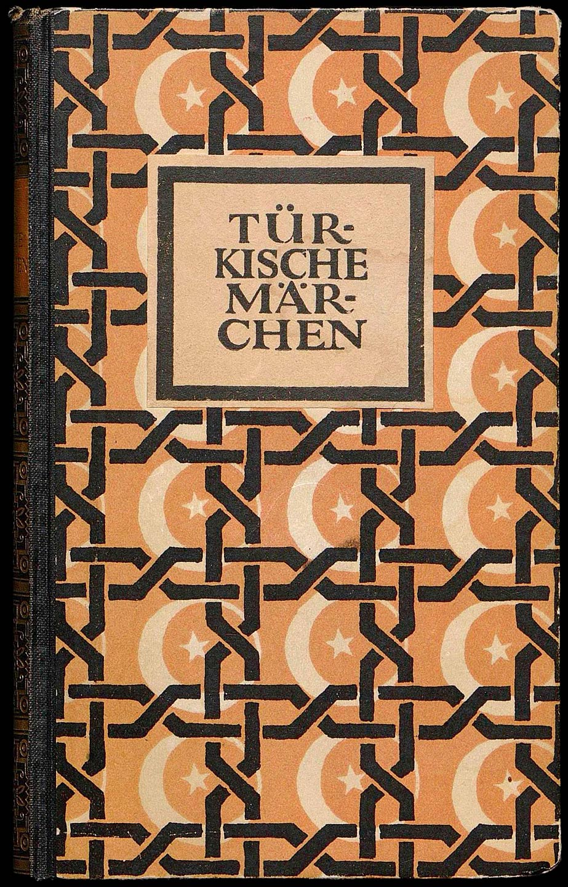
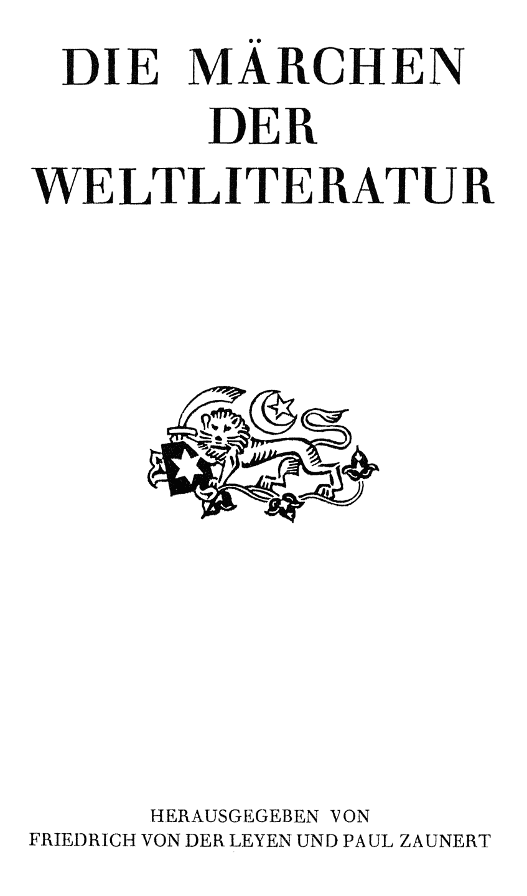
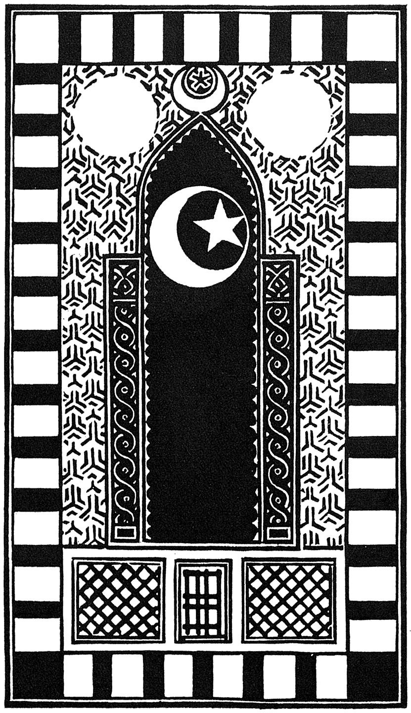
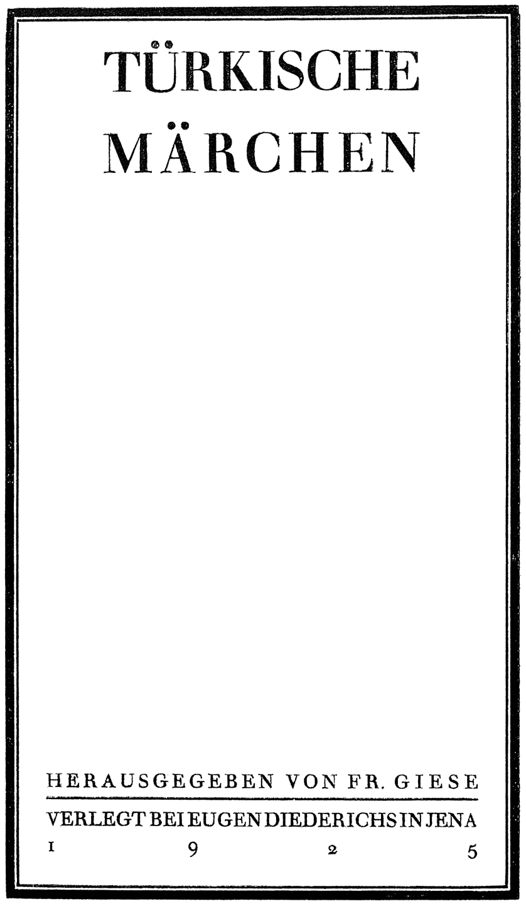

DIE MÄRCHEN
DER
WELTLITERATUR
Title: Türkische Märchen
Author: Friedrich Giese
Release date: February 4, 2023 [eBook #69949]
Most recently updated: October 19, 2024
Language: German
Original publication: Germany: Eugen Diederichs Verlag, 1925
Other information and formats: www.gutenberg.org/ebooks/69949
Credits: Jeroen Hellingman and the Online Distributed Proofreading Team at https://www.pgdp.net/ for Project Gutenberg (This file was produced from images generously made available by The Internet Archive)




BUCHAUSSTATTUNG VON F. H. EHMCKE
ERSTES BIS FÜNFTES TAUSEND
Alle Rechte, insbesondere das der Übersetzung in fremde Sprachen, vorbehalten. Copyright 1925 by Eugen Diederichs Verlag in Jena [1]
Die türkischen Märchen, die dieser Band bietet, sind zweierlei Art: Volksmärchen und Kunstmärchen. Die ersteren umfassen die Nummern 1 bis 21, die zweiten die Nummern 22 bis 66. Die letzteren sind die Märchen, die, in der Hauptsache aus Indien stammend, ihren Weg über die ganze Welt gemacht haben und auch durch Vermittlung des Persischen nach der Türkei kamen. Sie sind in den Märchensammlungen der Qyrq vezir, dem Humajunname und dem Tutiname enthalten.
Diese genannten Sammlungen sind keine sklavischen Übersetzungen, sondern kunstvolle Umarbeitungen, die als Produkte der türkischen Literatur ihren eigenen Wert und ihre Bedeutung haben. Einfluß auf das Volk haben sie nur indirekt ausgeübt, da sie ihres künstlichen Stiles wegen dem Ungebildeten nicht verständlich waren. Trotzdem finden wir auch in den Volksmärchen viele Stoffe aus diesen Sammlungen.
Türkische Volksmärchen sind zuerst in größerem Umfange von Ignác Kúnos gesammelt und herausgegeben worden. Ich nenne nur seine Hauptsammlungen:
1. Osmán-török népköltési gyűjtemény (2 Bände), Budapest 1887–1889.
2. Band VIII von Radloffs Proben der Volksliteratur der türkischen Stämme, Petersburg 1899.
3. Ada-Kalei török népdalok, Budapest 1906.
4. Materialien zur Kenntnis des rumelischen Türkisch (mit deutscher Übersetzung), Leipzig 1907.
Er hat auch einen Band: Türkische Volksmärchen aus Stambul. Leiden ohne Jahr, in deutscher Sprache herausgegeben, die aber mehr eine freie Bearbeitung als eine Übersetzung sind.
In der Türkei sind verhältnismäßig sehr wenige solcher Sammlungen gedruckt worden. Abgesehen von einzelnen Erzählungen sind in den früheren Jahren nur zwei Sammlungen erschienen. Erstens das Billur kjöschk, so genannt [2]nach dem Titel des ersten Märchens dieser Sammlung, und zweitens Horos kardasch. Von diesen ist das letztere von Georg Jacob übersetzt und in der Türkischen Bibliothek, Band V, Berlin 1906, erschienen. Von dem ersteren, über das man Georg Jacob, Die türkische Volksliteratur, Berlin 1901, S. 5 ff. vergleiche, war schon oft eine deutsche Übersetzung gewünscht worden. Die in Amerika erschienene englische Übersetzung: Told in the Gardens of Araby (untranslated till now) by Izora Chandler and Mary Montgomery, Neuyork 1905, ist mir unzugänglich geblieben. Ich habe daher die ganze Sammlung übersetzt. Es sind die ersten 14 Märchen dieses Bandes. Inzwischen ist nun noch eine Übersetzung von Theodor Menzel erschienen in Beiträge zur Märchenkunde des Morgenlandes, herausgegeben von Georg Jacob und Theodor Menzel, Band II, Hannover 1923.
In neuester Zeit hat man auch in der Türkei angefangen, sich mehr für das Märchen zu interessieren. Davon gibt zunächst ein Band: Türk Masallary (Türkische Märchen) von K. D. in Konstantinopel, Druckerei Mahmud Bej 1329/1911, und die Veröffentlichungen des Türk Yurdu der letzten Jahre Kunde.
Die Türk Masallary enthalten eine sehr hübsche Sammlung bekannter und unbekannter Märchen, die recht geschickt erzählt sind. Sie sind zwar im allgemeinen in einem einfachen Stil gehalten, aber sehr häufig finden sich doch Wendungen, die dem Volke nicht verständlich sind. Sie wenden sich mehr an den Durchschnittsgebildeten, dem sie diese Märchen in etwas verfeinerter und veredelter Gestalt darbieten. Da der gebildete Türke über diese Gattung Literatur im allgemeinen die Nase rümpft, so ist dies Bestreben durchaus anzuerkennen, aber von ihrer schlichten Einfachheit haben sie doch viel verloren. Von diesen Märchen ist bis jetzt das erste von Beck in dem Korrespondenzblatt der Nachrichtenstelle für den Orient Nr. 9, Berlin 1917, übersetzt. Der türkische Text ist von ihm in der [3]Sammlung: Der islamische Orient, Heidelberg 1917, veröffentlicht. Ich habe in meiner Übersetzung eine Probe in den Nummern 19 bis 21 gegeben.
Die Publikationen des Türk Yurdu wenden sich an die Jugend. Sie sind in reinem Türkisch geschrieben. Leider sind neben echt türkischen auch allerhand moderne europäische Stoffe übernommen. Ich habe aus dieser Sammlung das Märchen: In der Jugend oder im Alter?, das von Ömer Sēfüddīn verfaßt ist, übersetzt.
Neben diesen Märchen, die aus türkischen gedruckten Sammlungen entnommen sind, habe ich dann die Märchen übersetzt, die ich in Kleinasien aus dem Munde gänzlich ungebildeter Leute gesammelt und in meinem Werke: Materialien zur Kenntnis des anatolischen Türkisch, Halle 1907, veröffentlicht habe. Es sind dies die Nummern 15 bis 19. Stilistisch stehen sie natürlich am tiefsten, denn es sind eben keine Erzähler von Beruf, die sie mir mitgeteilt haben. Aber gerade in ihrer Unberührtheit von jeder Kunst der Darstellung geben sie ein Bild der türkischen Märchen in ihrer primitivsten Form.
Von den Kunstmärchen stammen 22 bis 40 aus dem Tutiname oder Papageienbuch, 41 bis 63 aus dem Humajunname und 64 bis 66 aus dem Qyrq vezir. Wie schon vorher gesagt, sind dies Übersetzungen, die in letzter Linie auf indische Vorbilder zurückgehen. Ich verweise hierfür auf den bibliographischen Wegweiser in Georg Jacob, Beiträge zur Märchenkunde des Morgenlandes, Band I, Hannover 1923, und auf Johannes Hertel, Das Pañcatantra. Seine Geschichte und seine Verbreitung, Leipzig und Berlin 1914.
Vom Tutiname gibt es eine vollständige deutsche Übersetzung von Georg Rosen (Tuti-nameh. Das Papageienbuch. Eine Sammlung orientalischer Erzählungen. Nach der türkischen Bearbeitung zum ersten Male übersetzt von Georg Rosen, Leipzig 1858). Aus dieser Übersetzung habe [4]ich die Verse und auch hier und da besonders glückliche Verdeutschungen des Prosatextes beibehalten.
Die Qyrq vezir hat Walter Fr. Adolf Behrnauer (Die vierzig Veziere oder weisen Meister, Leipzig 1851) übersetzt. Ich habe Nr. 64 bis 66 daraus übernommen mit gelegentlichen Verbesserungen.
Von dem Humajunname existiert bis jetzt keine deutsche Übersetzung, denn die von Suby Bey: Fabeln und Parabeln des Orients, Berlin 1903, herausgegebene ist nur eine inhaltliche Wiedergabe einiger ausgewählter Stücke. Ebendasselbe gilt von der französischen Bearbeitung Gallands und Cordonnes und der aus ihr geflossenen deutschen. Es sind alles selbständige Umarbeitungen des Inhaltes. Allerdings ist nun eine wörtliche Übersetzung für ein nicht orientalisch gebildetes Publikum eine Unmöglichkeit. Das Humajunname ist nämlich in einem so gekünstelten, mit Koranstellen und Versen geschmückten Stil geschrieben, der eine Menge Anmerkungen und Erklärungen nötig machen und den Leser ermüden würde. Ich habe daher das überflüssige Beiwerk ausgelassen und die Weitschweifigkeiten gekürzt, aber sonst, soweit es anging, übersetzt.
So dürfte dieser Band einen guten Überblick über das türkische Märchen in seinen verschiedenen Darstellungen geben. Verwandte Stoffe der Volksliteratur, wie den Volksroman, das Karagöz usw., hielt ich nicht für angebracht, in dieser Sammlung zu vereinigen. Es ist auch schon mancherlei davon in deutschen Übersetzungen vorhanden. Ich nenne nur die schöne Übersetzung des Köroglu von Szamatolski in der wissenschaftlichen Beilage zum Jahresberichte der sechsten städtischen Realschule zu Berlin, Ostern 1913, sowie die Karagözübersetzungen Georg Jacobs und verweise für die letzteren auf seine Türkische Literaturgeschichte in Einzeldarstellungen: Heft I, Das türkische Schattentheater, Berlin 1900.
Bei der Übersetzung habe ich mich im Gegensatz zu Kúnos möglichst an das Original gehalten, um dessen Einfachheit [5]nicht zu zerstören. Nur da, wo sich der türkische Satzbau nicht wiedergeben ließ, habe ich mir Freiheiten erlaubt. Jedenfalls kann die Übersetzung, soweit das möglich ist, eine wörtliche genannt werden. Die Weitschweifigkeiten, die Wiederholung derselben Wörter und die Unebenheiten im Stile, z. B. im Subjektswechsel, fallen dem Original zur Last. [7]
Die Geschichtenüberlieferer und die Märchenerzähler berichten folgendes. Die Kinder eines Padischahs blieben in der Welt nicht am Leben und starben immer. Eines Tages kam dem Padischah ein weiblicher Nachkomme in dieser Welt zum Leben. Zu dieser Zeit sagten ihm der Arzt und der Hodscha1, nachdem sie Untersuchungen angestellt hatten: „Padischah, wir wollen für deine Tochter unter der Erde eine Grube machen lassen, dort mag sie dann aufwachsen, da es keinen anderen Ausweg gibt.“
Dem Padischah der Welt gefiel diese Rede. Es wurde dann unter der Erde eine an allen vier Ecken bewachte Grube hergestellt. Man brachte das Kind in die Grube, bestimmte eine Kinderfrau, die ihm morgens und abends sein Essen brachte. Um es kurz zu sagen: das Kind kam so hier in sein vierzehntes oder fünfzehntes Lebensjahr. An Schönheit hatte es nicht seinesgleichen.
Eines Tages langweilte sie sich an diesem Orte und stellte alle Stühle, die in der Grube vorhanden waren, übereinander und stieg darauf. Sie brach die Glasdecke entzwei, steckte den Kopf hinaus und sah hinaus. Da sah sie ein weites Meer. Als die Sonne darauf leuchtete, glänzte es so, daß man nicht hinschauen konnte. Ach, sagte sie: „Wenn die Erde ein Unten hat, muß sie auch ein Oben haben“, und war einige Zeit in Staunen versunken. Dann stieg sie herab und blieb, wo sie war. Danach kam ihre Kinderfrau. Die sah auf einmal, daß die Glasdecke zerbrochen war. Jetzt fragte sie das Mädchen: „Wer hat das Glas zerbrochen?“ Da fing die Prinzessin an zu sagen: „Führe mich von hier fort oder ich bringe mich selber um.“
Die Kinderfrau ging von dort zum Padischah und erzählte alle die Worte, die die Prinzessin gesagt hatte, eins nach dem andern. Der rief wieder die Ärzte zusammen. Die sagten nach wiederholter Prüfung: „Padischah, hole [8]sie heraus, aber nicht sofort. Bis sich ihr Auge gewöhnt hat, mag sie etwas spazieren gehen, und dann bringe sie wieder in die Grube.“ Die Wärterin ging und führte die Prinzessin aus der Grube in einen Rosengarten. Als sie (die Prinzessin) dort spazieren ging, sah sie den Ozean und verfiel in Nachdenken. Sie ging von dort zu ihrem Vater und sagte: „Vater, laß mir sofort auf dem Meere, das wir dort sehen, einen Glaspalast machen, darinnen sollen auch Diamant- und Goldstühle und schöngestickte Möbel sein. Wenn du ihn nicht machen läßt, bringe ich mich sofort um.“
Der Padischah sagte: „Aber mein Kind, der Palast soll sein, wie du ihn dir wünschst.“ Dann gab er den Glasmachern Befehl. Sie fingen sofort an, auf dem Meere einen Palast zu machen. Genau in einem Jahre wurde er fertig. Dann gaben sie dem Padischah Kunde. Er ging an das Gestade des Meeres und sah ihn sich an. Das war ein solcher Glaspalast, daß jeder, der ihn sah, geblendet wurde. Mit Worten ihn zu beschreiben, ist unmöglich. Sein Glanz erfüllte die Welt.
Die Prinzessin kam und küßte ihrem Vater die Hand. Der Padischah sagte: „Mein Kind, der Glaspalast, wie du ihn gefordert hast, ist fertig geworden. Nimm dir einige Sklavinnen, geh hinein und wohne darin mit Vergnügen.“
Darauf nahm die Prinzessin, da sie jung war, einige Sklavinnen zu sich und betrat in feierlichem Zuge mit ihnen den Palast. Sie zogen ein und gingen dort spazieren.
Die mögen sich nun Tag und Nacht vergnügen, wir kommen jetzt zum Dschihan-i-alem2. Manche kamen zu Schiffe und manche zu Boot und sahen sich den Palast an. Eines Tages, als der Sohn des Padischahs von Jemen von diesem Palast hörte, wunderte er sich. Sofort ging er zu seinem Vater und sagte: „Mein mächtiger Vater, der Padischah von Stambul hat auf dem Meere einen Glaspalast bauen lassen, der sich nicht mit Worten beschreiben läßt. Wenn Sie erlauben, möchte ich hinreisen und ihn ansehen. [9]Nach ungefähr drei bis vier Monaten komme ich wieder.“ Da gab sein Vater die Erlaubnis.
Er nahm einige Gefährten zu sich, bestieg ein Schiff und machte sich auf den Weg. Tag und Nacht fuhren sie, ohne sich aufzuhalten. Nach einiger Zeit erschien in der Ferne etwas Wunderbares. Sein Glanz erfüllte die Welt. Der Prinz sagte zu seinen Gefährten: „Das, was dort erscheint, muß das erwähnte Schloß sein.“
Endlich nach einigen Tagen kam er an das Schloß heran und umfuhr es von allen vier Seiten. „Sehe ich ein Luftschloß oder träume ich?“ sagte er und verfiel in Nachdenken. Schließlich als es Abend wurde, ging er dort vor Anker.
Der Prinz mag nun auf dem Verdeck liegen; wir wollen uns jetzt wieder zur Prinzessin wenden. Sie ging vor das Vestibül, blickte nach draußen und sah, daß vor dem Palast ein Schiff lag. Als sie noch sagt: „Wem gehört das wohl?“, sieht sie den Prinzen. Das war ein Jüngling, gleich dem Monde am Vierzehnten. Sofort verliebt sie sich in ihn bis über die Ohren. Auch der Prinz, als er die Prinzessin sieht, wird bewußtlos und fällt ohnmächtig auf die Erde. Nach einiger Zeit kommt er wieder zu sich und steht auf. Er blickt auf das Fenster, kann aber das Mädchen nicht sehen. Während er sagt: „Ach, einmal möchte ich sie noch sehen!“ und hinblickt, verfällt er in Schlaf. Jetzt kommt die Prinzessin an das Fenster und sieht, daß der Prinz eingeschlafen ist. Da seufzt sie und aus ihren Augen fließt statt Tränen Blut. Während sie weint, fällt auf das Gesicht des Prinzen ein Tropfen. Sofort wacht er auf und sieht, daß aus den Augen der Prinzessin statt Tränen Blut fließt. Jetzt sagt der Prinz zum Mädchen: „Da ist das Schiff und da ist ein günstiger Wind nach Jemen!“ Das Schiff setzt sich in Bewegung und er fuhr in sein Land. Eines Tages kam er nach Jemen und blieb dort. Wir wollen uns jetzt wieder zur Prinzessin wenden. Ihre beiden Augen waren eine Quelle (d. h. sie weinte andauernd in Strömen). Sie ging zu ihrem [10]Vater und sagte: „Vater, ich wünsche von dir ein Schiff von reinen Diamanten, dessen Kabinen mit Edelsteinen geschmückt und dessen Masten aus Rubinen sein und in dessen Innern sich vierzig weiße, junge, schöne Sklaven befinden sollen. Wenn du mir das nicht machst, werde ich mich töten.“ Er sagte: „Schön, mein Kind, das Schiff soll sein, wie du es wünschest.“ Dann rief er die Goldschmiede zusammen und gab ihnen Befehl. Noch an jenem Tage fingen sie mit dem Schiff an. Nach genau zwei Jahren war es fertig. Jetzt kam die Prinzessin zu ihrem Vater, küßte seine Hand und sagte: „Vater, gib mir Erlaubnis, ich werde einen Luftwechsel vornehmen und, wenn Gott will, bald wiederkommen.“ Da ihr Vater auf der Welt nur eine teure Tochter hatte, so tat er, was sie wollte, und gab ihr gezwungenerweise wohl oder übel die Erlaubnis und sagte: „Mein liebes Kind, laß mich nicht lange auf dich warten! Allah möge Heil geben!“
Das Mädchen nahm dann vierzig weiße Sklavinnen und vierzig weiße Sklaven zu sich und außerdem eine Palasteinrichtung, ging auf das Diamantschiff und blieb dort die Nacht. Am nächsten Morgen, als es Tag wurde, wurden zweiundzwanzig Kanonenschüsse auf der rechten und auf der linken Seite des Schiffes gelöst. Dann fuhr man ab.
An jenem Tage lobte sie die ganze Welt und Hunderttausende priesen sie mit den Worten: „Was ist das für eine geschickte Prinzessin!“ Die Prinzessin war der Kapitän, ihr Gehilfe ein alter Kapitän und die Sklaven und Sklavinnen in ihrer Begleitung wurden als Soldaten gebraucht und von ihr befehligt. Eines Tages kamen sie nach Jemen. Sie lief in den Hafen ein, ging dort vor Anker und blieb jene Nacht dort.
Der dortige Aufsichtsbeamte hörte davon und kam es sich anzusehen. Als er es sah, sagte er: „Wer ist das wohl? Solch ein Schiff habe ich in meinem Leben nicht gesehen, Allah möge es vor dem bösen Blick bewahren!“ Dann ging er sofort zum Schloß und machte Meldung: „Mein Padischah, [11]gestern ist ein Schiff angekommen, das unbeschreibbar ist. Reiner Diamant und Juwelen! Es lohnt sich, es einmal anzusehen.“ Da schickte der Schah seinen Lala3 und sagte: „Forsche nach und komme wieder mit der Nachricht, wer es ist.“
Dann bestieg sein Adjutant eine Schaluppe und fuhr nach dem Diamantschiff. Als nun die Prinzessin sah, daß der Adjutant kam, kleidete sie ihre Mannschaft vom Kopf bis zu den Füßen in rote Kleider. Als endlich die Schaluppe sich der Landungstreppe näherte, ging die gesamte Mannschaft ihm entgegen und führte ihn nach oben geradeswegs zur Kabine des Kapitäns. Er setzte sich auf einen Stuhl und wurde freundlich begrüßt. Er sagte: „Aber mein Bej, ich möchte noch gern länger bleiben, aber der Schah erwartet mich, ich bin gekommen, um Kunde einzuholen. Wenn Sie mir Ihren schönen Namen sagen würden, würde ich den Padischah benachrichtigen.“
Der Kapitän sagte: „Ich bin ein Kaufmannssohn und bin auf die Reise gegangen, um mich zu vergnügen.“ Da ging er dann zum Padischah und sagte: „Padischah, das angekommene Schiff ist ein Handelsschiff, sein Kapitän ist ein junger Mann ohne Schnurr- und Backenbart, schön wie ein Mond am Vierzehnten. Seine Mannschaft ist ihm ganz entsprechend. Ja, mein Herr, es lohnt sich wirklich, es einmal anzusehen.“ Der Padischah bekam Lust und wünschte hinzugehen. Dann bestieg er eine Schaluppe mit sieben Doppelrudern und ging mit seinem ganzen Hofstaat auf das Schiff.
Als der Kapitän sah, daß der Herrscher kam, ließ er die ganze Mannschaft gelbe Kleider anziehen. Als der König sich der Landungstreppe näherte, gingen sie ihm alle entgegen und führten ihn nach oben. Als er in die Kabine des Kapitäns kam, empfingen sie ihn mit Ehren und bewirteten ihn mit Kaffee und Tabak. Der Padischah war erstaunt. Danach brach er wieder auf und ging in sein Schloß. [12]
Als der Prinz das hörte, verstand er sofort die Sache. Dann bestieg er eine Schaluppe und fuhr nach jenem Schiffe.
Wir wollen jetzt wieder zum Kapitän kommen. Wie das vorige Mal, ließ er die ganze Mannschaft grüne Gewänder anziehen. Jetzt legte der Prinz an dem Schiffe an. Sie gingen ihm alle mit Ehrerbietung entgegen. Schließlich kam er in die Kabine des Kapitäns und verweilte dort. Jetzt fragte der Prinz den Kapitän eingehend nach allem. Der Kapitän gab sich nicht zu erkennen. Der Prinz verliebte sich in den Kapitän und konnte sein Auge nicht von seinem Auge trennen. Als es schließlich Abend wurde, mußte der Prinz wohl oder übel aufstehen und in sein Schloß fahren.
Wir wollen uns nun wieder zum Kapitän wenden. Er schickte zu dem Aufsichtsbeamten der dortigen Gegend. Unter seiner Vermittlung legten sie das Schiff ins Dock. Vor dem Schloß war ein großer Palast. Den mieteten sie und ließen es sich gut gehen. Wir wollen uns jetzt zum Prinzen wenden. Am nächsten Morgen, als es Tag wurde, kam er an die Stelle, wo das Schiff gewesen war, und sieht, daß keine Spur davon da ist. „Ach, Gott“, sagte er, und schlug mit seinem Kopf auf den Boden. Er kam zu seinem Lala und fragte ihn. Der Lala erklärte ihm alles, eins nach dem anderen, und das Herz des Prinzen wurde wieder froh. Dann ging er ins Schloß. Als er vom Gartenhaus in das Fenster des erwähnten Palastes sah, fällt sein Blick auf das Mädchen. Der Prinz wurde verwirrt. Wer ist das wohl? Sollte es die Frau des Kapitäns sein? vermutete er bei sich. Es war eine Schönheit, die in der Welt nicht ihresgleichen hatte; die Locken waren nach beiden Seiten gescheitelt.
Als jetzt das Mädchen auch den Prinzen sah, schloß sie das Fenster und zog sich ins Innere zurück. Da verliebte sich der Prinz von neuem in sie, und indem er den Palast von allen vier Seiten umging, sagte er: „Ach, ob ich wohl noch einmal diese Schöne wieder sehen kann?“ Als es schließlich Nacht wurde, zog er sich in sein Zimmer zurück und weinte. [13]
Am nächsten Morgen kam er in das Gartenhaus und sieht, daß niemand am Fenster ist. Als er es nicht mehr aushalten konnte, ging er zu seiner Mutter und sagte: „Ach, Mutter, in diesem Palaste uns gegenüber wohnt die Frau des Kapitäns, ich habe sie am Fenster gesehen und mich in sie verliebt, nimm diese diamantbesetzten Holzschuhe und bringe sie ihr als Geschenk. Ich möchte noch einmal ihr Gesicht sehen, sonst bringe ich mich um.“ Die Mutter stand wohl oder übel auf und ging sofort zum Palast des Kapitäns. Nachdem sie eingetreten und gegrüßt hatte, gab sie die genannten Holzschuhe dem Mädchen. Das Mädchen nahm auch die Schuhe und gab sie den Sklavinnen in der Küche. Die arme Dame wunderte sich und sagte zu dem Mädchen: „Meine Prinzessin, der Prinz grüßt Sie besonders und wünscht Ihr gesegnetes Gesicht zu sehen, aber wie denken Sie darüber?“ Das Mädchen gab keine Antwort. Nachdem sie noch einige Zeit gesessen, ging sie in das Schloß und sagte zornig zum Prinzen: „Ich habe jenem Mädchen die Schuhe gegeben. Sie nahm sie und gab sie den Sklavinnen in der Küche. Ich war sehr ärgerlich, und obgleich ich ihr deine Sache auseinandergesetzt habe, gab sie überhaupt keine Antwort. Dann stand ich auf und ging hierher. Wenn dein Kummer auch noch so groß ist, so mußt du dich damit abfinden.“
Jetzt ging der Prinz wieder in ein Zimmer und weinte bis zum Morgen. Dann ging er zu seiner Mutter, küßte ihr die Hand und sagte: „Ach, liebe Mutter, nur du kannst helfen, denke über ein Mittel nach.“
Die Dame hatte eine sehr kostbare Perlenkette. Die kam ihr ins Gedächtnis. Sie sagte: „Ich habe im Kasten eine Perlenhalskette, ein Familienerbstück. Dir zu Liebe werde ich sie ihr geben. Wollen einmal sehen, was sie tut.“ Der Prinz war erfreut und küßte wieder seiner Mutter die Hände.
Die Dame ging vom Schloß in den Palast des Mädchens. Nachdem sie eingetreten, bestellte sie den Gruß des Prinzen und gab jene Perlen dem Mädchen. [14]
Das Mädchen hatte einen Papagei, der in einem Käfig an der Decke hing. Sie nahm die Perlen der Dame und gab sie anstatt Futter dem an der Decke hängenden Papagei. Das Tier fraß sie auf, indem es sie zerknackte. Da öffnete die Dame ihren Mund vor Erstaunen und sagte zu sich: „Sieh, der Papagei dieses Frauenzimmers frißt Perlen statt Futter.“
Dann stand die Dame auf und ging ins Schloß. Als der Prinz eiligst seine Mutter fragte: „Was hast du erreicht?“, sagte sie: „Ach, mein Sohn, ich habe die Perlen dem Mädchen gegeben. Sie nahm sie auch und hat sie einem an der Decke hängenden Papagei statt Futter gegeben. Das Tier hat sie auch vor meinen Augen aufgefressen. Als ich das sah, wurde ich traurig. Ich wußte nicht, was ich tun sollte. Ich weiß nicht, wie das mit uns wird.“
Der Prinz sagte zu seiner Mutter: „Es ist Dummheit von ihr, trag es ihr nicht nach.“ Auch in dieser Nacht schlief der Prinz bis zum Morgen nicht und weinte. Am Morgen ging er wieder zu seiner Mutter und sagte: „Ach, liebe Mutter, ich habe einen Koran, den bringe ihr. Vielleicht hat sie diesmal aus Ehrfurcht vor ihm Mitleid mit mir und handelt billig.“ Kurz, er überredete seine Mutter und schickte sie wieder hin.
Die Dame geht wieder bei Gelegenheit in den Palast. Die Prinzessin kommt herunter, geht ihr mit Ehrfurcht entgegen und holt sie nach oben. Die Dame war erstaunt. Schließlich holt sie von ihrer Brust den Koran heraus und gibt ihn dem Mädchen. Das Mädchen nimmt ihn auch artig, küßt ihn dreimal und legt ihn auf das Bücherbrett. Die Dame sagt zu ihr: „Mein Kind, der Prinz weint Tag und Nacht andauernd, schließlich wird er sich töten. Ach, mein Kind, da kannst nur du helfen. Zeige dem Prinzen doch nur einmal dein Gesicht, damit er dich sehen kann und für einige Zeit Freude hat.“ Darauf antwortet das Mädchen: „Mutter, ich zeige mich nicht für etwas Geringes.“ Die Dame sagte: „Ach, mein Kind, wir wollen tun, [15]was du verlangst.“ Darauf antwortete das Mädchen: „Mutter, ich will es dir geradeaus sagen, laß jetzt eine goldene Brücke machen, schmücke sie rings herum mit echten Rosen. Der Prinz soll dann an dem einen Ende sein Lager machen und sich dort hineinlegen, dann werde ich dorthin gehen, und dort mag er mich sehen.“
Danach stand die Dame auf und ging ins Schloß. Der Prinz fragte: „Ach, Mutter, was hast du erreicht?“ Sie sagte: „Mein Sohn, jenes Mädchen antwortete sehr bestimmt: ‚Eine goldene Brücke sollst du machen und rings herum mit echten Rosen schmücken, und der Prinz soll an dem einen Ende sein Lager bereiten und mich erwarten. Ich werde dorthin kommen und er kann mich sehen.‘ Wenn du das vermagst, laß es machen.“
Kurz, der Prinz ließ eine Brücke, wie das Mädchen sie beschrieben hatte, machen und schmückte sie ringsherum mit Rosen. Der Prinz machte an dem einen Ende der Brücke sein Lager und verweilte dort. Man schickte dem Mädchen Nachricht. Jetzt schmückte sich das Mädchen und ging mit seinem Gefolge zur Brücke. Als sie über die Brücke ging, stach sie sich an einem Rosendorn. Da rief sie: „Ach, mein Gesicht!“ und kehrte wieder in ihren Palast zurück. Der Prinz schaut aus und sagt: „Sie kommt, ich werde sie sehen.“ Als er sieht, daß das Mädchen umkehrt und weggeht, sagt er zu seiner Mutter: „Ach, Mutter, ich habe sie nicht sehen können.“ Die Dame geht sofort in das Haus des Mädchens und sagt zu ihr: „Meine Tochter, warum bist du nicht zum Prinzen gegangen?“ Das Mädchen antwortete: „Mutter, ein Rosendorn hat mir das Gesicht zerstochen, nun könnt ihr die Brücke und auch den Prinzen behalten.“
Die Dame sagte: „Meine Tochter, was sollen wir tun? Du hast in allem eine List.“ Da antwortete das Mädchen: „Mutter, ich will dir die Wahrheit sagen. Jetzt laß eine goldene Brücke machen, stelle auf der einen Seite einen goldenen und auf der anderen einen silbernen Leuchter auf. [16]Danach soll der Prinz sterben und ihr sollt ihm auf dem anderen Ende der Brücke sein Grab graben und ihn hineinlegen, dann will ich kommen und ihm zu Häupten ruhen. Da kann er mich nach Herzenslust ansehen.“
Die Dame stand zornig auf, ging ins Schloß und sagte: „Mein Sohn, ein Dorn hat das Mädchen ins Gesicht gestochen, darauf ist sie umgekehrt und in ihr Schloß gegangen.“ Als er fragte: „Was sollen wir jetzt tun?“, sagte sie: „Mein Sohn, das Mädchen gab ihre letzte Antwort. So wie das vorige Mal sollst du eine goldene Brücke machen lassen und auf beiden Seiten einen goldenen und einen silbernen Leuchter stellen. ‚Danach soll der Prinz sterben und auf dem einen Ende der Brücke soll man sein Grab machen, und dann mag er mich darin erwarten. Ich werde dann kommen und ihm zu Häupten verweilen. Dann mag er mich nach Herzenslust ansehen.‘ So antwortete sie.“
Der Prinz sagte: „Mutter, ich werde vor den Augen der Welt sterben, ins Grab gehen und sie erwarten. Wollen sehen, was sie diesmal für Listen hat.“ Das beschlossen sie.
Am folgenden Tage stellten sie auf der einen Seite der Brücke einen goldenen Leuchter und auf der anderen Seite einen silbernen auf, der Prinz ging ins Grab. Das Mädchen beobachtete alles.
Wir wenden uns nun wieder zu dem Mädchen. In jener Nacht ließ sie das Schiff aus dem Dock ziehen und alles, was an Möbeln in dem Palast war, mit den Sklavinnen auf das Schiff bringen. Als alles fertig war, ging das Mädchen zur Brücke zu dem Grabe, wo der Prinz war, und sagte: „Da ist ein Schiff und da ist günstiger Wind nach Stambul.“ Dann bestieg sie das Schiff und fuhr ab.
Der Prinz stand sofort auf und sieht, daß das Schiff unverzüglich abfährt. Der Prinz erhob ein Geschrei und ging sofort zu seiner Mutter: „Ach, Mutter, was ich getan habe, habe ich mir selber zuzuschreiben. Die Schuld liegt an mir.“ Da verstand er die Handlungsweise des Mädchens. Er ging zu seinem Vater, küßte ihm die Hand und sagte: [17]„Lieber Vater, gib mir die Erlaubnis, ich möchte ins Ausland gehen!“ Der sagte: „Sehr schön, mein Sohn!“ und gab ihm die Erlaubnis. Dann küßte er auch die Hand seiner Mutter und sagte: „Mutter, mir ist ein Ausweg erschienen, ich muß gehen.“ Er erhielt von seiner Mutter die Erlaubnis, ging aus dem Schloß, bestieg ein Schiff und machte sich auf den Weg. Nachdem er das Schiff verlassen, betrat er den erwähnten Palast. Die Prinzessin ging ihm mit ihren Sklavinnen entgegen. Sie führten ihn nach oben. Er sagte zu ihr: „Meine Prinzessin, ist es nicht schade um mich, daß du mir soviel angetan hast?“ Das Mädchen erwiderte: „Mein Prinz, du vergißt, was du mir angetan hast. Du bist mit dem Schiff angekommen, hast mich in Feuer gesetzt. War es da vor Gott zu verantworten, daß du wieder gingst?“ Da sagte er: „Ach, meine Prinzessin, verzeih’ mir mein Vergehen, trage es mir nicht nach! Die Schuld liegt an mir.“ Da umarmten sie sich und die beiden Verliebten erreichten glücklich ihre Absicht.
Danach ging die Prinzessin zu ihrem Vater, und erzählte ihm ihre Abenteuer eins nach dem andern. Der Vater war auch erfreut und sagte Gott Dank. Am folgenden Tage wurde die Ehe eingegangen und vierzig Tage und vierzig Nächte dauerten die Hochzeitsfestlichkeiten. In der Nacht auf den einundvierzigsten Tag betraten sie das Brautgemach und die beiden Verliebten hatten einander. Hiermit endigt unsere Geschichte und damit Schluß.
Die Geschichtenüberlieferer und die Märchenerzähler berichten folgendes. In alten Zeiten hatte eine Frau in der Welt einen teuren Sohn und eine Tochter. Die ließ sie nie auf die Straße gehen. Eines Tages faßte ihr Mann die Absicht, mit seinem Sohn nach dem Hedschas zu gehen und sagte: „Ich vertraue dich und meine Tochter dem Müezzin5 an. Wenn du etwas [18]brauchst, erhältst du es vom Müezzin.“ Dann brachte er alles mit ihr in Ordnung, und Vater und Sohn gingen nach dem Hedschas.
Wir kommen nun zu dem Müezzin. Eines Tages stieg er auf das Minaret, und während er den Gebetsruf rief, sah er das ihm anvertraute Mädchen im Garten Wasser schöpfen. Da verliebte er sich in das Mädchen und konnte es nicht mehr aushalten. Dann ging er in sein Haus und verhielt sich ruhig. In jener Nacht rief er eine alte Nachbarin und sagte zu ihr: „Da, Mutter, nimm diese zehn Goldstücke. Ich will von dir die Tochter des N. N., der nach dem Hedschas gegangen ist.“ Die Frau sagte: „Mein Sohn, ihre Mutter läßt sie nie auf die Straße. Es ist etwas schwer.“ Er sagte: „Ach, Mutter, nur du kannst helfen.“ Sie antwortete: „Mein Sohn, hast du einen Platz, wo ich sie hinführen kann, falls ich sie überrede?“ Der Müezzin sagte: „Mutter, morgen werde ich an dem und dem Orte ein Bad mieten. Führe sie dorthin. Da werde ich euch erwarten. Nimm du morgen zum Schein ein Bündel6 unter den Arm und gehe zum Hause der Frau. Wenn du sie überredet hast, führe das Mädchen zu mir.“ So verabredeten sie sich.
Als es Morgen wurde, nahm die Frau zum Schein ein Bündel unter den Arm und ging zum Hause der Frau. Sie sagte zu der Mutter des Mädchens: „Mutter, heute wird an dem und dem Orte ein Bad eröffnet und schönsingende Tänzerinnen und schöne Mädchen werden kommen, sich baden und den Tänzerinnen zuschauen. Ich habe besonders Euer Hochwohlgeboren besucht, um Ihre Tochter in das Bad zu führen, damit sie mit ihresgleichen und ihren Altersgenossen sich amüsiert und sich belustigt. Wenn es Abend wird, bringe ich Ihre Tochter wieder ordentlich zurück.“
Die Dame antwortete: „Mutter, meine Tochter ist bis jetzt noch nie irgendwohin gegangen. Außerdem ist es, seitdem ihr Vater nach dem Hedschas gegangen ist, heute [19]gerade zwei Tage her. Da werden die Leute uns nachsagen: ‚Der Vater des Mädchens ist gegangen, und gleich laufen sie auf die Straße‘.“ Die alte Hexe sagte: „Mutter, ich führe ja Ihre Tochter in ein Bad, nicht an einen andern Ort, daß die Nachbarn Ihnen Vorwürfe machen könnten. Die Töchter von so vielen Nachbarinnen gehen hin. Ihre Tochter braucht sich nicht zu schämen. Wenn Sie die Erlaubnis geben, gehe ich mit Ihrer Tochter hin.“ Schließlich überredete sie die Dame. Sie nahm das Mädchen mit sich und sie gingen in das Bad, das der Müezzin gemietet hatte.
Als sie eingetreten waren, sah sich das Mädchen nach allen vier Seiten um. Niemand war da. Da sagte sie: „Ist dies das von Ihnen gerühmte Bad? Es ist ja niemand da.“ Da antwortete die Frau: „Ach, mein Kind, es ist noch früh. Nunmehr werden sie kommen. Treten Sie ein und suchen Sie sich einen Platz aus, solange noch nicht so viele Leute da sind.“
Das Mädchen hielt das für wahr, zog sich aus und ging hinein. Die Frau ging nach Hause.
Wir kommen nun zu dem Mädchen. Als sie in den Schwitzraum tritt, sieht sie, daß der Müezzin ihres Viertels dort ist. Als das Mädchen ihn sieht, wird sie ohnmächtig. Sie nahm sich jedoch sofort zusammen und sagte: „Herr Müezzin, wir haben gehört, daß in diesem Bade Tänzerinnen spielen sollen. Ist dies das von Ihnen gerühmte Bad? Noch ist niemand da.“
Der Müezzin antwortete: „Meine Prinzessin, wenn niemand kommen sollte, wollen wir uns beide baden und uns vergnügen.“ Das Mädchen antwortete: „Bade du mich zuerst, nachher werde ich dich baden.“ Damit war der Müezzin einverstanden.
Der Müezzin nahm das Mädchen und badete sie ordentlich am Wasserbecken.
Dann sagte das Mädchen: „Komm’, jetzt werde ich dich baden.“ Der Müezzin setzt sich davor und das Mädchen fängt an ihn zu baden. Sie seifte seinen Kopf gehörig ein, [20]so daß er die Augen geschlossen halten mußte. Dann geht sie an das Becken, läßt alles Wasser auslaufen und verstopft alle Wasserhähne mit einem Lappen. Indem sie sagt: „Sieh, wie ein Mensch gebadet wird“, geht sie in das Abkühlzimmer des Bades und nimmt alles, was an Holzschuhen vorhanden ist, in ein Schurztuch, geht wieder zum Müezzin und schlägt ihm die um den Kopf und die Augen. Des Müezzins Geschrei drang bis zum Himmel. Um es kurz zu machen. Der Müezzin fiel auf den Boden und wurde ohnmächtig. Dann ging das Mädchen hinaus, zog sich ihre Kleider an und kam nach Hause. Als ihre Mutter fragte: „Nun, meine Tochter, wie war das Bad?,“ da verrät sie ihre Absicht nicht und sagt: „Sehr gut, Mutter, es war ein Bad ohnegleichen.“
Die wollen wir nun ruhen lassen und uns zum Müezzin wenden. Als er nach einer Zeit wieder zu sich kommt, sind seine Augen voll Schaum. Er geht zum Wasserbecken, taucht die Wasserschale hinein. Auch nicht eine Spur von Wasser ist da. Er öffnet den Wasserhahn, er sieht, daß kein Wasser kommt. Um es kurz zu machen. Er geht zu allen Wasserbecken, findet in keinem Wasser. Darauf kommt der Badewärter. Als er den Müezzin so sieht, sagt er: „Herr Müezzin, was ist dir geschehen, daß dein Kopf so voll Schaum ist.“ Der Müezzin antwortete: „Ach, Badewärter, um mir den Kopf mit dem in dem Becken befindlichen Wasser zu waschen, ging ich mit den eingeseiften Augen. Wie sehr ich aber auch Wasser suchte, konnte ich doch nichts finden. Ich muß wohl vorher vergessen haben, den Hahn zu öffnen.“ Dann öffnete der Badewärter einen Hahn. Der Müezzin wusch sich und ging hinaus, zog sich die Kleider an und ging nach Hause. Er legte sich übelgelaunt schlafen, da sein ganzer Körper so zerschlagen war, daß er sich nicht rühren konnte.
Um sich an dem Mädchen zu rächen, schrieb er eines Tages an den Vater des Mädchen einen Klagebrief und schrieb darin: „Deine Tochter ist eine Hure geworden und [21]läßt sogar die Hunde über sich.“ Den Brief schickte er an den Vater. Als er den Vater erreichte, öffnete er ihn sofort, las ihn und sagte: „Ach, meine Tochter ist eine Hure geworden. Ist das nicht eine Schande für mich?“ Dann sagte er voll Zorn zu seinem Sohne: „Geh sofort nach Hause, schlage meiner Tochter den Kopf ab und bringe mir schleunigst ihr blutbeflecktes Hemd.“
Sein Sohn stand auf und machte sich auf den Weg. Eines Tages kommt er in sein Stadtviertel. Indem er von Anfang bis zu Ende bei allen Nachbarn herumfragt und sich zu vergewissern sucht, bestätigten sie ihm alle: „Nein, mein Sohn, wir haben nie gesehen, daß deine Schwester auf die Straße gegangen ist.“ Schließlich kommt er nach Hause und klopft an die Tür. Die Schwester sagte: „Ach, mein Bruder“, eilt die Treppe nach unten, öffnet die Tür und führt ihn nach oben und fragt: „Wo ist mein Vater?“ Ihr Bruder sagt: „Er ist unterwegs, komm, wollen ihm entgegengehen.“ Sofort legt das Mädchen ihren Mantel an und geht mit ihrem Bruder aus dem Hause. Der führte sie auf einen Berg und sagte: „Schwester, man hat dem Vater einen Brief geschrieben: ‚Deine Tochter ist eine Hure geworden, sie läßt jedermann über sich‘. Als der Vater dies gehört, wurde er zornig und sagte zu mir: ‚Du mußt meiner Tochter den Kopf abschlagen und ihr blutbeflecktes Kleid mir bringen‘. Dies ist der Grund meines Kommens, Schwester.“
Als die Schwester davon hörte, klärte sie ihn nicht auf. Schließlich sagte ihr Bruder: „Meines Vaters Versprechen muß ausgeführt werden.“ Er nahm einen jungen Hund, tötete das Tier und befleckte das Hemd seiner Schwester mit Blut und sagte: „Schwester, nun heißt es Abschied nehmen. Gehe jetzt in ein anderes Land, Gott möge dir helfen.“ Dann trennten sie sich für ewig. Dann entwich das Mädchen und ging weinend von Berg zu Berg.
Der Junge nahm das blutige Hemd seiner Schwester und machte sich auf den Weg. Eines Tages kam er nach dem Hedschas, ging zu seinem Vater und sagte: „Da, Vater, [22]habe ich dir das blutige Hemd deiner Tochter gebracht“ und übergab es ihm. Der sagte: „Gott sei Dank, nun bin ich aus dem Gerede der Leute gekommen.“
Die wollen wir nun hier lassen und wieder zum Mädchen gehen. Das Mädchen ging von Berg zu Berg und kam schließlich an ein Wasserbecken. Dort trank sie klares Wasser. Neben dem Becken war ein Baum. In den Schatten des Baumes setzte sie sich und ruhte sich etwas aus. Es gab dort aber sehr viel reißende Tiere. Nach einiger Zeit überlegte sie: „Es ist Abend geworden, wohin soll ich gehen?“ Schließlich kam ihr dieser Baum in den Sinn. Sie sagte: „Ich will wenigstens auf jenen Baum steigen und mich vor den Tieren schützen.“ Dann kletterte sie auf den Baum. Jene Nacht blieb sie auf dem Baum.
Als es Morgen wurde, war nun gerade der Sohn des Padischahs dieses Landes auf Jagd ausgezogen. Sein Pferd war sehr durstig und kam schließlich an das Becken. Der Prinz faßte das Pferd am Halfter und führte es an das Wasser. Das Pferd nun, während es sein Maul dem Wasser nähert, scheut, als es trinken will, und ist nicht zum Trinken zu bewegen. Die Sonne hatte nämlich das auf dem Baume befindliche Mädchen getroffen und ihr Bild auf das Wasser geworfen. Wie sehr auch der Prinz das Tier quält, es geht nicht ans Wasser. Auf einmal hebt der Prinz seinen Kopf nach oben. Als er das Mädchen sieht, verliert er das Bewußtsein. Er redet sie an: „Bist du ein Geist oder was bist du?“ Das Mädchen sagte: „Ich bin ein Mensch.“ Schließlich ließ er das Mädchen heruntersteigen und sagte: „Das war also meine heutige Jagdbeute.“ Dann nahm er das Mädchen und ging ins Schloß. Dann brachte er seinem Vater die Kunde und heiratete nach Allahs Anordnung und nach dem hehren Brauch des Propheten jenes Mädchen.
Vierzig Tage und vierzig Nächte dauerte das Hochzeitsfest. Am einundvierzigsten Tage betrat er das Brautgemach. Nach einiger Zeit hatte der Prinz von diesem Mädchen drei Nachkommen. [23]
Diese Kinder mögen nun in der Wiege aufwachsen! Eines Tages kam dem Mädchen seine Mutter ins Gedächtnis und aus ihren Augen flossen Tränen so groß wie Regentropfen. Darüber kam der Prinz hinzu. Als er sah, daß das Mädchen geweint hatte, sagte er: „Meine Prinzessin, warum weinst du so?“
Das Mädchen antwortete: „Ach, mein Herr, als ich heute dasaß, kam mir meine Mutter in den Sinn. Aus Sehnsucht nach ihr weine ich.“ Als der Prinz fragte: „Meine Prinzessin, lebt deine Mutter oder ist sie tot?“, sagte sie: „Ach, mein Herr, sie lebt. Es ist schon lange her, daß ich Sehnsucht nach ihr habe. Jetzt habe ich Verlangen nach ihr.“ Da sagte der Prinz: „Meine Prinzessin, warum hast du mir nichts davon gesagt? Hätte ich dir sonst nicht die Erlaubnis gegeben? Entweder wollen wir deine Mutter hierher holen oder du gehst zu deiner Mutter und siehst sie wieder. Sieh, wie du willst, so wollen wir es tun.“
Das Mädchen antwortete: „Mein Herr, möge Gott Ihnen langes Leben und Gesundheit geben. Wenn Sie Ihrer Dienerin die Erlaubnis geben, so möchte ich morgen mit meinen Kindern zu meiner Mutter gehen und sie noch einmal in dieser Welt wieder sehen und ihr meine Kinder wieder zeigen.“ Der Prinz sagte: „Meine Prinzessin, sehr schön. Es soll so sein. Morgen sollst du in Begleitung einiger Leute mit deinen Kindern gehen und deine Mutter besuchen.“ Schließlich schliefen sie diese Nacht.
Am nächsten Morgen rief der Prinz seinen Hofmeister und vertraute die Prinzessin und ihre Kinder dem Hofmeister an. Die Prinzessin stieg mit ihren Kindern in einen Wagen, der Hofmeister bestieg ein Pferd und nahm als Begleitung ein Bataillon Soldaten mit. Sie fuhren vom Schlosse fort und machten sich auf die Reise.
Nach einiger Zeit steckte der Vezir seinen Kopf in den Wagen und sagte zum Mädchen: „Entweder gibst du dich mir hin oder ich töte deine Kinder.“ Das Mädchen wurde verwirrt und sagte: „Was ist das für eine Sache! Das ist [24]ja unmöglich.“ Der Vezir sagte: „Ja, meine Prinzessin, du mußt dich mir hingeben.“ Das arme Mädchen wollte ihm nicht willfährig sein und gab ihm eins ihrer Kinder. Der Vezir nahm es, erwürgte es und warf es auf die Erde. Nach einiger Zeit steckte er wieder den Kopf in den Wagen und sagte: „Mädchen, du mußt mir willfährig sein, oder soll ich auch diese Kinder töten?“ Das Mädchen sagte: „Nein, ich werde mich dir nicht hingeben, da töte die Kinder.“ Der Vezir streckte seine Hand aus, nahm eins von den Kindern und tötete es. Kurz nach einiger Zeit erwürgte er auch das andere Kind. Als keine Kinder mehr da waren, blieb die Prinzessin allein im Wagen. Nachdem sie etwas gereist waren, zog der Vezir am Kopf seines Pferdes und hielt an, steckte seinen Kopf in den Wagen und sagte: „Heh, Mädchen, deine drei Kinder habe ich getötet. Auch dich werde ich töten oder du gibst dich mir hin.“ Das Mädchen antwortete: „Gib mir eine halbe Stunde Zeit, daß ich die Waschung vollziehe und zwei Gebete bete, dann will ich mich dir hingeben.“
Der Vezir gab dem Mädchen eine halbe Stunde Erlaubnis. Das Mädchen stieg aus. Der Vezir band ihr, damit sie nicht entfliehen konnte, einen Strick um den Leib und ließ sie frei. Das Mädchen ging etwas weiter, löste den Strick von ihrem Leibe und band das Ende an einen Baum und entfloh. Nachdem sie von Berg zu Berg gelaufen war, zieht der Vezir am Strick, sieht, daß er nicht los ist, und denkt: „Das Mädchen vollzieht die Waschung“, und wartet. Dann überlegt er: „Seitdem dies Mädchen weggegangen ist, ist eine halbe Stunde verflossen. Das ist ja eine endlose Waschung. Ich will doch einmal hingehen und nach dem Mädchen sehen.“ Als er etwas gegangen ist, sieht er auf einmal, daß das Ende des Strickes an einen Baum gebunden ist und sie selbst entflohen ist. Er sagte: „Da habe ich sie mir doch entwischen lassen“ und raufte sich die Haare. Dann kehrte er zu den Soldaten zurück und sie gingen wieder in das Schloß. [25]
Als er zum Prinzen kam, sagte er: „Mein Prinz, als wir unterwegs waren, nahm die Prinzessin ihre Kinder, warf sie, ohne daß wir es sahen, aus dem Wagen und entfloh. Und mein Prinz, ein Mädchen, das von den Bergen kommt, schafft nichts Gutes. Vom Berge ist sie gekommen und wieder auf den Berg gegangen.“ Als der Prinz das hört, wird er bewußtlos, fällt auf der Stelle auf den Boden und wird ohnmächtig. Man besprengte sein Gesicht mit Rosenwasser, und er kam wieder zu sich. Dann trauerte er um das Mädchen.
Die wollen wir nun verlassen und sehen, wie es dem Mädchen ergangen ist. Sie war weinend von Berg zu Berg gegangen und war schließlich in ihres Vaters Land gekommen. Sie wechselte ihre Kleider und ging auf den Basar. Sie kam zum Laden eines alten Halwahändlers, dessen Laden verfallen war. Nachdem sie ihn begrüßt hatte, sagte sie zu dem Alten: „Willst du mich als Lehrling annehmen?“ Der Halwahändler antwortete: „Ach, mein Sohn, ich kann kaum das Geld für mein Abendbrot verdienen. Wenn ich dich als Lehrling nehme, wie sollte ich dir Lohn geben? Außerdem habe ich auch die Halwazubereitung vergessen.“ Das Mädchen antwortete: „Vater, ich verlange von dir nichts. Gib mir nur die Kost. Dafür arbeite ich. Wir ernähren uns von dem, was Gott gibt.“ Als der Alte diese angenehmen Worte hörte, widersprach er nicht und sagte: „Gut, mein Sohn, komm.“ Dann küßte das Mädchen seinem Meister die Hand, trat ein und setzte sich in dem Laden hin. Nach einigen Tagen streifte das Mädchen seine Ärmel auf, ging an den Herd und fing an Halwa zu bereiten. Sie machte ein schönes Halwa und setzte ihrem Meister eine Probe vor. Ihr Meister langte zu, und nachdem er etwas gegessen hatte und der angenehme Geschmack auf der Zunge geblieben war, sagte er: „Mein Sohn, du hast ein sehr gutes Halwa gemacht. Möge deine Hand dir gesund erhalten bleiben! Möge Allah sie vor dem bösen Blick bewahren.“ Dann wusch sie den Stein (auf dem Ladentisch) ab und legte [26]das Halwa, das schön klar wie Mastix aussah, darauf. Als die Kunden kamen und den schönen Jüngling sahen, gerieten sie in Erstaunen. Selbst wenn sie eigentlich kein Halwa kaufen wollten, so kamen sie doch in den Laden und kauften es. Und wer schon einmal gekauft hatte, kehrte um und kaufte noch einmal Halwa. Von diesem schönen Halwaverkäufer wurde überall gesprochen.
Wir wollen den schönen Halwaverkäufer bei seiner Arbeit lassen und uns wieder zum Prinzen wenden. Als ihm eines Tages dies Mädchen und seine Kinder ins Gedächtnis kamen, seufzte er und aus seinen Augen flossen Tränen so groß wie Regentropfen. Dann rief er seinen Hofmeister und sagte: „Ich will die Prinzessin wieder haben. Ich will sie suchen, ich muß sie finden, sonst töte ich mich.“ Der Vezir sagte: „Mein Prinz, das Mädchen wollte dich nicht und ist in die Berge geflohen. Wie willst du es jetzt finden?“ Alle diese Worte nützten nichts. Jedenfalls nahm der Prinz den Vezir zu sich. Sie verließen das Schloß und gingen in die Berge, um das Mädchen zu suchen. Sie kamen in das Land, wo sich das Mädchen befand. Da sie sehr hungerten, fragten sie ein Kind: „Mein Sohn, ist hier nicht irgendwo ein Garkoch?“ Das Kind antwortete: „Mein Herr, hier ist keine Garküche, aber etwas weiter ist der Laden des schönen Halwaverkäufers. An dem Halwa, das er macht, kann man sich gar nicht satt essen. Er macht sehr schönes Halwa.“ Als der Prinz das Lob dieses Halwahändlers hörte, konnte er sich nicht länger halten und ging mit dem Vezir zu dem Laden des schönen Halwaverkäufers. Als jetzt das Mädchen den Prinzen mit dem Vezir kommen sah, erkannte es sie, aber gab sich nicht zu erkennen. Als der Prinz sagte: „Gib uns einige Stück Halwa“, antwortete das Mädchen: „Meine Herren, wenn Sie diese Nacht hierbleiben, werde ich Ihnen ein sehr schönes Halwa bereiten und sie mit einer sehr merkwürdigen Geschichte unterhalten.“ Als der Prinz die freundlichen Worte des schönen Halwaverkäufers und seine liebenswürdige Begrüßung [27]hörte, sah er ihm ins Gesicht, erstaunte, konnte nicht mehr an sich halten und sagte: „Sehr schön, junger Mann, wir bleiben.“ Dann traten der Prinz und der Vezir in den Laden und setzten sich.
Die mögen nun dort sitzen, wir wollen uns jetzt zu den Leuten aus dem Viertel wenden. Die wollten an jenem Tage eine Halwagesellschaft machen. Der eine sagte: „Aber von wem wollen wir das Halwa machen lassen? An der und der Stelle ist ein schöner Halwajüngling. Der macht sehr schönes Halwa, von dem wollen wir es machen lassen.“ Einige von ihnen standen auf, gingen zum Laden dieses Halwahändlers und sagten: „Kannst du heute zu uns kommen und uns ein schönes Halwa machen? Denn wir haben die Leute des Viertels eingeladen und wollen heute nacht eine Halwagesellschaft geben.“
Der schöne Halwaverkäufer sagte: „Sehr gern, meine Herren, aber ich habe Gäste. Da kann ich nicht weggehen, sonst sind sie allein.“ Da sagten sie: „Aber bringe sie doch mit. Über uns ist Platz.“ Der schöne Halwaverkäufer wandte sich zu seinen Gästen und sagte: „Meine Herren, man hat mich zu einer Halwagesellschaft gerufen. Wollen, bitte, zusammen gehen, dort werden wir uns unterhalten.“ Der Prinz sagte: „Sehr schön!“ Die drei verließen zusammen den Laden und gingen mit den Leuten in das Haus, das sie angaben, und stiegen die Treppe hinauf. Der Prinz und der Vezir blieben in einem Zimmer. Der schöne Halwajüngling machte sich daran, unten das Halwa zu bereiten. Nachdem er schließlich das Halwa fertig hatte, bewirtete er zuerst die Gäste unten in dem Zimmer und verabschiedete sich. Nun kam die Reihe an die im oberen Zimmer. Dann nahm er die Kasserolle und das Kohlenbecken und ging nach oben, trat ein und sieht, daß die Leute des Viertels, sein Vater und Bruder, der Müezzin, der Prinz und der Vezir alle in dem Zimmer anwesend sind. Sofort stellt der schöne Halwaverkäufer das Kohlenbecken in die Mitte des Zimmers und fängt an Halwa zu bereiten. Dann [28]sagte er: „Meine Herren, Sie sind ja so still. Ein jeder möge eine Geschichte erzählen, die ihm passiert ist, damit wir uns unterhalten, denn dazu sind wir ja zusammengekommen.“ Die nichtsahnenden Einwohner fingen an. Jeder erzählte eine Geschichte, die ihm passiert war. Als sie fertig waren, sagten sie zu dem schönen Halwaverkäufer: „Wir haben erzählt, nun erzähle du uns auch eine Geschichte, damit wir zuhören.“ Der schöne Halwaverkäufer sagte: „Meine Herren, wenn ich eine Geschichte erzähle, habe ich die Gepflogenheit, keinen aus der Tür hinauszulassen. Wer hinausgehen will, mag jetzt hinausgehen.“ Die Gesellschaft sagte: „Nein, es ist keiner da.“ Dann setzte sich der schöne Halwaverkäufer an die Tür und fing an seine Geschichte zu erzählen. Als er zuerst die Geschichte, die ihm im Bade passiert war, erzählte, hörte der Müezzin aufmerksam zu. Als er sie hörte, rief er: „Ach, mein Bauch, mein Bauch schmerzt mir.“ Der schöne Halwaverkäufer sagte: „Setz’ dich nur hin.“ Als er dann die Geschichte von der Ermordung der Kinder auf der Reise erzählte, seufzte der Prinz und seine Augen wurden voll Tränen. Da begriffen der Vater, der Bruder, der Prinz, der Vezir und der Müezzin die ganze Sache. Dann sagte das Mädchen: „Die Gesellschaft soll wissen, daß meine Feinde hier der Müezzin und der Vezir sind. Dies hier ist mein Vater, mein Bruder und mein Gatte, der Prinz.“ Darauf ging sie zu ihm und setzte sich unter den Saum seines Kleides. Der Prinz bedeckte das Mädchen und die ganze Gesellschaft biß sich auf den Finger7 und war still. Am nächsten Morgen töteten sie den Müezzin und den Vezir unter verschiedenen Martern. Dann trennten sie sich. Das Mädchen küßte ihrem Vater und ihrer Mutter die Hand und zog mit dem Prinzen wieder auf sein Schloß, und sie heirateten sich von neuem. Vierzig Tage und vierzig Nächte dauerte das Hochzeitsfest. Am einundvierzigsten betrat der Prinz das Hochzeitsgemach. Sie erreichten, was sie wollten und damit Schluß! [29]
Die Geschichtenüberlieferer und Märchenerzähler berichten folgendes. In alten Zeiten lebte ein erwachsener Jüngling in sehr ärmlichen Verhältnissen. Eines Tages verkleidete er sich und machte sich auf die Reise. Nach langem Reisen kam er in ein Land. Er kam an ein altes Kaffeehaus und fragte den Wirt: „Meister, würdest du mich als Lehrling annehmen?“ Der Wirt sagte: „Ach, mein Sohn, meine Kaffeeschenke ist alt. Am Tage kommen ein paar Kunden. Fünf bis zehn Para nehme ich ein, davon kaufe ich das Brot für den Abend und gebe es für meinen Unterhalt aus.“ Der Jüngling sagte: „Vater, ich verlange von dir nichts. Ich will nur meinen Kopf hier ein wenig einstecken und verweilen.“ Dagegen sagte der Kaffeewirt nicht: „Es ist unmöglich“, sondern: „Sehr schön, mein Sohn, was Gott schenkt, nimmt man hin.“ Darauf küßte der Jüngling dem Meister die Hand, trat ein und verblieb im Kaffeehaus. Als es Abend wurde, sagte sein Meister: „Mein Sohn, ich gehe jetzt nach Hause, schließe du das Kaffeehaus ordentlich zu und schlafe darin.“ Sein Meister ging nach Hause weg.
Wir wenden uns nun zu dem Jüngling. Dieser verschloß ordentlich das Kaffeehaus, legte sich auf die Bank und schlief ein. Ungefähr um vier oder fünf krachte die Türe des Kaffeehauses, öffnete sich, und ein Derwisch trat ein und grüßte. Der schlafende Jüngling wachte auf und erwiderte höflich den Gruß des Derwisches. Jetzt sagte der Derwisch: „Steh auf, junger Mann, koche mir einen Kaffee umsonst.“ Der Jüngling stand auch auf und kochte dem Derwisch einen Kaffee umsonst und reichte ihm den. Der Derwisch trank den Kaffee und ging, ohne ein Wort zu sagen, hinaus. Der Jüngling sagte: „Hoffentlich ist es eine gute Vorbedeutung“, schloß die Türe der Kaffeeschenke, setzte sich wieder auf die Bank und blieb die Nacht dort. Als es Morgen wurde, sagte er nichts dem Meister davon. Als es wieder Abend wurde, schlief er wieder wie das erstemal [30]ein. Genau um vier oder fünf ungefähr krachte wieder die Türe und öffnete sich. Da kamen zwei Derwische herein, grüßten und sagten: „Koche uns zwei Kaffee umsonst.“ Der Jüngling stand auf, kochte ihnen zwei Kaffee umsonst und gab sie ihnen. Sie tranken den Kaffee und gingen weg. Er schloß wieder die Türe des Kaffeehauses und verblieb die Nacht auf der Bank. Als es Morgen wurde und der Meister kam, sagte er ihm nichts von den Geschehnissen. Als es Abend wurde, schloß er wieder das Kaffeehaus und stellte alles, was an Dingen vorhanden war, hinter die Tür, legte sich auf seine Bank und schlief ein. Genau gegen vier oder fünf erhob sich ein sehr starker Lärm, die Tür krachte und öffnete sich, und herein traten drei Derwische. Nachdem sie gegrüßt hatten, sagten sie: „Steh auf, junger Mann, und koche uns drei Kaffee umsonst.“ Der arme Jüngling stand auf, kochte den Kaffee und gab ihnen den. Sie tranken ihren Kaffee und standen auf. Der eine sagte: „In der Kaffeeschenke, in der sich dieser junge Mann befindet, soll nie in der Kaffeebüchse an Kaffee und Zucker Mangel sein; sie sollen immer bis an den Rand voll sein.“ Der zweite sagte: „In die Kaffeeschenke, in der sich dieser junge Mann befindet, sollen Kunden wie Ameisen kommen.“ Der dritte sagte: „Dieser junge Mann soll alle Löcher zum Sprechen bringen können.“ Schließlich gingen alle drei Derwische auf einmal davon.
Der Jüngling schloß wieder wie das erstemal die Türe des Kaffeehauses, legte sich auf die Bank und schlief ein. Als es Morgen wurde, stand er auf, öffnete das Kaffeehaus und sieht, daß vor dem Kaffeehaus die Kunden wie Ameisen gedrängt stehen. Er sagte: „Es ist tatsächlich geschehen, was die Derwische in der Nacht sagten“, und dankte Gott. Danach ging er an den Herd und als er nach dem Kaffee und Zucker sieht, um den Kunden Kaffee zu kochen, ist die Büchse bis zum Rande voll. Er sagte: „Die Derwische waren doch nicht so ohne.“ Dann verfiel er in Nachdenken. Doch kochte er andauernd Kaffee und setzte [31]ihn den Gästen vor. Schließlich kommt sein Meister und sieht, — na, was siehst du?8 — der Platz vor dem Kaffeehaus und drinnen ist voller Menschen. Er sagt zu sich: „Das ist ja ein reines Wunder“, steckt den Finger in den Mund7 und bleibt stehen. Er denkt: „Jeden Tag kommt sonst nur der eine oder der andere Kunde. Dahinter muß etwas stecken.“ Er geht umher und findet keinen Platz zum Sitzen. Dann fragt er den Jüngling: „Hast du Kaffee und Zucker in dem Kasten?“ Der Jüngling antwortete: „Ja, Meister, ich habe welchen gekauft. Setze dich nur hin und vergnüge dich.“ Da setzte sich sein Meister irgendwohin.
Der junge Mann kochte andauernd Kaffee. Als es schließlich Abend wurde, ging sein Meister an die Schublade, öffnet sie und sieht, — na, was siehst du? — die Schublade ist bis zum Rande voller Geld. Als der Meister das sieht, wäre er beinahe ohnmächtig geworden. Dann sagte er: „Bravo, mein Junge, dein Fuß war glückbringend!“ und küßte den jungen Mann auf die Augen. Dann steckt er das Geld in den Beutel und trug es nach Hause.
Der junge Mann verblieb einige Monate im Kaffeehause und an jedem Tage kamen viele Kunden. Sie wurden nun so reich, daß sie keinen Platz finden konnten, wo sie das Geld hinlegen konnten. Schließlich sagte der junge Mann eines Tages zu seinem Meister: „Meister, ich möchte in meine Heimat reisen, gib mir die Erlaubnis.“ Der Meister wollte sich zwar nicht von ihm trennen, notgedrungen sagte er aber wohl oder übel: „Sehr schön, mein Sohn, Allah möge dir Heil geben, geh!“ Dann küßte der junge Mann seinem Meister die Hand, und der Meister gab ihm ein paar Kleider, wie es in der Welt nicht Ähnliches gibt, ganz mit Goldstickerei und mit Juwelen. Er zog sie an und machte sich auf den Weg.
Eines Tages kam er in ein anderes Land; dort mietete er sich ein Kaffeehaus und fing an zu arbeiten. Wieder kamen wie vorher so viel Kunden, daß sie sich nicht zählen ließen. [32]Kurz, dieser schöne Kaffeeschenk wurde in dieser Stadt bekannt.
Als eines Tages einer von den Reichen der dortigen Gegend davon hörte, konnte er es nicht mehr aushalten, stand auf und ging sofort in das Kaffeehaus, wo der schöne Kaffeeschenk war. Er setzte sich dort hin und verblieb dort, konnte aber sein Auge nicht von dem jungen Manne wenden. Er war so schön, als wenn er aus Wachs geformt wäre. — Der Reiche riß vor Erstaunen seinen Mund auf.
Der junge Mann kochte einen ganz besonders leckeren Kaffee und setzte ihm den vor. Dieser Reiche streckte seine Hand aus und trank ihn. Als er den Genuß ganz ausgekostet hatte, sagte dieser Reiche zu dem schönen Kaffeeschenk: „Schöner Kaffeeschenk, ich habe eine Tochter. Nach Allahs Bestimmung werde ich sie dir geben. Wirst du sie nehmen?“ Der schöne Kaffeeschenk sagte: „Mein Herr, da Sie Ihre Tochter für mich passend ansehen, warum sollte ich sie nicht nehmen?“ Schließlich führte dieser Reiche den schönen Kaffeeschenk in sein Haus, rief die Gemeinde zusammen und verheiratete seine Tochter mit dem Kaffeeschenk. Es wurde Scherbet getrunken und an jeden verteilt. Den schönen Kaffeeschenk geleitete man in dieser Nacht ins Brautgemach. Der schöne Kaffeeschenk ging zu dem Mädchen und sagte: „Loch, wer hat dich durchstochen?“ Das Loch schrie: „Mich hat mein Vetter durchstochen.“
Am Morgen schied er sich von diesem Mädchen und ging in sein Kaffeehaus. Als sie das sahen, wunderten sie sich: „Was ist das für eine Sache, an einem Tage heiraten und am nächsten scheiden?“ Alle waren verwundert und bedenklich.
Wir wollen die Geschichte nicht in die Länge ziehen. Der schöne Kaffeeschenk nahm die Tochter eines anderen reichen Mannes. Als es Morgen wurde, entließ er sie wieder. Am folgenden Tage nahm er anderswoher ein Mädchen, auch die entließ er. [33]
Als dieser schöne Kaffeeschenk eines Tages am Meeresgestade ging, begegnete er einem Hirten, bei ihm war seine Tochter. Er redete ihn an: „He, Hirte, ist dies deine Tochter?“ Der Hirte antwortete: „Ja, mein Herr.“ Als er sagte: „Ach, Hirte, mein lieber Hirte, dies Mädchen werde ich nach Gottes Anordnung und nach dem hehren Brauch des Propheten heiraten“, antwortete der Hirte: „Ach, mein Herr, ist denn ein Hirtenmädchen Ihrer würdig?“ Da sagte der schöne Kaffeeschenk: „Ich halte dies Mädchen meiner für würdig.“ Schließlich nahm er den Hirten und dies Mädchen mit in sein Haus. Dann rief er die Gemeinde zusammen und heiratete das Mädchen.
Als es Nacht wurde, ging er zum Mädchen und rief: „Loch, wer hat dich durchstochen?“ Das Loch fing an zu sagen: „Ich bin arm, keiner hat sich zu mir herabgelassen. Ich bin so, wie ich von der Mutter geboren bin. Bis jetzt hat noch niemand Hand daran gelegt.“
Als der schöne Kaffeeschenk dies hörte, freute er sich und sagte: „Da habe ich endlich die Frau gefunden, die ich suchte.“ Dann näherte er sich dem Mädchen und wohnte ihr bei.
Als es Morgen wurde, stand er auf, ging ins Bad, wusch sich, kaufte Sahne und ging wieder ins Haus, wo das Mädchen war, verweilte bei dem Mädchen und sie liebten sich.
Die mögen nun hierbleiben, wir kommen jetzt zu den Reichen. Die hatten einen nahen Nachbarn. Eines Tages versammelten sie sich und er sagte: „An dem und dem Orte ist ein schöner Kaffeeschenk. Der nahm meine Tochter und am Morgen verließ er sie. Gestern hat er ein Hirtenmädchen genommen. Das heißt, daß ihm meine Tochter nicht gefallen hat. Kommt, wollen alle einmütig daraus einen ehrenrührigen Prozeß machen und ihn bestrafen lassen.“
Dies Wort gefiel allen. Darauf schicken sie Nachricht an den schönen Kaffeeschenk. Schließlich sagte er: „Wenn Allah will, ist es so gut“, verließ sein Haus und kam zu [34]ihnen, setzte sich und verweilte. Sie sagten zu ihm: „He, schöner Kaffeeschenk, nach Allahs Anordnung hast du unsere Töchter geheiratet und am Morgen wieder verlassen. Was ist der Grund? Schließlich hast du ein Hirtenmädchen genommen und bei der bleibst du. Schämst du dich nicht? Gehört sich so etwas für dich? Was hatten unsere Töchter für einen Fehler? Jetzt wollen wir dir einen ehrenrührigen Prozeß machen. Laß dir das gesagt sein!“
Da antwortete der schöne Kaffeeschenk: „Meine Herren, jetzt ruft eure Töchter, wir wollen die Sache erklären, damit, wenn die Schuld an mir liegt, der schöne Kaffeeschenk verderben möge.“ Sie sagten: „Sehr schön, mein Sohn, wollen sie rufen, sie mögen kommen.“ Dann sandten sie Nachricht in ihre Häuser und die genannten Mädchen bestiegen ihre Droschken und kamen in die Versammlung.
Eins von den Zimmern wurde abgesondert und der schöne Kaffeeschenk trat mit einem Mädchen ein. Er ging zu dem Mädchen und rief: „Loch, wer hat dich durchstochen?“ Das Loch sagte: „Mein Vetter hat mich durchstochen.“ Sie horchten hinter der Tür. Der schöne Kaffeeschenk sagte zu ihnen: „Nun, habt ihr es gehört, meine Herren?“ Sie standen da und bissen sich auf den Finger.
Darauf ging das Mädchen aus dem Zimmer und sagte zu ihren Genossinnen: „Ach, Schwestern, steckt in eure Löcher einen Lappen.“ Das taten sie und eine andere ging in das Zimmer. Der schöne Kaffeeschenk ging zu dem Mädchen und rief: „Loch, wer hat dich durchstochen?“ Von dem Loch kam keine Antwort. Er sagte zu dem anderen Loch: „Warum kommt keine Stimme heraus?“
„Ach, mein Herr, wie soll es sprechen, sie hat es verstopft.“
Darauf ging das Mädchen hinaus und sagte zu ihrer Gefährtin: „Fräulein, verstopfe deine beiden Löcher, denn deine Sache steht schlecht.“
Die glaubte ihr und verstopfte beide Löcher. Dann kam sie herein und setzte sich. Der schöne Kaffeeschenk ging [35]zu ihr und sagte: „Loch, wer hat dich durchstochen?“ Vom Loch kam keine Antwort. Er sagte zum andern Loch: „Warum kommt keine Stimme heraus?“ Auch dort keine Antwort. Dann ging er an das Ohr des Mädchens und rief: „Loch, warum antworten nicht die unteren Löcher?“ Das Loch antwortete: „Ach, mein Herr, wie sollten sie antworten, sie sind beide verstopft.“ Da sagte der schöne Kaffeeschenk: „Nun, meine Herren, habt ihr eure Töchter gehört, wie sie es eingestanden haben? Ihr hättet sie auch nicht genommen, wie sollte ich sie nehmen?“ Die waren still und sagten keinen Ton.
Dann sagte er wieder: „Nun, meine Herren, ich will auch eure Löcher zum Sprechen bringen, damit kein Zweifel sei.“ Sie sagten: „Ach, mein Sohn, bringe nicht unsere Löcher zum Sprechen, da, nimm diese Goldstücke, geh und lebe ruhig, wo du bist.“
Da stand der schöne Kaffeeschenk auf, ging in sein Haus. Vierzig Tage und vierzig Nächte dauerte das Hochzeitsfest. Sie erlangten, was sie wollten.
Die Geschichtenüberlieferer und die Märchenerzähler berichten folgendes. In alter Zeit hatte ein Padischah neun Töchter. Als er eines Tages bei der Königin saß, dachte er nach und sagte: „Wenn ich sterbe, habe ich keinen Sohn, der meinen Thron besteigen wird. Wenn du diesmal wieder ein Mädchen bekommst, werde ich dich töten.“ Schließlich brachte die Königin nach einigen Monaten wieder ein Mädchen zur Welt. Da machte die Königin und die Hebamme aus Wachs ein männliches Glied und ließ es dem Kind an der Scheide befestigen. Als der Vater eintrat und es sah, freute er sich und war froh. Die Hebamme sagte: „Mein Padischah, Ihre Augen mögen glänzen! Sie haben einen Sohn.“ Vorsichtig zeigte man das Glied des Kindes. Da war nun kein Zweifel mehr. [36]
Das Kind wuchs heran. Als die Zeit der Beschneidung herankam, zog sich die Königin in ein Zimmer zurück und fing an zu weinen. Das Mädchen ging zu seiner Mutter, und als es sie weinen sah, sagte es: „Mutter, was ist passiert, daß du so weinst?“ Die Mutter sagte: „Ach, mein Mädchen, wenn ich nicht weine, wer sollte dann weinen! Denn als du ein Kind warst, haben wir dich deinem Vater als Jungen angegeben. Obgleich du ein Mädchen bist, hält dich dein Vater für einen Jungen. Jetzt ist die Zeit der Beschneidung für dich gekommen. Wenn er sieht, daß du ein Mädchen bist, wird er mich töten. Deswegen weine ich.“ Das Mädchen sagte zu seiner Mutter: „Darüber rege dich nicht auf. Ich werde zu meinem Vater gehen und ihn bitten, dann beschneidet er mich dies Jahr nicht.“ Am nächsten Morgen ging das Kind zu seinem Vater, küßte ihm die Hand und fing an zu weinen. Der Padischah sagte: „Mein Sohn, warum weinst du so?“ Das Kind antwortete: „Vater, Sie wollen mich beschneiden, deswegen weine ich, denn ich bin noch klein.“ Sein Vater sagte: „Mein Sohn, weine nicht, wollen es dies Jahr lassen. Im nächsten Jahr wirst du beschnitten.“ Es küßte wiederum seinem Vater die Hand und ging froh zu seiner Mutter und sagte: „Ich habe meinen Vater überredet. Im nächsten Jahr wird die Beschneidung sein.“ Die Mutter freute sich auch, nahm das Kind auf den Schoß und küßte es auf die Augen.
Im nächsten Jahre zog sich die Mutter wieder in ein Zimmer zurück und fing an zu weinen. Das Mädchen ging zu ihr, und als es die Mutter weinen sah, sagte es: „Mutter, warum weinst du?“ Die Mutter antwortete: „Ach, meine Tochter, auch dies Jahr ist vorüber, ich weiß nicht, was ich tun soll.“ Das Mädchen ging wieder wie das erstemal zu seinem Vater, machte ihm wieder etwas vor. Auch in diesem Jahre wollte der Vater seinem Kinde nicht weh tun und unterließ die Beschneidung auch in diesem Jahre.
Darauf ging es erfreut zu seiner Mutter und sagte: „Mutter, auch dies Jahr habe ich meinen Vater überredet. Nun [37]weine nicht mehr.“ Inzwischen verging reichlich Zeit. Das zweite Jahr war auch vorüber. Wieder zog sich die Königin in ein Zimmer zurück und fing an zu schluchzen. Als das Mädchen aus der Schule kam und seine Mutter weinen sah, konnte es es nicht aushalten und fing an mit seiner Mutter zusammen zu weinen. Die Mutter sagte: „Ach, meine Tochter, zweimal hast du deinen Vater davon abhalten können, die Beschneidung zu vollziehen, aber jetzt ist auch dies Jahr um. Jetzt bist du jedoch erwachsen und nun gibt es keinen Ausweg mehr. Morgen wird mich dein Vater töten. Heute ist der letzte Tag meines Lebens.“ Das Mädchen antwortete: „Liebe Mutter, wenn mich morgen mein Vater ruft, um die Beschneidung zu vollziehen, werde ich zu ihm gehen und ihn um die Erlaubnis bitten, eine halbe Stunde spazierengehen zu dürfen, dann werde ich in den Stall gehen ein schnelles Pferd besteigen und entfliehen. Weine nicht um mich. Ich werde in andere Länder flüchten. Ich werde mich für dich opfern.“ So beschlossen sie.
Am nächsten Morgen kamen viele Leute zusammen, die da sagten: „Es werden große Zelte aufgeschlagen, der Ort für die Beschneidung wird hergerichtet und der Prinz wird beschnitten.“ Der König rief den Prinzen und sagte: „Mein Sohn, du bist nun genau dreizehn bis vierzehn Jahre. Sage nun nicht mehr nein. Heute wirst du sogleich beschnitten.“ Das Mädchen sagte: „Vater, gib mir noch eine halbe Stunde, ich will hier noch etwas herumreiten, danach mag man mich beschneiden. Ich bin damit einverstanden.“ Der Vater sagte: „Sehr wohl, mein Sohn“ und gab dem Prinzen die Erlaubnis. Der ging sofort in den Stall und sieht ein rabenschwarzes, fleckenloses Pferd, geht zu ihm und fängt an zu weinen. Das Pferd fängt an zu sprechen und sagt: „Mein Prinz, warum weinst du so?“ Das Mädchen wundert sich und sagt: „Ach, mein Pferdchen, wenn ich nicht weine, wer soll dann weinen? Mein Vater hält mich seit meiner Geburt für einen Jungen. Jetzt will er mich beschneiden. Wenn er [38]dann merkt, daß ich ein Mädchen bin, wird er meine Mutter töten. Ich habe von meinem Vater eine halbe Stunde Erlaubnis erhalten und bin hierhergekommen, damit ich ein Pferd besteige und fliehe.“ Das Pferd antwortete: „Meine Prinzessin, deswegen rege dich nicht auf. Ich werde dich zunächst mit Gottes Erlaubnis in andere Länder bringen, aber ich rate dir: wenn du auf mir sitzest, mußt du mir den Zügel völlig frei lassen, dich fest am Halfter halten und für dich sorgen; denn ich laufe wie der wehende Wind. Selbst wenn man hinter mir mit Kugeln schösse, so würden sie mich nicht erreichen. Dementsprechend richte dein Verhalten ein.“ Schließlich bestieg das Mädchen das Pferd, ritt zu dem Platze und tummelte sich dort. Die dort befindlichen Soldaten betrachteten den Prinzen. Nach einer halben Stunde ging das Pferd mitten durch die Soldaten und enteilte wie ein wehender Wind. Als die Anwesenden dies sahen, gingen sie zum Vater und erzählten es ihm. Sofort wurden Leute nach ihm ausgeschickt, fanden aber keine Spur von ihm. Sie kehrten wieder um und erzählten es dem Vater. Der Padischah und das ganze Volk trauerten um den Prinzen. Die dort aufgestellten Soldaten wurden wieder an ihren Platz, wo sie stationiert waren, entlassen.
Wir kommen nun wieder zu dem Prinzen. Als das Pferd ihn mit sich genommen, brachte es ihn an einem Tage in ein sechs Monate entferntes Land, stand still und sagte zum Mädchen: „Meine Prinzessin, nun habe ich dich soweit gerettet. Jetzt gehe, wohin du willst, und sorge für dich.“ Das Mädchen stieg vom Pferde, fing an zu weinen und sagte: „Ach, mein Lieblingspferd. Zuerst sei Allah, dann dir gedankt. Jetzt will ich von hier gehen, aber wenn mir ein Unglück zustößt, was soll ich da tun?“ Das Pferd antwortete: „Meine Prinzessin, ich werde dir drei Haare von mir geben. Bewahre sie bei dir, damit du, wenn dir etwas passiert, die Haare nimmst und eins an dem andern reibst. Dann werde ich dir Hilfe bringen.“ [39]
Die Prinzessin sagte: „Sehr schön“, nahm von dem Pferde drei Haare und steckte sie in ihren Busen. Dann trennte sich das Mädchen von dem Pferde und machte sich auf den Weg. Auch das Pferd verschwand spurlos.
Auf seiner Wanderung kommt das Mädchen in ein Land und sieht vor sich ein großes Schloß und dabei eine schöne Küche. Es war Abend geworden. Sie wechselte sofort ihre Kleider und ging in die Küche des Schlosses. Da sieht sie, daß die Köche eilig eine Mahlzeit kochen. Sie geht zu ihnen und sagt zu ihnen: „Meister, wollt ihr mich als Lehrling annehmen?“ Die fuhren sie an: „Siehst du nicht, daß wir unsere Arbeit haben? Was sollen wir mit dir anfangen?“ Schließlich flehte und überredete sie sie, daß sie einwilligten. Das Mädchen tat im Hause von unten bis oben Dienste. Schließlich redete sie einen an: „Meister, warum kochst du so eilig?“ Die sagten: „Mein Sohn, in dieses Land kommt in sechs Jahren einmal in der Nacht ein Dev9. Der frißt die Leber des Padischah und geht wieder. Morgen ist die Zeit, da er kommt. Deswegen sind wir heute so aufgeregt.“ Als das Mädchen das hörte, biß es sich auf den Finger vor Erstaunen.
Diese Nacht schlief das Mädchen nicht und kochte mit den Köchen bis zum Morgen. Als es Morgen wurde, ging das Mädchen in das Schloß, stieg nach oben, kommt in ein Zimmer und sieht eine Prinzessin sitzend, vom Kopf bis zu den Zehen in schwarzen Kleidern. Dann geht sie in ein anderes Zimmer und sieht eine Prinzessin gleichfalls wie die erste in Schwarz. Die Einrichtung des Zimmers war ebenfalls schwarz. Darauf geht sie in ein anderes Zimmer und sieht mitten in dem Zimmer auf einem Bette eine Prinzessin vom Kopf bis zu den Zehen in roten Kleidern. Danach kommt sie in das Zimmer des Padischah und sieht, daß man dem Padischah, der bewußtlos in einer Ecke lag, Essenzen zu riechen gibt.
Es wurde Abend und die Ankunft des Devs stand bevor. Sogleich zog das Mädchen aus seinem Busen die Haare, [40]welche das Pferd ihm gegeben hatte, heraus und reibt eins am andern. Sofort erscheint das Pferd und sagte: „Was willst du, meine Prinzessin?“ Das Mädchen sagte: „Ich will von dir ein Schwert, welches einen großen Dev in dem Augenblick, da ich ihn geschlagen habe, in zwei Teile spalten muß.“ Das Pferd antwortete: „Da, meine Prinzessin, hast du ein Schwert. Schlage aber nicht zum zweiten Male auf die Stelle, wo du einmal hingeschlagen hast.“ Dann verschwand das Pferd spurlos.
Das Mädchen nahm das Schwert, ging in das Zimmer, wo der Padischah war, trat leise hinein und verbarg sich an einer Stelle. Als es Mitternacht war, kam ein Geräusch vom Himmel. Die Luft wurde pechschwarz. Danach geschah ein Gepolter und ein großer Dev stand im Zimmer. Sogleich sagte das Mädchen: „Mit Gottes Hilfe!“ und schlug mit dem Schwerte, das sie bei sich hatte, auf den Kopf des Devs einen solchen Schlag, daß der Kopf vom Körper getrennt wurde. Da schrie der Dev: „Jüngling, ich möchte wissen, ob du ein Mann bist. Schlage doch noch einmal!“ Das Mädchen erinnerte sich an die Mahnung des Pferdes, war still und schlug nicht zum zweitenmal. Da entschwand die Seele des Devs und fuhr in die Hölle.
Das Mädchen ging dann zum Dev, schnitt ihm ein Ohr ab und steckte es in die Tasche. Darauf ging sie zu den Köchen und machte wie vorher ihren Dienst im Hause von unten bis oben. Schließlich am Morgen kam der Padischah wieder zu sich und sagte: „Bin ich nicht gestorben?“ Er sieht mitten in das Zimmer und erblickt einen scheußlichen, schwarzen Dev. Wer ihn sah, wurde ohnmächtig. Er überlegte sich: „Wer kann wohl diesen Dev getötet haben?“ und dankte Gott. Als er hinausging und alle Leute des Palastes den Schah sahen, waren sie alle verwundert und sagten: „Bei Gott, unser Padischah ist am Leben“ und dankten Gott. Als der Padischah rief: „Wer hat diesen Dev in dieser Nacht getötet?“ da sagten sie, indem einer nach dem anderen vortrat: „Padischah, wir haben [41]ihn getötet.“ Da gab der Padischah ihnen reichlich Geschenke; bis zu den Köchen herab erhielten sie Geschenke. Das Mädchen trat nicht vor. Die Köche sagten zu dem Mädchen: „Lehrling, wir haben von dem Padischah ein Geschenk erhalten. Was wartest du, geh hin und hol’ dein Geschenk.“ Das Mädchen sagte: „Wenn ich zum Padischah gehe, jagt er mich davon.“ Sie sagten: „Nein, warum sollte er dich wegjagen, er gibt dir ein Geschenk.“ Sie drangen in das Mädchen, so daß es aufstand und zum Padischah ging und sagte: „Mein Padischah, diesen bösen Dev habe ich getötet.“ Der Padischah wies das Mädchen zurück und sagte: „Wie hättest du die Kraft, ihn zu töten!“
Das Mädchen antwortete: „Mein Padischah, wenn du es nicht glaubst, werde ich dir das Ohr des Devs zeigen.“ Dann zog das Mädchen das Ohr des Devs aus der Tasche, gab es dem Padischah und sagte: „Wenn Sie es nicht glauben, gehen Sie und sehen den Kopf des Devs an.“ Dann ging man zum Dev und sah, daß tatsächlich ein Ohr fehlte. Der Padischah antwortete: „Mein Sohn, fordere von mir, was du willst.“ Das Mädchen antwortete: „Ich wünsche nur deine Gesundheit.“ Als er noch einmal fragte, sagte es wieder so. Als er zum dritten Male fragte, sagte es: „In jenem Zimmer ist ein Mädchen in roten Kleidern, das wünsche ich.“ Er sagte: „Mein Sohn, dieses Mädchen habe ich schon so viel schönen jungen Männern geben wollen. Sie gefielen ihr aber nicht und sie hat sie nicht genommen. Was willst du mit der Hure machen. In dem anderen Zimmer sind meine Lieblingstöchter in schwarzen Kleidern, die werde ich dir geben.“ Das Mädchen sagte: „Mein Padischah, mein Herz liebt diese, wenn du sie mir geben willst, gib sie mir, eine andere will ich nicht.“ Darauf befahl der Padischah und rief das Mädchen in roten Kleidern. Die kam auch und blieb mit übereinandergelegten Händen stehen. Der Padischah sagte: „Meine Tochter, dieser junge Mann wünscht dich, nimmst du ihn an?“ Das Mädchen antwortete: „Mein Padischah, erlaube mir, daß ich [42]diese Nacht noch schlafe, damit ich einen Traum habe. Morgen werde ich Antwort geben.“ Er gab die Erlaubnis und das Mädchen ging in ihr Zimmer.
In der Nacht ging das Mädchen, das den Dev getötet hatte, an die Tür des Zimmers, in der das Mädchen mit den roten Kleidern war, und spähte durch das Schlüsselloch. Da sah es, daß das Mädchen in die Mitte des Zimmers ein goldenes Becken stellte und reines Wasser hineingoß. Dann kam durch das Fenster eine Taube, wusch sich in dem Becken, schüttelte sich und wurde ein mondgleicher Jüngling. Darauf stieg er auf das Lager des Mädchens, umarmte das Mädchen und sie pflegten der Liebe. Das Mädchen sagte: „Ach, mein Augenstern, heute hat mich mein Vater gerufen und will mich einem armseligen Manne geben. Ich habe ihn um Erlaubnis gebeten, daß ich diese Nacht auf meinen Traum warten dürfte. Ich habe es nur getan, um mich mit dir zu beraten.“ Der Jüngling sagte: „Meine Prinzessin, an dem und dem Ort ist bei Deven ein Spiegel, den zu holen niemand wagt. Morgen trage es dem Jüngling auf und sage ‚Wenn du ihn holst, werde ich dich heiraten.‘ “ Das hörte das Mädchen draußen. So einigten sie sich. Am Morgen wurde der Jüngling wieder wie vorher ein Vogel und flog davon. Das Mädchen ging aus dem Zimmer zum Padischah und sagte: „Mein Padischah, an dem und dem Ort ist bei Deven ein Spiegel. Wenn er den bringt, werde ich ihn heiraten.“ Danach rief der Padischah diesen Jüngling und sagte: „Mein Sohn, sagte ich dir nicht, daß dies Mädchen ihr Spiel mit uns treibt. Da gibt es jetzt einen Spiegel, den will sie von dir.“ Er sagte: „Mein Padischah, wenn Sie erlauben, hole ich ihn.“ Der Padischah erwiderte: „Sehr schön, mein Sohn.“ Schließlich ging das Mädchen aus dem Schloß, holte aus seinem Busen die Haare, welche das Pferd ihm gegeben hatte. Als es sie aneinandergerieben hatte, erschien das Pferd und sagte: „Was willst du, meine Prinzessin?“ Das Mädchen antwortete: „Ach, mein Lieblingspferd, an dem und dem Orte ist bei Deven ein Spiegel, den will ich [43]haben.“ Das Pferd sagte: „Sehr schön, meine Prinzessin, steige auf meinen Rücken.“ Das Mädchen stieg auf und wie der wehende Wind ging es auf die Reise. Nach einiger Zeit kam es an einen großen Berg, machte halt und sagte: „Meine Prinzessin, bis hierhin habe ich dich gebracht, jetzt gehe du auf den Berg, der vor dir liegt, dort ist der Platz der Deve. Sieh sie dir an. Wenn ihre Augen geschlossen sind, schlafen sie nicht, wenn sie offen sind, schlafen sie. Geh leise hinein. Ihnen zu Häupten hängt der Spiegel. Nimm sofort den Spiegel, nimm ihn und kehre zu mir zurück, ohne dich umzusehen.“ Das Mädchen sagte: „Sehr schön“, stieg auf den Berg und ging an den Platz, wo die Deve waren. Es sieht, daß die Augen der Deve geöffnet sind, und weiß daraus, daß sie schlafen. Sofort tritt es ein, nimmt den Spiegel, der ihnen zu Häupten hängt, kehrt, ohne sich umzusehen, schleunigst zu dem Pferde zurück. In diesem Augenblick wachen die Deve auf und schreien hinter dem Mädchen her: „Jüngling, bringe uns unseren Spiegel wieder“ und werfen Steine von der Größe von Bergblöcken hinter ihm her. Das Mädchen läßt sich nicht halten, kommt zu dem Pferde und besteigt es. Das Pferd macht sich kraft seiner Hufe wie ein wehender Wind davon und die Deve sehen ihm nach. Schließlich kommen sie nach einiger Zeit wieder vor das Schloß. Das Mädchen steigt vom Pferde und sieht, daß das Pferd spurlos verschwunden ist.
Dann betritt das Mädchen das Schloß, ging zum Padischah und sagte: „Da, mein Padischah, habe ich den verlangten Spiegel gebracht.“ Der Padischah rief sofort das Mädchen mit den roten Kleidern und sagte: „Da, dieser Jüngling hat den von dir verlangten Spiegel gebracht.“ Das Mädchen nahm den Spiegel und sagte: „Vater, gib mir diese Nacht Erlaubnis, morgen werde ich euch Antwort geben.“ Der Padischah sagte: „Sehr schön.“ Dann zog sich das Mädchen in sein Zimmer zurück. Der Jüngling ging auch aus dem Zimmer und verbarg sich irgendwo. [44]Schließlich in der Nacht ging er wieder an die Tür des Zimmers, wo sich das Mädchen befand, und spähte wieder durch das Schlüsselloch. Das Mädchen stellte wieder wie das erstemal in die Mitte des Zimmers ein goldenes Becken. Sofort kam eine Taube durch das Fenster, flog in das Becken, schüttelte sich, wurde ein löwengleicher Jüngling und legte sich in das Bett des Mädchens. Nachdem sie sich umarmt hatten, sagte das Mädchen: „Du Freude meines Herzens, du Glanz meines Auges. Dieser elende junge Mann hat den von dir beschriebenen Spiegel den Deven entrissen und hergebracht. Ich habe mir für diese Nacht Erlaubnis erbeten, damit ich die Sache mit dir berate und einen Ausweg finde.“ Der Jüngling sagte: „Meine Prinzessin, darüber rege dich nicht auf. An dem und dem Orte ist bei den Deven ein Karfunkelstein, den niemand holen kann. Morgen fordere du diesen von dem Jüngling. Den kann er nicht bringen und wir bleiben für uns.“ Das Mädchen an der Tür hörte dies. Am Morgen wird der Jüngling, wie das erstemal, wieder ein Vogel und flog durch das Fenster davon.
Das Mädchen ging sofort aus dem Zimmer zum Padischah und sagte: „Vater, an dem und dem Orte ist bei den Deven ein Karfunkelstein. Wenn der Jüngling den bringt, werde ich ihn heiraten.“ Er rief den jungen Mann zu sich und sagte: „Mein Sohn, an dem und dem Orte ist bei den Deven ein Karfunkelstein. Das Mädchen wünscht ihn, bringe ihn ihr.“ Der Jüngling sagte: „Mein Herr hat nur zu befehlen!“ ging aus dem Schlosse und rieb die Haare aneinander. Sofort erschien das Pferd und sagte zum Mädchen: „Was willst du, meine Prinzessin?“ Das Mädchen sagte: „An dem und dem Orte ist bei den Deven ein Karfunkelstein. Den verlange ich.“ Das Pferd sagte: „Sehr schön, meine Prinzessin.“ Das Mädchen bestieg das Pferd. Das Pferd wurde ein Feuer und jagte wie ein Drache davon. Nach einiger Zeit kamen sie an einen großen Berg. Dort hielt es an. Nachdem das Mädchen herabgestiegen war, [45]sagte das Pferd: „Meine Prinzessin, gehe auf diesem Wege geradeaus. Vorne ist eine Höhle der Deve. Da tritt ein. In der Höhle ist der Karfunkelstein. Den nimm und komm, ohne dich aufzuhalten, sonst ist es dein Todestag. Jeder Fluch, den sie dir nachrufen, erfüllt sich.“ Das Mädchen ging auf dem vom Pferde beschriebenen Wege, betrat die Höhle, wo die Deve wohnten, trat ein, nahm den in der Höhle befindlichen Karfunkelstein, kehrte um und kam zum Pferde. Währenddessen wachten die Deve auf und verfolgten das Mädchen. Da sie das Mädchen nicht erreichen konnten, fingen sie an zu schreien: „Bei Gott, Jüngling, wenn du ein Mann bist, sollst du ein Mädchen werden, wenn du ein Mädchen bist, sollst du ein Mann werden.“ Das Mädchen kam eiligst zum Pferde und sagte: „Da habe ich ihn.“ Das Pferd antwortete: „Meine Prinzessin, haben sie Verwünschungen hinter dir ausgestoßen? Wenn sie es getan haben, so steht es schlimm. Das läßt sich nicht mehr bessern.“ Das Mädchen sagte: „So haben sie mir nachgerufen: ‚Bei Gott, Jüngling, wenn du ein Mann bist, sollst du ein Mädchen sein, wenn du ein Mädchen bist, sollst du ein Mann sein.‘ “ Dann befühlt sich das Mädchen und sieht, — was siehst du? — regelrecht wie beim Mann hat sie ein Glied. Als das Pferd sieht, daß es dem Mädchen so ergangen ist, wurde es sehr froh. Das Mädchen sagte zu sich: „Das war es ja, was ich mir immer gewünscht hatte. Gott sei Dank, ich habe meinen Wunsch erreicht.“ Das Pferd sagte: „Prinz, was du jetzt noch wünschst, werde ich dir zuliebe tun, denn du bist ein Mann geworden.“ Das Mädchen bestieg das Pferd. Das Pferd machte sich wie ein wehender Wind auf den Weg. Nach einiger Zeit kam es vor das Schloß und hielt an. Der Prinz stieg vom Pferde und das Pferd verschwand spurlos. Der Prinz ging sofort ins Schloß zum Padischah und sagte: „Mein Padischah, ich habe den gewünschten Karfunkelstein gebracht.“ Sofort rief der Padischah das Mädchen und sagte: „Meine Tochter, dieser Jüngling hat den von ihm verlangten Karfunkelstein [46]gebracht. Was wirst du jetzt für eine Finte vorbringen?“ Das Mädchen antwortete: „Vater, gib mir um Gottes willen diese Nacht Erlaubnis. Morgen werde ich endgültig Antwort geben.“ Er sagte: „Sehr schön, meine Tochter, morgen soll es sein.“ Dann ging das Mädchen aus dem Zimmer. Der Prinz ging auch aus dem Zimmer, verbarg sich irgendwo, ging an die Tür des Zimmers, wo das Mädchen war, und spähte wieder wie das erstemal durch das Schlüsselloch. Das Mädchen setzte wieder ein goldenes Becken in die Mitte des Zimmers. Sofort kam die bekannte Taube, flog ins Becken, wusch sich, wurde ein mondgleicher Jüngling und legte sich neben das Mädchen. Nachdem sie sich umarmt hatten, sagte das Mädchen: „Mein Herzblatt, dieser elende Jüngling hat den von dir beschriebenen Karfunkelstein gebracht. Wie wird es uns nun gehen?“ Der Jüngling sagte: „Darüber rege dich nicht auf. Ich sollte der Sohn eines Padischahs der Peris10 sein und nicht einen Ausweg finden? In unserem Hofgarten ist eine weinende Granate und eine lachende Quitte. Wenn jemand an diesen Baum geht und seine Hand danach ausstreckt, fängt die Granate zu weinen und die Quitte, wenn sie sie weinen sieht, zu lachen an. Niemand kann an sie herankommen. Morgen wird mein Vater alle Soldaten, die er hat, bewaffnen und wir werden Tag und Nacht unter dem Baum in Bereitschaft stehen. Wenn der Jüngling dann kommt, werden wir ihn töten. Morgen verlange du von jenem Jüngling diesen Baum. Er wird dann gehen, um diesen Baum zu holen. Wenn wir ihn dort sehen, werden wir ihn mit Gewehren und Kanonen beschießen und töten.“ Als das Mädchen das hörte, wurde es froh. So beschlossen sie es mit dem Baum. Schließlich wurde der Jüngling wie früher wieder eine Taube, flog durch das Fenster und ging in sein Schloß. Dort bewaffnete er die Soldaten und sie stellten sich unter dem Baume auf.
Wir kommen nun wieder zu dem Mädchen. Am Morgen verließ sie ihr Zimmer, ging zum Padischah und sagte: [47]„Mein Padischah, an dem und dem Orte ist in dem Garten des Padischahs der Peris eine weinende Granate und eine lachende Quitte. Wenn dieser Jüngling jenen Baum brächte, würde ich nicht mehr nein sagen und ihn heiraten.“ Der Padischah rief sofort den Jüngling vor sich und sagte: „Jüngling, an dem und dem Orte im Schlosse des Padischahs der Peris ist eine weinende Granate und eine lachende Quitte. Wenn du sie auch noch bringst, werde ich eigenhändig dir meine Tochter geben.“ Der Jüngling sagte: „Ich habe alle die geforderten Dinge gebracht. Wenn Gott will, werde ich auch diese Bäume bringen.“ Er nahm die Erlaubnis vom Padischah, ging aus dem Schloß, zog aus seinem Busen die Haare und rieb sie eins an dem andern. Sofort erschien das Pferd und sagte: „Was willst du, mein Prinz?“ Der Prinz sagte: „Ach, mein Lieblingspferd, an dem und dem Orte im Garten des Padischahs der Peris ist eine weinende Granate und eine lachende Quitte. Die verlange ich.“ Das Pferd antwortete: „Mein Prinz, das ist etwas schwer. Aber für dich will ich mich opfern. Wollen gehen und sehen, wie es wird.“
Sofort bestieg der Prinz es. Das Pferd blies aus Maul und Nüstern Feuer wie ein Drache und machte sich auf den Weg. Nach einiger Zeit kamen sie in ein Land. Auf dem Wege waren drei Kinder und vor ihnen ein Fell, eine Derwischmütze, eine Reitpeitsche und ein Pfeil. Diese vier Dinge waren als Erbschaft von den Vorfahren der Kinder übriggeblieben. Die drei Brüder konnten diese Dinge nicht teilen und stritten darüber. Als das Pferd sie so sah, sagte es: „Mein Prinz, diese Dinge sind dir sehr nötig. Geh, überrede die Kinder, daß du die Dinge von ihnen bekommst.“ Der Prinz sagte: „Sehr gut“, ging zu den Kindern und sagte: „Meine Kinder, warum streitet ihr euch so? Wartet, ich werde sie euch einteilen.“ Er nahm den Pfeil vom Boden und sagte: „Ich werde diesen Pfeil abschießen. Wer ihn holt und zuerst herbringt, dem gehört die Erbschaft.“ Die Kinder waren damit einverstanden. Der Prinz schoß mit Armeskraft [48]den Pfeil ab und die Kinder liefen nach der Stelle, wo der Pfeil hingeflogen war. Der Prinz nahm das vor ihm liegende Fell, die Derwischmütze und die Reitpeitsche, legte an ihrer Stelle je eine Handvoll Goldpfunde, ging zum Pferde und bestieg es. Das Pferd machte sich, ohne zu säumen, auf den Weg. Als die Knaben zurückkamen, sahen sie, daß an der Stelle der Sachen je eine Handvoll Goldpfunde da war. Sie freuten sich und nahmen sie. Schließlich kam der Prinz und das Pferd allmählich zum Schlosse des Padischahs der Peris. Das Pferd sagte: „Die Derwischmütze, die du genommen hast, setze dir auf, steige auf das Fell und schlage dies Fell mit der Reitpeitsche. Dann mußt du dich in die Lüfte erheben, bei dem genannten Baum heruntergehen und mit einem Schlage die Bäume mit der Wurzel ausreißen und mir bringen.“ Da setzt der Prinz die Derwischmütze auf, geht in das Schloß, betritt das Zimmer, wo der Padischah der Peris und sein Sohn sind, und sieht, daß das Mädchen in roten Kleidern und jener Jüngling dort sitzen und der Liebe pflegen. Der Prinz geht sogleich zu ihnen, setzte sich zu ihnen, aber niemand sieht ihn. Danach kamen Speisen. Während das Mädchen und der Jüngling sitzen und essen, setzt sich der Prinz auch an eine Seite und fängt an zu essen. Sie sehen, daß auf der anderen Seite auch die Speisen weniger werden. Der Jüngling sagt: „Meine Prinzessin, dies ist mein Platz, das ist dein Platz. Aber wessen Platz ist das?“ Das Mädchen wunderte sich auch. Nachdem sie die Speisen gegessen hatten und fertig waren, setzten sie sich auf das Polster vor dem Fenster. Vorher hatte das Mädchen dem Sohne des Padischahs der Peris ein Tuch als Geschenk gegeben. Der Prinz hatte dies Tuch vom Polster weggenommen und in seinen Busen gesteckt. Sie sehen, daß das Tuch nicht auf dem Polster ist. Obgleich sie überall im Zimmer suchen, finden sie es nicht.
Der Prinz setzte sich auf das Fell, schlug es mit der Peitsche und fuhr in die Lüfte. Mittlerweile war es Abend geworden, [49]sofort fuhr er über die weinende Granate und über die lachende Quitte, faßte den Baum mit aller Kraft und zog ihn mit der Wurzel aus. Da weinte der eine Baum und der andere lachte. Er nahm sie und fuhr gen Himmel. Als die dort befindlichen Soldaten sahen, daß der Baum verschwand, sagten sie: „Schießt ohne Säumen.“ Bei dem Kampf kamen die Soldaten in Verwirrung, riefen: „Der Feind ist da!“ und erschlugen sich gegenseitig. Der Jüngling und das Mädchen sahen aus dem Fenster. Als sie sahen, daß der Baum verschwand, riefen sie: „Um Gottes willen!“ und merkten die Sache. Der Sohn des Padischahs der Peris sagte: „Meine Prinzessin, er hat das Tuch, das du mir als Geschenk gegeben hast, genommen und auch den Baum. Jetzt gebe ich dich frei, nun heirate, wen du willst.“ Das Mädchen verließ weinend den Palast, ging zu ihrem Vater und blieb dort.
Wir kommen nun wieder zu dem Prinzen. Nachdem er den Baum genommen hatte, ging er wieder zum Pferde, bestieg es und sie machten sich auf den Weg. Eines Tages betraten sie das Schloß. Der Prinz stieg vom Pferde und ging zum Padischah, pflanzte den Baum in die Erde und sagte: „Mein Padischah, da habe ich ihn gebracht.“ Der Padischah antwortete: „Bravo, mein Sohn, du warst sehr tüchtig. Wie könnte ich wohl einen Besseren finden, dem ich meine Tochter geben könnte.“ Dann verheiratete er sie.
Vierzig Tage und Nächte dauerte das Hochzeitsfest. Danach nahm der Prinz das Mädchen mit sich und ging zum Schlosse seines Vaters zu seinem Vater und seiner Mutter, küßte den Saum ihres Kleides, setzte sich und erzählte alles, was ihm passiert war, eins nach dem andern. Sein Vater und seine Mutter verwunderten sich sehr. Schließlich verheiratete (der Vater) die angekommene Dame noch einmal mit dem Prinzen. Vierzig Tage und vierzig Nächte dauerten die Hochzeitsfestlichkeiten, und sie erlangten, was sie wünschten. [50]
Die Geschichtenüberlieferer und Märchenerzähler berichten folgendes. In alten Zeiten hatte eine alte Frau eine sehr liebenswürdige Tochter, die an Schönheit nicht ihres gleichen in der Welt hatte. Dies Mädchen saß in ihrem Zimmer und stickte. Eines Tages am Abend kam durch das Fenster ein Vogel und sprach sie in wohlgesetzter Rede an: „Meine Prinzessin, vierzig Tage wirst du einen Toten bewachen und dann das erreichen, was du willst.“ Dann flog er weg. Das Mädchen legte sich am Abend schlafen und schlief ein. Am nächsten Tage, am Abend, kam wie das vorige Mal der Vogel, sprach wieder zu ihr und flog weg. Das arme Mädchen erzählte ihrer Mutter die Worte des Vogels. Die Mutter sagte: „Ach, mein Mädchen, wann kommt der Vogel?“ Das Mädchen sagte: „Heute Abend kommt er wieder.“
Am Abend verbarg sich die Mutter in einem Schranke. Der Vogel kam wieder und sagte: „Meine Prinzessin, vierzig Tage wirst du einen Toten bewachen und danach das erreichen, was du willst.“ Dann flog er wieder fort. Als die Mutter dies hörte, sagte sie: „Ach, mein Mädchen, komm, wir wollen uns vor dem Vogel retten und flüchten.“ Darauf nahmen sie ihre Sachen, die an Last leicht, an Wert schwer waren, und machten sich auf den Weg. Sie kamen an ein anderes Schloß, wohnten in einem Teile außerhalb des Schlosses. In der Nacht legten sie sich schlafen und schliefen ein. Der Vogel kam wieder, ergriff leise das Mädchen und führte es in ein Zimmer innerhalb des Schlosses. Dann flog der Vogel weg. Als das Mädchen seine Augen öffnete und sich umschaute, sah sie sich in dem Schlosse, und in der Mitte des Zimmers lag in einem Bette ein Toter. Als das Mädchen das sah, wäre sie beinahe ohnmächtig geworden und sagte: „Ach, nun hat der Vogel doch recht. Das ist von Gott; ich werde ertragen, was mir auf die Stirne geschrieben ist11. Das Ende wird ja gut, so Gott will.“ [51]
Wir wollen das Mädchen hier lassen und uns zur Mutter wenden. Am Morgen erwachte die Mutter aus dem Schlaf und sieht, daß das Mädchen nicht dort ist. Sie sagt: „Ach, während ich meine Tochter vor dem Vogel retten wollte, habe ich sie mit eigener Hand zugrunde gerichtet“, schrie und weinte, kehrte in ihr Haus zurück und trauerte um ihr Kind. Nun kommen wir wieder zu dem Mädchen. Tag und Nacht schlief sie nicht und weinte. Schließlich am neununddreißigsten Tage saß sie am Fenster und sah traurig auf das Meer. Da kam von Persien ein Schiff und fuhr vor dem Schlosse vorbei. Sie gab dem Kapitän mit der Hand Zeichen und sagte: „Nimm diese zehntausend Piaster und gib mir eine Sklavin.“ Das Mädchen ließ einen Strick hinab und zog die Sklavin nach oben und hing ihr eine goldene Kette um den Hals. Das Mädchen freute sich und sagte: „Gott sei Dank, nun habe ich eine Gefährtin gefunden.“ Genau am vierzigsten Tage sagte sie zu der Sklavin: „Du, bleibe hier, ich werde ein wenig die Zimmer ansehen und wiederkommen.“
Das Mädchen ging weg. Die Sklavin bleibt allein. Während sie sich nach allen vier Ecken umsieht, niest der dort liegende Tote, steht auf, wird lebendig, öffnet die Augen, sieht die Sklavin und sagt: „Mädchen, hast du mich bewacht?“ Das Mädchen sagte: „Ja, ich habe dich bewacht.“ Dieser dort liegende Prinz hatte nämlich früher geschworen: „Wenn mich jemand vierzig Tage bewacht, so werde ich, wenn ich sie bei meinem Aufstehen sehe, heiraten.“ So hatte er beschlossen.
Dann nahm er die Sklavin und fragte sie: „Ist außer dir noch jemand sonst hier?“ Da antwortete sie: „Ja, in jenem Zimmer ist meine Sklavin. Ich habe sie um Geld gekauft und die Goldstücke, die sie am Halse trägt, habe ich ihr auch gegeben.“ Dann rief sie ihre Herrin: „Komm Mädchen, der Herr verlangt nach dir.“ Als das Mädchen eintritt und sieht, daß die Sache ganz anders geworden ist, sagt sie: „Auch das ist von Gott. Man muß es mit Geduld [52]tragen.“ Das Mädchen zog Dienerkleider an und tat im Hause oben und unten ihren Dienst. Eines Tages sagte der Prinz zur Herrin: „Ich werde auf die Reise gehen, was wünschst du dir von mir?“ Die Herrin antwortete: „Ich wünsche mir von dir eine Menge Diamanten und Türkise.“ Als er die Dienerin fragte: „Was wünschest du dir?“ sagte sie: „Ich wünsche mir den Geduldstein. Wenn du ihn vergißt, soll bei deiner Rückkehr das Vorderteil des Schiffes pechschwarzer Rauch sein.“
Darauf ging der Prinz weg nach Jemen. Einige Monate blieb er dort und erledigte seine Geschäfte, kaufte den Auftrag der Herrin und vergaß den Auftrag der Sklavin. Als er abfuhr, sah er, daß vor dem Schiffe pechschwarze Dunkelheit und hinter ihm Helligkeit ist. Das Schiff konnte nicht fahren. Der Kapitän rief die Soldaten und sagte: „Wenn unter euch ein Verfluchter ist, so soll er hinausgehen.“
Als der Prinz dies hörte, kam ihm der Auftrag der Sklavin in den Sinn. Es war tatsächlich so geworden, wie sie gesagt hatte. Dann kehrte das Schiff um, und der Prinz stieg aus, kaufte den Geduldstein wie ihm aufgetragen und kam zum Schiffe zurück. Da war das Vorderteil des Schiffes hell und sein Hinterteil Nebel. Mit Gottes Gnade fuhr es wie ein Vogel in kurzer Zeit nach seinem Lande. Er stieg aus und betrat das Schloß. Die Herrin und die Dienerin stiegen die Treppe hinab, begrüßten ihn und führten ihn nach oben. Er gab der Herrin den von ihr verlangten Auftrag und der Dienerin den Geduldstein. Sie waren zufrieden. Am Abend ging das Mädchen in ihr Zimmer und blieb dort. Der Prinz und die Herrin legten sich schlafen. Als sie schlief, kam es dem Prinzen in den Sinn: „Was mag die Sklavin wohl mit dem Geduldstein anfangen?“ Da die Herrin schlief, erhob er sich, ging leise an das Zimmer, in dem die Sklavin war, und beobachtete durch das Schlüsselloch das Mädchen.
Wir kommen jetzt zu dem Mädchen. Der sogenannte Geduldstein war ein Stein von der Größe einer Linse. Das [53]Mädchen legte ihn auf den Boden und sagte: „Ach, Geduldstein, einst war ich ein liebes Kind meiner Mutter. Als ich einmal stickte, kam ein Vogel und sagte in wohlgesetzter Rede zu mir: ‚Du wirst vierzig Tage einen Toten bewachen und danach erreichen, was du willst.‘ Dann kam ich durch ein Wunder in dieses Schloß. Neununddreißig Tage bewachte ich diesen Jüngling. Wenn du an meiner Stelle gewesen wärest, was tätest du, Geduldstein?“ Der Geduldstein machte puh puh und schwoll an. „Als an jenem Tage ein Schiff vorbeifuhr, kaufte ich mir für Geld eine Sklavin. Am vierzigsten Tage ließ ich die Dienerin im Zimmer und ging ein wenig hinaus. Da wachte der Jüngling auf, und als er die Sklavin sah, heiratete er sie und wohnte mit ihr zusammen. Wenn du an meiner Stelle wärest, was tätest du?“ Der Geduldstein machte puh und schwoll wieder an. „Ich wurde ihre Sklavin. Geduldstein, wie würdest du das ertragen?“ Der Geduldstein machte puh und platzte. „Ja, Geduldstein, du hast es nicht aushalten können und bist geplatzt, wie soll ich es denn aushalten? Ich werde mich an der Decke aufhängen.“ Sie stellte einen Schemel unter ihre Füße. Als sie sich aufhängen wollte, zerbrach der Prinz die Tür, trat ein, umarmte das Mädchen, setzte sie auf die Erde und sagte: „Meine Prinzessin, wenn du mich bewacht hast, warum hast du es mir so lange nicht gesagt?“ Dann ging er in das Zimmer des Mädchens, stieß und schlug sie, ließ sie aufstehen und sagte: „Willst du vierzig Maultiere oder vierzig große Messer?“ Da antwortete sie: „Ach, die vierzig Messer mögen über meinen Feind kommen, ich will vierzig Maultiere und in meine Heimat gehen.“ Dann band er das Mädchen vierzig Maultieren an den Schwanz und ließ sie los. Auf jedem Berge blieb ein Stück von ihr. Dann nahm er die Herrin und heiratete sie. Vierzig Tage und vierzig Nächte dauerten die Hochzeitsfestlichkeiten. Die haben erreicht, was sie wollten. Damit Schluß. [54]
Die Geschichtenüberlieferer und die Märchenerzähler berichten folgendes. In alten Zeiten hatte ein armer Mann eine Frau. Sie waren sehr arm und hatten keinen Platz zum Wohnen. Diese Frau wurde von ihrem Manne schwanger, und als ihre Zeit herankam, sagte sie zu ihrem Manne: „Geh zu der Badbesitzerin Aische Molla und sage ihr: ‚Meine Frau hat keinen Platz, wo sie gebären könnte. Wenn im Bade ein leeres Zimmer ist, laß sie dort gebären‘.“ Darauf ging der Mann zu der Aische Molla und erzählte ihr die Sache. Sie antwortete: „Schön, mein Sohn, morgen mag sie kommen und hier bleiben.“ Dann kehrte der arme Mann wieder nach Hause zurück und erzählte es seiner Frau. Am nächsten Tage stand die Frau auf und ging ins Bad. Sofort führte die Aische Molla sie in eine Kabine und sagte: „Meine Prinzessin, dort können Sie gebären.“ Die Frau trat ein, bekam die Wehen und brachte ein wunderschönes Kind zur Welt. Es war so schön, daß man es nicht fertig brachte, ihm ins Gesicht zu sehen. Da spalteten sich die Wände des Bades und drei Derwische traten ein. Der erste sagte: „Dieses Kind soll die ihren Wunsch nicht erreichende Dilber heißen.“ Der andere sagte: „Wenn dies Mädchen sich wäscht, sollen von ihrem Kopfe Goldstücke fallen, wenn sie lacht, sollen auf ihren Wangen Rosen blühen, und wenn sie weint, sollen aus ihren Augen Perlen fallen, und da, wo sie geht, soll Rasen wachsen.“ Der dritte sagte: „Sie soll dies Armband an ihren Arm legen. Wenn sie es abnimmt, stirbt sie, aber so lange sie das Armband nicht abnimmt, soll ihr nichts passieren und sie wird jahrelang leben.“ Dann ließ er sein Armband im Bade zurück und die drei Derwische verschwanden.
Die Mutter legte ihrer Tochter das Armband um, und wusch das Mädchen ordentlich. Immer, wenn sie ihr Wasser auf den Kopf goß, fielen Goldstücke herunter. Dann [55]gab die Frau der Badbesitzerin eine Anzahl Goldstücke, nahm ihre Tochter und kehrte in ihr verfallenes Haus zurück. Nach einigen Tagen ließ sie ein großes Haus bauen mit Gartenhaus und schön mit Goldverzierung, daß es sich nicht beschreiben läßt. Die Frau brachte das Mädchen in dieses Gartenhaus und dort lebten sie. Wenn das Mädchen weinte, fielen Perlen herab, wenn sie lachte, blühten Rosen auf ihren Wangen, wo sie ging, sproßte Rasen. Schließlich wurden sie durch das Mädchen so reich, daß sie den Wert von weißen und schwarzen Sklavinnen und vom Gelde nicht kannten. Die Zeit verging, das Mädchen kam in ihr vierzehntes Jahr. Sie hatte nicht ihresgleichen in der Welt, schlank wie eine Gerte, mit Rehaugen, geschweiften Augenbrauen, Lippen wie Zucker, mit einem Geruch wie Ambra, von liebenswürdigem Wesen. Sie war so schön, daß man unfähig war, es zu beschreiben. Ein Wunder der Welt. Wer sie ansah, wurde geblendet. Es war, als ob in ihrem Zimmer die Sonne aufgegangen war und strahlte. In allen Stadtvierteln war sie bekannt und man fand sie schön.
Die wollen wir nun lassen und uns zum Sohne des Padischahs von Jemen wenden. Eines Nachts sah er im Traum dieses Mädchen und trank aus ihrer Hand den Becher der Liebe. Morgens stand er auf, ging zu seiner Mutter und sagte: „Liebe Mutter, Gott möge es zum Guten wenden! Im Traume habe ich ein Mädchen gesehen. Noch jetzt schwebt mir ihr Bild vor. Nur die will ich.“ Sie antwortete: „Ach, mein Sohn, was willst du mit ihr anfangen. An dem und dem Orte ist ein Mädchen. Wenn sie sich wäscht, fallen Goldstücke von ihrem Kopfe, wenn sie lacht, blühen Rosen auf ihren Wangen, wenn sie weint, fallen Perlen herab, und wo sie geht, blüht Rasen.“ Der Sohn sagte: „Ach, Mutter, ist das, was du sagst, ein Traum? So etwas gibt es ja nicht.“ Die Mutter antwortete: „Mein Sohn, wenn du mir nicht glaubst, so laß es dir anderweitig bestätigen, ob es vielleicht falsch ist.“ [56]
Man rief die Makler und fragte sie. Die wunderten sich; aber einer unter ihnen hatte gerade das Mädchen gesehen, trat vor und sagte: „Mein Prinz, ich habe sie mit eigenen Augen gesehen, sie ist vorhanden.“ Da blieb nunmehr dem Prinzen kein Zweifel. Er ging zu seiner Mutter und sagte: „Liebe Mutter, besteige morgen ein Schiff und fahre als Brautwerberin zu dem Mädchen. Wenn es sich wirklich mit dem Mädchen so verhält, so verlobe sie mir sofort und bringe sie hierher.“ Am Morgen bestieg die Dame ein Schiff und machte sich auf den Weg. Nach einigen Monaten kam sie in dem Lande, wo das Mädchen war, an, verließ das Schiff und betrat die Stadt. Als sie dort jemand gefragt hatte, zeigte man ihr das Haus des Mädchens. Die Dame ging hin und klopfte an die Tür. Als die Tür geöffnet wurde, trat sie ein. Man holte sie nach oben, und sie kam zu dem Landhause, wo das Mädchen war. Nachdem sie sich gesetzt hatte, fing sie an, sich ausgiebig mit ihrer Mutter zu unterhalten. Ihre Absicht war es, zunächst zu erproben, ob es sich wirklich mit dem Mädchen so verhielte, und sagte: „Meine Tochter, würde es dir Mühe machen, mir ein Glas Wasser zu bringen?“ Das Mädchen stand sofort auf. Als sie Wasser holte, wuchs an der Stelle, die sie betrat, eine Spanne weit Rasen. Als die Dame das sah, verwunderte sie sich. Als die Dame die Schale nahm und trank, drückte sie das Mädchen an einer Stelle leicht. Das Mädchen war nahe daran zu weinen, und ehe sie anfing, fielen Perlen herab. Als die Dame dann eine lustige Geschichte erzählte, konnte das Mädchen sich nicht halten, lachte, und sofort blühten Rosen auf ihren Wangen. Schließlich goß sie zufällig dem Mädchen Wasser auf den Kopf, sofort fielen ihr vom Kopfe Goldstücke. Da blieb ihr nun in ihrem Herzen kein Zweifel mehr und sie sagte zu der Mutter: „Den schönen Namen Ihrer Tochter habe ich gehört, nach Gottes Anordnung und dem heiligen Brauch des Propheten möchte ich Ihre Tochter mit meinem Prinzen verheiraten. Was denken Sie dazu?“ Da sagte die Dame: „Meine Königin, [57]sollte ich meine Tochter solchen Leuten, wie Sie es sind, vorenthalten? Nach Ihrem Belieben. Gott möge Segen geben!“ Dann wurde die Verlobung gemacht und die Königin sagte: „Ich werde nun gehen. Nachher bringen Sie Ihre Tochter, denn wir wollen dort nun alles zur Hochzeit herrichten.“ Dann stand die Königin auf und machte sich auf den Weg. Schließlich kam sie eines Tages nach Jemen, ging in den Palast, rief den Prinzen und sagte: „Mein Sohn, ich bin hingegangen und habe das Mädchen gesehen. Es verhält sich mit ihr wirklich so. Wer sie einmal sieht, sagt: „Ich möchte sie noch einmal sehen.“ So schön ist sie. Sofort habe ich die Verlobung abgeschlossen und bin hierher gekommen.“ Als der Prinz das hörte, wurde er ganz verwirrt und seine Hände und Arme fingen an zu zittern. Dann küßte er seiner Mutter die Hand und blieb dort.
Die fingen nun mit den Hochzeitsvorbereitungen an, und der Prinz sah sehnsüchtig nach dem Mädchen aus. Die wollen wir nun lassen und uns wieder dem Mädchen zuwenden. Die Mutter machte ihrer Tochter kostbare Kleider und richtete eine kostbar ausgestattete Aussteuer her. Als die Reisevorbereitungen fertig waren, rief sie die Amme des Mädchens und sagte: „Du wirst auf meine Tochter ordentlich acht geben und sie nach Jemen führen. Nach einigen Tagen komme ich auch.“ Dann nahm die Amme die Tochter der Dame und ihre eigene Tochter und etwas Nahrungsmittel mit, bestieg ein Schiff und machte sich mit ihnen auf den Weg. Als es Abend wurde, hungerte die Braut und sagte: „Mutter, gib mir etwas Brot.“ Die Amme schnitt entsprechend der List, die sie sich ausgedacht hatte, ein Stück gesalzenes Pasdyrma12 ab und gab es dem Mädchen. Als das arme Mädchen das Pasdyrma gegessen hatte, bekam es nach einer halben Stunde großen Durst und sagte: „Mutter, gib mir etwas Wasser.“ Die Frau sagte: „Wenn du eins von deinen Augen herausreißt und mir gibst, gebe ich dir Wasser, sonst nicht.“ Das arme [58]Mädchen weinte und nahm ein Auge heraus und gab es ihr. Nach einiger Zeit hatte das Mädchen wieder Durst und sagte zu der Frau: „Mutter, mich dürstet.“ Die Frau antwortete: „Du schweinisches gemeines Mädchen, wenn du das eine Auge herausreißt, werde ich dir Wasser geben.“ Was soll das arme Mädchen tun? Ihr Inneres war ganz von Durst verbrannt, gezwungenerweise riß sie es aus und gab es der Frau. Die Frau gab ihr etwas Wasser, und das Mädchen trank, aber sie war auf beiden Augen blind. Als sich dann das Schiff einem Lande näherte, zog die Frau der Braut die Kleider aus, und führte die Arme auf einen Berg und ließ sie dort. Darauf zog sie ihrer Tochter die Kleider an, schmückte sie, und sie gingen in das Schloß des Königs von Jemen. Aus dem Palast ging man ihnen entgegen und führte sie nach oben. Die Mutter des Prinzen betrachtete das Mädchen genau, wunderte sich und überlegte innerlich: „Das ist nicht das Mädchen, das ich dort gesehen. Dahinter steckt sicherlich etwas. Wollen einmal sehen, worauf das hinauslaufen wird.“ Sie setzten sich und fingen an zu erzählen. Am Abend wurde die Hochzeit mit dem Prinzen gefeiert und Scherbet getrunken. In dieser Nacht führte man den Prinzen in das Brautgemach. Der Prinz sagte zu dem Mädchen: „Lache doch ein wenig!“ Obgleich das Mädchen zu lachen anfing, geschah nichts von dem Wunder. Der Prinz wunderte sich. Wenn dies Mädchen lacht, sollen doch Rosen blühen, wenn sie weint, Perlen fallen, und auf der Stelle, wo sie geht, soll Rasen wachsen. Ist dies das so gepriesene Mädchen? Bei diesem Mädchen geschieht nichts derartiges. Nach solchen langen Überlegungen redete er das Mädchen an: „Meine Prinzessin, wenn du lachst, sollen Rosen auf deinem Gesicht blühen. Aber du hast gelacht und keine ist aufgeblüht. Was heißt das?“ Das Mädchen antwortete: „Mein Herr, sie blühen nur einmal im Jahre.“
Kurz, am Morgen führte die Mutter des Prinzen das Mädchen ins Bad und fing an sie zu baden. Die Dame goß [59]ihr, um sie zu erproben, Wasser auf den Kopf, aber keine Goldstücke fielen herab. Die Dame war verwundert. Darauf kleidete sie schließlich das Mädchen an und schmückte sie und man führte sie in das Schloß. Das Mädchen setzte sich in einen Winkel.
Die mögen nun dort sitzen, wir wenden uns jetzt zu dem Mädchen, das sie auf dem Berge gelassen hatten. Mit ihren beiden blinden Augen weinte sie andauernd und von ihrem Weinen hatte sich vor ihr ein Haufen Perlen angesammelt. Da kam ein Karawanenführer und, als er das Mädchen in dieser Lage sah, seufzte er, und sein Herz blutete. Er ging zu ihr und sagte: „Meine Tochter, welcher Teufel hat dich in solche Verfassung gebracht?“ Das Mädchen antwortete: „Ach, Vater, frage nicht. Gott hat es so bestimmt, man muß es tragen.“ Darauf faßte er das Mädchen an der Hand und nahm auch die Perlen und brachte sie in sein Haus und sagte zu seiner Frau: „Quäle nicht dieses Mädchen, wasche sie ordentlich. Es ist ein gutes Werk.“ Schließlich fragten sie das Mädchen nach ihren Erlebnissen. Das Mädchen erzählte ihnen die Geschichte von Anfang bis zu Ende. Sie sagten zu der Unglücklichen: „Ach, das ist schade.“ Als das Mädchen lachte, wuchsen sofort Blumen auf ihren Wangen. Da schnitt sie sie mit der Schere ab und sagte: „Vater, nimm diese Rose, lege sie in einen Korb, geh vor das Schloß des Prinzen und rufe: ‚Ich verkaufe Rosen außer der Jahreszeit.‘ Dann wird man dich rufen und dir sagen: ‚Für wieviel Para gibst du sie?‘, dann sage du: ‚Ich verkaufe sie nicht für Geld, nur für ein Auge‘.“ Der Vater antwortete: „Sehr wohl, mein Mädchen.“ Diese Nacht legte er sich schlafen. Am Morgen packte er die Rosen in einen Korb, stand auf und machte sich auf den Weg.
Als er vor das Schloß kam, rief er: „Ich verkaufe Rosen außer der Jahreszeit.“ Als das Mädchen aus dem Schlosse das hörte, sagte es zu seiner Mutter: „Ach, Mutter, da werden Rosen außer der Jahreszeit angeboten. Wollen sie kaufen und dem Prinzen zeigen und ihm sagen: „Siehe, [60]heute ist diese Rose auf meiner Wange erblüht.“ Da liefen sie zu der Tür und riefen: „Komm hierher.“ Der Karawanenführer kam sofort an die Tür des Schlosses, nahm den Korb von der Schulter und stellte ihn auf die Erde. Das Mädchen sagte: „Gärtner, um wieviel Piaster gibst du die Rose?“ Da antwortete er: „Mein Mädchen, für Geld nicht, ich gebe sie für ein Auge.“ Da wandte sich das Mädchen um und sagte zur Mutter: „Wollen ihm die Augen des Mädchens, die im Kasten liegen, geben und die Rose nehmen.“ Das Mädchen ging zu dem Kasten, nahm beide Augen, brachte sie und gab sie dem Gärtner. Der nahm die Augen, gab die Rosen und ging ohne Verweilen nach Hause, trat ein, ging zu dem Zimmer, wo sich das Mädchen befand, und sagte: „Meine Tochter, ich habe deine beiden Augen.“ Da stand das Mädchen auf, vollzog eine schnelle Waschung und, um Gottes Wohlgefallen zu erlangen, zwei Gebetsbeugungen, stand auf, erhob die Hände und betete. Ihr Gebet wurde erhört. Als sie ihre Augen wieder an die Stelle setzte, wurden mit Gottes, des Höchsten, Erlaubnis ihre Augen geöffnet, sodaß sie die Welt wieder sah. Sie leuchteten heller wie vorher. Sie dankte Gott und ging in dem Zimmer auf und ab. Wenn das Mädchen lachte, blühten die Rosen, und wenn sie sich wusch, fielen von ihrem Kopfe Goldstücke. Kurz, das Mädchen sah in dem Karawanenführer ihren Vater und umarmte ihn innig. Sie wurden auch durch dieses Mädchen so reich, daß sie sich Häuser bauen und paarweise Sklavinnen und Sklaven hielten. Das Mädchen hatte auch für sich ein außergewöhnliches Zimmer. Jeden Tag setzte sie sich dorthin und vergnügte sich. Eines Tages sagte das Mädchen: „Vater, ich wünsche von dir eine Türbe13 ganz aus Karfunkelstein und im Inneren einen Kasten von Gold. Die Türen der Türbe sollen einmal von selbst in der Stunde schreien: ‚Die Dilber, die nicht ihren Wunsch erlangt hat‘ und sich nach beiden Seiten öffnen. So sollen die Türen rufen.“ Der Karawanenführer sagte: „Meine Tochter, du [61]sollst eine Türbe, wie du sie wünschst, haben. Mit Gottes Hilfe will ich sie dir machen.“ Schließlich erhob er sich, ging auf den Berg, ließ nach der Beschreibung des Mädchens aus Karfunkelstein eine Türbe machen und im Inneren auch einen Kasten. Die Türen öffneten sich von selbst und riefen: „Die Dilber, die ihren Wunsch nicht erreicht hat.“ Als die Türbe fertig war und bereit stand, ging der Karawanenführer nach Hause und sagte: „Da habe ich dir die gewünschte Türbe machen lassen, gräme dich nicht.“
Die wollen wir nun lassen und uns zu dem im Schlosse weilenden Mädchen wenden. Als sie dem Prinzen die Rose gegeben hatte, nahm er sie, roch daran und sagte: „Deine Rose ist gekommen. Du selbst wirst auch bald kommen.“14 Als das Mädchen aus der Rose gemerkt hatte, daß die andere lebe, sagte sie zu ihrer Mutter: „Mutter, dies Mädchen ist am Leben; sie muß irgendwo in der Nähe leben. Komm, wollen ihr eine Zauberin schicken. In der Nacht soll sie ihr den Armring ausziehen, dann wird sie sterben.“
Darauf schickte die Mutter eine Zauberin mit Maßregeln an das Mädchen. Die Zauberin fragte nach dem Mädchen, ging sofort in das Haus, wo sich das Mädchen befand und klopfte an die Tür. Als sie geöffnet wurde, stieg sie auf der Treppe nach oben, trat in das Zimmer des Mädchens ein und setzte sich. Da es spät geworden, sagte sie zu der Frau: „Ach, Mutter, ich bin von weit her gekommen; es ist spät, und ich fürchte mich zu gehen. Ich bin nur hierhergekommen, daß ihr mich als Gottesgast aufnehmt.“ Da sagte die Frau: „Sehr schön, Mutter. Da ist ein Zimmer, schlafe dort ruhig.“ Später wird zu Abend gegessen. Danach geht die Zauberin in ihr Zimmer und legt sich schlafen. Das Mädchen und die Mutter gehen in ihre Zimmer und schlafen ein. Genau zwischen sieben und acht verläßt die Zauberin ihr Zimmer, geht in das Sommerhaus des Mädchens und tritt sofort ein. Als sie eintrat, schlief das Mädchen fest. [62]Die Zauberin näherte sich, zog dem Mädchen leise den Armring vom Arm, nimmt ihn mit, geht hinunter in das Zimmer, nimmt ihren Mantel, zieht ihn an, verläßt das Haus und geht sofort zum Schloß. Nachdem sie eingetreten, gibt sie der Mutter des Mädchens den Armring. Die nimmt ihn freudig in Empfang und bewahrt ihn.
Die wollen wir nun verlassen und uns zu der Dame wenden. Am Morgen steht sie auf, geht in das Zimmer, wo die alte Frau schlief und sieht, daß sie nicht da ist. Sie wundert sich: „Wohin kann sie wohl gegangen sein? Sie ist weggegangen.“ Sie sieht nach dem Mantel. Auch der ist nicht da. Dann geht sie in das Zimmer des Mädchens, und sieht, daß es schläft. Sie kann es nicht übers Herz bringen, sie zu wecken. Darauf kehrt sie um, geht in ihr Zimmer. Schließlich wird es gegen vier und fünf Uhr. Das Mädchen steht nicht auf. Die Dame denkt bei sich: „Das Mädchen pflegte jeden Tag früh aufzustehen. Warum bleibt sie heute so lange? Ich werde sie aufwecken.“ Sie geht nach oben, tritt in das Zimmer, wo das Mädchen liegt und sagt: „Hollah, meine Tochter, man ruft zum Mittagsgebet. Stehe auf!“ Das Mädchen gibt keine Antwort. Sie ruft nochmals. Wieder kein Laut. Da sieht sie nach dem Atem des Mädchens. Auch nicht der geringste Atem ist zu spüren. Sie faßt die Füße an. Sie sind kalt wie Eis. Als sie das sieht, fängt sie zu jammern und wehklagen an: „Ach, meine Tochter ist gestorben; nun will ich von der ganzen Welt nichts wissen“ und fällt auf den Boden. Der Mann der Frau kommt. Als er sie sieht, fragt er: „Was ist geschehen, Frau, warum weinst du so?“ Da antwortete die Frau: „Ach, mein Herr, diese unsere Tochter ist diese Nacht gestorben. Bis zum jüngsten Tage werde ich mich nach ihr sehnen.“ Als der Karawanenführer dies hörte, fielen aus seinen Augen Tränen wie Regentropfen. Schließlich wuschen sie das Mädchen, vollzogen das Gebet und begruben es in der Türbe, die es sich hatte machen lassen. Dann trauerten sie um das Mädchen. [63]
Die wollen wir nun verlassen und uns zur Mutter des Mädchens in dem Palaste wenden. Als sie hörten, daß dies Mädchen gestorben war, gehörte die Welt ihnen, und sie sagten: „Ach, Gott sei Dank, nun sind wir das Mädchen los.“ Als der Prinz hörte, daß dies Mädchen draußen gestorben sei, seufzte er und sein Herz blutete. Danach mochte er nun nicht mehr bei diesem Mädchen im Schlosse bleiben. Eines Tages zog er ärgerlich andere Kleider an, stand auf und zog mit einem Hofmeister von Berg zu Berg, brennend von dem Feuer der Sehnsucht, nach dem (anderen) Mädchen. Nachdem sie einige Zeit gewandert sind, kommen sie an einen großen Berg. Um sich auszuruhen, setzten sie sich. Da hörte der Prinz eine leise Stimme: „Dilber, die ihren Wunsch nicht erlangt hat.“ Als der Prinz das hört, steht er ohne Zaudern auf und steigt auf den Berg. Da sieht er eine Türbe aus Karfunkelsteinen, die jeden Beschauer blendete. Die beiden Türen öffnen sich von selbst und sagen schmerzlich: „Dilber, die ihren Wunsch nicht erreicht hat.“ Als der Prinz das sieht, sagt er: „Wessen Türbe ist das wohl?“ Nachdem er eine Zeitlang in Erstaunen dagestanden hat, tritt er in die Türbe ein und sieht einen goldenen Kasten, in dem er ein Jammern hört. Der Prinz ist sehr neugierig, hebt den Deckel des Kastens auf und sieht, daß dort ein junges Mädchen, schön wie der Mond am vierzehnten, liegt und neben ihr ein allerliebstes, blondes, schönes Kind sitzt, das anstatt an der Brust, an den Fingern der Mutter saugt. Als er das sieht, füllen sich seine Augen mit Tränen, und er sagt Gott für seine Güte Dank. Dann nimmt er das Kind und geht erfreut mit seinem Hofmeister in das Schloß. Als er in das Zimmer des Mädchens kommt, setzt er sich, legt das Kind aus seinem Arm auf ein Polster. Das Kind fängt an zu spielen. Der Prinz sagt zu dem Mädchen: „Hüte dich, dieses Kind zum Weinen zu bringen.“ Dann geht er hinaus, um sich zu waschen. Das Kind kommt während des Spielens an eine Schublade und findet den Armring, der der [64]Talisman ihrer Mutter war. Das Kind hält ihn für ein Spielzeug und nimmt ihn in die Hand. Als das Mädchen den Ring in der Hand des Kindes sieht, kommt es und will ihn ihm aus der Hand ziehen. Das Kind hält fest, läßt nicht los und fängt an zu weinen. Als der Prinz das Kind weinen hört, tritt er sofort ein, geht auf sie zu und fragt: „Warum haben Sie das Kind zum Weinen gebracht?“ Das Mädchen antwortete: „Mein Herr, das Kind hatte mein Amulet in seiner Hand. Ich will es ihm wegnehmen, deswegen weint es.“ Der Prinz sagte: „Laß es doch spielen. Es ißt doch nicht das Amulet auf.“ Dann fängt das Kind derart an zu weinen, daß es sich nicht beruhigt. Der Prinz nimmt das Kind, geht zur Türbe und legt es neben seine Mutter. Als der Ring in der Hand des Kindes den Körper der Mutter berührt, fangen die Glieder der Mutter zu zittern an und der Unterkörper wird wieder lebendig. Als der Prinz das sieht, sagt er zu sich: „Ist das ein Wunder oder hat es mit diesem Amulet eine besondere Bewandtnis?“ Dann sieht er auf den Arm des Mädchens. Dort ist der Platz des Ringes. Sofort nimmt er dem Kinde das Amulet aus der Hand und legt es an den Arm des Mädchens. Das Mädchen nieste, stand auf, wird lebendig, aus ihrer Brust kommt Milch, und das Kind fängt an, an der Mutter Brust zu saugen. Als der Prinz das sieht, sagt er: „Meine Prinzessin, wessen Tochter bist du? Wessen Kind ist dies?“ das Mädchen sagte: „Mein Prinz, ich habe meine Mutter in Stambul gelassen. Während ich mit meiner Amme zu dir als Braut fuhr, hat sie mich unterwegs beide Augen herausreißen lassen, meine Kleider ihrer Tochter angezogen und dann mich auf einem Berge ausgesetzt. Eines Tages kam ein Karawanenführer vorbei und nahm mich mit in sein Haus. Da ließ ich auf meinem Gesichte eine Rose sprossen und nahm dafür meine Augen, steckte sie wieder an ihre Stelle und mit Gottes gnädiger Hilfe wurden meine Augen wieder sehend. Schließlich gab das Mädchen dir die Rose, die ich geschickt hatte. Sie haben daran gerochen [65]und von dieser Stärke des Riechens wurde ich schwanger. Schließlich kam eines Nachts eine Frau und stahl mir den Armring vom Arm. Dann starb ich. Man begrub mich und ich gebar das Kind. Das gehört jetzt dir.“
Als der Prinz das hörte, weinte er blutige Tränen. Als er wieder ruhig wurde, umarmten sie sich und liebten sich unbeschreiblich. Dann standen sie auf und gingen ins Schloß. Der Prinz rief die Mutter mit ihrer Tochter und sagte: „Ihr Verfluchten, ihr macht derartige Dinge?“ Dann schlug er sie, daß ihre Knochen kurz und klein geschlagen wurden. Ihre Seele verließ sie, ging in die Hölle, und sie selbst warf er den Hunden vor und sagte: „Gott sei Dank, bin ich jetzt vor diesen Teufeln sicher. Nun habe ich meine Kraft wieder.“ Dann rief er die eigentliche Mutter des Mädchens und die Frau des Karawanenführers und verheiratete sich mit dem Mädchen. Vierzig Tage und vierzig Nächte dauerten die Hochzeitsfestlichkeiten. Danach ging er in der Nacht auf den Freitag ins Brautgemach, erlangte, was er wünschte, und gewährte, was verlangt wurde.
Die Geschichtenüberlieferer und die Märchenerzähler berichten folgendes. In alten Zeiten hatte ein gerechter Padischah eine Tochter. Diese Prinzessin lebte immer mit ihrer Lehrerin in Liebe zusammen. Eines Tages verfiel die Lehrerin in Nachdenken. Die Prinzessin sagte: „Frau Lehrerin, woran denkst du?“ Sie sagte: „Ich habe einen Kummer.“ „Aber, Frau Lehrerin, was ist ein Kummer für ein Ding. Kaufe mir doch einen.“ Da antwortete sie: „Jawohl, meine Prinzessin.“ Sie läßt sich von der Prinzessin fünf bis sechs Goldstücke geben, geht auf den Markt, kauft einen Kummervogel in einem Käfig und bringt ihn der Prinzessin mit den Worten: „Da, meine Prinzessin, das ist der Kummervogel.“
Die Prinzessin vergnügte sich Tag und Nacht mit dem Vogel. Nach einigen Tagen geht sie mit den Sklavinnen in [66]ihren Garten an den Teich und hängt den Vogel an einem Baume auf. Der Vogel fängt an zu sprechen und sagt: „Meine Prinzessin, laß mich ein wenig frei. Ich möchte mit den Vögeln die Umgebung ansehen, dann komme ich wieder.“ Die Prinzessin hielt das für richtig und läßt ihn frei. Der fliegt zu den anderen Vögeln. Während das Mädchen sich am Teich ergeht, kommt der Kummervogel nach zwei Stunden wieder, ergreift die Prinzessin und fliegt in die Luft. Nach einigen Stunden läßt er sie auf einem hohen Berge nieder und sagt: „Da hast du nun den Kummer gesehen? Hiernach werde ich dir noch mehr derartigen Kummer bereiten.“ Damit fliegt er in die Luft.
Wir kommen nun zur Prinzessin. Sie war hungrig und hilflos auf den Bergen. Nach längerem Wandern findet sie einen Hirten. Sie sagt zu dem Hirten: „Gib mir deine Kleider. Ich werde dir die meinigen geben.“ Sogleich zieht der Hirte seine Kleider aus und gibt sie der Prinzessin. Die Prinzessin zieht sie an und geht weiter. Schließlich kommt sie an ein Kaffeehaus. Sie tritt ein und sagt: „Vater, willst du mich als Lehrling annehmen?“ Der Kaffeewirt sagt: „Ich suche gerade solchen Lehrling“, und behält sie bei sich. Eines Tages sagt der Kaffeewirt zu ihr: „Heute Abend werde ich nach Hause gehen. Du kannst im Kaffeehaus schlafen und aufpassen, daß niemand etwas stiehlt.“ Mit diesen Ermahnungen geht er weg.
Am Abend schließt das Mädchen das Kaffeehaus, legt sich in eine Ecke und schläft ein. Um Mitternacht kommt der Vogel und zerschlägt alles was an Nargileh und Tassen vorhanden ist. Dann kommt er zu ihr, weckt sie auf. Das Mädchen wacht auf und sieht, daß alles kurz und klein geschlagen ist. Der Vogel sagt: „Hast du nun den Kummer gesehen? Hiernach werde ich dir noch weiteren Kummer bereiten.“ Damit fliegt er weg. Am Morgen dachte das Mädchen: „Was soll ich jetzt meinem Meister sagen?“ Währenddessen kommt der Wirt, sieht, — was soll er sehen — alle Dinge sind kurz und klein geschlagen, verprügelt das [67]Mädchen ordentlich, nimmt es bei dem Kragen und wirft es aus dem Kaffeehaus.
Das Mädchen geht weinend und kommt zu einem Schneiderladen. Da in diesen Tagen das Beiramfest war, hatte man aus dem Schloß Kleider bestellt. Die Schneider nähten und schnitten ununterbrochen zu. Das Mädchen geht zu den Meistern und sagt: „Meister, wollt ihr mich als Lehrling annehmen?“ Die sagten: „Sehr wohl!“ Es ging in den Laden und setzte sich. Nach einigen Tagen geht ihr Meister nach Hause und das Mädchen bleibt im Laden. Um Mitternacht kommt der Vogel wieder und zerreißt alles, was an Kleidern im Laden ist. Dann weckt er das Mädchen auf. Als das Mädchen aufwacht, sieht es, daß alles, was an Kleidern vorhanden ist, zerrissen ist. Der Vogel sagt: „Meine Prinzessin, hast du nun den Kummer gesehen? Hiernach werde ich dir noch manchen Kummer machen.“ Dann fliegt er weg. Am Morgen kommt der Meister und sieht, daß alle aus dem Schloß bestellten Kleider und die noch nicht zugeschnittenen Stoffe zerrissen sind. Als er das sieht, schlägt er mit dem Kopf auf die Steine, und sagt: „Ach, nach so vieler Arbeit! Und soviele Tuchballen sind auch zerrissen.“ Dann verliert er die Besinnung, fällt ohnmächtig auf den Boden. Nach einiger Zeit kommt er wieder zu sich, geht zornig auf den Lehrling und fragt: „Wer hat das zerschnitten?“ Das Mädchen gibt keine Antwort. Er sagt sich: „Geld hat er nicht, damit ich es nehmen könnte. Soll ich ihm das Leben nehmen?“ Dann verprügelt er es ordentlich und jagt es aus dem Laden.
Während das Mädchen weinend dahin geht, kommt es an den Laden eines Kronleuchterhändlers und fragt: „Meister, willst du mich als Lehrling annehmen?“ Der sagt: „Mach, daß du fortkommst, du grindiger Bursche. Was soll ich mit dir anfangen! Ich habe nicht genug, um für mich zu sorgen.“ Schließlich läßt er sich erweichen und nimmt ihn als Lehrling an. Eines Tages will sein Meister auf Hochzeit gehen und überläßt den Laden dem grindigen [68]Jungen und ermahnt ihn: „Paß ordentlich auf, daß nichts zerbrochen wird.“ Dann geht er weg. Als es Abend wird, schließt der grindige Junge den Laden und schläft in einer Ecke ein. Um Mitternacht kommt der Vogel und zerschlägt alles, was an Kronleuchtern vorhanden ist, und weckt den grindigen Jungen auf. Als der aufsteht, sieht er, daß alles, was an Kronleuchtern im Laden vorhanden ist, zerbrochen ist. Der Vogel sagt: „Meine Prinzessin, hast du den Kummer gesehen? Von der Art werde ich dir noch manchen Kummer bereiten.“ Dann fliegt er fort. Am Morgen öffnet der grindige Junge den Laden. Dann kommt sein Meister und sieht — was siehst du? —, alles was an Leuchtern im Laden vorhanden ist, ist zerbrochen. Vor Zorn war er nahe daran, sich aufzuhängen. Dann nimmt er einen Stock, verprügelt ordentlich den grindigen Jungen und wirft ihn aus dem Laden.
Das Mädchen denkt weinend: „In welchen Laden ich auch bis jetzt gekommen bin, soviel Schaden habe ich von dem Vogel gehabt und soviel Prügel habe ich bekommen. Jetzt will ich mich aufmachen und in die Berge gehen.“ Als sie einige Zeit herumgegangen ist, bleibt sie hungrig und durstig auf den Bergen und sieht, daß wilde und reißende Tiere in Menge dort sind. Dann steigt sie auf einen Baum und bleibt dort in der Nacht. Am Morgen als es dämmert, kommt der Sohn des Padischah dieses Landes der gerade auf Jagd gegangen war, und sieht den grindigen Jungen auf dem Baume. Er hält ihn für einen Vogel, zielt und schießt den Pfeil ab. Der Pfeil bleibt im Baum haften. Als er an den Baum kommt, sieht er, daß es ein Mensch ist. Der Prinz fürchtet sich und sagt: „Bist du ein Geist oder was sonst?“ Der grindige Junge sagt: „Ich bin kein Geist, ich bin ein Mensch.“ Schließlich nahm der Prinz ihn herab und brachte ihn ins Schloß. Nachdem er den grindigen Jungen im Bade hatte ausziehen und waschen lassen, ließ er ihm Frauenkleider anziehen. Sofort wird er ein Liebchen wie der Mond am vierzehnten, das in der Welt [69]nicht seinesgleichen hatte. Es erinnerte einen an die schönen Jünglinge im Paradiese.
Als der Prinz sie so sieht, verliebt er sich gleich in sie und wird wie berauscht. Als er nach ein bis zwei Stunden wieder vernünftig ist, ging er zu seinem Vater und sagte: „Vater, neulich war ich auf die Jagd gegangen, und während ich jagte, sah ich in einem Baume ein Mädchen und brachte es hierher. Die ist nun mein Schicksal. Ich will nur sie heiraten.“ Der Padischah sagte: „Was ist das für eine Sache? Die will ich mir einmal ansehen.“ Sofort rief er sie, und als er sie sah, hielt er sie für passend für seinen Sohn.
Er verheiratete das Mädchen mit dem Prinzen und machte vierzig Tage und vierzig Nächte Hochzeitsfeierlichkeiten. Am einundvierzigsten Tage in der Nacht auf den Freitag betrat der Prinz das Brautgemach. Infolge dieser Nacht wurde die Prinzessin schwanger und nach neun Monaten und zehn Tagen gebar sie dem Prinzen eine Tochter.
Das Kind mag nun in der Wiege heranwachsen. Als eines Nachts der Prinz und die Prinzessin schlafen, kommt um Mitternacht der Vogel, nimmt die Tochter der Prinzessin, beschmiert den Mund der Prinzessin mit Blut, weckt sie auf und sagt: „Dein Kind nehme ich mit; da hast du deinen Kummer. Hiernach werde ich dir noch ähnlichen Kummer bereiten.“ Darauf fliegt er weg.
Am Morgen sieht der Prinz, daß das Kind nicht da ist und daß der Mund der Prinzessin blutig ist. Als er das sieht, wendet er sich, geht zu seinem Vater und setzt ihm die Sache auseinander. Der sagt: „Mein Sohn, woher hast du das Mädchen geholt?“ Er antwortete: „Von den Bergen.“ Der Padischah fährt fort: „Das Mädchen ist ein wildes Mädchen, es frißt sicherlich Menschen.“
Wir wollen uns kurz fassen. Die Sache geht so weiter. Nach einiger Zeit bringt die Prinzessin eine zweite Tochter zur Welt. Wie das erste Mal kommt der Vogel, nimmt das Kind, beschmiert den Mund der Prinzessin mit Blut und geht wieder weg. Das Mädchen wacht auf, schlägt sich und [70]wirft sich auf den Boden. Am Morgen wacht der Prinz auf und sieht, daß das Kind wieder nicht da ist und daß der Mund der Prinzessin blutig ist. Sofort benachrichtigt er den Padischah. Der Padischah befiehlt, ihr sofort den Kopf abzuschlagen. Da der Prinz das Mädchen sehr liebt, geht er zu seinem Vater und bittet ihn für sie, und der schenkt sie diesmal noch dem Prinzen.
Im Laufe der Zeit nach einigen Monaten wird sie wieder schwanger, und nach neun Monaten zehn Tagen bringt die Prinzessin einen Knaben zur Welt. Der Prinz fängt an zu überlegen: „Wenn sie diesmal das Kind verzehren sollte, wird der Vater sie ohne weiteres töten.“ Während dieser Überlegung kommt ihm in den Sinn: „Ich will diese Nacht nicht schlafen und sie heimlich beobachten.“ Die Prinzessin mag nun schlafen, der Prinz nimmt eine Nadel in die Hand, hält die Spitze der Nadel an das Kinn und faßt das andere Ende mit der Hand. Wenn der Schlaf über ihn kommt, drückt er auf die Nadel, sticht sich ins Kinn und wacht auf. Schließlich fällt ihm die Nadel aus der Hand auf den Boden und er schläft ein. Da kommt zwischen vier und fünf Uhr der Vogel, nimmt das Kind, beschmiert den Mund der Prinzessin mit Blut, weckt sie auf und sagt: „Da, dein Kind nehme ich mit. Da hast du deinen Kummer. Hernach werde ich dir noch anderen Kummer bereiten.“ Mit diesen Worten fliegt er weg. Die Prinzessin kann es nicht mehr aushalten und weint bis zum Morgen. Als der Prinz aufwacht und sieht, — was siehst du? — daß das Kind nicht da ist und der Mund und die Nase der Prinzessin blutig ist, benachrichtigt er den Vater. Der Henker wird befohlen. Der Henker bindet dem Mädchen die Hände auf den Rücken und führt sie auf einen großen Platz, um sie zu enthaupten. Das Mädchen war von einzigartiger Schönheit und der Henker konnte es nicht übers Herz bringen, sie zu töten und sagte: „Vorwärts, geh, meine Prinzessin, komme nicht wieder ins Schloß, geh, wohin du willst. Gott möge dir Heil geben!“ und entläßt sie. Die [71]Prinzessin geht weinend in die Berge. Da kommt der Vogel, packt die Prinzessin und fliegt davon. Nach einiger Zeit läßt er sie in dem Garten eines Schlosses aus Edelsteinen, wie es das Auge noch nicht gesehen hat, und das sich nicht beschreiben läßt, nieder. Wer es ansah, wurde geblendet. Als sie auf den Marmorsteinen angekommen sind, schüttelt sich der Vogel einmal und wird ein Jüngling, schön wie der Mond am vierzehnten. Die Prinzessin sieht hin und wundert sich. Als sie die Treppe hinaufsteigen, waren dort eine Sklavin und drei liebliche Kinder von sieben bis acht Jahren. Sie kommen herunter und gehen der Prinzessin entgegen. Ihr Blut kommt in Wallung und die Augen füllen sich mit Tränen. Dann gehen sie mit dem Jüngling nach oben. Da kommt ein Platz aus Edelsteinen, ein Zimmer mit gestickten Vorhängen. Sie heben den Vorhang, treten ein, setzen sich und wenden ihre Augen nicht von der Prinzessin. Jetzt sagt der Jüngling: „Meine Prinzessin, soviel Qualen habe ich dir zugefügt. Deine Kinder habe ich dir entführt, dann hat man dich hinrichten wollen. Du hast alles ertragen und mich nicht verraten und hast ausgeharrt. Jetzt habe ich dir auf Gottes Befehl ein großes Schloß bauen lassen. Das ist nur für dich. Mit deinen Kindern bin ich davongegangen und habe sie mit Milch groß gezogen. Diese drei Kinder vor dir sind die Deinigen und ich bin von jetzt ab dein Sklave.“
Da umarmte die Prinzessin die Kinder, küßte sie auf beide Augen und drückte sie an die Brust, und die Kinder umarmten die Mutter und weinten Blut statt Tränen. Die waren nun bei einander und die Welt gehörte ihnen. Tag und Nacht trennten sie sich nicht.
Sie alle mögen mit den Kindern im Schlosse wohnen und sich lieben. Wir wenden uns nun zu dem Prinzen. Er mag nun traurig entweder darüber sein, daß die Kinder tot sind oder daß seine Gemahlin, die er so sehr geliebt hatte, vom Henker hingerichtet ist. Tag und Nacht seufzte er vor Sehnsucht und weinte. Er hatte einen alten Opiumraucher, [72]der kam jeden Tag zum Prinzen und unterhielt ihn mit Geschichtenerzählen. Dem Opiumraucher war eines Tages sein Opium ausgegangen, hatte vom Prinzen eine halbe Stunde Urlaub bekommen und war auf den Markt gegangen. Auf einmal sieht er ein großes Schloß. Er sagt sich: „Wann ist dieses Schloß gebaut? Ich komme hier jeden Tag vorbei, niemals war es da. Ist es Traum oder Phantasie?“ Er denkt bei sich: „Ich will doch einmal dies Schloß besichtigen“ und geht zum Schlosse. Während die Prinzessin in dem Schlosse und der Jüngling im Schlosse sitzen und sich vergnügen, sehen sie von Ferne den Opiumraucher. Der Jüngling sagt: „Meine Prinzessin, da kommt der Opiumraucher des Prinzen. Mit dem wollen wir unsern Spaß treiben.“ Die Prinzessin sagt: „Nach Belieben.“ Der Opiumraucher kommt. Als er um das Schloß wendet, wirft der Jüngling aus dem Fenster eine verzauberte Rose hinab. Der Opiumraucher nimmt die fallende Rose auf, riecht daran und sagt: „Ach, wie schön riecht deine Rose! Wie schön mußt du erst selber riechen.“ Dies wiederholt er immer und kehrt um. Unterwegs spricht er immer so zu sich. Die Leute, die ihn sehen, folgen ihm und sagen: „Ist der Mensch verrückt?“ Fünfzig bis sechzig Leute sammeln sich um ihn und sehen ihn an.
Wir wenden uns zu dem Prinzen. Er sieht, daß zwei Stunden vorüber sind und der Opiumraucher immer noch nicht kommt. Er langweilt sich und befiehlt seinem Hausmeister: „Geh, wo du den Opiumraucher findest, bringe ihn hierher.“ Der Hausmeister geht nach dem Opiumraucher aus. Auf einmal sieht er auf dem Platze eine Menschenmenge. Indem er sagt: „Was ist das wohl?“ geht er hin. Er sieht — was siehst du? — unsern Opiumraucher. Sofort geht er zu ihm und sagt: „Der Prinz verlangt nach dir.“ Der Opiumraucher sagt: „Ach, wie schön riecht deine Rose. Wie schön mußt du erst selber riechen.“
Zum Hausmeister sagt er: „Wenn sie aus diesem Schloß Rosen werfen, hüte dich, nimm sie nicht.“ Der sagt: „Ich [73]will doch hingehen und sie einmal sehen.“ Als sie zum Schlosse kommen, sieht der Jüngling sie und sagt zur Prinzessin: „Der Hausmeister des Prinzen kommt, soll ich ihn empfangen?“ Die Prinzessin sagt: „Nach Belieben, mein Herr.“ Der Jüngling läßt sofort die Türen des Schlosses aufmachen und der Hausmeister tritt durch die Türen ein. Sofort kommen Sklavinnen, gehen ihm entgegen und führen ihn nach oben. Der Jüngling sagt: „Er soll seine Kleider ausziehen und so kommen.“ Der Hausmeister geht in ein anderes Zimmer und zieht sich aus. Als er die Hand an seine Mütze bringt und an ihr zieht, geht die Mütze nicht ab. Wie sehr er sich auch müht, er kann sie nicht abbekommen. Die Sklavinnen gehen zu ihrem Herrn. Als sie sagen: „Der Hausmeister kann seine Mütze nicht herunterbekommen,“ sagte er: „Was ist das für ein Mensch, der seine Mütze nicht herunterbekommen kann!“ und treibt ihn hinaus. Sofort als der Hausmeister unter der Tür des Schlosses sich bückt, um seine Stiefel anzuziehen, fällt ihm seine Mütze vom Kopf auf die Erde. Der Hausmeister nimmt die Mütze und sagt: „Drinnen wolltest du nicht abgehen, was gehst du draußen gleich ab?“, wirft die Mütze auf den Boden und geht zu dem Opiumraucher. Als der Opiumraucher ihn sieht, wundern sie sich beide sehr.
Wir wollen uns nun zu dem Prinzen wenden. Er hatte den Hausmeister nach dem Opiumraucher ausgeschickt. Auch der war nicht wieder gekommen. Danach schickt er den Schatzmeister Aga hinter ihnen her. Kurz, als der Schatzmeister Aga sie so sieht, wundert er sich, geht zu ihnen und sagt: „Was ist euch geschehen?“ Der Opiumraucher sagt: „Wenn man aus diesem Schlosse eine Rose wirft, nimm sie nicht und rieche nicht daran.“ Der Hausmeister sagt: „Wenn du auch in dieses Schloß gehst, tue es nur, indem du vorher deine Mütze abnimmst.“ Der Schatzmeister Aga geht ins Schloß. Der Jüngling sagt: „Meine Prinzessin, der Schatzmeister Aga des Prinzen kommt. Auch dem will ich einen Streich spielen.“ Sie antwortet: [74]„Nach Belieben.“ Als der Schatzmeister das Schloß betritt, sagt der Jüngling: „Auch den zieht aus. Er soll sein Nachtgewand anziehen und so kommen.“ Sie ziehen ihm die Kleider aus, aber seine Hose geht nicht aus. Wie sehr er auch Gewalt anwendet, er kann sie nicht ausbekommen. Sogleich berichten die Sklavinnen dies. Der Jüngling sagt: „Was ist das für ein Mensch, der seine Hosen nicht ausziehen kann.“ Darauf treibt man auch den Schatzmeister Aga aus dem Schlosse. Als er einen Schritt durch das Tor gemacht hat, fallen seine Hosen von selber herunter. Da sagt er zu den Hosen: „Drinnen konntet ihr nicht ausgehen, wozu könnt ihr es draußen?“ und schlägt sie auf den Boden. Dann geht er zu den beiden anderen. Der Prinz ist zornig und sagt zu sich: „Was ist das wohl mit denen?“ Er geht aus dem Schloß, trifft sie und fragt sie: „Was ist denn euch geschehen?“ Der Opiumraucher antwortet: „Wenn man aus dem Schlosse eine Rose wirft, nimm sie nicht und rieche nicht daran.“ Der Hausmeister sagt: „Geh erst hinein, nachdem du die Mütze abgenommen hast.“ Der Schatzmeister Aga sagt: „Geh erst hinein, nachdem du die Hosen ausgezogen hast.“ Als sie das sagten, wird der Prinz verwirrt, sagt: „Was soll das bedeuten?“ und geht ins Schloß. Als er eintritt, gehen die Prinzessin, der Jüngling, die drei Kinder und alle Sklavinnen ihm mit Ehrfurcht und Höflichkeit entgegen. Sie führen ihn nach oben, setzten sich in einem Zimmer nieder und begrüßen ihn. Das älteste der Kinder hat in der Hand einen Schemel, das mittelste ein Handtuch, das kleinste einen Servierteller mit einem Teller und darinnen Birnen und daneben einen Löffel. Das älteste stellt den Schemel hin, das mittelste legt dem Prinzen das Handtuch vor, das jüngste stellt den Servierteller hin. Der Prinz verwundert sich und sagt zu den Kindern: „Ißt man Birnen mit Löffeln?“ Als die Kinder antworteten: „Ißt ein Mensch Menschen?“ schweigt der Prinz und denkt nach. Da sagten sie: „Hier, wir sind deine Kinder, das ist unsere Mutter.“ Der Jüngling tritt [75]hinzu und sagt: „Prinz, mögen deine Augen leuchtend sein. Das ist die Prinzessin, das da sind deine Kinder.“
Da kommen die Kinder, hängen sich ihrem Vater an den Hals und die Prinzessin umarmt ihren Gatten, und sie freuen sich aus vollem Herzen. Der Jüngling sagt: „Prinz, ich bin ihr Sklave. Die Prinzessin hatte mich für Geld gekauft, und ich war ein Gefangener. Meine Mutter hatte mich so verflucht. Das war meine Lage. Wenn Sie mir gütigst die Erlaubnis geben, werde ich in meine Heimat gehen und meinen Vater und meine Mutter wieder sehen, da sie Sehnsucht nach mir haben.“ Er erhielt die Erlaubnis und ging weg. Die machten von neuem Hochzeit. Vierzig Tage und vierzig Nächte dauerten die Festlichkeiten. Sie erreichten, was ihr Wunsch war. Gott möge auch uns unsern Wunsch erreichen lassen. Amen, o Helfer.
Die Geschichtenüberlieferer und die Märchenerzähler berichten folgendes. In früheren Zeiten hatte ein Padischah in seinem Privatgarten einen Apfelbaum. Alljährlich brachte er drei Äpfel hervor. Wenn sie reif waren, kam um Mitternacht ein siebenköpfiger Dev, pflückte die Äpfel ab und ging weg. Der Padischah bekam nichts von ihnen zu essen. Der Padischah hatte auch drei Söhne. Eines Tages kommt der älteste, küßt den Boden und bleibt vor dem Vater stehen. Der Padischah fragt: „Was wünschst du mein Sohn?“ Er antwortet: „Wenn Euer Majestät erlauben, werde ich diese Nacht den Apfelbaum bewachen, den Dev töten und die Äpfel abpflücken.“ Der Padischah sagte: „Sehr schön, mein Sohn, aber wie willst du den Dev töten? Nachher stößt dir etwas zu. Wenn du ihn bestrafen kannst, töte ihn.“ Der Prinz nahm einen Pfeil in die Hand, ging in den Privatgarten und verbarg sich. Um Mitternacht entstand ein Geräusch und Getobe. Der Himmel war mit schwarzem [76]Nebel bedeckt. Nach einiger Zeit kam aus dem Nebel ein siebenköpfiger Dev hervor und ging zum Baum. Als der Prinz ihn sah, verließ ihn die Besinnung. Er erhob ein Geschrei und lief ins Schloß. Der Dev pflückte die Äpfel und ging weg. Am nächsten Morgen rief der Padischah den Prinzen vor sich und fragte: „Mein Sohn, was hast du gemacht? Hast du den Dev getötet und die Äpfel pflücken und herbringen können?“ Der Prinz küßte den Boden und antwortete: „Mein Padischah, ich habe nur das Leben retten können. Das ist ein Dev, daß jeder, der ihn sieht, die Besinnung verliert.“ Im nächsten Jahre ging der mittlere Prinz zu seinem Vater und sagte: „Vater, mein älterer Bruder hat den Dev nicht töten können. Mit Ihrer Erlaubnis werde ich diesmal hingehen und den Dev töten.“ Der Padischah antwortete: „Dein älterer Bruder hat den Dev nicht töten können; wie willst du ihn töten?“ Da antwortete er: „Ich kenne das Mittel.“ Da er sehr bat, wollte ihn sein Vater nicht erzürnen und gab ihm die Erlaubnis. Der Prinz nahm einen Pfeil in die Hand, ging in den Garten und verbarg sich. Genau um Mitternacht entstand ein Geräusch und Getobe, rabenschwarzer Nebel bedeckte die Erde und den Himmel. Nach einiger Zeit kam aus dem Nebel ein großer Dev und ging zum Baum. Als der Prinz das Gesicht des Devs sah, fürchtete er sich; seine Hände und Füße begannen zu zittern und er flüchtete eiligst in das Schloß. Der Dev pflückte die Äpfel und ging weg. Auch in diesem Jahre gab es kein Mittel gegen den Dev. Als das dritte Jahr um war, ging diesmal der jüngste Prinz zu seinem Vater und sagte: „Vater, wenn Sie erlauben, werde ich diesmal hingehen.“ Der Padischah sagte: „Deine Brüder konnten ihn nicht töten. Wie willst du ihn töten?“ Da er sehr bat und flehte, erhielt er die Erlaubnis von seinem Vater, ging in sein Zimmer, nahm einen vergifteten Pfeil, steckte einen Koran in seinen Busen und ging aus seinem Zimmer in den Privatgarten. Nachdem er sich im Gartenhause hingesetzt hatte, öffnete er den Koran und [77]fing an schön darin zu lesen. Genau um Mitternacht entstand ein Geräusch und Getobe und die Erde und der Himmel wurden mit schwarzem Nebel bedeckt. Nach einiger Zeit kam aus dem Nebel ein siebenköpfiger großer Dev. Als er auf den Baum zuging, spannte der Prinz den Bogen und schoß mit den Worten: „Mit Gottes Hilfe“ den Pfeil auf den Kopf des Drachen ab. Er drang an einem Kopfe ein, ging durch alle sieben Köpfe hindurch und kam wieder heraus. Der Drache erhob ein Gebrüll, daß die ganze Erde und der Himmel erdröhnte. Sein Blut floß und er machte, daß er davon kam. Der Prinz pflückte sofort die Äpfel, ging ins Schloß und sagte: „Mein Padischah, ich habe den Drachen getötet und die Äpfel mitgebracht.“ Da war der Padischah sehr erfreut und sagte: „Bravo, mein Sohn, du hast dich sehr tapfer gezeigt.“ Der Prinz küßte die Erde und sagte: „Mein Herr, wenn Sie erlauben, werde ich dahin gehen, wohin der Drache gegangen ist, und die Erde von ihm befreien.“ Der Padischah sagte: „Mein Sohn, gehe nicht hin, es möchte dir ein Leid vom Drachen geschehen.“ Aber es nutzte nichts. Am nächsten Morgen geht der Prinz mit den beiden anderen Brüdern der blutigen Spur des Drachens nach.
Nach einigen Tagen finden sie an der Öffnung eines Brunnens viel Blut. Die Öffnung des Brunnens war mit einem großen Stein verschlossen. Wie sehr sich auch die älteren Brüder bemühten, sie konnten ihn auch nicht das geringste aufheben. Der jüngste Prinz faßte ihn mit seinem kleinen Finger, hebt ihn auf und wirft ihn auf einen Berg. Als sie das sehen, wundern sie sich. Jetzt sagt der jüngste Prinz: „Ich werde in den Brunnen hinabsteigen und den Drachen töten.“ Der Älteste sagt: „Bruder, ich bin der Älteste, es kommt dir nicht zu, während ich hier bin.“ Sie waren damit einverstanden. Schließlich banden sie ihm einen Strick um die Hüfte und ließen ihn in den Brunnen hinab. Kaum ist der Prinz in den Brunnen gestiegen, da schreit er: „Ach, ich verbrenne, zieht mich nach oben!“ [78]Sofort zogen sie ihn nach oben. Dann banden sie dem Mittleren den Strick um den Leib und ließen ihn hinab. Während er hinunter steigt, schreit er: „Ach, ich erfriere, zieht mich hinauf!“ Sogleich zogen sie ihn hinauf. Da sagte der jüngste Prinz: „Brüder, bleibt hier, ich werde in den Brunnen steigen. Auch wenn ich sage: ‚Ach, ich verbrenne‘, laßt den Strick nach, ebenso, wenn ich sage: ‚Ich erfriere.‘“ Die sagten: „Sehr wohl“, banden ihm den Strick um den Leib und ließen ihn in den Brunnen. Als der Prinz sagte: „Ach, ich brenne,“ ließen die den Strick nach, als er sagte: „Ach, ich erfriere,“ ließen sie nach. So kam der Prinz bis auf den Grund des Brunnens. Er löste den Strick von seinem Leibe, ging geradeaus, kam an ein Zimmer, trat ein und sah am Stickrahmen ein Mädchen, schön wie der Mond am vierzehnten. Von dort kommt er in ein anderes Zimmer, tritt ein und sieht, — was siehst du? — dies Mädchen ist noch schöner als das erste. Es saß gleichfalls am Stickrahmen. Darauf kommt er in ein anderes Zimmer und sieht — was siehst du? — ein Mädchen, das schönste Wesen der Welt und der Zeit. So schön war es. Seine Locken waren nach beiden Seiten gescheitelt. Es war, als ob die Sonne in dies Zimmer gefallen war und denjenigen, der es ansah, blendete. Man konnte es nicht aushalten hinzusehen. Als der Prinz dieses Mädchen sah, verlor er fast die Besinnung und verliebte sich von ganzem Herzen in dieses Mädchen. Er redete sie an: „Mädchen, bist du ein Geist oder was sonst?“ Das Mädchen antwortete: „Ich bin ein Mensch. Aber mein Held, wie bist du hierher gekommen? Denn hier in diesem Brunnen ist ein großer Dev. Wenn er dich merkt, gibt er keine Gnade und tötet dich.“ Da antwortete der Prinz: „Meine Prinzessin, ich bin gerade gekommen, um ihn zu töten. Zeige mir, welches Zimmer das des Devs ist.“ Das Mädchen zeigte ihm das Zimmer, in welchem der Dev war. Der Prinz tritt in das Zimmer ein und sieht — was siehst du? — einen häßlichen Dev, so groß wie ein Minaret. Jeder, der ihn sieht, verliert die Besinnung. Als der Dev den Prinzen [79]sieht, nimmt er seine Wurfkeule von tausend Batman in die Hand, brüllt so, daß die Erde und der Himmel dröhnt, und wirft die Keule auf den Prinzen. Der Prinz deckte sich. Als der Dev fertig war, sagte der Prinz: „Mit Gott“, schlug mit dem Schwerte nach dem Kopfe des Verfluchten und schnitt ihm den Hals ab. Sogleich fiel der Verfluchte auf die Erde und schickte seine Seele in die Hölle.
Dann geht der Prinz in das Zimmer des Mädchens, nimmt die drei Mädchen und an Wert schwere, an Last geringe Diamanten, Juwelen, Rubinen, Hyazinthen und derartige andere viele wertvolle Sachen mit sich und geht mit ihnen an den Grund des Brunnens. Dort ruft der Prinz seinen obenstehenden Brüdern zu. Die lassen den Strick herunter. Der Prinz bindet den Strick dem ersten Mädchen um den Leib und sagte: „Mein ältester Bruder, dies ist dein Anteil.“ Die zogen auch das Mädchen nach oben. Dann lassen sie den Strick wieder hinunter. Der Prinz bindet das andere Mädchen an und sagte: „Da, mittlerer Bruder, das ist dein Anteil.“ Sie ziehen das Mädchen nach oben und lassen den Strick nach unten. Das Mädchen, das die Geliebte des Prinzen war, sagte zu ihm: „Mein Prinz, erst steige du nach oben, danach ich. Denn wenn deine Brüder mich oben sehen, werden sie neidisch werden, den Stick abschneiden und dich im Brunnen lassen.“ Der Prinz hörte aber nicht auf die Worte des Mädchens und sagte: „Nein, zuerst steigst du nach oben, dann ich.“ Das Mädchen antwortete: „Ich werde dir drei von meinen Haaren geben. Falls sie den Strick abschneiden, so reibst du sofort die Haare aneinander und auf dem Grunde des Brunnens erscheint ein weißes und ein schwarzes Schaf. Wenn du auf das weiße fällst, kommst du nach oben auf die Erde, wenn du auf das schwarze fällst, gehst du noch sieben mal so tief unter die Erde.“ Der Prinz nahm die drei Haare vom Mädchen, steckte sie in seinen Busen, band das Mädchen an den Strick und sagte: „Meine Brüder, das ist mein Anteil.“ [80]
Die ziehen das Mädchen nach oben, sehen, daß es wie der Mond am Vierzehnten ist, und sagen: „Aber uns hat er die schlechtesten gegeben und für sich das schönste genommen.“ Da werden sie neidisch auf ihn. Sie ziehen den Prinzen hoch. Als er an die Öffnung des Brunnens kommt, schneiden der ältere und mittlere Bruder den Strick mitten durch, sodaß der Prinz kopfüber, kopfunter nach unten rollt. Sofort reibt er die Haare, die ihm das Mädchen gegeben hat, aneinander und unten auf dem Brunnen erscheint ein weißes und ein schwarzes Schaf. Er fällt auf das schwarze und sinkt sieben mal so tief unter die Erde.
Da mag er nun bleiben. Wir wenden uns jetzt zu den anderen Brüdern. Die nehmen die drei Mädchen und gehen ins Schloß. Sie gehen zum Vater und sagen: „Vater, unseren jüngsten Bruder hat der Dev im Brunnen getötet. Wir haben dann diese Mädchen mitgenommen und sind hierher gekommen.“ Als der Vater das hörte, seufzte er, weinte blutige Tränen und trauerte um den Prinzen.
Die wollen wir nun verlassen und uns zum Prinzen wenden. Er war sieben Lagen tief unter der Erde. Da sieht er auf einmal eine Welt. Nachdem er etwas gegangen war, kam er in eine Stadt. Am Abend klopfte er an eine Haustür. Eine alte Frau kam. Er sagte: „Mutter, nimm mich als Gast auf.“ Sie antwortete: „Ach, mein Sohn, ich habe nicht einmal Platz zum Lager für mich. Wie soll ich dich da aufnehmen.“ Der Prinz nahm aus seiner Tasche drei Goldstücke und gab sie der Frau. Sie sagte: „Komm, mein Sohn, ich werde dir ein Lager suchen“ und nahm den Prinzen hinein. Sie stiegen nach oben, gingen in ein Zimmer und setzten sich. Da der Prinz sehr durstig war, bat er die Frau um Wasser. Die Frau ging an den Schrank. In einem Kruge war jahrealtes, mit fingerlangen Würmern angefülltes Wasser. Die Frau goß das Wasser in ein Glas und gab es dem Prinzen. Der Prinz nahm es und sah, — was siehst du? —, daß es Wasser war, das selbst die Tiere nicht trinken. Er empfindet Ekel, trinkt es nicht und sagt: [81]„Mutter, was ist das für Wasser? Da sind ja fingerlange Würmer drin.“ Sie antwortete: „Ach, mein Sohn, wir trinken jeden Tag dieses Wasser. Denn in dieses Land kommt jedes Jahr einmal ein Drache und schneidet das Wasser ab. In jedem Jahre wird ihm ein Mädchen gegeben. Bis er das zerrissen und aufgefressen hat, kommt Wasser in die Quelle. Dann streiten wir uns alle, zerschlagen uns die Köpfe, und die ganze Bevölkerung holt sich Wasser. Danach wird das Wasser wieder abgeschnitten. Mit diesem Wasser müssen wir uns ein Jahr einrichten. Hier ist große Not an Wasser. Wir leiden sehr an dem Wassermangel. Dies Jahr ist nun auch zu Ende. Morgen wird man die Tochter des Padischah dem Drachen geben. Wenn man sie nicht gibt, werden wir alle sterben.“
Als der Prinz das hörte, dachte er etwas nach. Am Morgen ging er aus dem Hause zur Quelle und sieht eine große Menschenmenge. Ein jeder wartete mit einem Kruge in der Hand. Jetzt hatten sie die Tochter des Padischahs in rote Kleider gekleidet und geschmückt. Neben ihr waren einige Dienerinnen, die sie unter den Armen stützten. Sie brachten das Mädchen an den Mittelpunkt des Wassers und ließen das Mädchen dort stehen. Die Dienerinnen gingen wieder weg. Das Mädchen fängt an zu weinen. Als der Prinz das Mädchen so sieht, seufzte er und sein Herz blutete. Die Ankunft des Drachen stand nahe bevor. Der Prinz ging zu dem Mädchen und sagte: „Meine Prinzessin, umarme mich von hinten und halte dich fest, fürchte dich nicht.“ Der Prinz spannte seinen Bogen, stellte sich vor das Mädchen und hielt sich still bereit. Nach einiger Zeit kam von Westen ein siebenköpfiger Drache mit Brausen, wirbelte Staub und Nebel auf und sprühte Feuer aus Rachen und Nase. Als der Drache sie beide sieht, sagt er: „Ah, bis jetzt hatte ich nur einen Anteil, jetzt habe ich zwei Anteile.“ Atemlos von dem halbstündigen Wege fing er an, sie zu zerren. Der Prinz stand fest auf seinen Füßen. Der Drache zog so, daß er sie, selbst wenn sie ein Berg gewesen wären, [82]in seinem Maule hätte davon tragen können. Aber wie sehr er auch zog, es glückte ihm nicht. Da kam der Drache näher und fing an, keuchend zu ziehen. Da setzte der Prinz seine Füße fest in den Boden, spähte nach dem Maule des Drachen und schoß seinen Pfeil mit den Worten: „Im Namen Gottes“ ab. Dieser Pfeil flog wie eine Flintenkugel, drang in das Maul des Drachen ein und kam aus dem Nacken wieder heraus. Der Drache schrie gräßlich, erhob sich dreimal und warf sich in die Luft. Die Erde an der Stelle, wo er fiel, ließ er wie auf der Tenne geworfelt in die Luft steigen. Aus dem Maule und der Nase des Drachen floß so viel Blut, daß die Eigenschaft des Wassers nicht zu erkennen war. Kurz, der Drache warf sich immer wieder auf die Erde und starb. Das Mädchen tauchte ihre fünf Finger in das Blut und drückte leise ihre Hand, als wollte sie ihn streicheln, auf den Rücken des Prinzen mit den Worten: „Bravo, mein Held!“ Dann trennte sie sich von ihm und ging ins Schloß.
Als der Padischah das Mädchen sah, tadelte er sie und sagte: „Meine Tochter, warum bist du weggelaufen? Wenn man es merkt, wird man kommen und mich töten“, und sagte seiner Tochter alle Worte, die ihm in den Mund kamen. Das Mädchen antwortete: „Mein Herr, Ihre Sklavin ist nicht weggelaufen. Dort war ein junger Mann, der tötete den Drachen und rettete mich. Dann kam ich wieder hierher. Wenn du es nicht glaubst, gehe auf den Berg und sieh dir den Leichnam des Drachen an.“
Sofort ging der Padischah an die Stelle, wo der Drache lag, und sah, — was siehst du? — daß es ein so häßlicher großer Drache ist, daß jeder, der ihn sieht, besinnungslos wird. Niemand ging nahe an ihn heran und alle schauten ihn aus der Ferne an. Da ging der Padischah wieder ins Schloß und sagte zum Mädchen: „Wenn du den Jüngling sähest, würdest du ihn wieder erkennen?“ Das Mädchen antwortete: „Er trägt mein Zeichen auf dem Rücken. Ich erkenne ihn sofort wieder, wenn ich ihn sehe.“ Da wurden [83]Ausrufer ausgeschickt und dem ganzen Lande bekannt gegeben, daß alle Leute vom ersten bis zum siebenzigsten Lebensjahre, männlich und weiblich, Kind und Kegel vor dem Schloß vorbeiziehen sollten.
Wir kommen zum Prinzen. Als er den Drachen getötet hatte, ging er in das Haus der Frau von vorher und setzte sich hin. Da sagte die Frau: „Mein Sohn, heute hat der Padischah befohlen, daß vom ersten bis zum siebenzigsten Lebensjahre alles am Schlosse vorbeiziehen soll. Was sitzt du hier, zieh auch am Schlosse vorbei.“
Der Prinz verließ das Haus und machte sich auf den Weg, da sieht er, daß der Zug zu Ende ist. Während er jetzt vorüber geht, sieht ihn das Mädchen vom Fenster und wirft, als sie ihn erkennt, ein Tuch auf ihn. Die Posten sehen dies, fassen den Prinzen leise an und führen ihn in das Schloß zu dem Padischah.
Als der Padischah den Jüngling sieht, sagt er: „Mein Sohn, hast du den Drachen getötet?“ Da antwortete er: „Ja, mein Padischah, Ihr Sklave hat den Drachen getötet.“ Er sieht auch das Zeichen auf dem Rücken des jungen Mannes, sodaß kein Zweifel war. Da sagte er: „Mein Sohn, bitte von mir, was du willst.“ Der Prinz antwortete: „Ich bitte nur um Ihre Gesundheit.“ Als er ihn weiter drängte, sagte er wieder: „Ich bitte nur Ihre Gesundheit.“ Da sagte der Padischah: „Mein Sohn, was hast du für Nutzen von meiner Gesundheit. Bitte von mir, was du willst.“ Da sagte der Bursche: „Mein Padischah, gib mir drei Tage Bedenkzeit, dann will ich es mir überlegen und dir dann Antwort geben.“ Danach stand er auf und ging in das Haus der alten Frau.
Während er dort wohnte, langweilte er sich eines Tages, nahm seinen Pfeil und Bogen und ging auf den Berg. Da es Sommer war, wurde er sehr müde, legte sich in den Schatten eines Baumes und schlief ein. Auf dem Baume waren nun gerade die Jungen des Smaragd-Ankavogels. In jedem Jahre kam zu ihnen eine große Schlange, fraß sie [84]auf und ging weg. Die Ankunft der Schlange fiel gerade auf diesen Tag. Als der Prinz schlief, kam eine große Schlange. Während sie den Baum hinaufklettert, erschrecken sich die Jungen, als sie sie sehen, und fangen an zu schreien. Der Prinz wacht auf und springt auf, als er das Schreien der Vögel hört. Da sieht er — was siehst du? — eine lange schwarze Schlange die Cypresse hinaufklettern. Als der Prinz die Schlange sieht, nimmt er den Pfeil von der Hüfte, sagt: „Mit Gottes Hilfe!“, schießt den Pfeil ab und nagelt die Schlange in ihrer Mitte an den Baum, so daß die beiden Enden der Schlange, der Kopf nach unten, herunter hängen. Der Prinz schläft wieder ein. Nach einiger Zeit entsteht ein Geräusch und vom Himmel her erscheint der Smaragd-Ankavogel. Als er den Prinzen sieht, denkt er: „Ach, der hat meine Jungen getötet.“ Während er aus der Luft mit einem Flügelschlag wie eine Flintenkugel auf ihn herabschießt, sagen die Jungen: „Mutter, Mutter, dieser schlafende Jüngling hat uns gerettet. Sieh dir einmal die Cypresse an.“ Als der Vogel das hört, steigt er leise herab und sieht eine große Schlange an den Baum festgenagelt. Als er das sieht, freut er sich, geht zum Prinzen, hat nicht das Herz ihn aufzuwecken, öffnet seinen einen Flügel und deckt ihn über den Prinzen, damit er nicht von der Sonne verbrannt wird. Nach einiger Zeit wacht der Prinz auf und sieht, daß über ihm ein Zeltdach ist. Als der Vogel sieht, daß er aufgewacht ist, zieht er leise seinen Flügel ein und sagt: „Mein Held, fordere von mir, was du willst.“ Als er ihn dreimal aufgefordert hatte, sagte der Prinz: „Ich bitte, daß du mich wieder auf die Erde zurückbringst.“ Der Vogel sagte: „Mein Held, das ist ein bißchen schwer. Aber du hast meine Jungen von ihrem Feinde gerettet. Dir zuliebe will ich mich opfern. Aber ich verlange von dir vierzig Schafe und vierzig Schläuche Wein. Die mußt du mir bringen, und wenn ich unterwegs ‚Gak‘ sage, mußt du mir das Fleisch, und wenn ich ‚Guk‘ sage, den Wein geben. So werde ich dich wieder auf die Erde bringen.“ [85]
Der Prinz geht zum Padischah und sagt: „Mein Herr, ich bitte von Ihnen vierzig Schafe und vierzig Schläuche Wein.“ Der Padischah befiehlt vierzig Schafe und vierzig Schläuche Wein zu bringen. Nachdem er an der Stelle, wo der Vogel ist, angekommen ist, legt er die vierzig Schafe auf den einen Flügel und die Weinschläuche auf den anderen. Er selbst setzt sich in die Mitte.
Als der Vogel dies auf sich genommen hat, fliegt er in die Luft. Nach Anordnung des Vogels gab er ihm, wenn er Gak sagte, Fleisch, und wenn er Guk sagte, Wein. Auf der Reise war eines Tages das Fleisch zu Ende und als der Vogel Gak sagte, war nichts mehr da. Als er wieder Gak sagte, war nichts da. Als er noch einmal Gak sagte, schneidet der Prinz seine Wade ab und gibt sie dem Vogel. Der Vogel sieht, daß es Menschenfleisch ist, frißt es nicht und behält es im Maule. Dann kommen sie an die Öffnung des Brunnens. Der Vogel sagt: „Da, mein Prinz, nun habe ich dich wieder auf die Erde gebracht. Nun geh du weiter, Gott möge dir Heil geben.“ Der Prinz sagte: „Geh du zuerst, dann werde ich gehen.“ Der Vogel nimmt das Fleisch, das er im Schnabel hatte, heraus, drückt es an die Wade und sie wird besser als vorher.
Nachdem der Prinz: „Gott befohlen“ gesagt hatte, macht er sich auf den Weg, kommt in sein Land und geht zu einem Schlächterladen. Er kauft sich eine Haut und zieht sie sich über den Kopf.16 Unterwegs trifft er einen Hirten und sagt zu ihm: „Ach, Hirte, gib mir deine Kleider, ich werde dir meine geben.“ Der Hirte gibt seine und nimmt die des Prinzen. Der Prinz geht zum Privatgarten seines Vaters und sagt zum Obergärtner: „Ach, Obergärtner, willst du mich als Lehrling annehmen?“ Wie sehr der Gärtner auch sagt: „Es ist unmöglich“, nimmt er ihn schließlich wohl oder übel als Lehrling. Nach einigen Tagen pflückt der Obergärtner einen Strauß Rosen und sagt, als er weggehen will: „Mein Sohn, ich gehe jetzt aus. Passe ordentlich auf den Garten auf.“ Der Prinz reibt die Haare, [86]die ihm das Mädchen gegeben hatte, aneinander und ein Mohr erscheint und sagt: „Befehle, mein Prinz“. Der Prinz sagt: „Ich verlange von dir einen Falben und rote Kleider und eine Waffenausrüstung.“ Er antwortet: „Mein Herr hat nur zu befehlen“, geht weg, bringt alle die Sachen, die der Prinz verlangt hatte und gibt sie dem Prinzen. Der Prinz steigt aufs Pferd und zerbricht dann alles, was an Bäumen und Blumen im Garten vorhanden ist. Darauf gibt er das Pferd und die Kleider dem Mohren wieder und bleibt ruhig an seiner Stelle. Darauf kommt sein Meister und sieht, — was soll er sehen? — im Garten ist nichts geblieben und der grindige Junge sitzt in einer Ecke und weint. Als sein Meister sich auf ihn stürzen will, rufen die Mädchen, die aus dem Fenster sehen, dem Obergärtner zu: „Schlage nicht den Jungen, denn von draußen ist ein Mann auf einem Falben gekommen und hat den Garten verwüstet. Es ist nicht die Schuld des Jungen.“ Da muß der Gärtner wohl oder übel den Garten in Ordnung bringen. Nach Verlauf einiger Tage, pflückt er wieder einen Rosenstrauß. Als er weggeht, ermahnt er den Jungen dringend, ordentlich auf den Garten acht zu geben und geht weg. Der grindige Junge verwüstet wieder wie das vorige Mal den ganzen Garten und setzt sich irgendwo still hin. Als die Prinzessinnen diesen Jungen sehen, wissen sie, daß der Prinz wieder auf der Erde ist, danken Gott und fassen sich in Geduld.
Als der Obergärtner kommt, sieht er, daß die Verwüstung noch größer als das vorige Mal ist. Während er sich auf den Jungen stürzen will, um ihn zu schlagen, rufen die Prinzessinnen ihm zu und ermahnen ihn, den Jungen nicht zu schlagen. Nach einigen Tagen nimmt der Obergärtner wieder einen Strauß Rosen und ermahnt den Jungen gehörig und geht weg. Der Junge verwüstet wieder wie das vorige Mal den ganzen Garten, sodaß kein Zweig im Garten bleibt. Der Obergärtner kommt wieder und sieht, daß im Garten nichts ist. Sofort ruft er den Jungen und jagt [87]ihn aus dem Garten. Der Junge macht, daß er davon kommt, geht zu einem Goldarbeiterladen und sagt: „Ach, Meister, nimm mich als Lehrling an.“ Der Goldschmied sagt: „Mach, daß du davon kommst, grindiger Junge, was sollte ich mit dir anfangen.“ Der Junge sagt: „Ach, Meister, laß mich wenigstens Kohlen auf dein Kohlenbecken legen.“ Da er so fleht, nahm der Meister ihn als Lehrling an und ließ ihn dort wohnen.
Als vorher die Mädchen ins Schloß gekommen waren, war die Zeit für die Hochzeit angesetzt, aber sie waren damit nicht einverstanden und sagten: „Wir haben alle vierzig Tage Trauer.“ Deswegen war die Hochzeit verschoben. Als sie merkten, daß der Prinz wieder auf der Erde war, wurde wieder der Befehl zur Hochzeit gegeben, aber da die Mädchen noch nicht ganz sicher waren, ob der Prinz gekommen wäre, sagte die eine: „Ich verlange einen goldenen Stickrahmen und eine goldene Nadel, die von selber sticken kann.“ Die andere sagte: „Ich verlange eine goldene Platte, auf der ein goldenes Huhn und vierzig Küchlein goldene Gerste fressen und umherlaufen.“ Die dritte sagte: „Ich verlange eine goldene Platte, auf der ein goldener Jagdhund und ein goldener Hase ist, der erstere muß den anderen verfolgen.“
Der Padischah rief die Goldarbeiter und befahl ihnen dies anzufertigen. Die Goldarbeiter dachten nach und verlangten vierzig Tage Bedenkzeit. Der Padischah gab ihnen auf ihr Verlangen vierzig Tage Zeit und sagte: „Wenn ihr am einundvierzigsten Tage die Sachen nicht bringt, töte ich euch“ und entläßt sie in ihre Läden.
In ihren Läden angekommen, mögen sie nun einen Rat abhalten. Wir kommen jetzt zu dem grindigen Jungen. Er fragte: „Meister, warum denkst du nach und bist so besorgt?“ Der Meister sagte: „Ach, geh, grindiger Junge, wenn ich nicht nachdenken soll, wer soll denn nachdenken?“ Er bat: „Ach, Meister, lieber Meister, worüber denkst du nach, sage mir es doch.“ Der Meister antwortete: [88]„Frage mich nicht mehr, unsere Sache steht bei Gott. Nämlich die Söhne des Padischahs haben drei Mädchen mitgebracht. Eine jede verlangt etwas. Wie wir das machen sollen, weiß ich nicht.“ Der grindige Junge fragte: „Ach, Meister, was ist es? Sage es doch mal.“ Da sagte er: „Ach was, die eine verlangt einen goldenen Stickrahmen und die andere einen goldenen Hasen und die dritte eine goldene Henne. Alle sollen lebendig sein. Wie ist das möglich?“ Darauf antwortete er: „Aber Meister, ich glaubte, es handele sich um etwas Unmögliches. Darum habe ich gefragt. Wegen solcher Sache sei doch nicht bekümmert. Gib mir einen Zentner Haselnüsse und einen Zentner Rosinen und vierzig Okka Lichte, dann werde ich dir in vierzig Tagen das, was du verlangst, machen.“ Sein Meister sagte sich: „Das Herz des Jungen verlangt Haselnüsse und Rosinen. Ich würde meinen Kopf und meine Augen für ihn hingeben.“ Dann kaufte er die Sachen und gibt sie ihm.
Der Junge geht in sein Zimmer, läßt keinen zu sich herein, bleibt dort vierzig Tage, ißt die Haselnüsse und Rosinen, verbrennt die Lichte und lebt vergnügt. In der Nacht auf den vierzigsten Tag reibt er wieder die Haare an einander. Ein Mohr kommt und sagt: „Befiehl, mein Prinz. Was wünschst du?“ Der Prinz sagte: „Ich verlange den in dem Laden befindlichen Stickrahmen, den goldenen Hasen und den goldenen Jagdhund und die goldene Henne.“ Auf diesen Befehl hin geht der Mohr, holt die Dinge und gibt sie dem Prinzen. Der Prinz nimmt die Sachen und verwahrt sie im Schranke. Am Morgen kommt sein Meister und sagt: „Was hast du gemacht, grindiger Junge?“ Der grindige Junge sagt: „Was fragst du mich, öffne den Schrank und sieh zu.“ Sogleich öffnet der Meister den Schrank und sieht, daß alles vorhanden ist. Da sagt er: „Ach, mein Sohn“ und fällt ihm um den Hals. Schließlich nimmt er alles und bringt es in das Schloß und liefert es ab. Als die Mädchen das sehen, glauben sie, daß der Prinz wieder auf die Erde gekommen ist, und danken Gott. [89]
Wir wenden uns nun zu dem grindigen Jungen. Als sein Meister in den Laden kommt, sagt er: „Meister, gib mir Urlaub, ich möchte gehen.“ Obgleich der Meister damit nicht einverstanden war und obgleich er noch so sehr bat, so gab er ihm doch den Urlaub, da er keinen Ausweg fand. Der grindige Junge geht von dort zu einem Schneiderladen und sagt zu dem Schneider: „Meister, willst du mich als Lehrling annehmen?“ Der Schneidermeister sagt: „Ich brauche keinen Lehrling. Mach, daß du fortkommst.“ Da er ihn jedoch nicht forttreiben kann, nimmt er ihn, weil er sich nicht anders zu helfen weiß, als Lehrling an.
Wir wenden uns nun zu den Mädchen. Sie senden dem Padischah Nachricht: „Wir wünschen ein Kleid, das nicht mit der Schere geschnitten und nicht mit der Nadel genäht ist und in einer Haselnußschale sein soll.“ Der Padischah ruft die Schneider und sagt: „Ich verlange von euch ein Kleid, das nicht mit der Schere geschnitten und nicht mit der Nadel genäht ist und in einer Haselnußschale sein soll.“ Die Schneider überlegten und erbaten eine Frist von vierzig Tagen. Der Padischah sagte: „Ich gebe euch eine Frist von vierzig Tagen. Wenn es nicht am einundvierzigsten Tage kommt, schneide ich euch den Hals ab.“ Damit entläßt er sie. Sie gingen in ihre Läden und berieten sich. Da sagte der Junge: „Ach, Meister, lieber Meister, worüber denkst du nach?“ Der antwortete: „Grindiger Junge, mach, daß du fortkommst, belästige mich nicht.“ Das Reden nützte ihm aber nichts, der Junge bat, es ihm zu sagen. Da kein Ausweg war, sagte er: „Der Padischah hat uns ins Schloß gerufen und verlangt von uns ein Kleid, das mit keiner Schere geschnitten und mit keiner Nadel genäht werden soll und in eine Haselnußschale hineingehen soll. Wenn wir es nicht machen, wird er uns alle töten.“ Der grindige Junge sagte: „Ist das eine Sache, über die du nachdenkst? Gib mir vierzig Zentner Haselnüsse und vierzig Zentner Rosinen und vierzig Okka Lichte, so werde ich es dir am einundvierzigsten Tage machen und [90]bringen.“ Der Meister sagte: „Das Herz des Jungen verlangt Haselnüsse und Rosinen. Ich würde mein Auge und meinen Kopf ihm geben.“ Dann kauft er sie und gibt sie ihm. Der Junge nahm sie, trat in das Zimmer, blieb dort und aß die Haselnüsse und Rosinen. In der Nacht auf den einundvierzigsten Tag rieb er die Haare an einander. Der Mohr kam und sagte: „Mein Prinz möge befehlen. Was wünschst du?“ Der Prinz sagte: „Ich verlange die Kleider in der Haselnußschale im Laden.“ Sofort holt der Mohr sie. Der Prinz nimmt sie und verbirgt sie im Schranke. Am Morgen kommt sein Meister und sagte: „Grindiger Junge, was hast du gemacht? Na, ich bin neugierig.“ Der grindige Junge sagte: „Was fragst du mich, sieh in den Schrank.“ Der Meister sieht in dem Schrank, was nicht seinesgleichen in der Welt hat. Sofort trägt er sie ins Schloß und gibt sie dem Padischah. Der Padischah nimmt sie und befiehlt die Hochzeit herzurichten.
Damals pflegten die Bräutigams, wenn eine Hochzeit hergerichtet wurde, auf einem offenen Platz mit dem Bogen zu schießen. Deswegen ging der älteste Prinz am ersten Tage auf den Platz und alles, was an Leuten vorhanden war, kam zum Zuschauen. Der Schneider sagte: „Vorwärts, mein Sohn, heute wollen wir uns zusammen das Polospiel vom ältesten Sohne des Padischah ansehen.“ Der grindige Junge sagt: „Ach, Meister, gehen Sie nur hin, mein Kopf ist grindig. Wenn meinem Kopf in dem Gedränge etwas passiert, was soll ich dann machen?“ Er bleibt im Laden. Nachdem der Meister weggegangen ist, reibt er die Haare an einander. Der Mohr erscheint und sagte: „Mein Prinz möge befehlen.“ Er sagt: „Ich verlange von dir einen Falben, einen Satz sauberer Pfeile und schwarze Kleider.“ Sofort bringt der Mohr ihm alles. Der Junge zieht die Kleider an, besteigt das Pferd und geht auf den Schießplatz. Er sieht, daß der Prinz Polo spielt. Der grindige Junge betritt den Platz, verfolgt den Prinzen und schlägt ihm bei Gelegenheit auf den Arm und verwundet ihn. Als [91]der Prinz auf die Erde gefallen ist, verschwindet der Junge vom Platz, geht schnell in den Laden, gibt Pferd und Bogen dem Mohren und bleibt im Laden. Da kommt sein Meister und sagt: „Mein Sohn, es ist gut, daß du nicht mitgegangen bist.“ Er fragt: „Ach, was ist geschehen?“ Er antwortet: „Ein Jüngling auf einem Falben kam und schlug den Prinzen, aber er ist nicht gestorben.“ Der Junge sagt: „Meister, es ist gut, daß ich nicht hingegangen bin. Wenn meinem Kopfe etwas geschehen wäre, was hätte ich anfangen sollen?“
Am zweiten Tage steigt der mittlere Prinz auf das Pferd und geht auf den Platz. Der Meister geht wieder hin. Der Jüngling bleibt im Laden und reibt wieder die Haare an einander. Als der Mohr kommt, sagt er: „Ich verlange einen Pfeil und ein gelbes Pferd.“ Sofort bringt ihm der Mohr alles. Der Junge besteigt das Pferd und geht auf den Platz. Da sieht er, daß sein mittlerer Bruder Polo spielt. Bei Gelegenheit trifft er ihn mit dem Pfeil in den Schenkel, sodaß er vom Pferde fällt. Dann geht der Junge wieder in den Laden, gibt dem Mohren Pfeil und Pferd und bleibt ruhig an seinem Platze. Dann kommt sein Meister und sagt: „Es ist gut, daß du nicht mitgegangen bist.“ Er fragt: „Ach, Meister, was ist denn heute geschehen?“ Der Meister antwortet: „Ein Reiter auf einem gelben Pferde kam, hat den mittleren Sohn des Padischah am Schenkel getroffen und auf die Erde geworfen.“ Der grindige Junge dankte Gott dafür, daß er nicht hingegangen war. Am nächsten Tage zieht der Sohn des Vezirs auf den Platz, um zu spielen. Der Meister läßt wieder den grindigen Jungen im Laden und geht hin. Der grindige Junge reibt wieder die Haare an einander. Als der Mohr kommt, sagt er: „Ich verlange von dir einen Pfeil und einen Schimmel.“ Sofort bringt der Mohr alles. Der Junge nimmt den Pfeil, besteigt das Pferd und geht auf den Platz. Da sieht er, daß der Sohn des Vezirs Polo spielt. Er schießt bei Gelegenheit einen Pfeil ab, der ins Herz eindringt, aus dem Rücken [92]wieder herauskommt und ihn tötet. Er selbst fängt an auf dem Platze herumzureiten. Sofort ergreift man den Jüngling und führt ihn vor den Padischah. Der Padischah befiehlt, ihn zu töten. Da sagt der Prinz: „Ach, mein mächtiger Padischah, meine Brüder haben mich im Brunnen gelassen, willst du mich auch töten?“ Darauf sagte der Padischah: „Ach, bist du es, mein Sohn?“, fiel ihm um den Hals, weinte und sagte: „Ach, mein Sohn, was willst du, soll ich deine Brüder töten?“ Der Prinz antwortete: „Ich bin mit dem zufrieden, was Gott bestimmt hat, aber gib jedem einen Palast und dem ältesten Bruder das älteste Mädchen, dem mittleren das mittlere und die jüngste verheirate mit mir.“ Sofort wurden die zwei Brüder aus dem Schloß, jeder in einen besonderen Palast gebracht und das jüngste Mädchen mit dem Prinzen verheiratet. Vierzig Tage und vierzig Nächte dauerten die Hochzeitsfeierlichkeiten. Am einundvierzigten Tage in der Nacht auf den Freitag betrat er das Hochzeitsgemach. Sie erlangten und gewährten, was sie wünschten. Damit ist auch diese Geschichte aus und somit Schluß.
Die Geschichtenüberlieferer und Märchenerzähler berichten folgendes. In früheren Zeiten lebten in einem Hause drei Schwestern. Eines Tages geht unvermutet auf der Straße ein Spindelhändler mit seinem Korbe auf dem Rücken vor dem Hause der drei Schwestern vorbei und ruft: „Spindeln zum spinnen.“ Die Mädchen rufen: „Was verlangst du, Vater? Pack doch aus. Hast du gute Spindeln?“ Der Alte legt die Spindeln, die er in seinem Korbe hatte, auf die Erde. Die Mädchen sehen sich die Spindeln an, keine gefiel ihnen. Sie fragen: „Vater, hast du noch andere?“ Er sagte: „Fräulein, zu Hause habe ich welche. Komm mit mir und suche dir die schönsten aus.“ Sie sagten: „Sehr schön.“ Das älteste [93]Mädchen steht auf und macht sich mit dem Alten auf den Weg. Nach einiger Zeit kommen sie auf die Höhe eines Berges. Nachdem sie noch etwas weiter gegangen sind, kommen sie in eine Höhle. Sie treten ein und das Mädchen blickt sich nach den beiden Seiten um und sieht, daß die zwei Wände mit Menschenleichnamen bedeckt sind, die in der Mitte aufgeschnitten und an die Wand gehängt sind.
Als das Mädchen diese sah, verlor es die Besinnung. Nach einiger Zeit geht sie mit dem Alten weiter. Sie treten in ein Zimmer. Als es Abend wird, sagt der Alte: „Mädchen, koche etwas von dem dort aufgehängten Fleisch, wir wollen essen.“ Das arme Mädchen steht auf, nimmt einen von den aufgehängten Leichnamen, kocht ihn, legt ihn dem Alten vor. Der fängt an zu essen und sagt zu dem Mädchen: „Warum ißt du nicht?“ Das Mädchen antwortet: „Ich liebe kein Fleisch.“
„Ja, was willst du denn essen? Willst du meinen Finger essen?“
Das Mädchen denkt, daß er sich nicht den Finger abschneiden wird, und sagte: „Ja, ich werde ihn essen.“
Sofort schnitt sich der Alte seinen Finger ab, wirft ihn dem Mädchen hin und sagte: „Da, iß!“
Das Mädchen, das sehr erstaunt war, fürchtete sich und warf bei Gelegenheit den Finger unter den Tisch.
Der Alte sagte: „Hast du den Finger gegessen?“
Das Mädchen sagt: „Ja.“
Der Alte: „Soll ich dich töten, wenn du ihn nicht gegessen hast?“
Das Mädchen denkt bei sich, wie sollte er es wissen, und sagt: „Ja, töte mich.“
Der Alte schreit: „Finger, wo bist du?“
Der Finger antwortet: „Ich bin unter dem Tisch.“
Da steht der Alte auf, schneidet das Mädchen vom Ohr bis nach unten in zwei Teile und hängt es an die Wand. Am nächsten Morgen geht der Alte zum Hause der zwei [94]Schwestern. Die fragen: „Vater Spindelverkäufer, wo ist unsere Schwester?“
Der Alte antwortet: „Unterwegs hat sie ein Prinz gesehen und mit sich genommen. Die lebt jetzt bequem. Kommt mit, ich werde euch führen und euch einem reichen Mann geben.“
Die hielten das für Wahrheit, und die Mittlere stand auf und machte sich mit dem Alten auf den Weg, kam an die Höhle, trat ein und sieht auf beiden Seiten viele Menschen aufgehängt und ihre Schwester auch mitten durchgeschnitten dort hängen.
Als sie das sieht, seufzt sie und verliert die Besinnung. Ihr Herz blutet. Sie gehen weiter und betreten das Zimmer. Er läßt das Mädchen wie das erste Mal Fleisch kochen. Das Mädchen sagt auch: „Ich esse nicht.“
Er sagt: „Ich werde dir meinen Finger geben, ißt du den?“
Das Mädchen sagt: „Ich werde ihn essen.“
Der Alte schneidet seinen Finger ab und wirft ihn dem Mädchen zu.
Das Mädchen nimmt leise den Finger und wirft ihn in den Garten.
Er sagt: „Mädchen, hast du den Finger gegessen?“
Das Mädchen sagt: „Ich habe ihn gegessen.“
Der Alte fragt: „Finger, wo bist du?“ Der Finger schreit: „Ich bin im Garten auf dem Kehrichthaufen.“
Wie das erste Mal steht er auf, zerschneidet das Mädchen und hängt es an die Wand.
Am nächsten Tage steht er auf, geht wieder in das Haus. Das jüngste Mädchen schreit: „Wo sind meine Schwestern? Wohin hast du sie gebracht?“
Der Alte sagt: „Die eine habe ich einem Prinzen gegeben, die andere einem reichen Manne. Deine Schwestern sind gut untergebracht. Ich werde dich auch mitnehmen und einem schönen Jünglinge geben.“
Das Mädchen hatte im Hause eine gelbe Katze, die nahm sie unter dem Arm mit und ging mit dem Alten. Sie kommen [95]an die Höhle und treten ein. Das Mädchen sieht nach beiden Seiten, — was siehst du? — ihre beiden Schwestern sind mitten durch gespalten und hängen an der Wand. Das Mädchen sagt: „Ach, meine Schwestern sind tot“ und aus ihren Augen fließt Blut anstatt Tränen. Sie sagt: „Du gottloser Kerl, ich werde dich bestrafen“ und geht weiter.
Wir wollen die Geschichte nicht in die Länge ziehen. Der Alte kommt in sein Zimmer und, wie das vorige Mal, sagt er zum Mädchen: „Ich hungere, koche deine Schwester, wir wollen essen.“ Das Mädchen steht auf, nimmt einen Leichnam, kocht die eine Hälfte im Herde, die andere nicht und setzt sie vor. Der Alte nötigt das Mädchen, das Mädchen sagt: „Ich esse kein Menschenfleisch.“
„Ja, was ißt du denn? Ißt du meinen Finger?“
Das Mädchen sagt: „Ich werde ihn essen.“
Sofort schneidet er seinen Finger ab und wirft ihn dem Mädchen vor. Das Mädchen gibt ihn leise der unter dem Tisch liegenden Katze. Die Katze verschluckt ihn. Wie das vorige Mal fragt er: „Mädchen, hast du den Finger gegessen? Wenn du ihn nicht gegessen hast, werde ich dich töten.“
Das Mädchen sagt: „Du kannst mich töten.“
Der Alte fragt: „Finger, wo bist du?“ Der Finger sagt: „Ich bin in einem warmen Magen.“
Der Alte sagt: „Bravo, mein Mädchen, jetzt bist du mein Mädchen.“
Schließlich gewöhnt das Mädchen dem Alten das Menschenfleisch ab, holt von draußen ein Lamm und sie essen es zusammen.
Eines Tages sagt der Alte: „Mädchen, damit du dich nicht langweilst, nimm diese vierzig Schlüssel, öffne die vierzig Zimmer und wandere ordentlich drin herum. Aber das einundvierzigste darfst du nicht öffnen.“ Nach diesen Ermahnungen geht er aus. Das Mädchen steht auf, öffnet die vierzig Zimmer und sieht, daß darin Diamanten, Juwelen, Rubinen und allerlei Dinge sind. Sie sieht sich diese [96]an. Dann war sie aber neugierig auf das Zimmer, von dem er gesagt hatte: „Öffne es nicht“, und sagte: „Ich will auch das öffnen.“ Sie kommt an das Zimmer, öffnet es, tritt ein und sieht an der Decke einen Jüngling an den Haaren aufgehängt, schön wie der Mond am vierzehnten. Man konnte es nicht aushalten ihn anzusehen. Solch eine Schönheit hatte nicht ihresgleichen. Als das Mädchen ihn sieht, wird sie bewußtlos und fragt: „Bist du ein Geist oder etwas derartiges?“ Der Jüngling sagte: „Ich bin ein Mensch.“
„Wer hat dich hier aufgehängt?“
Der Jüngling: „Der Zauberer hier wollte mich töten, er besiegte mich und hängte mich, um es kurz zu sagen, hier an meinen Haaren auf.“ Das Mädchen erzählte auch genau ihre Abenteuer und sagte: „Mein Held, gibt es ein Mittel, ihn zu töten?“
Der Jüngling sagte: „Meine Prinzessin. Wenn jetzt der Zauberer kommt, geh und sage: ‚Komm, ich will dir den Kopf nachsehen‘, schneide ihm dann leise einige Kopfhaare ab. Dann fällt er in Schlaf. Das dauert vierzig Tage. Am einundvierzigsten steht er wieder auf. Das mußt du tun, dann lassen wir ihn hier und entfliehen zusammen. Dann sollst du mein und ich dein sein.“ So beschließen sie. Das Mädchen schließt leise ab und kehrt in das Zimmer des Zauberers zurück. Nach einiger Zeit kommt der Zauberer und sagt zum Mädchen: „Hast du die Zimmer angesehen?“ Das Mädchen sagt: „Ja, ich habe sie mir angesehen und mich daran erfreut.“ Dann sagte sie: „Komm, ich will dir den Kopf nachsehen.“ Der Zauberer legte seinen Kopf in den Schoß des Mädchens und sie schnitt ihm leise seine Haare ab und nahm sie mit. Der Zauberer schläft ein. Sofort legt das Mädchen seinen Kopf von seinem Schoße auf die Erde und geht zu dem Zimmer, wo der Jüngling ist, löst ihm die Haare, läßt ihn herunter und sagt: „Jetzt bist du mein und ich dein. Wir dürfen nun nicht verweilen. Wollen fliehen.“ Sie nehmen noch von [97]dort alles, was leicht an Last und schwer an Wert ist, machen sich auf den Weg und nach einundvierzig Tagen kommen sie in die Stadt und gingen in das Haus des Mädchens. Dort pflegten sie der Liebe.
Diese wollen wir nun lassen und uns zum Zauberer wenden. Als für ihn der einundvierzigste Tag war, wachte er auf und sieht sich nach allen vier Seiten um. Als er das Mädchen nicht sieht, geht er nach oben in das Zimmer, wo der Jüngling aufgehängt war. Weder der Jüngling noch das Mädchen ist vorhanden. Er sagt: „Ach, du gottloser Bummler, hast das Mädchen mit dir genommen und bist entflohen!“
Er macht sich voller Wut auf den Weg. Nachdem er einen Weg von vierzig Tagen an einem Tage gemacht hat, kommt er in die Stadt, verkleidet sich als Armer und geht vor die Tür des Mädchens und sagt: „Ach Mädchen, nimm mich um Gottes willen auf.“ Das Mädchen hielt ihn für einen Armen und nahm ihn auf. Der Jüngling war außerhalb eingeladen. Nach einer Stunde kommt er und merkt die Geschichte, als er diesen Armen sieht. Der Jüngling stellt sich, als ob er nichts merkte, und geht in sein Zimmer. Als es Abend wird, essen sie und geben dem Armen auch etwas. Kurz, wir wollen die Geschichte nicht in die Länge ziehen. In der Nacht schläft das Mädchen ein. Dem Jüngling kommt kein Schlaf in die Augen. Um vier oder fünf hat der Zauberer auf die in dem Viertel wohnenden Leute Totenerde gestreut und zog rings einen Kreis. Er ging zu dem Jüngling und stellte ihm zu Häupten eine große Flasche mit Totenerde. Der Jüngling fiel auch in Schlaf, so wie ein Toter. Dann ergriff der Zauberer das Mädchen und schlug sie so mit einem Stocke, daß ihr Schreien zum Himmel drang. Da sie keinen Platz zum Entfliehen fand, so drehte sie sich, wie das Himmelsgewölbe um den Jüngling. Der Zauberer lief ihr ohne Verweilen nach. Dem Mädchen blieb keine Kraft mehr. In diesem Spektakel spaltete sich die Wand und eine Stimme rief: „Mädchen, [98]was säumst du? Zu Häupten des Jünglings steht eine Flasche, zerbrich sie, und der Jüngling steht auf.“ Als das Mädchen dies hörte, zerbrach sie die Flasche mit dem Fuße. Sofort wacht der Jüngling auf und sieht, daß das Mädchen von dem Schlagen ganz blau ist und zum Himmel schreit. Er sagte: „Bei Gott“, faßt den verfluchten Zauberer, hebt ihn hoch und wirft ihn auf die Erde. Dann stößt er ihm einen Pfahl durch den Nabel und verbrennt ihn ordentlich.
Danach verheiratet er sich mit dem Mädchen, und sie erreichten ihr Verlangen. Damit ist unsere Geschichte zu Ende und somit Schluß.
Die Geschichtenüberlieferer und die Märchenerzähler berichten folgendes. In alten Zeiten hatte eine Frau zwei Männer, der eine war ein Dieb, der andere ein Taschendieb. Diese hatten einander noch nie gesehen.
Eines Tages will der Dieb verreisen und läßt sich von seiner Frau ein Blech Pastete machen. Die Frau gibt die Hälfte dem Diebe. Als er sie bekommen hat, macht er sich auf den Weg. Jetzt kommt der Taschendieb nach Hause und sagt zu seiner Frau: „Frau, morgen werde ich verreisen.“ Die Frau gibt ihm die andere Hälfte der Pastete. Er nimmt sie und macht sich auf den Weg. Nach einiger Zeit begegnet er dem Taschendiebe und sagt: „Kamerad, wohin gehst du?“ Der Dieb antwortet: „Ich gehe nach Aleppo, wollen Kameradschaft halten.“ Der ist auch damit einverstanden, und sie machen sich gemeinschaftlich auf den Weg. Nach einiger Zeit hungerten sie und sagten: „Komm, Kamerad, wollen ein wenig essen“ und setzen sich hin. Der Dieb holt aus seinem Sack eine Pastete und legt sie hin. Der Taschendieb holt auch aus seiner Tasche eine Pastete und legt sie hin. Da sieht der Dieb, daß beide eine Pastete sind, auf einem Bleche gebacken. Darauf sagt [99]der Dieb: „Diese Pastete hat meine Frau gemacht.“ Der Taschendieb sagt: „Meine Frau hat sie gemacht.“ Der Dieb fragt: „Wie heißt deine Frau?“ Der Taschendieb sagt: „Meine Frau heißt Nasime.“ Der Dieb sagt: „Das ist meine Frau.“ Der andere sagt: „Das ist meine Frau.“ Sie erhitzen sich im Streit, und gehen in ihr Haus. Jetzt sagt der Dieb: „Du, bist du nicht meine Frau?“ Die Frau sagt zu ihm: „Ja.“ Der Taschendieb sagt: „Du, bist du nicht meine Frau?“ Die Frau sagt zu ihm: „Ja.“ Da sagt der Dieb: „Seit so langer Zeit hast du zwei Männer gebraucht, du Herumtreiberin! Sieh mal, hat sie es mir wohl gesagt?“ Sie stehen auf, gehen zum Gericht und erzählen die Sache, wie sie sich verhält, dem Herrn Richter. Der Richter antwortet: „Ihr müßt beide eine Prüfung ablegen. Wer gewinnt, dem gehört die Frau.“ Die gehen wieder in ihr Haus. Eines Tages sagt der Dieb zu seiner Frau: „Gib deine Brosche her, wollen sie beim Goldarbeiter verkaufen und uns Lebensmittel dafür kaufen.“ Der Taschendieb kam von draußen dazu. Der Dieb nimmt die Brosche. Während er auf den Markt geht, gibt ihm der Taschendieb einen Stoß, stiehlt ihm die Brosche und bringt sie nach Hause. Der andere ahnt davon nichts, kommt zum Goldarbeiter, will sie herausholen und zeigen. Da sieht er, daß die Brosche nicht da ist. Er denkt: „Ich habe sie zu Hause gelassen“ und kehrt nach Hause um. Er sagt: „Frau, ich habe die Brosche hier wohl vergessen, gib mir die Brosche.“ Er nimmt sie, und während er geht, stiehlt sie ihm der Taschendieb wieder bei Gelegenheit aus dem Busen und bringt sie nach Hause. Der andere ahnt wieder nichts davon und bringt sie zum Goldarbeiter. Als er sie geben will, sieht er, daß die Brosche nicht da ist. Wieder denkt er: „Merkwürdig, ich muß sie wieder zu Hause vergessen haben“ und kehrt wieder um, Zu Hause sagt er: „Frau, ich habe wieder die Brosche vergessen. Gib sie, ich will sie ordentlich verstecken.“ Er nimmt sie, während der Taschendieb aufpaßt, und bindet sie ums Gesäß und geht auf den Markt. Währenddessen [100]kommt der Taschendieb, nimmt ihm den Fes weg und wirft ihn auf das Dach eines Ladens. Der Dieb sieht ihn an: „Was tust du da, du ungebildeter Kerl?“ Der sagte: „Ach, Verzeihung, mein Herr, mir fiel meine Jugend ein. Komm, ich werde auf deine Schulter steigen und ihn herunterholen.“ Der Dieb sieht, daß seine Schuhe schmutzig sind und sagt: „Deine Schuhe sind schmutzig. Ich werde auf deine Schulter steigen und ihn herunterholen.“ Als dieser auf seine Schulter steigt, nimmt er ihm leise die Brosche von seinem Gliede und steckt sie in seinen Busen. Der Dieb kommt zum Goldarbeiter. Als er sie ihm geben will, sieht er, daß die Brosche nicht da ist und ruft aus: „Nanu, was ist denn das mit mir!“
Der Goldschmied sagt: „Willst du dich über mich lustig machen?“ Da wird der Dieb zornig, geht nach Hause und sagt: „Hallo Frau, ich habe die Brosche ordentlich verborgen; jetzt ist sie nicht da. Was ist das wohl mit mir?“ Da kommt der Taschendieb und sagt: „Nun Bruder, hast du es jetzt gesehen. Das ist meine Kunst. Nun zeige mir deine Kunst.“
Der Dieb sagt: „Folge mir.“ Sie stehen auf, gehen auf den Markt, kaufen einen Korb Nägel und einen Hammer, gehen zur Nacht in das Schloß des Padischahs, schlagen Nägel in die Wand, steigen hinauf und auf der anderen Seite der Mauer hinunter. Im Garten war eine Gans. Der Dieb ergreift sie, schlachtet sie und sagt zum Taschendieb: „Ich gehe jetzt in das Zimmer des Padischahs und stehle alles, was dort an wertvollen Gegenständen vorhanden ist. Du mache hier Feuer und brate die Gans.“
Der Dieb geht in das Zimmer, wo der Padischah ist. Da sieht er, daß der Padischah auf seinem Bett liegt und sein Hofmeister zu seinen Füßen ihm die Kniee reibt und gleichzeitig Mastix kaut, damit er nicht einschläft. Der Dieb tritt unbeachtet ein, reißt sich ein Haar aus, steckt es dem Hofmeister in den Mund und nimmt ihm leise den Mastix aus dem Munde. Dann schläft der Hofmeister ein. Sofort [101]legt er ihn in den Korb und hängt ihn an der Decke auf, dann geht er hin und reibt die Kniee des Padischahs und sagt zum Padischah: „Mein Padischah, ich werde dir eine Geschichte erzählen, aber du darfst mir nichts tun.“ Der Padischah befiehlt: „Erzähle.“ Er erzählt:
„Mein Padischah, einst gab es einen Dieb und einen Taschendieb. Beide hatten eine Frau. In der Nacht gebrauchte sie den einen und am Tage den andern. — Dreh die Gans um, damit sie nicht anbrennt.17 — Als die Sache bekannt wurde, kam sie vors Gericht. Dort sagte man: ‚Ihr müßt eine Prüfung ablegen.‘ Der Taschendieb führte seine Sache aus. — Dreh die Gans um, damit sie nicht anbrennt und unser Padischah es merkt! — Der Dieb kommt in dies Schloß. Der Taschendieb briet die Gans, der Dieb steckte den Hofmeister des Padischahs in einen Sack und hängte ihn an die Decke. Er selbst ging zum Padischah und fing an ihm die Kniee zu reiben. — Dreh die Gans um, damit sie nicht anbrennt!“ — Als der Taschendieb dies draußen hört, sagt er: „Wenn der Padischah merkt, daß ich die Gans brate, dann schlägt er uns beiden den Hals ab“, und seine Hände und Füße fangen an zu zittern. Der Padischah sagt: „Hofmeister, was soll das heißen: ‚Dreh die Gans um, damit sie nicht anbrennt!‘ “ Er antwortete: „Mein Herr, das ist eine Redensart. Dann, mein Padischah, kamen sie hierher, verlangten weiter nichts, haben nur Ihre Gans gegessen und aus Ihrem Schlosse nichts genommen und der Dieb hat soviel Mut gezeigt. Wem fällt nun die Frau zu?“ Der Padischah sagte: „Dem Diebe.“ Schließlich schlief der Padischah ein.
Sie gingen wieder in ihr Haus. Als der Padischah aufwachte, rief er seinen Hofmeister. Es war nichts von ihm zu hören. Er fragte nochmals: „Hofmeister, wo bist du?“
Er antwortete: „Ach, mein Herr, an der Decke bin ich.“
Da sagte der Padischah: „Ach, dann war der, der mir in der Nacht die Geschichte erzählt hat, wohl der Dieb.“ [102]
Dann ließ der Padischah den Hofmeister herunterholen und sie merkten die ganze Sache. Der Padischah befahl, daß Ausrufer von Viertel zu Viertel gingen. Als der Taschendieb und Dieb dies sahen, sagten sie: „Ja, wir sind es.“ Sofort brachte man sie vor den Padischah. Der Padischah sagte: „Wer von euch ist der Dieb und wer der Taschendieb?“ Der Dieb sagte: „Mein Herr, ich bin der Dieb. Der Taschendieb ist mein Kamerad.“
Der Padischah fragte: „Mein Sohn, warst du es, der in der Nacht neben mir die Geschichte erzählt hat?“
Er antwortete: „Ja, mein Herr, das war ich.“
Man sah im Schlosse nach, nichts fehlte.
Der Padischah sagte: „Ich nehme dich als Diener an. Die Frau gehört dir.“ Er gab dem Diebe und dem Taschendiebe tausend Piaster. Sie gingen in ihr Haus. Der Taschendieb trennte sich von ihnen und ging in ein anderes Land. Der Dieb heiratete von neuem seine Frau, und sie lebten ruhig miteinander. Unsere Geschichte ist auch aus. Damit Schluß.
Die Geschichtenüberlieferer und die Märchenerzähler berichten folgendes. In alten Zeiten war ein gerechter Padischah. Dieser Padischah hatte keine Nachkommen. Eines Tages verkleidete er sich mit seinem Hofmeister und ging aus. Als sie an einer Quelle die Waschung vollzogen und das Gebet verrichteten, kam von ungefähr ein Derwisch, ging zu ihnen und sagte: „Friede sei über dir, mein Padischah.“ Da sagte er: „Auch über dir Friede, Vater Derwisch. Da du weißt, daß ich ein Padischah bin, so kennst du auch mein Verlangen.“ Der Derwisch sagte: „Mein Padischah, du hast keine Nachkommen auf der Welt.“ Er nahm einen Apfel aus seinem Busen und sagte: „Mein Padischah, nimm diesen Apfel, schäle ihn und iß ihn mit der Königin. Die eine Hälfte gib ihr und die andere Hälfte gib der Amme. Dann [103]erhältst du einen Sohn. Aber hüte dich, ihm einen Namen zu geben, bevor ich komme.“
Als der Padischah seine Hand in die Tasche steckt, um dem Derwisch Geld zu geben, sieht er, daß der Derwisch verschwunden ist. Dann geht er ins Schloß, schält den Apfel, gibt die Hälfte der Königin und die andere Hälfte der Amme. Sie essen ihn und legen sich am Abend schlafen. Sie bekommen Nachkommen. Nach neun Monaten und zehn Tagen bekommt der Padischah einen Sohn, und auch die Amme bringt einen Knaben zur Welt. Der Padischah gab den Armen viele Geschenke. Als schließlich der Prinz und sein Gefährte vier oder fünf Jahre alt sind, schickt man sie zur Schule, um etwas zu lernen. In der Schule nannte man ihn den namenlosen Prinzen.
Eines Tages ärgerte sich der Prinz darüber, geht zu seinem Vater und sagt: „Mein Vater, ich habe keinen Namen. Warum hast du mir keinen Namen gegeben?“ Er antwortete: „Mein Sohn, du bist durch einen Derwisch entstanden. Bevor der Derwisch kommt, kann ich die Angelegenheit mit deinem Namen nicht ordnen.“
Die Minister hielten eine Sitzung ab und sagten: „Padischah, wer weiß, wann der Derwisch kommt? Wollen die Angelegenheit ordnen.“ Da antwortete er: „Sehr schön.“ Als man die Sache ordnen will, kommt der Derwisch und sagt: „Mein Padischah, der Name des Prinzen soll Sefa, und der des Gefährten Dschefa sein.“ Danach geht er weg. Die setzen nun ordnungsgemäß ihren Unterricht fort.
Als eines Tages Sefa und Dschefa18 in den Hofgarten gehen, sagt Dschefa zu Sefa: „Ich will die Waschung vollziehen“ und geht weg. Als Sefa sich nach allen Seiten umsieht, erscheint ein Derwisch, zieht aus seinem Busen ein Bild und gibt es dem Prinzen. Der sieht, daß es ein Mädchen, schön wie der Mond am vierzehnten, ist. Sofort verliebt er sich in dieses Bild, fällt auf den Boden und wird ohnmächtig. Als er nach einiger Zeit wieder zu sich kommt, geht er mit Dschefa ins Schloß. [104]
Der Prinz wird krank und wird von Tag zu Tag bleicher und schwächer. Obgleich Ärzte und Hodschas ihn behandeln, finden sie kein Mittel. Der Padischah denkt: „Wenn jemand das Leiden des Prinzen kennt, so ist es Dschefa.“ Er ruft ihn. Dieser steht ehrfürchtig mit übereinandergeschlagenen Händen vor ihm. Der Padischah sagt: „Dschefa, sage mir, was die Krankheit meines Sohnes ist. Ich gebe dir vierzig Tage Frist, am einundvierzigsten schlage ich dir den Kopf ab.“
Dschefa geht zu Sefa und sagt: „Mein Prinz, Ihr Vater hat mir vierzig Tage Frist gegeben. Sagen Sie mir, was Ihre Krankheit ist, denn am einundvierzigstenTage wird er mich töten.“ Wie sehr er auch flehte, er erhielt keine Antwort.
Am einundvierzigsten Tage sagte er: „Mein Prinz, heute ist der Abschiedstag. Wollen uns gegenseitig verzeihen, was wir einander getan haben.“ Dann umarmte er ihn, und aus seinen Augen floß Blut statt der Tränen. Als Dschefa „Gott befohlen“ sagte und sich wandte, rief der Prinz ihn zurück und sagte: „Komm, Dschefa, nimm dies Bild und gib es meinem Vater.“ Dschefa nahm erfreut das Bild, ging zum Vater und sagte: „Mein Padischah, eine frohe Botschaft! Der Prinz hat mir dies Bild eines Mädchens gegeben.“ Er sieht, daß es die Tochter des Padischahs von Jemen ist. Er geht zu Sefa und sagt: „Mein Sohn, warum hast du mir nicht gesagt, daß du in die Tochter des Padischahs von Jemen verliebt bist. Sollte ich ein Padischah sein und meinem Sohn nicht helfen können?“ Dann rief er Dschefa und befahl: „Ich verlange von dir die Tochter des Padischahs von Jemen.“ Sefa sagt: „Wo Dschefa ist, bin ich auch. Wenn Sie erlauben, gehe ich mit Dschefa.“ Darauf verabschiedeten sie sich von seiner Mutter, treffen die Vorbereitungen zur Reise, besteigen die Pferde und machen sich auf den Weg. Allmählich kommen sie an eine Quelle, lassen die Pferde auf der Wiese frei, und ruhen sich etwas aus. Auf einmal sehen sie, daß eine alte Frau mit einem Kruge in der Hand, um Wasser [105]zu holen, kommt. Sie fragten die Mutter: „Mutter, wie heißt dies Land?“ Sie antwortet: „Mein Sohn, dies Land heißt Jemen.“ Als sie fragen: „Mutter, kannst du uns diese Nacht als Gäste aufnehmen?“ antwortet sie: „Mein Sohn, ich habe kein Lager.“ Der Prinz holt aus seiner Tasche eine Handvoll Goldstücke. Die Frau sagt: „Mein Sohn, ich habe ein Lager, für die Pferde habe ich auch einen Stall.“ Sie gehen mit ihr ins Haus, binden die Pferde im Stalle an und steigen nach oben.
Als sie in einem Zimmer verweilten, rief der Prinz die Mutter und sagte: „Mutter, du fragst gar nicht, wie es mit uns steht.“ Sie sagte: „Mein Sohn, erzähle doch.“ Er erzählte: „Ich bin der Sohn des Padischahs von Stambul und habe mich in die Tochter des Padischahs von Jemen verliebt. Deswegen bin ich in die Fremde gezogen. Ist sie vielleicht hier?“ Sie antwortete: „Ja, mein Sohn, ich bin ihre Lehrerin, in dieser Woche verheiratet sie sich mit dem Sohne des Padischahs von Indien.“ Da seufzt er und alles verfinstert sich vor ihm.
Am nächsten Tage bekommt die Frau Lehrerin die Nachricht: „Die Prinzessin verlangt dich.“ Die Frau Lehrerin sagt: „Mein Sohn, ich habe Besuch von draußen. Wie sollte ich den allein lassen.“ Da bekommt sie Nachricht, daß sie ihren Besuch mitbringen soll.
Wir wenden uns jetzt zu Sefa und Dschefa. Da sie aus einem Apfel entstanden waren, so waren sie sich sehr ähnlich. Die Frau Lehrerin sagte: „Mein Sohn, was sagt Ihr, man hat Euch auch eingeladen. Kommt bitte mit.“ Sefa sagt: „Bringe mir einen Feredsche und Jaschmak.19 Ich will mich anziehen und dann hingehen.“ Sie sagte: „Sehr schön.“ Sie zogen einen Jaschmak und Feredsche an und gingen in das Schloß. Die Tochter des Padischahs von Jemen, schön wie der Mond am vierzehnten, stieg die Treppe hinab und ging ihnen mit ihren Sklavinnen entgegen. Als Sefa sie sah, zitterten ihm Hände und Füße. Dann stiegen sie nach oben und setzten sich in ein Zimmer, [106]nahmen ihren Jaschmak und Feredsche ab und unterhielten sich. Nachdem sie Kaffee getrunken und geraucht hatten, sagte die Prinzessin: „Frau Lehrerin, woher ist dieser Gast gekommen? und wer ist er?“ Sie antwortete: „Sie sind aus diesem Lande und gehören zu meiner Verwandtschaft. Ich habe mich sehr dazu gefreut.“
Am Abend sagte die Prinzessin: „Frau Lehrerin, bleibt als Gäste bei mir. Ich werde euch nicht weglassen.“ Sie antwortete: „Ach, meine Tochter, zu Hause ist ihre Mutter. Die weiß nichts davon, daß sie hierhergegangen sind. Sie würde sich wundern. Morgen werde ich ihre Mutter um Erlaubnis bitten und sie hierherbringen.“ Dann standen sie auf und gingen nach Hause. In dieser Nacht schliefen sie. Am nächsten Morgen lassen sie Sefa im Hause und gehen mit Dschefa ins Schloß. Nachdem sie zu Abend gegessen hatten, geben sie der Frau Lehrerin ein großes Zimmer und sie beide zogen sich in ein anderes Zimmer zurück, zündeten goldene und silberne Leuchter an und setzten sich auf Federkissen. Das Mädchen umarmt Dschefa und küßte ihn und sagte: „Umarme mich auch und küsse mich auch.“ Dschefa tut das auch. Das Mädchen sagt: „Das ist der Kuß eines Mannes.“ Schließlich gibt er sich zu erkennen und setzt ihr alles von Anfang bis zu Ende auseinander, daß der gestern Gekommene, der Sohn des Padischahs von Stambul sei, und daß sie beide aus einem Apfel entstanden seien.
Die Liebe des Mädchens wurde noch größer und sagte: „Dafür muß ein Mittel gefunden werden. Ach, Dschefa, morgen gehe ich als Braut des Sohnes des Padischahs von Indien fort. Gegenüber, eine halbe Stunde entfernt, ist eine Türbe. Ich gehe nicht, bevor ich nicht zuerst diese Türbe besucht habe. Ihr müßt morgen von der Frau Lehrerin direkt zu der Türbe gehen, dem Wärter etwas Geld geben, eintreten und mich erwarten. Ich komme mit dem Wagen zur Türbe, steige aus, gehe allein in die Türbe, lasse dich meine Brautkleider anziehen. Du besteigst den Wagen [107]und gehst als Braut zum Sohne des Padischahs von Indien. Ich entfliehe von dort mit Sefa. Wir erwarten dich auf dem und dem Berge. Du entfliehst eines Tages von dort und kommst.“ So beschlossen sie in jener Nacht. Am Morgen geht Dschefa und die Frau Lehrerin wieder nach Hause und erzählen dies alles im Geheimen dem Sefa. Sie geben der Frau Lehrerin eine Anzahl Goldstücke und verabschieden sich. Sie verlassen das Haus, gehen zur Türbe, geben dem Wärter eine Handvoll Goldstücke und Sefa und Dschefa verbergen sich in einem Winkel der Türbe.
Wir wollen die Geschichte nicht in die Länge ziehen. Die Wagen kommen, die Braut steigt bei der Türbe ab, betritt die Türbe, sieht, daß Sefa und Dschefa dort sind. Sofort zieht sie, ohne zu verweilen, ihre Kleider aus, gibt sie Dschefa. Als der von dort wieder zum Wagen gekommen ist, umarmt man ihn und setzt ihn in den Wagen. Die Pferde bekommen einen Peitschenschlag und man macht sich auf den Weg nach Indien.
Eines Tages kommen sie nach Indien. Aus Freude, daß die Tochter des Padischahs von Jemen als Braut für den Sohn des Padischahs von Indien kommt, werden Kanonen abgeschossen und Freudenfeste abgehalten. Die Türen des Schlosses werden geöffnet und man ging ihnen entgegen. Die Sklavinnen fassen ihn unter den Arm20 und führen ihn ins dritte Stockwerk hinauf. Kurz, in jener Nacht bringt man Dschefa, in der Meinung, daß er ein Mädchen sei, in das Brautgemach. In jener Nacht zeigte er sich dem Bräutigam nicht gefällig. Am Morgen ging der Prinz grollend weg, die vermeintliche Braut blieb im Schloß. Nach einigen Tagen, während die Braut im Garten spazieren geht, erscheint von ungefähr die Schwester des Bräutigams und sagte: „Ach, meine Prinzessin, komm, wollen zu Gott bitten, vielleicht wird einer von uns ein Mann.“ Das wäre für das Mädchen ein Glück gewesen. Dschefa betete und das Mädchen sagte „Amen“. Sie untersuchten sich. Das Mädchen sagte: „Bei mir ist nichts.“ Dschefa sagte: [108]„Bei mir ist etwas geworden.“ Sie umarmen sich und pflücken die reifen Küsse von ihren Wangen, die anderen heben sie sich für später auf.21
Dschefa sagte: „Hier können wir nicht mehr bleiben. Wollen in mein Land gehen.“ Sie besteigen die Pferde, und machen sich mit den Worten: „Wo bist du, Sefa?“ auf den Weg.
Nach vier bis fünf Tagen erreichten sie sie. Sie fragten sich gegenseitig nach ihrer Gesundheit und erzählten genau ihre Erlebnisse.
Die wollen wir nun verlassen und uns Indien zuwenden. Als es Abend wird, sieht man, daß weder die Braut noch die Schwester des Bräutigams im Schlosse sind. Ein Wehklagen entstand. Man rief die Besprecherin und ließ sich aus dem Sande weissagen. „Ach, das zu uns gekommene Mädchen ist ein Junge und hat gleichzeitig die Schwester des Bräutigams mitgenommen.“ Sofort verzauberte die Besprecherin ein Pferd und sagte: „Über sie soll der Tod, den ich sende, kommen.“
Das Pferd raste im schnellsten Galopp heran. Als es ihnen nahe war, erschien der Derwisch und sagte: „Dschefa, nimm eine Handvoll Erde und wirf sie auf das herankommende Pferd“ und verschwand. Plötzlich sieht er ein Pferd, das nicht seinesgleichen in der Welt hat. Als er von der Erde eine Handvoll Erde genommen und auf das Pferd geworfen hatte, wurde es ein elendes Pferd. Die Besprecherin schickte einen Hirsch, dessen Haare buntfarbig waren und dessen Geweih nach allen vier Seiten Licht verbreitete. Solch ein entzückendes Tier war es. Sefa sagte: „Dies Tier will ich ordentlich halten und meinem Vater als Geschenk bringen.“ Dschefa nahm wieder eine Handvoll Erde vom Boden und warf sie auf das Tier und machte wieder ein elendes Tier daraus. Der Prinz wurde darüber Dschefa feindlich. Darauf verzauberte die Besprecherin einen [109]Drachen und schickte ihnen den. Aus seinem Maule und seiner Nase sprühte Feuer, und er kam wie ein Blitzstrahl daher. Auch ihn bewarf er mit Erde und vernichtete ihn.
Die brachen auf und machten sich auf den Weg. Nach ein paar Tagen kamen sie nach Stambul. Als gemeldet wurde: „Mein Padischah, eine frohe Botschaft! Der Prinz kommt!“, wurden Kanonen abgeschossen und Freudenfeste abgehalten. Der Großvezier zog ihm entgegen und führte ihn in den Palast. Da sagte er: „Mein Vater, jetzt kannst du den Dschefa töten.“ Der Padischah befahl dem Henker. Der Henker faßte Dschefa an der Hand und führte ihn auf den Berg, um ihm den Kopf abzuschlagen. Als der Henker ihm ins Gesicht sah, konnte er es nicht übers Herz bringen. Er tötete einen jungen Hund, tauchte Dschefas Hemd in das Blut, legte Dschefa zwischen zwei Steine und brachte das blutige Hemde dem Padischah. Als dem Prinzen dies nach einigen Tagen zum Bewußtsein kam, rief er: „Wer hat auf der Reise für mich soviel Elend ertragen? Ach, mein Dschefa, wo bist du?“ Er ging in die Berge, um ihn zu suchen.
Wir wollen uns nun zu Dschefa wenden. — Seit ziemlicher Zeit war der Unglückliche zwischen den Steinen geblieben. Weder Brot noch Wasser hatte er. Der Jüngling, der wie ein Stück Fels gewesen war, wurde wie ein Zwirnfaden. In zwei Stunden erhob er einmal seinen Kopf und rief: „Sefa, Sefa.“ Wer ihn sah, dem blutete das Herz.
Eines Tages zog eine Karawane dort vorüber, die hörte ein Gewimmer. Obgleich man suchte, was das sei, fand man nichts und zog vorüber. Der Prinz begegnete ihr und sagte: „Ach, Karawanenführer, hast du hier niemand gesehen?“ Der Karawanenführer sagte: „Auf der Spitze jenes Berges kam ein Gewimmer an mein Ohr. Ich habe nachgesucht aber nichts gefunden. Was es war, weiß ich auch nicht.“
Sofort stieg der Prinz ohne Verweilen auf die Spitze des Berges. Er hörte hin. Zwischen zwei Steinen hörte er alle zwei Stunden einmal eine sehr feine Stimme: „Sefa, Sefa.“ [110]Als der Prinz dies sah, zerriß sein Herz. Sofort hob er mit Gewalt die beiden Steine voneinander und warf sie zur Seite. Da sieht er, daß er wie ein sechs Monate altes Kind geworden ist. Er sprach ihn an: „Dschefa, Dschefa, ich bin gekommen“ und gab sich zu erkennen. Sogleich umarmten sie sich. Dann geht er mit Dschefa in eins der dort befindlichen Häuser, läßt Suppe kochen und nachdem er ihn einige Tage ordentlich gepflegt hat, kommt er wieder zu sich. Danach gehen sie von diesem Hause ins Schloß. Er verheiratete sich mit der Tochter des Padischahs von Jemen und verheiratete die Tochter des Padischahs von Indien mit Dschefa. Vierzig Tage und vierzig Nächte dauerten die Hochzeitsfeierlichkeiten. In der Nacht auf den einundvierzigsten Tag gingen die beiden Paare in das Hochzeitsgemach und erreichten ihr Verlangen.
Den Rest ihres Lebens verbrachten sie im Glück. Diese Geschichte ist nun auch zu Ende und damit Schluß.
Die Geschichtenüberlieferer und die Märchenerzähler berichten folgendes. In alten Zeiten hatte eine Frau einen Sohn. Der war sehr schön und hatte in der Welt nicht seinesgleichen. Er war auch sehr geschickt. Diese Frau nahm den Jungen und brachte ihn ins Schloß. Eines Tages langweilte sich der Padischah und sagte: „Kennt einer unter euch das Ali Dschengizspiel?“ Das Kind sagte: „Mein Padischah, wenn Sie erlauben, werde ich es lernen und wiederkommen.“ Der Padischah gab die Erlaubnis und entsandte den Jüngling. Als der Bursche zum Hause des Ali Dschengiz ging, traf er unterwegs einen Derwisch. Der sagte: „Mein Sohn, wohin gehst du?“ Er antwortete: „Ich gehe, um das Ali Dschengizspiel zu lernen.“ Da sagte der Derwisch: „Komm, mein Sohn, ich werde es dich lehren.“ Er ging mit dem Sohn in die Berge. Nach einiger Zeit kamen sie an eine Höhle und traten ein. Nachdem sie noch eine Minute gegangen [111]sind, kommen sie in das Zimmer, wo der Derwisch wohnt. Nachdem sie dort etwas verweilt, langweilt sich der Bursche und geht aus dem Zimmer. Während er umhergeht, kommt er an ein Zimmer dort in der Nähe. Er tritt ein und sieht dort ein Mädchen, schön wie der Mond am vierzehnten, dessen Augen voller Feuer sind. Das saß dort und stickte. Der Bursche sagte: „Bist du ein Geist oder ein Dschinn?“ Das Mädchen sagte: „Ich bin weder ein Geist noch ein Dschinn, ich bin ein Mensch.“ Als er fragte: „Aber wie bist du denn hierher gekommen?“ sagte sie: „Als Kind ging ich in die Schule. Eines Tages nahm mich dieser Derwisch und brachte mich hierher. Wie sehr er sich auch bemühte, mich zu unterrichten, ich sagte nie das nach, was er vorsagte. Schließlich hat er mich in dies Zimmer eingesperrt.“ Dann zeigte sie ihm einen Brunnen, der bis an den Rand mit Menschenleichen angefüllt war. Da verliert der Bursche seine Besinnung. Als er wieder zu sich kommt, ermahnte ihn das Mädchen: „Jüngling, wenn der Derwisch dich richtig unterrichtet, lies du das Gegenteil, mache Fehler und lies nie richtig.“ Der Bursche geht wieder dahin, wo der Derwisch sich befand. Der sagte: „Komm, mein Sohn, ich will dich unterrichten“ und nimmt den Jungen sich vor. Der Bursche kniet nieder und fängt an zu lesen. Wenn der Derwisch Elif sagt, sagt er Stange, wenn er Be sagt, sagt er Wanne.22 Kurz, als er auf diese Art bis zum Schluß zu lesen anfängt, ärgert sich der Derwisch, legt ihn hin und verprügelt ihn nach Herzenslust. Dann läßt er ihn das Ali Dschengizbuch lesen, auch das liest er verkehrt. Der Bursche lernt es vollständig auswendig, aber der Derwisch sagt sich: „Er wird es nie lernen“, verprügelt ihn und jagt ihn auf einen Berg.
Dann geht der Junge zum Hause seiner Mutter und sagt zu ihr: „Mutter, morgen werde ich ein Pferd werden, nimm mich und verkaufe mich dem Padischah, aber hüte dich, meinen Zaum zu geben.“ Am Morgen steht die Mutter [112]auf und sieht, — ihr Sohn ist im Stalle tatsächlich ein Pferd geworden. Dann faßt sie ihn am Halfter, führt ihn zum Padischah, verkauft ihn für 100000 Piaster, nimmt seinen Zaum und geht nach Hause. Am Abend kommt ihr Sohn und sagt ihr: „Mutter, morgen werde ich ein Widder sein. Wieder verkaufe mich wie das erste Mal dem Padischah.“ Am nächsten Morgen ist der Sohn ein Widder geworden. Während sie ihn zum Padischah führt, merkt es der Derwisch. Er sagt: „Weh, dies Schwein von Junge hat mir meine Kunst gestohlen.“ Voll Wut vertritt er der Frau den Weg und sagt: „Mutter, nimm dies Geld und verkaufe mir den Widder.“ Als die Frau ihn auch dem Derwisch geben will, wird der Bursche ein Vogel und fliegt davon. Sofort wird der Derwisch eine Taube und verfolgt ihn, um ihn zu fangen. Die arme Frau bleibt ganz erstaunt stehen. Diese kommen allmählich zum Schloß des Padischahs. Während der Padischah im Gartenhaus sitzt und zuschaut, wird der Vogel ein Apfel und fällt dem Padischah in den Schoß. Die Taube wird wieder ein Derwisch, tritt in das Gartenhaus ein und sagt: „Mein Padischah, das ist mein Apfel.“ Der Padischah sagt verwundert: „Nein, das ist mein Apfel.“ Als schließlich der Padischah ihm den Apfel geben will, wird der Apfel Hirse in seiner Hand und fällt auf den Boden. Der Derwisch wird ein Huhn und während er anfängt die Hirse aufzupicken, wird die Hirse sofort ein Marder, springt auf das Huhn und erwürgt es, schüttelt sich und wird wieder wie früher ein Jüngling. Der Padischah sagt: „Ach, bist du es, mein Sohn?“ Er antwortete: „Ja, mein Padischah, das nennt man das Ali Dschengizspiel. Jener Derwisch war mein Lehrer. Er bemühte sich, mich zu töten, aber ich bin sein Meister geworden und habe ihn getötet.“
Die Sache gefiel dem Padischah sehr, er gab ihm 100000 Piaster und machte ihn zum Pagen und schenkte ihm auch einen großen Palast.
Diese Geschichte ist nun auch aus und damit Schluß! [113]
Die Geschichtenüberlieferer und die Märchenerzähler berichten folgendes. In alten Zeiten hatten ein Padischah und ein Vezir jeder eine Tochter. Als sie eines Tages vom Fenster einander sehen und sich unterhalten, kommt auf der Straße ein schöner Wasserträger vorbei. Die Tochter des Padischahs sagt: „Schöner Wasserträger, schöner Wasserträger, ist die Tochter des Vezirs schön oder bin ich es?“ Der schöne Wasserträger sagt: „Meine Prinzessin, ihr seid beide schön, aber die Tochter des Vezirs ist noch schöner.“ Dann geht er weiter. Darüber wurde die Tochter des Padischahs böse auf die Tochter des Vezirs. Nach einiger Zeit wird sie krank und legt sich hin. Der Padischah ruft Ärzte und Hodschas, die das Mädchen untersuchen. Sie gibt den Ärzten eine Handvoll Goldstücke und sagt zu einem: „Sage meinem Vater: ‚Wenn sie nicht das Blut der Tochter des Vezirs trinkt, ist keine Rettung.‘ “ Dieser Arzt geht sofort zum Padischah und sagt: „Mein Padischah, wenn sie nicht das Blut der Tochter des Vezirs trinkt, wird sie nicht gesund.“ Der Padischah läßt dem Vezir die Nachricht zukommen. Der Vezir hatte Mitleid mit seiner Tochter, tötete eine junge Katze und schickte ihr Blut hin. Dann ließ er einen Kasten aus Nußbaum machen der von innen verschließbar war, legte das Mädchen hinein, brachte ihn auf den Bitbazar und ließ ihn verauktionieren. Der schöne Wasserträger geht gerade vorbei, sieht den Kasten, geht zum Auktionator, gibt das Geld und nimmt den Kasten. Dann gibt er den Kasten einem Lastträger, geht nach Hause und stellt den Kasten in sein Schlafzimmer. Am Morgen geht der schöne Wasserträger weg. Das Mädchen steigt aus dem Kasten, fegt ordentlich das Zimmer, macht das Bett und legt sich wieder in den Kasten. Am Abend kommt der schöne Wasserträger und sieht, daß sein Zimmer gefegt und sein Bett gemacht ist [114]und überlegt: „Wer ist wohl heute hierher gekommen?“ Schließlich legt er sich schlafen. Am Morgen geht er wieder weg. Wie das vorige Mal fegt das Mädchen das Zimmer und macht das Bett. Am Abend legt es sich wieder in den Kasten. Darauf kommt der schöne Wasserträger wieder und sieht, — was siehst du? — wieder ist sein Bett gemacht. Er dachte etwas nach und geht dann zu dem Kasten und sagt: „Heh, Taugenichts, komm heraus, wer du auch seiest.“ Nichts rührt sich. Er legt sich wieder schlafen. Am Morgen holt er Fleisch vom Schlächter, bringt es in sein Zimmer, legt es hin und sagt zu sich: „Wenn Gott will, werde ich es mir kochen.“ Dann steht er auf und geht weg.
Das Mädchen steigt aus dem Kasten, fegt das Zimmer, kocht das Fleisch, legt es auf die Platte und beschäftigte sich damit, die Wäsche zu waschen. Da kommt plötzlich der schöne Wasserträger, tritt ein und sieht, daß das Mädchen Wäsche wäscht. Als das Mädchen ihn sieht, sagt sie: „Ach“ und bedeckt ihr Gesicht mit ihrem Rocksaum. Der schöne Wasserträger sagt: „Meine Prinzessin, jetzt bist du mein und ich dein, ein Entrinnen gibt es nicht, du bist nun mir zugefallen.“ Sogleich holt er einige Leute, verheiratet sich mit dem Mädchen und sie pflegten der Liebe.
Eines Tages beladet der schöne Wasserträger vierzig Maultiere mit Geld und schickt das Mädchen mit den Tieren zu seiner Mutter. Das Mädchen geht dorthin und wohnte dort. Eines Tages schreiben die Leute des Stadtviertels an den schönen Wasserträger: „Deine Frau ist eine Hure geworden.“ Der schöne Wasserträger nimmt ein großes Messer in die Hand und geht zum Hause seiner Frau. Als er in die Tür eintritt, geht das Mädchen mit einem silbernen Leuchter in ihren Händen, ihm entgegen. Als er sie töten will, wirft sich das Mädchen in einen Bach, der vor dem Hause war. Der Bach führt sie ins Meer. Dort fischten drei Fischer. Sie geht in das Netz und die [115]Fischer ziehen sie heraus. Da sehen sie, — was siehst du? — in dem Netz ist ein Mädchen. Sie fangen an sich zu streiten, wer das Mädchen bekommen soll. Da sagt einer von ihnen: „Wir wollen diesen Pfeil abschießen. Wer von uns ihn holt, dem soll das Mädchen gehören.“ Dann schießen sie den Pfeil ab und die drei laufen hinter dem Pfeil her. Da entflieht das Mädchen. Allmählich trifft sie einen Juden. Der sagte: „Ei, mein Mädchen, mein Mädchen, nun werde ich dich nehmen und nicht loslassen. Was sagst du nun?“ Das Mädchen gibt dem Juden den Leuchter in seine Hände und entflieht. Allmählich kommt sie an eine Quelle und setzt sich dort hin. Da erblickt sie der Sohn des Padischahs, nimmt sie mit sich, und heiratet sie.
Jetzt sagt das Mädchen: „Prinz, diese Quelle laß schön herrichten, daß derjenige, der daraus trinkt, mein Bild sieht.“ Der Prinz läßt die Quelle, so wie das Mädchen es beschrieben hatte, herrichten. Nach einigen Tagen kommen diese drei Fischer, um aus dieser Quelle Wasser zu trinken. Als sie die Schönheit des Mädchens sehen, werden sie ohnmächtig. Später kam dieser Jude. Auch der wird ohnmächtig, als er Wasser trinkt.
Eines Tages kommt der schöne Wasserträger. Auch der wird ohnmächtig, während er trinkt. Das Mädchen hat aus dem Fenster auf diese aufgepaßt, es dem Prinzen gesagt. Der läßt sie hereinholen und einsperren.
Eines Tages geht das Mädchen mit dem Prinzen zu ihnen und sagte: „Mein Prinz, diese Fischer haben mich aus dem Wasser gezogen, dieser Jude hat mich beleidigt und dieser schöne Wasserträger war früher mein Mann.“ Da sagte er: „Meine Prinzessin, ist es so?“ Dann gab er die Fischer frei, ließ dann den Juden hinrichten und gab dann dies Mädchen dem schönen Wasserträger wieder zurück und sagte: „Gehe und lebe vergnügt.“ Der schöne Wasserträger brachte das Mädchen mit sich in sein Haus. Das Mädchen erzählte ihm alles das, was ihm geschehen war. Der schöne Wasserträger heiratete sie von neuem. Vierzig [116]Tage und vierzig Nächte dauerten die Hochzeitsfeste. In der einundvierzigsten Nacht ging er ins Hochzeitsgemach. Sie erreichten ihr Verlangen.
Diese Geschichte ist auch zu Ende und damit Schluß.
Die Geschichtenüberlieferer und die Märchenerzähler berichten folgendes.
In alten Zeiten lebte ein gerechter Padischah. Dieser Padischah hatte keine Nachkommenschaft und war sehr alt. Deswegen rief er eines Tages seinen Vezir und sagte: „Mein Vezir, ich bin sehr alt geworden und habe keinen Sohn. Wenn ich sterbe, wird mein Thron und meine Krone Fremden zufallen.“ Der Vezir sagte: „Mein Padischah, Gott möge Euch langes Leben geben, deswegen bekümmert Euch nicht. Morgen wollen wir uns verkleiden und uns auf die Reise begeben. Vielleicht treffen wir jemand, dessen Gebet heilkräftig ist, so daß Gott, der Erhabene, Euch Nachkommen schenkt.“
Dem Padischah schien das gut und so verkleideten sie sich am folgenden Tage und verließen am Morgen das Schloß, um spazieren zu gehen. Nachdem sie etwas gegangen waren, kamen sie an eine Quelle. Um sich auszuruhen, rasteten sie dort. Auf einmal sahen sie, daß von der gegenüberliegenden Seite ein weißbärtiger, majestätischer Derwisch kommt, der einen weißen Mantel trug. Dieser Derwisch begrüßte sie: „Heil sei über Euch, mein Padischah.“
Nachdem der Padischah seinen Gruß angenommen hatte, sagte er: „Nun, Großvater Derwisch, da du weißt, daß ich ein Padischah bin, weißt du auch, was ich für ein Verlangen im Herzen trage.“ Der Derwisch zog aus seinem Busen einen Apfel und sagte zum Padischah: „Mein Padischah, nimm diesen Apfel, gib die Hälfte deiner Gemahlin, [117]die andere Hälfte iß du, und Gott wird euch einen Sohn geben.“ Damit verschwand der Derwisch.
Die nahmen den Apfel und kehrten in ihr Schloß zurück. Am Abend aß der Padischah die eine Hälfte des Apfels und die andere seine Gemahlin, dann vollzogen sie den Beischlaf, und die Königin wurde schwanger. Nach neun Monaten und zehn Tagen bekam sie die Wehen und man rief die Hebamme. Als die Königin ihre Leibesfrucht zur Welt bringt, sieht man, daß es eine schwarze Schlange ist, die sogleich in dem Augenblick, wo sie geboren ist, die Hebamme beißt und tötet. Man ruft eine zweite Hebamme, auch die tötet sie. Im ganzen Reiche gab es keinen, den sie nicht getötet hätte. Die Eunuchen des Harems suchen an allen Türen eine Hebamme. Sie kommen an die Tür eines Hauses und sagen: „Mutter, ist hier keine Hebamme?“
Nun hatte diese Frau eine Stieftochter, der sie sehr feind war. Sie sagte: „Meine Söhne, ich habe hier eine Tochter. Die ist Meister in der Hilfe beim Kindergebären.“
Als sie das hörten, sagten sie: „Mutter, gib deiner Tochter die Erlaubnis, daß sie mit uns in das Schloß gehe.“ Die Frau rief das Mädchen und sagte: „Meine Tochter, man hat dich aus dem Schloß gerufen, gehe und hilf der Königin bei der Geburt.“ Das arme Mädchen stand wohl oder übel auf. Unterwegs kam sie am Grabe ihrer Mutter vorbei und sagte: „Mütterchen, Mütterchen, meine Stiefmutter schickt mich in das Schloß, um das Kind gebären zu helfen, jetzt gehe ich in den Tod. Mütterchen, hilf mir!“
Da kommt aus dem Grabe eine Stimme: „Meine Tochter während du in das Schloß gehst, tue Milch in eine Kiste und, wenn du zur Königin gehst, mußt du die Milch vor sie halten. In ihrem Bauche ist eine schwarze Schlange. Wenn sie herauskommen und sich auf dich stürzen will, nimm die Kiste und, sobald die Schlange hineingefallen ist, schließe den Deckel und gib sie dem Padischah.“ [118]
Das Mädchen freute sich, nahm eine Kiste, ging damit zum Schloß und kam zur Königin. Als diese ihre Leibesfrucht gebären wollte, kam aus ihrem Bauche eine schwarze Schlange und wollte sich auf das Mädchen stürzen. Da hielt das Mädchen ihr die Milchkiste entgegen, die Schlange fiel hinein. Das Mädchen schloß den Deckel und brachte sie dem Padischah. Als der Padischah das sah, wunderte er sich sehr und gab dem Mädchen sehr viel Bachschisch. Das Mädchen verließ das Schloß, ging nach Hause und gab den vom Padischah erhaltenen Bachschisch der Frau.
Die wollen wir nun verlassen und uns zu dem in der Kiste liegenden Prinzen wenden. Eine Sklavin wurde für ihn bestimmt. Jeden Tag gab man ihm Mark und ernährte ihn damit.
Als der Prinz vier oder fünf Jahre alt wurde, sagte er zu der Sklavin: „Sage meinem Vater, er soll mich in die Schule schicken.“ Darauf ging die Sklavin zum Padischah und sagte: „Mein Herr, der Prinz möchte in die Schule geschickt werden.“ Der Padischah sagte: „Sehr schön“ und rief am nächsten Tage einen Lehrer. Als der kommt, holt er die schwarze Schlange aus dem Kasten heraus. Während sie dem Lehrer gegenüber liegt und er sie unterrichtet, beißt sie ihn. Er stirbt sofort. Ein anderer Lehrer wird gerufen. Auch den tötet sie.
Kurz, auf der Erde bleibt kein Lehrer übrig; alle tötet sie. Eines Tages beruft der Großvezir eine Versammlung und sagt: „Mein Padischah, die Hebamme des Prinzen, wer sie auch sei, muß ihn unterrichten. Ein anderer kann das nicht.“
Dies Wort gefiel dem Padischah, und er schickt seine Diener zu der Hebamme. Als das Mädchen von Hause geht, geht es zum Grabe seiner Mutter, wehklagt und sagt: „Mütterchen, Mütterchen, ich habe so gehandelt, wie du mir beschrieben hast. Ich habe die Schlange herausgezogen. Jetzt sucht man einen Lehrer, sie zu unterrichten. Alle Lehrer hat sie gebissen und getötet. Nun ruft man [119]mich. Ich weiß nicht, was ich tun soll.“ Da kommt eine Stimme aus dem Grabe: „Meine Tochter, fürchte dich nicht! Brich einundvierzig Rosenstämme ab. Wenn du zu der Schlange gehst und sie sich auf dich stürzt, schlage sie mit den vierzig, und mit dem einen stich sie.“
Nachdem das Mädchen einundvierzig Rosenstämme genommen hat, geht sie ins Schloß in das Zimmer, wo der Prinz sich befindet. Sofort holt man die schwarze Schlange aus der Kiste und bringt sie zum Mädchen. Das Mädchen öffnet das Buch, das den Koranabschnitt enthält, und unterrichtet sie. Wenn die Schlange sich auf sie stürzen will, schlägt das Mädchen sie mit dem Stock. Der Prinz beruhigt sich etwas und auf diese Art unterrichtet sie ordentlich den Prinzen. Man bringt dem Padischah die frohe Nachricht: „Der Prinz hat ausgelernt.“ Der Padischah geht hin, gibt dem Mädchen reichlich Geld. Das Mädchen nimmt das Geld, geht nach Hause und gibt das Geld seiner Stiefmutter.
Wir wollen nun diese verlassen und uns zum Prinzen wenden. Nachdem der Prinz vierzehn oder fünfzehn Jahre alt geworden ist, geht er eines Tages zu seinem Vater und sagt: „Vater, verheirate mich.“
Wohl oder übel nimmt der Vater ein Mädchen und verheiratet sie mit ihm. Nachdem man sie ins Hochzeitsgemach gebracht hat, sticht die Schlange das Mädchen und tötet sie. Am Morgen sieht man, daß das Mädchen tot ist. Wir wollen die Geschichte kurz machen. Wieviel Mädchen man ihm auch gibt, er tötet sie alle, so daß auf der Erde kein Mädchen mehr bleibt.
Eines Tages ruft der Großvezir einen Ministerrat zusammen und sagt: „Mein Padischah, so geht es nicht weiter. Gebt ihm das Mädchen, das ihn unterrichtet hat. Eine andere fruchtet nicht.“ Das Wort gefiel dem Padischah und er benachrichtigte das Mädchen.
Das Mädchen geht von Hause zum Grabe seiner Mutter, wehklagt und sagt: „Mütterchen, Mütterchen. Ich habe [120]ihn unterrichtet, wie du angegeben hast. Jetzt will man mich ihm verheiraten. Ich weiß nicht, was jetzt aus mir wird.“ Während sie wehklagt, kommt aus dem Grabe eine Stimme: „Meine Tochter, fürchte dich nicht, nimm die Haut von vierzig Stachelschweinen und ziehe sie an. Wenn die schwarze Schlange, nachdem du das Hochzeitsgemach betreten hast, kommt und dich angreift, sich dann sticht und sagt: ‚Zieh dich aus,‘ dann mußt du sagen: ‚Zieh du auch deine Kleider aus, dann werde ich meine auch ausziehen.‘ Fängt dann die Schlange an, ihre Haut auszuziehen, und ist sie damit fertig, dann wirf die Haut in ein Kohlenbecken und verbrenne sie, dann wird die Schlange ein Jüngling, schön wie der Mond am vierzehnten. Danach sei ihm willfährig.“
Das Mädchen geht, nimmt die Haut von vierzig Stachelschweinen, zieht sie an und geht ins Schloß. Sogleich verheiratet der Padischah sie mit dem Prinzen und bringt sie ins Hochzeitsgemach. Das Mädchen zündet ein Kohlenbecken an und läßt es vor der Tür des Zimmers und tritt ein.
Die Schlange kommt herein, stürzt sich auf das Mädchen, sticht sich an der Stachelschweinhaut und sagt: „Mädchen, zieh deine Kleider aus.“ Das Mädchen sagt: „Zuerst zieh du deine Kleider aus, dann werde ich meine ausziehen.“ Da fängt der Prinz an, seine Kleider völlig auszuziehen. Als er sie ausgezogen hat, nimmt das Mädchen die Kleider, wirft sie ins Feuer und verbrennt sie. Da sieht sie, daß er ein Jüngling, schön wie der Mond am vierzehnten, ist. Das Mädchen zieht seine Kleider aus, ist dem Prinzen willfährig, und sie umarmen sich. Am Morgen kommen der Vater und die Mutter des Prinzen und wundern sich, als sie das sehen, und danken Gott sehr.
Der Prinz und das Mädchen lebten lange Zeit miteinander. Eines Tages geht der Prinz zu seinem Vater und sagt: „Vater, ich will jetzt in die Fremde gehen. Wenn Gott will, komme ich in zwei Monaten ungefähr wieder“, [121]steht auf, geht zum Mädchen, küßt sie auf die Augen, verabschiedet sich und verläßt das Schloß. Nach einem Monat schickt er seiner Mutter einen Brief.
Die Sklavinnen in dem Schloß waren auf das Mädchen neidisch, schrieben, um es zu töten, einen Brief, legten ihn in den Brief des Prinzen und gaben ihn der Königin. Die Mutter denkt: „Von meinem Sohn ist ein Brief gekommen, öffnet ihn und sieht, daß zwei Briefe darin sind. Sie liest den ersten: er enthält nur Grüße. Sie öffnet den andern und liest ihn. Darin steht geschrieben: „Schlagt meiner Frau die Hände und Füße ab und werft sie hinaus.“ Als die Mutter das las, wunderte sie sich. Nun hatte das Mädchen an der Tür gehorcht, tritt ein und sagt: „Mutter, bevor mir die Hände und Füße abgeschlagen werden, will ich gehen.“ Dann verläßt sie das Schloß und geht in die Berge.
Nach einiger Zeit kommt sie an einen Ort, wo Särge stehen, sie tritt ein und legt sich schlafen. Als sie sich umsieht, erblickt sie in einem Sarge neben sich, einen Jüngling liegen. Der Jüngling steht auf, geht zum Mädchen und sagt: „Heh, Mädchen, wie bist du hierher gekommen, ohne dich zu fürchten? Jetzt wird eine Taube kommen. Wenn die dich hier sieht, tötet sie dich. Aber komm her, ich werde dich in diesem Sarge verstecken.“ Er nimmt das Mädchen, geht an den Platz, wo die Särge stehen, dort umarmen sie sich und vereinen sich. Da wurde das Mädchen von diesem Jüngling schwanger. Dann geht der Jüngling in seinen Sarg und legt sich schlafen. Nach einiger Zeit kommt eine Taube und bringt dem Jüngling Nahrung und fliegt wieder davon. Kurz, er ißt mit dem Mädchen von der Nahrung, die der Vogel gebracht hat, und sie leben vergnügt. Als die Zeit zu gebären für das Mädchen kommt, sagt der Jüngling: „Mädchen, jetzt gehe auf diesem Wege gerade aus. Dann kommt eine Quelle. An diese Quelle setze dich. Vor ihr ist ein Palast. Von dort kommt ein Mädchen, um Wasser zu holen. Du mußt ihr sagen: ‚Bachtijars wegen nehmt mich in das Haus, ich [122]werde gebären.‘ Sie werden dich aufnehmen und du wirst in meinem Zimmer niederkommen, dann werde ich kommen und dem Kinde einen Namen geben.“
Das Mädchen stand auf, ging zu der beschriebenen Quelle, stieg auf den Stein und wartete. Nach einiger Zeit kommt aus dem Palast eine Sklavin mit schön gearbeiteten Holzschuhen und zwei Wasserbehältern in ihren Händen, um Wasser zu holen. Als das Mädchen die Sklavin sieht, sagt sie: „Ach, Schwester, Bachtijars wegen nehmt mich auf, ich werde gebären.“ Die Sklavin ging ins Schloß und erzählte es der Königin. Die sagte: „Ach, meine Tochter, die Dame kennt meinen Sohn Bachtijar und hat auch bei ihm geschworen, sofort bringe sie her.“ Die Sklavin ging wieder zu dem Mädchen und sagte: „Ach, Schwester, ich habe es der Herrin gesagt. Sie will dich sehen. Komm, wir wollen gehen.“ Sie gehen in das Schloß, steigen die Treppen hinauf und das Mädchen geht zu der Königin. Das Zimmer ihres Sohnes Bachtijar war leer. Sie bringt das Mädchen ordentlich in dem Zimmer unter. Dort kommt sie nieder und bringt einen allerliebsten Jungen zur Welt. Um Mitternacht kommt der Jüngling und sagt: „Meine Prinzessin, mein Sohn soll Havbetjar heißen.“ Dann geht er wieder. In der zweiten Nacht legt die Schwester des Jünglings das Kind in die Wiege. Als sie es zum Schlafen gebracht hat, kommt der Jüngling und fragt: „Meine Prinzessin, was macht mein Havbetjar?“ Das Mädchen antwortete: „Deine Schwester wiegt ihn, er schläft, mein Bachtijar.“ Nun hörte der Jüngling seine Schwester von innen und geht weg. Am nächsten Morgen geht die Schwester hin und erzählt der Mutter und der älteren Schwester alles. Die Mutter sagt: „Ach, mein Sohn ist mir seit seiner frühsten Kindheit genommen. Das Mädchen, das wir aufgenommen haben, ist in sein Zimmer gekommen, und sie pflegen dort der Liebe. Aber morgen in der Nacht werde ich kommen und das Kind wiegen.“ In der zweiten Nacht kommt die älteste Schwester des Jünglings [123]ins Zimmer und wiegt das Kind. Als das Mädchen hinausgegangen ist, kommt der Jüngling und sagt: „Meine Prinzessin, was macht mein Havbetjar?“ Das Mädchen sagt zu Bachtijar: „Deine ältere Schwester wiegt es, es schläft.“ Die ältere Schwester des Jünglings hatte von innen gelauscht. Dann geht der Jüngling. Am Morgen geht sie in das Zimmer des Mädchens und ist sehr freundlich mit ihr. An der Decke des Zimmers nagelten sie einen schwarzen Stoff, aus einem Stück, und ließen darauf aus ausgestreuter Bronze dreieckige Sterne machen. Um Mitternacht kam der Jüngling und sagte: „Meine Prinzessin, was macht mein Havbetjar?“ Das Mädchen sagte: „Deine Mutter wiegt ihn, er schläft, mein Bachtijar.“ Sogleich kommt seine Mutter aus dem Zimmer, umarmt den Sohn und nimmt ihn hinein. Der Jüngling sagt: „Mutter, ich will nun wieder an meinen Platz gehen. Wenn der Vogel sieht, daß ich hierhergegangen bin, tötet er mich.“ Die Mutter sagte: „Mein Sohn, es ist noch früh. Sieh, die Sterne stehen noch.“ Der Jüngling hielt das für wahr und sie setzten sich mit der Mutter hin. Am Morgen kommt der Vogel, schlägt ans Fenster und sagt: „Heh, mein Bachtijar, die Mauer, die ich berührt habe, soll einfallen.“ Kaum sagt er das, da fällt die Mauer mit Krachen ein. Der Vogel sagt wieder: „Die Zweige, auf denen ich sitze, sollen vertrocknen.“ Da trocknet der Baum ein und seine Blätter fallen ab. Während der Vogel so aus Wut immer weiter sprach, zerplatzte er.
Da sagte der Jüngling: „Gott sei Dank, der Vogel ist tot und ich bin gerettet.“ Die Mutter umarmte ihren Sohn und küßte ihn auf die Augen und verheiratete dies Mädchen mit ihm. Vierzig Tage und vierzig Nächte dauerten die Hochzeitsfestlichkeiten. In der Nacht auf den einundvierzigsten Tag führte man Bachtijar in das Brautgemach. Dort vergnügten sich die beiden.
Nach einigen Monaten ging Bachtijar in das Kaffeehaus der Stadt und setzte sich dorthin. Die mögen nun dort sitzen. Wir wollen uns zum Prinzen wenden. [124]
Als er von seiner Reise heimkehrte, ging er zu seiner Mutter, küßte ihr die Hand und fragte sie nach ihrem Befinden. Danach sagte sie: „Mein Sohn, du hattest einen Brief geschrieben, wir sollten dem Mädchen Arme und Beine brechen. Als das Mädchen das hörte, kam sie zu mir und sagte: ‚Mutter, bevor du mir Hände und Beine brichst, will ich gehen‘, verließ das Schloß und ging in die Berge. Ist es nicht schade um das Mädchen? Warum hast du das getan?“
Als der Prinz das hörte, sagte er: „Aber Mutter, ich habe derartiges nicht geschrieben. Da ist sicherlich eine Feindseligkeit im Spiele. Danach soll mir nun der Aufenthalt hier verwehrt bleiben.“
Dann ging er weinend weg in die Berge, um das Mädchen zu suchen. Schließlich kam er in das Land Bachtijars und kehrte am Abend in das Kaffeehaus der Stadt ein. Er grüßte und setzte sich. Nun war auch gerade Bachtijar in dem Kaffeehause. Als der Prinz den Leuten dort diese Angelegenheit erzählte, vernahm Bachtijar die Sache. Sofort ging er zu dem Prinzen und fing an ihn genau auszufragen. Nach einiger Zeit verstand er alles. Er sagte: „Mein Prinz, besuchen Sie mich. Wir wollen eine Schale Suppe miteinander trinken.“ Der Prinz sagte: „Komm, wollen gehen.“ Sofort verließen sie das Kaffeehaus, gingen in den Palast und blieben in einem Zimmer. Nachher aßen sie die Mahlzeit und nachdem sie es sich bequem gemacht hatten, erzählte Bachtijar dem Prinzen die Sache von Anfang bis zu Ende. Dann ging Bachtijar aus dem Zimmer und sagte zu dem Mädchen: „Meine Prinzessin, der eben Angekommene ist dein erster Mann. Ich werde hineingehen und mich hinsetzen. Du überlege es dir, komme durch die Türe herein und gehe zu dem, den du von uns beiden willst, und setze dich da hin. Aber wisse, wenn du weggehst, werde ich dir das Kind nicht geben sondern hier behalten.“ Da trat er ein und setzte sich auf das Polster. Sie sah durch den Spalt der Türe. Als sie den Prinzen sah, trat sie ein, [125]ging sofort zu dem Prinzen und setzte sich neben ihn. Als Bachtijar dies sah, sagte er: „Gott möge seinen Segen geben, mein Prinz“, blieb nicht mehr länger im Zimmer und ging hinaus.
Der Prinz blieb die Nacht dort, am Morgen nahm er das Mädchen mit sich und brachte es ins Schloß. Das Mädchen erzählte die ganze Sache dem Prinzen. Dann wurde in der Nacht von neuem die Ehe geschlossen. Vierzig Tage und vierzig Nächte dauerten die Hochzeitsfestlichkeiten. In der Nacht auf den einundvierzigsten Tag trat er in das Hochzeitsgemach und die beiden Verliebten erreichten ihr Verlangen. Die Geschichte ist damit nun auch aus und damit Schluß.
Einst lebte ein Müller, der eine große Liebhaberei für Hühner hatte. Er hielt sich drei bis fünf Hühner. Ein Fuchs kommt und frißt sie auf. Ein paar Tage sah er sich das an, dann grub er eine Grube und setzte die Hühner dort hinein. Der Fuchs kommt, sieht, daß die Hühner in der Grube sind, springt hinein, sieht sich um, kann aber die Hühner nicht fressen. — Wenn er sie gefressen hätte, würde er von dem Müller Prügel bekommen haben.
Am Morgen kommt der Müller und sieht die Geschichte. Der Fuchs sagt in der Grube: „Ach, schlage mich nicht. Ich werde dir eine Wohltat tun, fasse mich an der Hand.“ Der sagt: „Du Verfluchter, du hast mir meine Hühner aufgefressen. Was für eine Wohltat solltest du mir wohl erweisen?“ Er sagt: „Ach, fasse mich nur an. Ich werde dir wirklich eine große Wohltat erweisen.“ Da faßt er den Fuchs an der Hand und zieht ihn heraus. Sie gehen beide zur Mühle. Der Fuchs sagte zum Müller: „Du, setze dich hier hin und gib mir fünf bis zehn Medschidije.“23 Der gab ihm die fünf bis zehn Medschidije. Der Fuchs nahm sie und ging zum Schloß des Padischahs von Indien. Als er [126]angekommen ist, klopft er an die Tür. Der Diener kommt heraus.
Der Fuchs sagt: „Der Staubpadischah läßt grüßen. Wollt Ihr Euer Maß zum Medschidijemessen ihm geben? Unser Staubpadischah wird die Medschidije messen und ich werde es wieder bringen.“ Dann nimmt er das Medschidijemaß und macht sich auf den Weg. Drei bis fünf Tage verweilt er irgendwo, dann geht er wieder zum Schloß des Padischahs von Indien, legt die Medschidije in das Maß und übergibt es mit den Worten: „Da habt ihr euer Maß!“ Man fragt: „Was sollen diese Medschidije?“ Er antwortet: „Davon hat er bergeweise. Komm nur und sieh sie dir an. Es macht nichts.“ Er gab das Maß mit den Medschidije dem Padischah von Indien, kehrte um, und kam wieder zum Müller.
Einen Tag verweilte er, am zweiten Tage sagte er: „Gib mir fünf bis zehn Goldpfunde!“ Der Müller sagte: „Du willst mich wohl bankrott machen? Mach, daß du weg kommst. Ich gebe dir nicht die Pfunde.“ Der Fuchs sagte: „Aber, Staubpadischah, überlege dir doch, was ich dir für eine Wohltat erweisen werde. Geh, sei nicht so, gib mir die fünf bis zehn Pfunde.“ Der gab unwillig die fünf bis zehn Pfunde. Der Fuchs nahm sie und ging wieder zum Schloß des Padischahs von Indien und klopfte an. Die Diener kamen heraus. Er sagte: „Gebt mir euer Maß zum Pfundemessen. Unser Herr Staubpadischah will Pfunde messen. Gebt das Maß; ich bringe es gleich wieder.“ Er nahm das Pfundmaß und ging weg. Unterwegs verweilte er irgendwo drei bis fünf Tage, dann lief er wieder zu dem Schloß des Padischahs von Indien und klopfte an die Tür. Der Diener kam heraus. Der Fuchs hatte die Pfunde hineingelegt und übergab es so. Die Diener sagten: „Was sollen diese Pfunde?“ Er antwortete: „Davon hat er haufenweise wie auf einer Tenne.“ Dann kehrt er wieder zum Müller zurück. Der fragt: „Wo sind meine Medschidije und Pfunde, die ich dir gegeben habe?“ Der Fuchs antwortet: [127]„Warte nur! Die Schärfe des Rettigs kommt erst nachher zum Vorschein.“ Dann erbittet er sich zehn Tage Urlaub und geht in die Stadt. Der Fuchs läßt die Ausrufer ausrufen: „Jeder soll sich bereit halten! Wir wollen zur Tochter des Padischahs von Indien gehen, um Scherbet zu trinken.“ Der Ausrufer ruft aus: „Am dritten Tage soll jeder da und da hin gehen!“ Am dritten Tage machen sie sich zu Fuß auf den Weg und tun so, als ob Fünfhunderttausend auf Pferden und Maultieren hinter ihnen wären. Der Fuchs vor ihnen als Oberherold — der Fuchs ist natürlich nun schon Herold geworden. — Der Fuchs führt sie drei bis fünf Tage. Er kommt in einen großen Morast. Ein Regenguß kam und ertränkte viele Menschen in dem Sumpf. Er selbst eilt vor und kommt zum Padischah von Indien und sagt: „Gott sei Dank! Es ist niemand gestorben. Aber soviel Sachen und Schmuckgegenstände sind verloren gegangen.“ Da sagt der Padischah von Indien: „Geht zu den Schneidern, nehmt alles zusammen, was an Kleidern vorhanden ist. Für soviel Menschen sollen neue Kleider kommen.“ Besonders für den Staubpadischah kommt ein Kleid, das sich nicht beschreiben läßt. Der Padischah befiehlt: „Der Schneider soll es nähen!“ Es wird genäht. Alles wird auf Wagen und Landauern verladen und dorthin gebracht. Der Herold Fuchs eilt voraus und kommt dort schnell an und sagt: „Ich habe eine feine Geschichte eingefädelt.“ Dann eilt er wieder zu den Wagen zurück und sagt: „Macht schnell, soviel Leute liegen im Freien.“ Sie nehmen die Wagen und Landauer und kommen zu jenen Leuten. Die steigen ein und kommen zum Schloß des Padischahs von Indien. Draußen werden Zelte aufgeschlagen. Fünfzehn bis Zwanzig treten ein, für einen jeden werden die Zelte verteilt. Der Padischah von Indien fragt: „Was ist das für eine Menge?“ Der Herold Fuchs kommt sofort und sagt: „Das ist das Gefolge des Staubpadischahs.“ Dann geht er wieder zu ihnen und sagt: „Vorwärts, sie sollen gehen und um die [128]Tochter des Padischahs von Indien werben!“ Da gehen fünf bis zehn Hodschas für den Staubpadischah zum Schlosse des Padischahs von Indien und sagen: „Auf Allahs Befehl wünschen wir von dir deine Tochter für den Herrn Staubpadischah. Was wirst du sagen?“ Der antwortet: „Wenn es das Schicksal so will, was soll ich sagen?“ Dann trinken sie Scherbet, erheben sich und gehen wieder zurück. Der Fuchs sagt: „Geben Sie mir drei Tage Urlaub.“ Sein Herr gibt ihm Urlaub. Am Vierten kommt der Herold Fuchs zurück, geht zum Padischah von Indien und sagt: „Mein Herr, wir wollten die Hochzeit zurichten, haben aber, als wir hierherkamen, soviel Waren und Sachen und so viele Pfunde durch den Regenguß verloren.“ Da sagt der Padischah von Indien: „Das macht nichts, wenn wir auch nicht viel Geld haben, so wollen wir doch die Hochzeit hier machen.“ Sie fingen an, die Hochzeit zuzubereiten. Vierzig Tage und vierzig Nächte dauert die Hochzeit. Alle Kosten bezahlt der Padischah von Indien. Er läßt für fünfhunderttausend Leute echte silbergestickte Kleider nähen.
Nachdem die Hochzeitsfeste vierzig Tage und vierzig Nächte gedauert haben, bringt man den Staubpadischah dorthin. Der Herold Fuchs geht hin und fragt leise den Staubpadischah: „Wie geht es dir?“ Der sagt: „Gut.“ Dann brechen sie auf und machen sich mit den fünfhunderttausend Leuten auf den Weg. Der Padischah von Indien füllt ihnen die Kisten mit Pfunden. Fünf bis zehn Leute vom Padischah von Indien gehen zur Begleitung seiner Tochter mit ihnen. Der Herold Fuchs hatte sich eine Stunde vor ihnen auf den Weg gemacht. Unterwegs sieht er auf einer Ebene, daß Hirten Kamele und Stuten weiden. Der Herold Fuchs geht zu den Hirten und sagt: „Seht ihr die dort Ankommenden?“ Die Hirten sagen: „Wer ist das?“ Er antwortet: „Die kommen, um euch zu überfallen. Wenn sie fragen: ‚Wem gehören diese Stuten und Kamele?‘ so sagt: ‚Unserm Herrn Staubpadischah.‘“ Die kommen [129]und fragen die Hirten: „Wem gehören diese Stuten und Kamele?“ Die Hirten antworten: „Diese Kamele und Stuten gehören unserem Herrn Staubpadischah.“ Die ziehen weiter.
Der Herold Fuchs ist wieder eine Stunde voraus. Auf einer Ebene sind soviel Schafhirten und Rinderhirten. Der Herold Fuchs eilt zu ihnen und sagt: „Seht ihr die dort Ankommenden? Die kommen, um euch zu überfallen. Wenn sie fragen, wem gehört dies alles, so antwortet: ‚Unserm Herrn Staubpadischah‘. Dann werdet ihr gerettet sein.“ Die ziehen vorüber. Der Herold Fuchs ist wieder eine Stunde voraus. Er kommt an eine Dev-Wohnung. Die Deve sind im Hause. Er sagt zu den Deven: „Kommt, verbergt euch. Die da ankommen, wollen euch überfallen.“ Die Deve sagen: „Um Himmelswillen, verbirg uns!“ Da nimmt der Herold Fuchs die Deve, legt Heu in die Wohnung und zündet es an. Die Deve fliegen alle in die Luft und verbrennen vollständig.
Dann geht der Herold Fuchs schnell den Ankommenden entgegen und sagt zu den fünfhunderttausend Leuten: „Fürchtet nichts! Es ist nichts! Was uns zustoßen wird, soll nur unserm Besitz zustoßen!“ Als die von dem Padischah von Indien geschickten Leute kommen, sehen sie: Ein großes Schloß ist verbrannt und verschwunden. Da sagen die Leute, die mit der Tochter des Padischahs von Indien gekommen waren: „Was machts? Was brennt, mag brennen. Wir bauen es wieder. Wir wollen schnell einen Palast mieten.“ Dann mieten sie schnell einen großen Palast und sagen: „Bitte, Staubpadischah!“ Sie ziehen ein und holen das Fehlende von den Kaufleuten. Alles Geld bezahlen die Leute, die von dem Padischah von Indien gekommen sind. Vierzehn Tage leben sie vergnügt. Dann bitten sie um Urlaub. Man verabschiedet sich. Sie machen sich auf den Heimweg, die andern bleiben allein zurück.
Eines Tages sagt der Herold Fuchs aufrichtig: „Halt, ich werde krank.“ Der Herold Fuchs wird krank. Die [130]Diener sagen: „Herr, unser Herold Fuchs ist krank geworden.“ Der Staubpadischah sagt: „Halt, wollen doch einmal sehen!“ Sie gehen hin. Der Herold Fuchs ist tot. Sie kommen wieder und bringen die Kunde: „Der Herold Fuchs ist tot.“ Der Staubpadischah sagt: „Zieht ihn an seinem Bein herunter.“ Da steht der Herold Fuchs auf und sagt: „Ich habe dir soviel Gutes getan, wie kannst du mich an meinem Bein ziehen.“ Da sagt der Staubpadischah: „Ich wußte, daß du nicht gestorben warst und habe einen Scherz gemacht.“
Nach einigen Tagen stirbt der Herold Fuchs wirklich. Die Diener kommen schnell und bringen dem Staubpadischah die Kunde: „Unser Herold Fuchs ist gestorben.“ Der denkt, er verstellt sich wieder. Der Staubpadischah geht zum Herold Fuchs und ruft leise: „Herold Fuchs!“ Vom Herold Fuchs war nichts zu vernehmen. Er war wirklich tot. Sie sagen zum Staubpadischah: „Unser Herold Fuchs ist tot.“ Der sagt: „Ein Imam soll schnell kommen.“ Der Imam kommt, wäscht den Herold Fuchs und wickelt ihn ordentlich ein. Dann begräbt man ihn. Der Staubpadischah und die Tochter des Padischahs von Indien lebten vergnügt in dem großen Schlosse. Das ist die Wohltat, die der Herold Fuchs getan hat.
Es gab einen Padischah, der Dschihanschah hieß. Einst sagte er: „Ich will das andere Ende dieser Welt finden“ und nahm einen Dampfer, Soldaten und Lebensmittel mit sich und fuhr über’s Meer. Unterwegs kommt ein Sturm. Nach drei bis fünf Monaten kommt er in ein Land. Die Soldaten, die er bei sich hatte, waren umgekommen, er war allein ohne Lebensmittel übriggeblieben. Als er so dahingeht, kommt er in ein Dorf und bleibt als Gast bei einem Manne. Als er am Morgen aufsteht, ruft ein Ausrufer: „Ist jemand da, der für eine Stunde Arbeit einen neuen Anzug, tausend Piaster und [131]ein schönes Mädchen sich verdienen will?“ Da er unerfahren und in Not ist, sagt er: „Ich will es tun.“ Er empfängt den Anzug, das Geld und das Mädchen.
Der Mann, der ihm den Anzug, das Geld und das Mädchen gegeben hat, sagt: „Komm, ich werde dich an einen Ort führen.“ Er gibt ihm ein Pferd, besteigt selber eins, nimmt sich noch zehn Pferde und zwei Leute dazu. So ziehen sie in die Berge, kommen an einen felsigen Ort und steigen vom Pferde. Dann tötet er ein Pferd, zieht ihm das Fell ab, schneidet den Bauch auf, nimmt die Eingeweide heraus und sagt zum Dschihanschah: „Zieh dich aus.“ Der sagt: „Was soll ich tun?“ Der andere antwortet: „Du wirst in den Bauch des Pferdes gehen, eine Stunde schlafen und mir dann genau sagen, was du im Traum gesehen hast.“ Der zieht sich aus, läßt Geld und Kleidung zurück und geht nackt in den Bauch des Pferdes. Der Mensch näht die Haut zu und versteckt sich mit den andern in einem Hinterhalt. Von dem Berge kommen große Vögel, nehmen das tote Pferd mit dem Dschihanschah darinnen, und tragen sie weg. Auf der Spitze des Berges zerreißen die Vögel das Pferd. Der Schah kommt aus dem Innern heraus und die Vögel zerstreuen sich. Er sieht, daß es nicht die Stelle ist, wo er sich hat einnähen lassen, geht bis an den Rand des Felsens und sieht sich um. Da sieht er die Leute mit den Pferden. Die rufen ihm von unten zu: „Wirf uns von den dort befindlichen Steinen einige herunter. Ich werde dir dann den Weg beschreiben, komm dann herunter.“ Der Dschihanschah wirft die Steine herunter. Die Leute sammeln die Steine, packen sie in Säcke, legen sie auf die Pferde und gehen wieder in ihr Dorf zurück. Der Dschihanschah bleibt dort, sucht überall einen Weg, findet aber keinen. Nach einiger Zeit findet er einen Abstieg. Er nimmt zwei Knochen in die Hand und stützt sich damit auf dem Abstieg. Während er hinabsteigt, hört der Weg auf, so daß noch eine Entfernung von zwei Minarets Höhe bis zum Boden übrigbleibt. Er wirft sich hinab. [132]Allah bewahrt ihn vor dem Tode, er fällt herunter und wird ohnmächtig. Als er wieder zu sich kommt, sieht er, daß er bei Tagesanbruch den Berg herabgestiegen ist und bei Sonnenuntergang wieder zu sich gekommen ist. Es war unmöglich, weder vom Lande, noch vom Meere, diesen Ort zu finden. Er sieht sich um und erblickt in der Ferne ein Schloß. Während er überall den Weg sucht, findet er es, öffnet die Tür und geht hinein. Da sieht er einen wohlbeleibten, schönen, weißbärtigen Mann. Als der den Dschihanschah sieht, steht er auf und fragt ihn: „Aber, Menschenssohn, wie kommst du hierher?“ Der erzählt ihm sein Erlebnis. Der in dem Schlosse wohnende weißbärtige Alte sagt: „Mein Sohn, nimm diesen Schlüssel, öffne jede Tür, aber jene Tür dort, öffne nicht, denn in drei Tagen komme ich wieder. Aber jene Tür öffne ja nicht.“ Der weißbärtige Alte geht weg. Der Dschihanschah denkt: „Ach, was sollte geschehen. Ich habe schon soviel Unglück erlebt, da will ich auch diese Tür öffnen. Mag geschehen, was will.“ Er öffnet die Tür, tritt ein und sieht, daß in der Mitte ein Wasserbecken ist und rings darum ein Rosengarten. In den übrigen Räumen, deren Türen er geöffnet hatte, war nichts so Schönes, und keine Nachtigall ließ sich dort hören. Indem er am Rande des Wasserbeckens spazieren geht, setzt er sich unter einen Rosenbaum. Da kommt eine Taube und setzt sich auf den Stein des Beckens. Dann sieht er, daß sie ein Mädchen wird und daß noch eine, und noch eine Taube kommt. Die drei Tauben werden Mädchen. Das älteste Mädchen sagt: „Seht euch um, ob kein Mensch hier ist.“ Die jüngste sagt: „Seit Sultan Solimans Zeiten ist kein Mensch hierhergekommen. Zieht euch nur aus!“ Sie ziehen sich aus. Als die jüngste sich auszieht, verliert der Dschihanschah die Besinnung und wird ohnmächtig. Diese Tauben kamen einmal im Jahre zu jenem Becken, badeten sich und gingen dann wieder weg. Nachdem sie sich nun gebadet hatten, gingen sie auch wieder weg. [133]
Als der weißbärtige Alte wieder kam, sah er, daß der Dschihanschah nicht im Schlosse ist. Er suchte ihn überall, konnte ihn aber nicht finden. Da kommt ihm in den Sinn: „Vielleicht hat er die Tür, von der ich gesagt hatte ‚öffne sie nicht‘, geöffnet und ist eingetreten, und dann ist ihm ein Unglück zugestoßen.“ Er fing an, im Garten zu suchen. Während er suchte, sah er ihn unter einem Rosenbaum liegen. Er ging hin, schüttelte ihn, hob ihn auf und fragte: „Was ist dir geschehen?“ Der sagte: „Ach, Vater, ich will alles tun, was du willst, aber sage mir, wie ich das jüngste Mädchen bekommen kann. Ich will dir mein ganzes Leben dienen, aber verschaffe mir dies Mädchen.“ Der sagte: „Das sind Peris. Sie kommen einmal im Jahre hierher, baden sich in diesem Becken und gehen dann fort. Sogar wenn ich hier bin, kommen sie nicht. Nur wenn ich im Jahre die Regierung über die Vögel ausübe, kommen sie, wenn ich dazu weggegangen bin, in Gestalt von Tauben. Wenn du noch ein Jahr wartest, kommen sie wieder, so, wie du es jetzt gesehen hast. Wenn das jüngste Mädchen ihr Hemd ausgezogen hat, nimm das Hemd, und wenn sie dich auch noch so sehr bittet, laß dich nicht täuschen und gib es nicht, ehe sie dir ein Kind geboren hat.
Der Dschihanschah wartet ein Jahr. Nach einem Jahre geht der Herr des Schlosses zu den Vögeln und übergibt ihm die Schlüssel. Wie das erstemal öffnet er die Tür, verbirgt sich unter dem Rosenbaum. Die Tauben kommen und ziehen sich aus. Der Dschihanschah nimmt das Hemd des jüngsten Mädchens, geht weg und setzt sich unter den Rosenbaum. Die älteren Mädchen ziehen sich an und fliegen weg. Das jüngste Mädchen fleht: „Ach, gib mir mein Hemde und ich will dir angehören.“ Der Dschihanschah gibt es ihr nicht, bis der Herr des Schlosses kommt. Der kommt. Das Mädchen sagt: „Verheirate mich mit dem Dschihanschah.“ Der Dschihanschah sagt: „In Gegenwart meines Vaters will ich die Hochzeit machen. Hier gehe ich nicht ins Hochzeitsgemach.“ Der Schloßbesitzer [134]ermahnt den Dschihanschah: „Paß auf, gib ihr nicht das Hemd.“ Das Mädchen nimmt ihn auf den Rücken und fliegt in die Luft, zeigt auf eine Stadt und fragt: „Welche Stadt ist das?“ Der Dschihanschah sagt: „Das ist meines Vaters Stadt.“ Das Mädchen steigt mit dem Dschihanschah zusammen herab. Der Vater und die Mutter des Dschihanschah sehen ihren Sohn nach drei Jahren mit einem schönen Mädchen zusammen. Sie begrüßen ihn und fragen: „Aber, Kind, woher kommst du?“
Der Dschihanschah befiehlt: „Spaltet einen Marmorstein.“ In die Spalte steckt er das Hemd. Dann befiehlt er: „Es soll ein Schloß gebaut werden.“ Diesen Stein macht er zum Grundstein des Schlosses. Er läßt das Schloß bauen und die Hochzeit zurichten. Er beendigt das Schloß und auch die Hochzeitszurichtungen. Dann bringt man das Mädchen ins Schloß. Als es eintritt, riecht es den Geruch seines Hemdes, nimmt aus dem Stein unter dem Grundstein das Hemd, fliegt auf das Fenstergesims und verbleibt dort.
Als die Hodschas den Dschihanschah unter Gebet in das Hochzeitsgemach führen, sieht er, daß das Mädchen nicht in seinem Zimmer ist. Er denkt: „Bin ich in ein falsches Zimmer gekommen oder bin ich verwirrt?“ Als er wieder umkehren will, sagt das Mädchen: „Du bist nicht verwirrt. Ich bin hier auf dem Fenstersims.“ Er sagt: „Komm herunter.“ Sie antwortet: „Als der Padischah der Vögel als Hodscha uns dort ins Brautgemach führen wollte, sagtest du: ‚Mein Vater und meine Mutter sollen ihren Wunsch erfüllt sehen.‘ Jetzt haben dein Vater und deine Mutter ihren Wunsch erfüllt gesehen, aber meine Eltern noch nicht. Wenn du mich liebst und mich haben willst, komm, suche mich im Perilande meines Vaters.“ Mit diesen Worten flog sie weg.
Der Dschihanschah weinte und alle Verwandten und seine Eltern kamen und sagten: „Wir wollen dir die Tochter von dem und dem Vezir geben.“ Aber es nützte nichts. [135]
Das Mädchen ging zu ihren Eltern und erzählte die Geschichte, die ihr passiert war. Der Vater sagte: „Ach, meine Tochter, das war ein Königssohn. Dem warst du bestimmt. Du hättest nicht fliehen müssen.“ Das Mädchen antwortete: „Ich hoffe, daß er mich suchen und finden wird oder meinetwegen sterben wird. Außerdem muß er in dem Schlosse des Vogelpadischahs am Becken gefunden werden.“ Auf diese Worte hin schickte ihr Vater zwei Peri aus, um jenen Menschen zu suchen.
Der Dschihanschah bestieg wieder wie das erstemal einen Dampfer, fand das Land, in dem der Ausrufer ausrief, und ging wieder in das Dorf. Der Ausrufer fing wieder an auszurufen: „Für einen Anzug, tausend Piaster und ein schönes Mädchen ist eine Stunde Arbeit zu tun.“ Der Dschihanschah nahm Anzug, Geld, Mädchen. Sie besteigen die Pferde und gehen an den Fuß des Berges. Wie das erstemal geht er in den Bauch des Pferdes — aber diesmal nimmt er Anzug und Geld mit. — Die andern verbergen sich. Von der Spitze des Berges kommen die großen Vögel und holen das tote Pferd mit dem Dschihanschah und legen es oben auf dem Berge nieder. Der Dschihanschah kommt heraus, die Vögel zerstreuen sich. Er geht an den Rand des Berges und schaut nach unten. Die Leute sagen: „Wirf von dort Steine herab und wir werden dir den Abstieg zeigen.“ Der Dschihanschah warf ihnen keine Steine hinunter, weil sie ihn das erste Mal getäuscht hatten. Die Steine hatten nämlich die osmanische Okka24 den Wert einer Last Gold. Wie das erstemal nimmt er da, wo er absteigt, für den Abstieg zwei Knochen in die Hand, stützt sich darauf und steigt allmählich hinunter. Als er in der Höhe von zwei Minarets keinen Pfad und keine Felsspalte, in die er den Knochen setzen konnte, findet, wirft er sich hinunter und wird ohnmächtig, kommt wieder zu sich, sieht sich um, erblickt das Schloß und geht hin. Er findet den weißbärtigen Alten, küßt ihm Hände und Füße. Dieser weiß, daß das Mädchen entwischt ist. Der Vater des Mädchens hatte [136]zwei Peri geschickt, um den Jüngling zu suchen. Er fragte die Vögel: „Wißt ihr das Land der Peris?“ Die Vögel sagten: „Wir wissen es nicht, aber es gibt einen großen Vogel, der Smaragdvogel heißt, den frage.“ Er rief den Smaragdvogel und fragt ihn: „Der Vogel antwortete: Als ich noch als Junges im Nest lag, nahm mich meine Mutter und entfloh bis zur Grenze des Perilandes. Die Grenze weiß ich. Darüber hinaus gehe ich nicht.“ Von der Grenze bis zur Stadt des Vaters des Mädchens war zu fliegen ein Weg von sechs Monaten, von der Grenze bis zum Schlosse des Padischahs der Vögel zu fliegen ein Weg von drei Monaten. Der Herr des Schlosses füllte einen Schlauch voll Wasser — etwa zwanzig Okka —, lädt es dem Dschihanschah auf den Rücken und setzt ihn auf den Vogel und schrieb einen Brief für ihn. Eine Monatsreise entfernt wohnte nämlich sein älterer Bruder. Der war auch Vogelpadischah. Er setzte ihn also auf den Vogel und ermahnte ihn: „Wenn der Vogel, auf den du gestiegen bist, ‚tschak‘ sagt, gib ihm ein Stück Fleisch, wenn er ‚Tschunk‘ sagt, gib ihm etwas Wasser.“ Zum Vogel sagte er: „Führe diesen Dschihanschah zu meinem älteren Bruder. Von dort komme du wieder zurück.“ Der Dschihanschah nahm das Fleisch, das Wasser und den Brief und stieg auf den Vogel. Der Vogel brachte ihn zum Vogelpadischah, gab ihn ab und kehrte wieder um und gab den Brief dem älteren Bruder. Der öffnet ihn und liest: „Setze diesen Dschihanschah auf einen Vogel, schreibe an unseren älteren Bruder einen Brief, daß er ihn mit einem Vogel in das Periland führe.“ Der setzte ihn auf einen Vogel und schickte ihn zu ihrem älteren Bruder. Dieser berief die Vögel zusammen, gab einem großen, starken Vogel Anweisungen und der setzte den Dschihanschah, wie er ihm auf einem Vogel geschickt war, auch auf einen Vogel an der Grenze des Perilandes ab und kehrte um. Da traf er die beiden Peris, die der Vater des Mädchens abgeschickt hatte, um ihn zu suchen. Die sagten: „Das ist der Mensch, den der Peripadischah sucht.“ [137]Sie packten ihn, ohne ihm weh zu tun, und brachten ihn zum Vater des Mädchens. Der sagte: „Ich bin zufrieden“, richtete die Hochzeit zu und führte den Dschihanschah in das Brautgemach und dieser erreichte seinen Wunsch. Nach einiger Zeit setzte er, um den Vater des Dschihanschah zu besuchen, seine Gemahlin auf Peris und schickte kostbare Geschenke mit. Als sie durch die Luft flogen, sahen sie in einem öden Lande einen Ort mit Wiesen und Weiden. Indem sie sagten: „Hier wollen wir eine Nacht bleiben“, stiegen sie aus der Luft herunter und verweilten dort. Während sie da saßen, ging das Mädchen, um sich den Rücken zu waschen, weiter fort ans Wasser und zieht sich aus. Als es in das Wasser gehen will, kommt aus dem Walde ein Wolf, zerreißt das Mädchen und tötet es. Der Jüngling erfährt, daß ein Wolf das Mädchen aufgefressen hat. Er hört nicht auf zu weinen, geht weder zu seinem Vater noch zu dem des Mädchens, sondern verweilt dort und stirbt dort.
Wir waren früher drei Brüder. Der eine von uns war Fischer, der andere Barbier, der dritte Kaffeewirt. Wir sagten zueinander: „Wollen uns auf den Weg machen. Wessen Geschäft vorwärtsgeht, darin wollen wir arbeiten und Ersparnisse zurücklegen.“ Wir gingen in eine Provinz. Der Kaffeewirt und der Barbier arbeiteten. Da in dem Lande kein See war, so konnte der Fischer nicht arbeiten. Der Kaffeewirt und der Barbier sagten zu mir: „Dein Geschäft geht hier nicht, gehe in ein anderes Land.“ Ich ging von dort weg und kam in ein Land wie Smyrna. Ich setzte mich in ein Kaffee. Vor dem Kaffee war ein See oder ein Meer, in dem man Fische fing. Da es mein Geschäft war, fing ich an, so und so, nach beiden Seiten, die Bewegungen des Netzeinziehens auszuführen. Der Kaffeewirt sagte zu mir: „Bist du verrückt? Was machst du?“ Ich sagte: „Ich bin Fischer.“ Da [138]sagte er: „Ich werde dir ein Schiff kaufen. Arbeite in deinem Gewerbe.“ Er kaufte mir für siebenhundert Piaster ein Schiff. Ich fuhr aufs Meer, warf die Netze aus und legte mich hin, dann stand ich auf und fand in dem Netze einen Fisch. In dem Lande war ein Jude. Dem war im Traume gesagt: „Es wird ein Fisch gefangen werden, den mußt du kaufen.“ Ich kam an die Landungsstelle. Der Jude kam und sagte: „Gib mir schnell den Fisch.“ Ich sagte: „Ich will ihn selber essen, ich verkaufe ihn nicht.“ Er sagte: „Ich werde dir hundert Piaster geben, gib mir den Fisch.“ Ich antwortete: „Nein, ich gebe ihn nicht.“ — Ich dachte, er macht Scherz. — Er sagte: „Ich werde dir geben fünfhundert Piaster, gib ihn mir.“ Ich sagte: „Gib das Geld.“ Da zog der Mensch fünfhundert Piaster heraus und gab sie mir. Ich gab ihm den Fisch und ging ins Kaffeehaus. Mein Freund der Kaffeewirt sagte: „Nun, was hast du gemacht. Hast du nichts mitgebracht?“ Ich sagte: „Ich habe einem Juden einen Fisch für fünfhundert Piaster verkauft. Ich weiß nicht, ob es Trug oder Wahrheit ist. Ich glaube es nicht.“ Ich gab das Geld meinem Kameraden. Als es Abend wurde, sagte er zu mir: „Vorwärts, geh noch einmal auf den Fischfang.“ Ich ging auch. Wieder erschien dem Juden der Fisch im Traum. Es wurde ihm gesagt: „Kaufe den Fisch, für wieviel tausend Piaster er auch verkauft wird.“ Ich fing wieder einen Fisch. Als ich wieder an die Landungsstelle kam, sagte der Jude zu mir: „Gib mir den Fisch.“ Ich antwortete: „Wenn du mir zweitausend Piaster gibst, will ich ihn dir geben.“ Der holte das Geld heraus und gab es. Ich gab das Geld meinem Kameraden, dem Kaffeewirt, und ging am Abend wieder auf den Fischfang. Wie das vorige Mal fing ich wieder einen Fisch. Wieder erschien er dem Juden im Traum. Ich nahm den Fisch und schnitt ihm den Bauch auf. Da kam ein Napf zum Vorschein. Ich wusch es im Meer ab und trank einen Schluck. Da kam ein Mohr, sagte „Gesundheit“ und legte eine Handvoll Goldstücke in das Napf. [139]Ich sah mich nach beiden Seiten um, sagte: „Was ist das?“ und trank noch einmal. Wieder legte der Araber eine Handvoll Goldstücke hinein. Ich stieg ans Land. Wieder kam der Jude und sagte: „Wo ist der Fisch?“ Ich antwortete: „Da ist der Fisch, sein Bauch ist aufgeschnitten.“ Da sagte er: „Gerechter Gott!“ ging weg und wurde verrückt. Ich ging ins Kaffeehaus. Mein Kamerad ließ den Fisch kochen. Als er ihn aß, sagte er: „Bring schnell ein Glas Wasser.“ Ich ging hin, brachte in dem Napf, aus des Fisches Magen, Wasser und gab es meinem Kameraden. Man sagte: „Gesundheit“ und gab ihm eine Handvoll Goldstücke. Mein Kamerad sagte: „Gib noch etwas Wasser, der Fisch hat durstig gemacht.“ Ich ging hin und brachte nochmals Wasser. Wieder sagte man: „Gesundheit“ und gab eine Handvoll Goldstücke. Mein Kamerad sagte: „Was ist das für eine Geschichte.“ Ich sagte: „Das ist aus dem Bauch des Fisches gekommen. Nun wollen wir in unsere Heimat gehen. Jetzt haben wir viel Gold.“ Mein Kamerad sagte: „Dies Napf gehört dir, nimm es.“ Ich antwortete: „Nimm du es.“ Er sagte: „Ich nehme es nicht, nimm du es.“ Er gab das Napf mir und ging in seine Heimat. Ich nahm mir einen Meister, der mir auf dem Meer ein Schloß bauen sollte und schloß den Handel mit ihm ab, daß er für jeden Hammerschlag ein Pfund bekommen sollte. Ich ließ ein solches Schloß bauen, das sich nicht beschreiben läßt. Als ich eines Tages darin saß, kommt eine Dame mit ihrer Dienerin, grüßte und setzte sich. Während wir uns freundschaftlich unterhalten, sagte sie: „Gib mir zu trinken.“ Ich gab ihr Wasser in dem Napf aus des Fisches Magen. Wieder sagte man: „Gesundheit.“ Das Mädchen sagte: „Gib noch einmal Wasser in diesem Napf.“ Ich gab es ihr. Sie sagte: „Gib mir dies Napf.“ Ich sagte: „Wenn du dich mir hingibst, will ich dir das Napf geben.“ Sie sagte: „Gut, komm am Freitag in unser Schloß. Da wollen wir es machen.“ Dann beschrieb sie mir den Weg zu ihrem Hause. Ich ging dann hin. Als das Mädchen dort [140]am Fenster saß, erblickte sie mich, ließ einen Strick hinab und zog mich hinauf. Ich ging zu ihr, wir vollzogen die Sache und ich ließ ihr das Napf zurück. Danach bekam das Mädchen hiervon ein Kind. Als ihr Vater das merkte, sagte er: „Was ist das für ein Kind? haben wir denn gar keine Ehre?“ Sie führten das Mädchen auf einen Berg und wollten es töten, taten es aber doch nicht und ließen es zurück. Das Mädchen ging auf die Berge, kam zu einem Hirten, zog die Kleider des Hirten an und gab ihm seine.
Das Mädchen kam in Männerkleidung in ein Land und sah einen alten armen Schilfsammler und sagte zu ihm: „Nimmst du mich heute als Gast auf?“ Der sagte: „Ich habe kein Brot und nichts zu essen.“ Die Frau des Alten sagte: „Der Arme mag hereinkommen und diese Nacht bei uns schlafen.“ Sie schlief jene Nacht dort und brachte ein Kind zur Welt und sagte: „Zeige dies, mein Kind, niemandem, wollen es verwahren.“ Die sagten: „Wir sind arm und können nicht dafür sorgen.“ Da zog sie ein Goldstück heraus und gab es. Da sagten sie: „Wenn du es gibst, wollen wir danach sehen.“ Das Mädchen ging in ein großes Kaffeehaus. Vor dem Kaffeehaus war eine Quelle. Dort legte sie die Form eines Napfes hin und stellte einen Menschen auf und sagte: „Einen jeden, der aus diesem Napf trinkt und sich so das Napf ansieht und seufzt, bringe zu mir.“ Eines Tages kam ein Mann, trank aus dem Napf, sah sich das Napf an und seufzte. Man ergriff den Menschen und brachte ihn zum Kaffeewirt. Der sieht, daß es ein Verrückter ist. Man schickte den Mann, der das Napf genommen hatte, ins Bad, zog ihm wieder Kleider an. Er setzte sich ins Kaffeehaus.
Der Vater des Mädchens war der Herrscher des Landes. Das Mädchen pflegte, was in diesem Lande gehandelt wurde, am Abend zu begleichen. Der Vater des Mädchens hört dies und sagte: „Wir haben doch keine Sklaven freigelassen. In der und der Provinz ist ein Mensch, der, was auch für [141]Geschäfte gemacht werden, sagt: „Geh, bete für den Padischah“ und kein Geld nimmt. Wollen doch einmal hingehen und es uns ansehen. Sie gehen in Derwischkleidung hin und sind Gäste in dem Kaffeehause. Zur Zeit des zweiten Gebetes gehen die Derwische auf den Markt, um Brot zu kaufen. Sie kaufen für zwanzig Para Brot und geben das Geld. Man antwortet: „Geh, bete für den Padischah.“ Sie kaufen bei einem Halwahändler Halwa. Der nahm kein Geld und sagte: „Geh, bete für den Padischah.“ Sie kommen wieder ins Kaffeehaus. Der Padischah sagte zu seinem Hofmeister: „Was ist das für eine Sache? Ich werde nicht klug daraus.“ Der Hofmeister sagte: „Gedulde dich, es wird schon gut.“ Eines Tages lud das Mädchen, das wußte, daß es sein Vater sei, ihn in sein Haus ein. Als sie gegen Abend in das Haus gingen, sah der Schah, daß es genau so wie sein Eigenes eingerichtet war, und sagte zum Hofmeister: „Wir wohnen wie in unserm Hause.“ Nun aßen der Bursche, der vorher der Besitzer des Napfes war, das er aus dem Bauche des Fisches gezogen hatte, das Mädchen, ihr Sohn, ihr Vater und sein Hofmeister, zu fünfen, zusammen. Als es ungefähr fünf Uhr in der Nacht ist, war der Bursche, der ihr das Napf gegeben, eingeschlafen, ebenso das kleine Kind. Da sagte der Vater des Mädchens zu ihm: „Gib mir etwas Wasser.“ Das ging hin und brachte in dem Napf aus des Fisches Bauch Wasser. Als es ihm gab, sagte der Mohr „Gesundheit“ und legte eine Handvoll Goldstücke hinein. Darauf sagte der Vater: „Mein Durst ist noch nicht gestillt, gib mir noch einmal.“ Das Mädchen gab ihm wieder zu trinken. Wieder legte man eine Handvoll Goldstücke in das Napf. Der Vater sagte: „Gib mir dies Napf.“ Das Mädchen antwortete: „Ich habe mich für dies Napf einmal hingegeben. Wenn du dasselbe tun willst, so will ich es dir geben.“ Da sagte er zu seinem Hofmeister: „Mach du es.“ Der sagte: „Nein, ich tue es nicht.“ Nachdem sie einige Zeit geschlafen hatten, weckte der Vater das Mädchen auf und sagte: [142]„Komm, wollen tun, wie du gesagt, und gib mir das Napf.“ Als er sich dazu bereit machte, sagte das Mädchen: „So, fürchtest du dich nicht vor Gott? Du bist mein Vater. Während ich als Mädchen neunmal so sinnlich wie der Mann bin, habe ich meiner Sinnlichkeit nachgegeben und für dieses Napf meine Ehre hingegeben. Ich habe mich einem solchen jungen Manne hingegeben und dies Kind von ihm bekommen. Du, der du doch neunmal weniger sinnlich und der Schah eines Landes bist, hast jetzt auch deine Ehre für dies Napf hingegeben.“ Der Vater hatte bis dahin die Sachlage nicht gewußt und sein Kind noch nicht erkannt. Als das Mädchen ihrem Vater alles genau auseinandergesetzt hatte, wie sie sich dem Jüngling hingegeben und das Napf von ihm empfangen hatte und, als sie dann schwanger geworden, von ihrem Vater dem Henker zum töten übergeben und auf den Berg geschickt worden war, da erfuhr der Padischah, daß dies Mädchen wirklich seine Tochter war. Darauf weckte er den schlafenden Jüngling und das Kind und verheiratete seine Tochter mit dem Jüngling, da sie Verlangen nacheinander hatten. Die erlangten und gewährten ihr Verlangen. Der Vater und sein Hofmeister ließen sie dort und kehrten in ihre Heimat zurück.
In alter Zeit lebte ein Padischah und dieser Padischah hatte drei Söhne. Der Padischah wurde blind und sagte zu seinen Söhnen: „Wenn ihr von einer Stelle, welche die Spur meines Pferdes nicht berührt und mein Auge nicht gesehen hat, eine Handvoll Erde bringt, werde ich wieder gesund.“
Der älteste Sohn besteigt ein Pferd, macht einen Weg von vierzig Tagen und bringt von dort eine Handvoll Erde. Sein Vater streicht die Erde auf seine Augen, sie hilft aber nicht. Sein zweiter Sohn besteigt ein Pferd, macht eine Reise von achtzig Tagen, bringt von dort eine Handvoll Erde, auch sie hilft nicht. Der Padischah sagt: „Ihr habt [143]mir nicht geholfen. Vielleicht findet mein jüngster Sohn den Ort, den die Spur meines Pferdes nicht berührt hat, und vielleicht nützt er mir, wenn er Erde davon bringt.“ Sein jüngster Sohn besteigt ein Pferd, reist hundert Tage. Nach hundert Tagen kommt er in ein Schloß. In dem Schlosse befand sich eine alte Frau. Die alte Frau beherbergt den jungen Mann, fragt ihn nach dem, was ihm geschehen ist. Er erzählt, daß der Padischah blind geworden ist und daß er der Sohn des Padischahs sei und, um Erde zu suchen, ausgezogen sei. Die alte Frau antwortet: „Wenn dein Vater des Morgens aus eurer Stadt aufbrach, frühstückte er zu Mittag in unserm Schlosse. Auf diese Art kannst du nicht den Ort finden, den sein Pferd nicht betreten und sein Auge nicht gesehen hat.“ Der Jüngling antwortete: „Ja, Mutter, wie ist mir da zu helfen?“ Die alte Frau sagt: „Nachdem du zwanzig Tage gegangen bist, triffst du an dem und dem Orte eine Höhle. Geh in die Höhle. Neben der Tür ist ein Halfter aufgehängt. Das Halfter nimm in deine Hand und schwinge es einmal, dann kommen viele Pferde und sagen: ‚Mein Held, besteige mich.‘ Steige du auf keins der Pferde. Dann kommt ein rotbraunes Pferd mit krummen Beinen und Krebs auf den Schultern. Dies rotbraune Pferd besteige und so wirst du deinen Wunsch erreichen.“
Der Jüngling reist zwanzig Tage. Nach zwanzig Tagen findet er die Höhle, nimmt das Halfter, das an der inneren Tür hängt, schwingt es einmal. Viele Tiere kommen und sagen: „Mein Held, besteige mich.“ Er besteigt keins davon. Danach kommt ein rotbraunes Pferd mit krummen Beinen und Krebs auf den Schultern. Er besteigt jenes Pferd und macht sich auf den Weg. Nach zwei Tagen steigt er an einer hohen Cypresse ab und legt sich schlafen. Auf einmal ertönt, während er schläft, eine Stimme. Er wacht von dieser Stimme auf, springt auf und sieht, daß ein Drache an dem Brunnen emporzuklettern im Begriff ist. Der Jüngling schießt den Pfeil, den er in der Hand hat, ab [144]und tötet den Drachen. Da sagen die Jungen des Vogels, die sich auf dem Baum befanden: „Mein Held, unsere Mutter ist ein Raubvogel, sie wird dich töten. Geh, verbirg dich. Dann werden wir unserer Mutter in unserer Sprache es sagen. Was auch immer dein Wunsch sein mag, sage ihn ihr. Vielleicht kann sie dir helfen.“ Der junge Mann geht und verbirgt sich irgendwo. Nach einiger Zeit kommt der Vogel, der die Mutter der Jungen ist, und sieht, daß der Drache getötet ist. Die Jungen sagen ihrer Mutter: „Der Jüngling, der uns gerettet hat, hat sich an jener Stelle verborgen. Frage ihn, was ihm fehlt.“ Da geht der Vogel hin, nimmt den Jüngling in seine Krallen, trägt ihn auf den Wipfel des Baumes und sagt: „Fordere von mir, was du willst. Ich will dich erfreuen.“ Der Jüngling erzählt das, was ihm geschehen ist. Der Vogel antwortet: „Dein Vater pflegte sein Nachmittagsgebet hier zu verrichten. Das Pferd unter dir, ist das Pferd deines Vaters, damit wirst du deinen Wunsch erlangen. Aber wenn du in Not bist, rufe mich.“ Der junge Mann bricht von dort auf. Das braunrote Pferd sagt: „Schließe dein Auge und öffne es nicht.“ Der junge Mann schließt seine Augen. Nach einer Stunde sagt es: „Öffne deine Augen.“ Als er seine Augen öffnet, befindet er sich an einem Orte, dessen Leute und Sprache ihm unbekannt und dessen Menschen ihm nicht gleichen. Dieser Ort war die Hauptstadt eines Padischahs. Als er vor dem Schloß vorbeigeht, sieht der Padischah ihn und da er merkt, daß er den Leuten seines Landes nicht glich, schickt er einen von seinen Leuten hin, läßt ihn holen und fragt: „Woher kommst du und wohin gehst du?“ Er antwortet: „Wenn du damit einverstanden bist, will ich in deine Dienste treten.“ Der Padischah ist damit einverstanden und sagt: „Ich habe neunundzwanzig Vezire. Du sollst der dreißigste sein.“ Er nimmt das Amt des Vezirs an. Die anderen Vezire haben die Absicht, den jungen Mann zu töten und laden ihn mit Erlaubnis des Padischahs ein. Nachdem sie gegessen und getrunken [145]haben, untersuchen sie ihn. Aus seiner Tasche sieht der Flügel eines goldenen Vogels hervor. Einer von den Veziren geht zum Padischah und sagt: „Dein neuer Vezir hat geprahlt: Diesen goldenen Vogel will ich lebendig herbringen.“ Der Padischah läßt den Vezir kommen und sagt: „Ich wünsche diesen Vogel lebendig von dir.“ Der junge Mann sagt: „Sogleich“ und ging hinaus zu dem rotbraunen Pferde. Das Pferd fragt ihn: „Was fehlt dir?“ Er antwortet: „Ich habe mir den Unwillen des Padischahs zugezogen. Er verlangt einen goldenen Vogel von mir.“ Das Pferd sagt: „Das ist etwas Leichtes. Besteige mich, schließe dein Auge. Ich werde dir helfen.“ Der junge Mann besteigt das rotbraune Pferd, schließt sein Auge und befindet sich sofort an der Stelle des großen Vogels, wo er vorher gewesen war. Der Vogel fragt den jungen Mann. Als Antwort bekommt er: „Der Padischah verlangt von mir einen goldenen Vogel.“ Der Vogel antwortet: „Geh, bringe die Tiere aus dieser Herde, koche sie und hänge sie an diesem Baume auf.“ Der junge Mann bringt die Tiere aus der Herde, kocht sie und hängt sie an einen Zweig. Nach einer halben Stunde kommen drei goldene Vögel zu dem an dem Zweige hängenden Fleische. Der andere große Vogel greift die goldenen Vögel an, verschwindet in der Luft und ist nicht mehr zu sehen. Der Jüngling geht auch. Der große Vogel hatte ihm nämlich auseinandergesetzt: „Sei an der Tür der Höhle, an dem und dem Orte anwesend und gib dir Mühe die Vögel zu fangen, wenn ich sie verfolge, bringe sie mit dir und sei nicht unachtsam wie dein Vater und laß den Vogel nicht entwischen.“ Deswegen war er — das heißt der Jüngling —, als der große Vogel die goldenen Vögel verfolgte und in die Luft geflogen war, auf sein Pferd gestiegen und zur Tür der Höhle gegangen. Auf einmal entsteht in der Luft ein Geräusch, der große Vogel bringt die goldenen Vögel herbei und treibt sie vor sich. Da der junge Mann nun persönlich anwesend war, gelang es ihm, mit größtem Eifer einen von den Vögeln, [146]als sie in die Höhle gehen wollten, zu fangen. Danach verabschiedet er sich von dem großen Vogel, nimmt den goldenen Vogel, besteigt das erwähnte rotbraune Pferd und geht direkt in das Schloß des Padischahs. Der Padischah sieht, daß er den gewünschten goldenen Vogel gebracht hat. Daraufhin wurde die Liebe des Padischahs zu diesem Vezir groß, aber die anderen Vezire beneideten ihn und warteten immer auf eine Gelegenheit. Eines Tages luden sie wieder diesen Vezir ein, gaben ihm Wein zu trinken und machten ihn betrunken. Wieder ging einer von ihnen zum Padischah und sagte: „Dein neuer Vezir prahlte: ‚Ich will auf diese hohe Pappel steigen.‘ “ Der Padischah rief ihn und sagte, als er kam: „Ich verlange, daß du auf diese Pappel steigst und mir Antwort bringst, was auf dieser Pappel los ist.“ Der junge Mann läßt sich auf Anweisung des rotbraunen Pferdes von einem Schmiede viele Nägel machen. Dann nimmt er einen Hammer in die Hand und schlägt einen Nagel in die Pappel. Auf diese Art schlägt er immer einen Nagel ein und steigt oben auf die Pappel. Oben auf der Pappel findet er einen goldenen Mädchenzopf, den ein Vogel gebracht hatte. Er steigt herunter und zeigt ihn dem Padischah. Der Padischah befiehlt ihm: „Ich verlange von dir dies goldhaarige Mädchen persönlich.“ Der junge Mann antwortet: „Zu Befehl.“ Darauf geht er zu seinem rotbraunen Pferde und sagt: „Der Padischah verlangt von mir das goldhaarige Mädchen.“ Das Pferd antwortet: „Besteige mich. Gott ist barmherzig. Schließe deine Augen und öffne sie, wenn ich es dir sage.“ Sofort befindet er sich auf einer Insel mitten im Meere und sieht, daß das goldhaarige Mädchen auf einem Throne schläft. Das Pferd befiehlt: „Nimm es mit dem Thron in deine Arme, aber schließe deine Augen und öffne sie nicht. Wollen abwarten, was Gott tut.“ Sofort nimmt der junge Mann das goldhaarige Mädchen in die Arme auf das Pferd, und schließt seine Augen. Da ertönt von der andern Seite eine Stimme: „Bruder, einmal hast [147]du mich in dieser Welt mißachtet, dies zweite Mal habe Mitleid mit mir.“ Diese Stimme war nämlich die des zweiten Bruders des Pferdes. Dies rotbraune Pferd war nämlich ein Peripferd. Seinerzeit war der Vater des jungen Mannes hierher gekommen, um das Mädchen zu nehmen. Der zweite Bruder des rotbraunen Pferdes hatte es damals sich aus der Hand nehmen lassen. Auch diesmal hat er Mitleid, bleibt zurück und läßt zu, daß das goldhaarige Mädchen dem Padischah gebracht wird. Nun sagt das goldhaarige Mädchen: „Ich habe drei Aufträge. Wenn du sie annimmst, richte die Hochzeit zu und ich werde dich heiraten, sonst nicht.“ Der Padischah sagte: „Was dein Auftrag auch sei, sage ihn mir. Ich werde sehen, was sich tun läßt.“ Der erste Auftrag des Mädchens: „An dem und dem Orte ist ein Kayk25 aus einer Haut, das lasse herbringen.“ Der Padischah trägt dem jungen Manne auf: „Geh, hole das Kayk, das da und da ist.“ Der junge Mann geht sofort zu dem rotbraunen Pferde und erzählt ihm die Sache. Das Pferd sagt: „Besteige mich und schließ deine Augen.“ Wieder befindet er sich auf einer Insel mitten im Meere. Das Pferd sagt: „Das Kayk, das der Padischah von dir verlangt hat, ist dieses, aber der Grund für deine Reise in diese Länder war eine Handvoll Erde. Diesen Platz hat weder deines Vaters Auge gesehen noch seines Pferdes Spur berührt. Geh hin, nimm eine Handvoll Erde.“ Daraufhin nimmt der junge Mann eine Handvoll Erde und steckt sie in sein Taschentuch. Danach nimmt er das Kayk in den Arm und schließt die Augen. Wieder ertönt wie vorher eine Stimme. Das war nämlich die Stimme des jüngsten Bruders des braunroten Pferdes. Das braunrote Pferd sagt: „Mein Bruder, du bist ein Jüngling. Habe Mitleid mit mir. Ich möchte dies Kayk mitnehmen und dem Padischah geben.“ Da hat er Mitleid und bleibt zurück. Der junge Mann bringt das Kayk dem Padischah und übergibt es ihm.
Der zweite Auftrag des Mädchens: „Im Meer ist ein eisenköpfiges Pferd, das bringe.“ Der Padischah befiehlt [148]es dem jungen Manne. Der geht wieder zu dem rotbraunen Pferde. Dies sagt: „Schlage mir unter jeden Huf einen Batman26 Hufeisen und lege mir auf den Rücken drei Ochsenhäute und klebe sie mit Pech an. Dann wollen wir sehen, ob sich die Sache machen läßt.“ Der Jüngling tut so, wie das Pferd es beschrieben hat. Danach kommen sie an das Gestade eines Meeres. Er läßt das rotbraune Pferd ins Meer. Nach zwei bis drei Stunden kommt es wieder heraus und hat das eisenköpfige Pferd am Halse gepackt. Er legt dem letzteren ein Halfter um den Kopf und besteigt das Pferd. Als er zum Palast des Padischahs kommt, schreit das Mädchen aus dem Schlosse: „Wärst du doch nie gekommen! Wohin gehst du?“ Da sieht sich der Jüngling um und sieht, daß vierzig Stuten aus dem Meer steigen und dort bleiben, als sie die Stimme des Mädchens hören.
Der Padischah sagte: „Auch dieser dein zweiter Auftrag ist ausgeführt. Sage deinen dritten. Wollen sehen, was sich machen läßt.“ Da antwortet das Mädchen: „Laß die Milch dieser Stuten melken und in jenes Kayk füllen. Dann habe ich nichts mehr zu sagen. Rüste die Hochzeit und ich will dich heiraten.“ Der Padischah befiehlt dem jungen Manne: „Geh, melke jene Stuten!“ Der junge Mann melkt die Stuten mit Leichtigkeit und füllt das Kayk mit Milch. Da sagt das Mädchen zum Padischah: „Du hast wahrscheinlich nicht die vorgeschriebene Waschung vollzogen. Wasche dich in dieser Milch.“ Wenn sie dem Padischah, statt sich in Milch zu waschen, gesagt hätte: „Geh ins Feuer“, so hätte er auch das getan, denn so beherrschte ihn die Liebesglut zu diesem Mädchen. Sofort zieht er sich aus und steigt in die Milch. Nun war aber die Stutenmilch giftig und der Padischah stirbt sofort. Nun kam die Reihe an den jungen Mann. Das Mädchen sagte: „Vorwärts, mein Jüngling, der Padischah verstand nicht den Kniff, sich zu baden, du kennst aber den Kniff. Bade dich und ich werde dich heiraten.“ Der Jüngling war zum Sterben in das Mädchen verliebt. Als er dabei ist, sich auszuziehen [149]und hinein zu steigen, faßt das Pferd ihn mit den Zähnen am Kragen und zieht ihn zurück. Danach wendet es ein Mittel bei der Stutenmilch an, so daß kein Gift bleibt. Dann steigt der Jüngling in die Milch, badet sich und kommt heil wieder heraus. Als er herauskommt, nimmt er das schöne goldhaarige Mädchen in die Arme und tausend Küsse haben nur den Wert eines Paras27 für sie. Schluß: Das Mädchen wird mit dem Sohne des Padischahs verheiratet und sie beide erreichten ihren Wunsch und bringen die Erde, die eigentlich der Zweck war, im Taschentuch in das Reich seines Vaters. Sie streichen die mitgebrachte Erde dem Vater auf die Augen. Er wird mit Gottes Hilfe wieder sehend und setzt das Mädchen und seinen Sohn auf seinen Thron. Alle erlangten, was sie wünschten. Hier hat die Geschichte ein Ende.
Früher war in Stambul ein grindiger Junge. Der sagte: „Wenn ich fünf Piaster hätte, würde ich ein Kunststück vollführen.“ Ein Reicher hörte dies, ging hin und gab ihm sieben Piaster und sagte: „Vorwärts, Bursche, zeige dein Kunststück.“ Der grindige Junge nahm diese sieben Piaster und ging zum Scherbethändler und sagte: „Nimm diese vierzig Para und bringe um ein Uhr diesen Scherbet in das Bad von Tacht elqalà. Der Sohn des Padischahs von Indien hat sich in diesem Bade ausgezogen. Wenn er aus dem Bade gehen will, soll er den Scherbet trinken.“ Dann ging er hin und gab einem Pastetenbäcker sechzig Para und sagte: „Um 1½ Uhr soll das der Sohn des Padischahs von Indien essen, wenn er aus dem Bade von Tacht elqalà, wo er sich ausgezogen hat, herausgeht.“ Dann kaufte er Tabak zu zwei Piastern und vom besten Zigarettenpapier und wies einen Krämer an: „Um zwei Uhr bring dies in das Bad von Tacht elqalà. Der Sohn des Padischahs von Indien hat sich dort ausgezogen und soll ihn rauchen, wenn er das Bad verläßt.“ [150]
Er selbst geht um zwölf Uhr ins Bad, zog sich aus und verbarg seine schlechten Kleider irgendwo und setzt sich auf den Stein in der Mitte des Bades. Die Badediener sagen: „Grindiger Junge, geh nun endlich. Es ist Abend geworden. Wir wollen das Bad reinigen.“ Der grindige Junge sagte: „Langsam, langsam!“ Da schlugen sie ihn. Als er aus dem Bade gehen wollte, klopfte man an die Tür. Der Badebesitzer sagte: „Was ist da?“ Da sagte der Scherbetverkäufer: „Der Sohn des Padischahs von Indien hat sich hier umgezogen. Er wird diesen Scherbet trinken, wenn er aus dem Bade geht.“ Da wunderte sich der Badebesitzer, kam sofort und sagte: „Mein Herr, verzeihe das Versehen der Badediener. Wir kannten dich nicht.“ Während sie so sprachen, wurde wieder an die Tür geklopft. Als der Badebesitzer fragte: „Was ist das?“ Da wurde geantwortet: „Pasteten, die der Sohn des Padischahs von Indien essen wird.“ Da glaubte der Badebesitzer es wirklich. Man breitete ein schönes Handtuch über den Stein in der Mitte des Bades und ließ ihn sich dort hinlegen. Die Badediener rieben ihn mit dem Frottierlappen und führten ihn mit vieler Höflichkeit aus dem Bade auf das Lager. Als man ihn sich hinlegen ließ, wurde wieder an die Tür geklopft. Auf die Frage des Badebesitzers „Was ist das?“ hieß es: „Diesen Tabak wird der Sohn des Padischahs von Indien rauchen, wenn er aus dem Bade gehen wird.“
Sie drehen eine Zigarette und geben sie ihm. Der grindige Junge sagt zum Badebesitzer: „Mein Kawaß28 wollte mir meine Kleider nachbringen. Ist er noch nicht gekommen?“ Da sagte der Badebesitzer: „Ist nicht nötig, mein Herr. Ich habe viele Kleider.“ Dann sagte er zu seinem Mohren: „Geh, meine Frau soll in die Festkleider in die eine Tasche Gold und in die andere Silbergeld stecken. Dann bringe sie her.“ Der Mohr ging hin und tat so. Der Grindkopf zog die schönen Kleider des Badebesitzers an. Als er das Bad verließ, gab er zwei Pfund den Badedienern, vier Pfund dem Oberaufseher und sechs dem Badebesitzer. Als er aufstand [151]und weggehen wollte, sagte der Badebesitzer: „Bitte, mein Herr, bleibe heute als unser Gast.“ Sie standen auf und gingen in das Haus des Badebesitzers. Am Morgen sagt der Badebesitzer zu seinem Mohren: „Geh, sage dem und dem Hotelbesitzer, er soll wenigstens ein Zimmer zurichten.“ Der Hotelbesitzer und der grindige Junge gingen in das Hotel. Der Letztere blieb in einem Zimmer als Gast. Der grindige Junge rief den Hotelbesitzer und sagte: „Geh, miete mir vom Bazar zwei Diener. Der eine soll ein Mohr, der andere ein Weißer sein.“ Der Hotelbesitzer tat so. Darauf sagte er: „Geh, bringe mir schnell einen Soldatenrock und ein Martinigewehr.“ Der tat das auch. Der grindige Junge gab den Soldatenrock und das Gewehr dem weißen Diener und sagte: „Du halte Wache hier draußen vor der Tür. Wenn jemand kommt, sagst du: ‚es ist verboten.‘“ Der tat so. Dem Mohren sagte er: „Du bleibst bei mir. Wenn der Soldat draußen sagt: ‚es ist verboten‘, gehe du auch hinaus und frage: ‚Wer ist da?‘ Wenn der Mann draußen dann sagt: ‚Ich bin der Diener von dem und dem‘, komme zu mir und benachrichtige mich.“ Die taten so. Er sagte zu dem Mohren: „Kennst du den Läufer des Großvezirs?“ Der Mohr antwortete: „Ja, ich kenne ihn.“ Er antwortete: „Geh, rufe ihn mir.“ Der Mohr ging und rief ihn. Als er kam, sagte er zu dem Läufer: „Bist du der Läufer des Großvezirs?“ Der antwortete: „Ja.“ Dann sagte er: „Kannst du mir morgen gegen drei oder vier Uhr das Pferd des Großvezirs im Paradeschmuck bringen? Ich möchte etwas umherreiten und werde dir zehn Pfund geben.“ Der Läufer sagte: „Sehr wohl.“ Nachdem er gegangen war, sagte er zu dem Mohren: „Rufe mir den Läufer des Seraskers.“ Er rief ihn. Als er kam, sagte er ihm dasselbe. Auch der antwortete: „Sehr wohl.“ Am nächsten Tage legten die beiden Läufer den Pferden Paradeschmuck an und führten sie vor das Hotel. Er sagte zu dem Hotelbesitzer: „Suche ein gutes Pferd.“ Der antwortete: „Sehr wohl.“ [152]
Der grindige Junge bestieg das Pferd des Großvezirs, auf das des Seraskers setzte sich sein Soldat, auf das des Hotelbesitzers der Mohr. Dann ritten sie spazieren. Als sie während des Rittes vor dem Palast des Padischahs vorbeikamen, fiel das Auge der Tochter des Padischahs auf sie. Sie fragte den Posten vor der Tür: „Wer sind die? Frage einmal.“ Der Posten fragte den Diener: „Wer sind die?“ Der antwortete: „Das ist der Sohn des Padischahs von Indien.“ Inzwischen wurde es Abend. Als der Padischah in sein Schloß kam, sagte seine Tochter: „Vater, ist der Sohn des Padischahs von Indien gekommen?“ Der Padischah sagt: „Nein, wenn er gekommen wäre, müßte ich es erfahren haben.“ Sie antwortete: „Als er heute hier vorbeiritt, habe ich ihn gesehen und zum Posten gesagt: ‚Frage, wer das ist!‘ Der Posten fragte und sagte: ‚Das ist der Sohn des Padischahs von Indien‘“. Sie ließen den Posten kommen und sagten: „Du hast gefragt?“ Er antwortete: „Ja, mein Padischah, ich habe gefragt.“ Da sagte er: „Hast du gefragt, wo er wohnt?“ Er antwortete: „Nein, mein Padischah, zum Fragen war keine Zeit, sie gingen weiter.“ Da wurde der Padischah zornig und sagte: „Soviel Patrouillen und Geheimpolizisten haben wir, und die ahnen nichts davon, daß der Sohn des Padischahs von Indien gekommen ist?“ Er ließ schnell einen Menschen kommen und ließ den Sohn des Padischahs von Indien aufsuchen. Sie fanden das Hotel und sagen dem Padischah: „Er wohnt in dem und dem Hotel.“ Da sagte der Padischah zu einem seiner Adjutanten: „Geh, rufe ihn, er soll kommen und unsere Unaufmerksamkeit verzeihen.“ Als der Adjutant kam und nach oben gehen wollte, sagte der Posten: „Es ist verboten.“ Der Mohr kam heraus und fragte: „Wer ist da?“ Der Adjutant sagte: „Wenn es erlaubt ist, möchte ich den Bej29 besuchen.“ Der Mohr ging hinein, der Prinz antwortete: „Nein, er soll nicht kommen.“ Der Adjutant ging wieder zum Padischah und sagte: „Er hat mich nicht hineingelassen.“ Der Padischah dachte: [153]„Er ist zornig, weil wir ihm nicht entgegengegangen sind. Deswegen ist er ärgerlich.“ Er ging zum Großvezir und sagte: „Rufe du ihn, er möge kommen.“ Er ging, wurde aber wie der Adjutant nicht hineingelassen. Da sagte der Padischah zum Scheich ul Islam: „Geh du hin. Wenn er nicht kommt, werde ich hingehen.“ Der Scheich ul Islam ging hin. Wieder sagte der Posten: „Es ist verboten.“ Der Mohr kam und fragte: „Wer ist da?“ Da sagte er: „Ich bin der Scheich ul Islam. Wenn es erlaubt ist, möchte ich eintreten.“ Der ging und sagte dem Grindköpfigen: „Der Scheich ul Islam ist gekommen. Darf er eintreten?“ Der sagte: „Ja, er mag kommen.“ Der Scheich ul Islam trat ein. Der Grindköpfige stand auf. Der Scheich ul Islam ließ ihn sich hinsetzen, begrüßte ihn und fragte ihn nach seinem Befinden und sagte: „Wie geht es deinem Vater, ist er gesund?“ Er sagte: „Es geht ihm gut, er läßt euch grüßen.“ Der Scheich ul Islam sagte: „Dein Vater ist ein sehr guter Mann. Er war mein Schulkamerad.“ Nachdem sie sich gegenseitig nach ihrem Befinden erkundigt hatten, sagte der Scheich ul Islam: „Komm doch, bitte. Unser Padischah wünscht dich zu sehen.“ Da sagte der Grindköpfige: „Ist das bei euch so Sitte?“ Der antwortete: „Was verlangst du?“ Er antwortete: „Ich verlange eine Regimentskapelle und ein Regiment Kavallerie.“ Er ging zum Padischah und sagte es ihm. Der antwortete: „So soll es sein.“ Alle Vezire holten ihn mit Ehrenbezeugungen in den Palast. Sie unterhielten sich im Palast bis zum Abend. Alle Anwesenden entfernten sich. Als sie allein waren und nur der Padischah und der Grindköpfige allein waren, ging die Tochter des Padischahs spazieren. Sie war in den Grindköpfigen verliebt, nimmt ein Tuch und schickt es durch eine Sklavin zu ihrem Vater. Damals herrschte die Gewohnheit, wenn ein Mädchen sich in jemand verliebt hatte, so schickte sie ihm solche Zeichen. Der Padischah verstand, daß seiner Tochter der Grindköpfige gefiel. Der Padischah dachte nach. Da sagte der Grindköpfige: „Mein [154]Padischah, woran denkst du?“ Der erklärte ihm die Sache. Dieser sagte: „Sehr wohl, mein Padischah, aber ohne die Erlaubnis meines Vaters und meiner Mutter geht es nicht.“ Der Padischah sagte: „Ich werde an deinen Vater und Mutter schreiben, um die Erlaubnis zu erlangen. Ich werde einen Brief mit der Post schreiben.“ Der antwortete: „Wenn ich nicht selber hingehe, ist es unmöglich. Nach drei bis fünf Monaten werde ich hingehen und die Erlaubnis holen und wiederkommen. Dann mag es sein, wie du gesagt hast.“ Der Padischah: „Es ist nicht nötig, daß du selber hingehst.“ Er schrieb einen Brief und gab ihn dem Tataren. Der stieg auf den Dampfer und fuhr nach Indien. Eines Tages kam er in Indien an, ging zum Padischah und gab den Brief dem Padischah. Der Padischah saß in der Versammlung, öffnete den Brief, sah ihn an, legte ihn wieder in den Umschlag und steckte ihn in die Tasche. Als er am Abend nach Hause gekommen war, las er ihn und lachte. Seine Frau sagte: „Was lachst du?“ Er sagte: „Irgend ein junger Mann ist zum Padischah gegangen, hat ihn überredet, daß er der Sohn des Padischahs von Indien sei. Der ist bereit, ihm seine Tochter zu geben. Der junge Mann hat uns als seine Eltern angegeben und gesagt, daß es ohne unsere Erlaubnis nicht anginge. Der Padischah hat deswegen an uns geschrieben. Was soll man da tun?“ Seine Frau sagte: „Das ist ja gut. Ohne uns zu sehen, hat er uns als Eltern angenommen. Deswegen wollen wir, indem wir sagen: ‚Sehr gut, wir sind damit einverstanden‘, morgen einen Brief schreiben und von dem, von meinem Vater ererbten Vermögen einen Dampfer ausrüsten und als Geschenk schicken.“ So taten sie. Das Schiff mag nun nach Stambul gehen! Unsere Geschichte kehrt jetzt zu dem Grindköpfigen zurück. Seitdem der Dampfer nach Indien gefahren war, hatte er keinen ruhigen Schlaf gehabt. Was sollte er machen? Er schlief nicht, in dem Gedanken: „Wenn sie sagen, der Sohn des Padischahs von Indien hat keinen Sohn, werden sie mich sofort töten.“ [155]
Der Dampfer kam nach Stambul, seine Pfeife ertönte. Der Grindköpfige wußte nicht, was er tun sollte, und ging ans Fenster indem er dachte: „Ich werde mich aus dem Fenster stürzen, dann bin ich wenigstens tot.“ Die Posten ließen ihn aber nicht an das Fenster. Der Tatar kam und gab den Brief dem Padischah. Der Grindköpfige stand Todesqualen aus. Der Padischah las den Brief und sagte: „Siehst du, dein Vater hat die Erlaubnis gegeben.“ Der Grindköpfige sagte: „Dann ist die Sache erledigt. Mein Vater hat zu befehlen.“ Der Padischah sagte: „Die Hochzeit soll stattfinden.“ Nachdem vierzig Tage lang die Hochzeitsfeierlichkeiten gedauert hatten, sagte der Padischah am Brautnachtsabend: „Fordere von mir, was du wünschest.“ Der Grindköpfige sagte: „Gib dem Badebesitzer in Tacht el qalà ein Paschalik, dem und dem Hotelbesitzer den Posten eines Majors und dem Mann, der die fünf Piaster gegeben hat, einen Posten.“ Der Padischah sagte: „Es soll sein.“ Der Grindköpfige wurde Schwiegersohn des Padischahs. Jetzt wollte der Grindköpfige mit seiner Frau nach Indien gehen. Der Padischah gab die Erlaubnis und sie gingen nach Indien. Als die Pfeife des Dampfers ertönte, fragte das Volk: „Was ist das?“ Man sagte: „Der Sohn des Padischahs ist gekommen. Es sollen Feste gefeiert werden und die Bevölkerung soll ihm entgegen gehen.“ Die alten Leute sagten: „Hatte der Padischah einen Sohn? Das ist nicht sein Sohn.“ Trotzdem gingen sie ihm entgegen und führten ihn ins Schloß. Dort lebten sie vergnüglich.
Eine weite Wiese im nebeligen, dunkelblauen Schatten von unendlichen Wäldern, in die kein Vogel dringt!… In ihrer Mitte fließt ein azurblauer Bach … Tausende von Pferden und Stuten tollen im goldigen Licht der neuaufgehenden Sonne… Hunderttausende von Schafen blöken. Gebrüll und Gewieher! [156]In weiter Ferne erheben sich unzählige Gipfel schneebedeckter, hoher Berge, die silbergekrönten Häuptern gleichen, in den Himmel. In der Mitte ein Schloß. Vor der Tür des Gartens, der es umgibt, stehen bewaffnete, berittene Helden und bellen Hunde.
Das ist der Wohnort eines türkischen Bejs.
Der Besitzer dieses Heims ist der fünfundzwanzigjährige Hassan Bej. Er kennt nicht die Zahl seiner Schafe, Pferde, Kamele und seiner in alle Welt ziehenden Karawanen. Die Grenzen seines Besitzes sind unbekannt. Aus Azerbaidschan, Turkistan, Bagdad, Syrien, Anatolien, aus der europäischen Türkei kommen Briefe seiner Leute und sagen: „Mehr als die Hälfte der Welt gehört Hassan Bej.“ Die Reisenden erzählen, daß vom Osten bis zum Westen sein Name genannt wird.
Hassan Bej, der sein Vermögen und seinen Besitz nicht kennt, besaß zwei Zwillingskinder im Alter von sechs Jahren, Turgud und Korkud. Die schönste Frau der Welt, Uludsch Begum hatte sie Hassan im Jahre, da sie ihn geheiratet, geboren. Jeder hielt sie für Feenkinder. So schön waren sie, daß ihre großen schwarzen Augen, die sich gänzlich glichen, zu sehen, die Frauen von den Stämmen, die mehr als einen Monat entfernt wohnten, kamen und Uludsch Begum beglückwünschten.
Hassan Bej war der einzige Sohn seines reichen, heldenhaften Vaters, der vor drei Jahren gestorben war. Jeden Tag ging er auf die Jagd, spielte Polo, dankte Gott für den unzählbaren Reichtum, den ihm das Geschick gegeben, unterstützte die Armen, half den Hilfesuchenden, kurz tat nichts anderes als Gutes, Großes und Heldenhaftes.
Obgleich er so reich war, gab er doch nicht seinen Gelüsten nach, trank nicht, brachte sein Leben mit seiner geliebten Uludsch Begum und seinen Kindern zu, ging früh zu Bett und stand früh auf. Er war sehr glücklich.
Aber eines Nachts erschien ihm im Traum ein Derwisch und fragte ihn: [157]
„Hassan Bej, dir wird ein großes Unglück zustoßen. Soll es in deinem Alter oder in deiner Jugend kommen?“
Er gab keine Antwort und sagte, als er aufwachte: „Hoffentlich läuft es gut ab.“ Er umarmte Turgud und Korkud, die vor ihm aufgewacht waren und küßte sie. An dem Tage war er bis zum Abend weder auf der Jagd noch beim Polo aufgelegt. In der Nacht konnte er in seinem Bette nicht einschlafen. Gegen Morgen kam eine Müdigkeit über ihn. Kaum waren seine Augenlider zugefallen, als der gestrige Derwisch wieder vor ihm stand und, während sein langer Bart sich bewegte, fragte:
„Hassan Bej, über dich wird ein sehr großes Unglück kommen. Soll es in deinem Alter oder in deiner Jugend kommen?“
Wieder fuhr er empor und wachte auf. Seine Kinder und ihre geliebte Mutter schliefen noch. Er sah sie an. Also dieses Heim, dieses heilige Nest, sollte von der grausamen Hand des Schicksals zerstört werden. Aber jetzt oder später? Er fing an nachzudenken. Er konnte sich nicht entschließen, zu sagen: „Jetzt … in meiner Jugend.“ Sollte er nicht Mitleid haben mit einer solchen Frau und solchen zwei schönen Kleinen? Mögen sie groß werden, mag es dann in seinem Alter kommen, was es auch sein möge.
An dem Tage ging er nicht aus. Er saß wie ein Kranker zu Hause. Gegen Abend änderte sich allmählich sein Entschluß. So reich wie Hassan Bej war, so tapfer war er auch. Wie er sich vor keinem Feinde fürchtete, so fürchtete er sich auch nicht vor dem Unglück. Warum sollte er dies Unglück in seinem Alter wünschen? Wenn indessen das Unglück in seiner Jugend über ihn käme, würde er das ihm entgegentretende Unglück mit der Kraft seines Armes erhellen können. Er vertraute auf sich. Da das Unglück ihm nun einmal bestimmt war, sollte es in der Zeit der Kraft und des Feuers, in der Jugend, über ihn kommen. [158]
Sobald er den Entschluß gefaßt hatte, schlief er gut. Im Traum kam wieder der Derwisch und wiederholte seine Frage:
„Hassan Bej, über dich wird ein sehr großes Unglück kommen. Soll es in deinem Alter oder in deiner Jugend kommen?“
Hassan Bej rief: „In der Jugend, in der Jugend“ und wachte auf.
Uludsch Begum und die Zwillinge wachten auf. Er aber sagte ihnen nur: „Schlaft nur. Ich habe im Traum gerufen. Macht es euch nur bequem.“
Bis zum Morgen schloß er kein Auge. Als es Morgen wurde, befahl er die Pferde zu satteln. Er wollte frische Luft schöpfen und einen längeren Ritt machen. Während er mit seinen Leuten aus der Tür des Hauses ging, sah er fünf bis zehn Bettler. Ihre Kleider waren zerrissen. Durch die Risse ihrer Mäntel waren ihre verwundeten Körper zu sehen. Sie schwankten, da sie sich vor Hunger nicht mehr aufrecht halten konnten. Er steckte seine Hand in seinen Busen und zog eine Handvoll Goldstücke heraus und warf sie unter die Armen als Almosen.
Er dachte, sie würden gierig danach greifen. Jedoch keiner rührte sich. Da sagte Hassan Bej: „Ihr Unglücklichen, warum nehmt ihr nicht mein Geschenk?“
Alle riefen einstimmig: „Wir sind keine Bettler.“
Hassan fragte erstaunt: „Woher kommt euer Elend? Wer seid ihr denn?“
Da trat einer von ihnen vor, öffnete die Hände und sagte: „Mein Bej, sieh mich an. Wenn du deutlich hinsiehst, wirst du mich erkennen. Wir waren Verwalter deiner Waren im Osten.“
Hassan Bej war erstaunt, erkannte sie alle und rief aus: „Was ist aus euch geworden? Wie kommt ihr in diesen Zustand?“
Die Leute, die er für Bettler hielt, erklärten ihm genau, was ihnen zugestoßen war. [159]
Chinesen, Räuber, persische Reiter hatten im Osten alles geplündert. Alle Türken, die sie in die Hände bekommen konnten, hatten sie getötet. Mit tausend Mühen und Entbehrungen hatten sich nur diese fünf bis zehn Leute retten können. Der Schaden ließ sich nicht abschätzen.
Hassan Bej verzweifelte nicht und sagte: „Sorgt euch nicht, einem Unglück gegenüber, das von Gott kommt, gibt es nichts anderes als sich fügen.“
Einen ganzen Monat lang kamen jeden Morgen haufenweise Fremde und Bettler und sagten, daß sie zum Hause gehörten. Hassan Bej war nichts übriggeblieben. Alle seine unermeßlichen Waren in Azerbaidschan, im Kaukasus, in Turkistan, Bagdad, Syrien und der europäischen Türkei waren vernichtet und geraubt.
Jeden Tag regnete Unglück über dies Haus.
Eines Tages empörten sich auch die Leute Hassan Bejs, plünderten, verbrannten, zerstörten, raubten alles, was ihnen in die Hände kam. Hassan Bej leistete ihnen mit ein paar treuen Dienern Widerstand. Er rettete seine Frau und die Kinder, war aber gezwungen sein Vaterhaus zu verlassen. Zwei Tage und zwei Nächte durchquerten sie Berge und Hügel. Endlich kamen sie in eine türkische Stadt. Dort kaufte er von dem Gelde, das er bei sich hatte und von den kostbaren Waffen ein Haus. So tapfer wie er war, so gelehrt war er auch. Er sammelte Schüler um sich und wurde Lehrer an einer neuen Schule der Stadt. In seinem Hause waren nur seine Frau und die Zwillinge. Jeden Abend kam er nach Hause und da er dachte, daß dies das Unglück wäre, das ihm in seiner Jugend zustoßen sollte, dankte er Gott.
Eines Tages war er in der Schule. Uludsch Begum hatte ihre Zwillinge spazierengehen lassen. Da hörte man „Feuer, Feuer“ rufen. Die Bevölkerung der Stadt eilte nach dem Viertel, wo Hassan Bej wohnte. Auch Hassan Bej lief. Was sieht er auf einmal? Sein Haus brennt. [160]
Indem er sagte „Einem Unglück gegenüber, das von Gott kommt, bleibt nichts anderes übrig als sich zu fügen“, umarmte er seine Kinder, die ihm in die Arme liefen.
Der Sommer war gekommen. Im Sommer zerstreuten sich die Schulkinder. Da ihm kein Platz zum wohnen geblieben war, zog sich Hassan Bej in ein Dorf zurück. Dort fand er für sich eine kleine Hütte und wurde Rinderhirt. Dies Dorf lag an einer großen Straße. Jeden Tag kamen Reisende und Karawanen vorbei.
Uludsch Begum blieb tagsüber mit den Zwillingen zusammen in der Hütte und wusch die Wäsche der Reisenden und gab ihnen Airan30 und Joghurt. Das Dorf bestand aus fünf bis zehn Häusern und fünfundzwanzig bis dreißig Hütten. Hassan Bej sammelte frühmorgens seine Schafe, Ziegen und Rinder und ging aus dem Dorf. Gegen Sonnenuntergang kam er wieder.
Eines Tages war der persische Gesandte, der aus dem Abendland zurückkehrte, in dem größten Gebäude des Dorfes, einem Steinhause, eingekehrt und hatte seine Wäsche der Frau des Hassan Bej geschickt, um sie zu waschen. Uludsch Begum hatte diese Wäsche gewaschen und am nächsten Tage, nachdem sie sie getrocknet hatte, dem Burschen des Gesandten gegeben. Als der Bursche durch die Hecke der Hütte die Uludsch Begum sah, war er erstaunt, lief sofort zu seinem Herrn und sagte: „Ach, Mirza, wenn du diejenige, die diese Wäsche gewaschen hat, sähest, würdest du rasend.“ Er beschrieb ihm die Schönheit der Uludsch Begum, daß der Gesandte sich, ohne sie zu sehen, in sie verliebte.
Hassan Bej hatte, wie jeden Morgen, seine Herde gesammelt und war der aufgehenden Sonne entgegen gegangen. Da wurde an die Hecke der Hütte geklopft.
Uludsch Begum gab Torgud und Korkud zu essen. Sie eilte zur Türe, weil sie glaubte, daß wieder ein Reisender Wäsche gebracht habe. Es war jedoch der Bursche des Gesandten. Dieser sagte: „Frau, mit der Wäsche, die du gewaschen [161]hast, war seine Exzellenz der Gesandte sehr zufrieden. Er will dir diesen Backschisch geben.“ Dabei zeigte er ihr einige Goldstücke, die er in der Hand hatte. Uludsch Begum wollte sie nicht nehmen. Der Bursche drang in sie. Als sie schließlich, um sie zu nehmen, errötend ihre Hand durch den Türspalt steckte, ergriff der Bursche sie und zog sie hinaus. Uludsch Begum schrie und versuchte Widerstand zu leisten. Sie hatte keine Waffen. Auf den Lärm kamen auch die Kinder herbei. Einige Perser erschienen noch und stürzten sich auf Uludsch Begum, banden sie, verstopften ihr den Mund, setzten sie auf den Sattel eines Pferdes, schlossen sich im Galopp dem vorausreitenden persischen Gesandten an und verschwanden in den Gebüschen des Weges, der nach Persien geht, und in dem Staub, den sie aufgewirbelt hatten.
Am Abend kehrte Hassan Bej, nachdem er seine Herden entlassen, in seine Hütte zurück. An der Tür fand er Torgud und Korkud. Beide sagten einstimmig: „Vater, heute hat der persische Gesandte unsere Mutter geraubt und ist mit ihr entflohen.“
Hassan begriff, daß jetzt das schlimmste Unglück ihn getroffen habe, aber er war nicht niedergeschlagen und weinte nicht und sagte: „Einem Unglück gegenüber, das von Gott kommt, bleibt nichts anderes übrig als sich zu fügen.“
Er faßte seine Kinder an die Hand, legte in seinen Rucksack etwas Brot und ging den Blick zur Erde, die Schultern gebeugt langsam nach Persien. Sie folgten den Spuren der Hufe, die noch nicht verwischt waren.
Als Hassan Bej in Gedanken versunken dahinging, freuten sich seine Kinder in dem Gedanken, daß sie ihre Mutter suchten. Nacht und Tag, Morgen und Abend gingen sie geradeaus über Berge und Hügel. Sie schliefen in den Höhlen der Wälder und tranken das Wasser aus den Quellen, die sie fanden.
Eines Tages sah Hassan Bej, daß vor ihrem Wege ein breiter Strom floß. Auf der rechten Seite des Stromes war [162]ein Wald. Er fand eine Furt. Wenn er beide Kinder in den Arm nähme, würde er die Furt nicht durchschreiten können. Er dachte: „Zuerst werde ich einen von ihnen hinüber bringen und drüben lassen, dann umkehren und den anderen holen.“
Er nahm Torgud in die Arme und sagte zu Korkud: „Mein Junge, passe auf uns auf. Ich werde deinen Bruder drüben lassen und dann zu dir umkehren.“
Er ging ins Wasser. Das Wasser reichte ihm bis an die Hüfte und kam allmählich bis an die Schultern. Er gab Acht, daß er nicht von der Strömung ergriffen würde. Da hörte er hinter sich ein jämmerliches Geschrei. Der am Ufer zurückgebliebene Korkud schrie. Er wandte den Kopf um und sah, daß ein großer Bär das Kind ergriffen hatte und mit ihm in den Wald ging. Er beeilte sich, wieder die Waldseite zu erreichen. Dabei stieß er an einen Stein, schwankte, fiel und Torgud, den er im Arm hielt, wurde vom Wasser ergriffen und fortgerissen. Wie sehr er sich auch bemühte, ihn durch Schwimmen zu erreichen, es glückte ihm nicht.
Schließlich kam er ganz allein drüben an, setzte sich auf einen Stein, stützte den Kopf in die Hände und dachte nach. In einem Augenblick hatte er beide Kinder verloren, die er noch vor fünf Minuten in seinen Händen hielt. Trotzdem wurde er nicht mutlos und weinte nicht, sondern sagte: „Einem Unglück gegenüber, das von Gott kommt, bleibt nichts anderes übrig als sich zu fügen“, und setzte den Weg nach Persien, den er zur Hälfte zurückgelegt hatte, fort.
Als er nach Persien kam, fragte er nach dem Gesandten und ließ überall suchen. Niemand kannte ihn. Es hieß, er sei jetzt nach Indien gegangen. Zehn Jahre lang durchwanderte er Persien, fand aber keine Spur von seiner Frau. Schließlich kam er in die Hauptstadt und suchte sie dort.
Eines Tages ging er an einer Versammlung vorbei. Drinnen stritten sich die Lehrer und Gelehrten. Er hörte zu [163]und gab Acht. Es sollte auf Befehl des Schahs als Gegenstück zu dem persischen Heldenbuch ein turanisches31 Heldenbuch geschrieben werden. Die Weisen stritten sich untereinander, indem jeder sagte: „Du kannst das nicht schreiben, ich werde es tun.“ Hassan Bej sagte sofort: „Brüder, ich bin auch schreibgewandt. Wenn ihr wollt, werde ich es schreiben.“
Die Gelehrten und Dichter hielten alle den Hassan Bej für verrückt, lachten und sagten: „Kerl, du bist ein Türke und verstehst nichts anderes als reiten und das Schwert zu gebrauchen. Geh an deine Arbeit.“
Hassan Bej antwortete: „Ich bin ein Türke, aber ich kann die Feder ebenso gut wie das Schwert gebrauchen. Macht einen Versuch. Ich werde es schreiben. Wenn es euch nicht gefällt, zerreißt es, werft es weg und jagt mich davon.“
Die Gelehrten, Fürsten und Lehrer gaben diesem seltsamen Türken ein Blatt und Feder, um sich über ihn lustig zu machen. Hassan Bej setzte sich hin und schrieb in einem Anlauf das erste Lied des turanischen Heldenbuches. Alle, die es lasen, waren erstaunt.
Die Perser gaben dies Gedicht, gleich als ob sie es selber geschrieben hätten, dem Schah. Der Schah war ein sehr schöner, alter Mann, der den Grad der Fähigkeiten und Geschicklichkeit seiner Dichter sehr wohl kannte, und sagte: „In unserem Lande ist keiner, der ein solches Gedicht schreibt. Sucht den, der es geschrieben und bringt ihn zu mir.“
Da konnten die Perser die Wahrheit nicht verbergen und gaben den Hassan Bej an. Der Schah machte ihn zur Belohnung für seine Begabung zu seinem Hofdichter und trug ihm auf, das turanische Schahname zu schreiben.
Hassan Bej war jetzt von aller Not befreit, aber er dachte nicht an Reichtum und Besitz, sondern konnte seine geliebte Frau Uludsch Begum und Torgud und Korkud nicht vergessen. Er verbrachte sein Leben in dem Palast des [164]Schahs gleichwie in einem Gefängnis verzweifelt und bedrückt zu.
Der Bär, der Korkud ergriffen hatte, hatte seine Beute nicht gefressen und nicht getötet, sondern ihn in seine Höhle gebracht und gefüttert. Das Kind fand im Sommer die Gelegenheit in ein Dorf zu entwischen. Dort kam es auf das Gut eines Bejs. Torgud, den der Strom fortgerissen hatte, war nicht ertrunken. Der Strom hatte ihn in das Rad einer Mühle getrieben. Als das Rad stillstand, war der Müller hingelaufen und hatte dies Kind, das ihm der Strom zugeführt hatte, als Sohn angenommen.
Sommer und Winter waren vergangen. Nach zehn Jahren waren die Kinder erwachsen und immer schöner geworden. Wohl weil sie Zwillinge waren, erinnerten sich beide zu gleicher Zeit, daß sie einst eine Mutter gehabt hatten, daß diese von dem persischen Gesandten geraubt sei und daß ihr Vater, um diesen Gesandten zu suchen, nach Persien gegangen sei. Eines Tages machten sie sich beide auf den Weg nach Persien und trafen sich. Nachdem sie sich begrüßt hatten, fragten sie sich:
„Bist du ein Türke, Bruder?“
„Ja, ich bin ein Türke.“
„Dann sind wir ja stammverwandt.“
„Sicherlich.“
„Wohin gehst du?“
„Nach Persien.“
„Ich auch.“
„Dann können wir ja zusammengehen und Reisegenossen sein.“
„Sehr wohl.“
„Sehr wohl.“
Dann durchwanderten sie Täler und Höhen und kamen schließlich in die Hauptstadt Persiens. Diese jungen Reisenden waren so schön, so gesetzt, daß selbst das Schloß von ihrer Schönheit hörte und der Schah sie an den Hof holte. [165]
Das Türkentum und die Stammesliebe verband sie beide so sehr, daß sie, obwohl sie nicht wußten, daß sie die gleichen Eltern hatten, sich nicht voneinander trennten. Sie ritten zusammen, lernten ihre Aufgaben zusammen und machten ihre Übungen zusammen.
Inzwischen war ein Jahr vergangen. Die beiden Lieblinge des Hofes waren siebzehn Jahr alt geworden. Jetzt war ihre Tapferkeit und ihre Geschicklichkeit im Reiten, im Waffengebrauch, im Bogenschießen ebenso berühmt wie ihre Schönheit geworden. Eines Tages wünschte ein Gesandter, der ins Abendland ging, zwei Helden, um seinen Palast zu schützen. Der Schah wollte seinen alten Gesandten erfreuen und gab ihm diese beiden Helden, die er am meisten liebte. Der Gesandte nahm diese beiden einander ähnlichen Helden, die der Schah ihm schenkte, an, brachte sie in seinen Palast und gab ihnen die Schlüssel zu seinem Harem. Er selbst stieg zu Pferde und ging auf seinen neuen Posten.
Torgud und Korkud wohnten seit drei Monaten als Wächter im Palast des persischen Gesandten. Der Sommer kam, die Nächte wurden kürzer und die Nachtigallen fingen an zu singen. Vor der Tür des Harems war ein mit eingelegter Perlmutterarbeit verzierter Vorraum. Bei Mondschein setzten sich die beiden dorthin, schauten in das silberne Wasser, das aus dem Springbrunnen eines gegenüberliegenden Beckens sprang, und in den Widerschein des Mondes darin und erzählten sich von diesem und jenem. Gerade über diesem Sitzplatze war ein vergitterter Balkon.
Wieder stieg der Mond empor, indem er die Wolken verscheuchte und tauchte alles in ein blaues Licht. Torgud und Korkud standen in den Geruch, der aus den Blumen emporstieg, und in das blaue Dunkel, das unter den Zweigen der Bäume herrschte, versunken.
Beide waren geborene Dichter. Die Muse der Inspiration erwachte in ihnen. Torgud sagte: [166]
„Einst glänzte mir des Lebens Sonnenschein.
Ich nannte Vater, Mutter, Bruder mein.
Die Mutter haben Perser mir gefangen.
Nicht weiß ich, wo der Vater hingegangen.
Noch vor dem Frühling ist der Herbst schon da;
Nacht ist’s, noch eh das Morgenrot ich sah.
Der Strom hat mich ans Mühlenrad getrieben.
Was tat der Bär wohl mit Korkud, dem lieben?“
Korkud antwortete folgendermaßen:
„Dein Funken hat in mir ein Licht entfacht,
Das wie ein Blitz erhellt des Dunkels Nacht.
Beim Bären einst ich lange Zeit verweilte,
Sein Lager jahrelang ich mit ihm teilte.
Sag’, Freund, bist du Torgud, der Bruder mein?
Bist du’s, so sag’, wo mag der Vater sein?
Die Eltern suchend zog ich in die Weite.
Beim ersten Schritt standst du an meiner Seite.“
Als die beiden Brüder sich erkannten, sagten sie: „Ach, Bruder“ und umarmten sich und weinten. Nach kaum einer Minute hörten sie unter Tränen ein Geräusch. Sie hielten an und hörten genau hinan.
Eine ungeduldige Hand schlug an das Gitter des Balkons. Als das Geräusch sich gelegt hatte, hörten sie die Stimme einer schluchzenden Frau folgende Worte sagen:
„Zehn Jahre lang bin ich in fremden Landen.
Der Ehre wegen liege ich in Banden.
Die Kinder sind gekommen, mich zu retten,
Zu lösen mich aus meines Feindes Ketten.
Mein Torgud und Korkud, ihr meine Freude.
Ich setze meine Hoffnung auf euch beide.
Ach, kommt und gebt mir meine Freiheit wieder!
Matt ist mein Geist und müde sind die Glieder.“
Die beiden Brüder sprangen auf, zerbrachen die Tür des Köschks32 und stiegen nach oben, öffneten die Tür des Zimmers und traten ein. Eine bleiche Frau, deren Haare über die Schultern fielen, streckte ihre in Ketten liegenden [167]Arme der Türe entgegen und wartete auf sie unter Tränen. Sie stürzten sich sofort in diese heiligen Arme.
Die Frau sagte: „Ach, meine Kinder, ich bin eure Mutter.“
Sie waren verwirrt, konnten es nicht glauben und hielten es für einen Traum.
Es war jedoch kein Traum, sondern Wahrheit. Der Gesandte, der Uludsch Begum geraubt hatte, hatte sie, weil sie ihrem Manne treu blieb, in seinem Harem eingekerkert. Der Gesandte ließ immer, wenn er wegging, für seinen Palast zwei Wächter zurück. Uludsch Begum, die sich in zehn Jahren dem Perser nicht hingegeben hatte und in den Nächten aus Kummer über ihre Kinder nicht hatte schlafen können, hatte der Poesie der unten plaudernden jungen Wächter zugehört und erkannte, daß es ihre Söhne seien. Sie holte sie hinein, und sie fingen an zusammenzuleben. Der Gedanke an ihren unglücklichen Vater Hassan Bej minderte ihre Freude. Sie beteten, daß er gesund sein möge.
Uludsch Begum tröstete ihre Kinder und sagte: „Sorgt euch nicht. Ich glaube nicht, daß er gestorben ist, da wir uns ja wiedergefunden haben. Der große Gott wird uns auch mit ihm vereinigen.“
Die Tage des Glücks vergehen schnell. Eines Tages kam der Gesandte. Als er erfuhr, daß die beiden Wächter im Harem seien, hielt er es vor Zorn und Wut nicht einmal mehr nötig, Untersuchungen anzustellen, sondern lief in das Schloß, beklagte sich beim Schah und flehte, daß die beiden Wächter, die seine Ehre angegriffen hätten, und die Frau sofort hingerichtet werden sollten. Der Schah war ein sehr weiser und bedächtiger Mann und sagte: „Ohne richterliches Verfahren gibt es keine Hinrichtung. Wir wollen sie hierher holen und fragen, warum sie dies Verbrechen begangen haben. Nachdem wir ihre Antwort angehört haben, wollen wir sie aufhängen.“
Der Gesandte konnte nicht widersprechen. So wurde denn ein Rat zusammengerufen. Die Soldaten gingen hin und holten Uludsch Begum und ihre beiden Söhne. Die [168]Untersuchung verlief sehr tragisch. Als Uludsch Begum auseinandersetzte, wie sie ihre Kinder gefunden und wie der Gesandte sie aus ihrem Heim geraubt habe, weinte die ganze Versammlung.
Währenddessen stand der Hofdichter des Schahs, Hassan Bej, auf und umarmte Uludsch Begum und seine beiden Söhne mit den Worten: „Ach, meine Frau, ach, meine Söhne!“
Der Schah war über dies Ereignis so aufgeregt, daß er, ohne auf die Fürbitte Hassan Bejs zu hören, sofort den Gesandten aufhängen ließ, seinen Palast dem Hassan Bej schenkte und ihn zum Großvezir machte.
Hassan Bej, Uludsch Begum und ihre beiden Kinder waren nun glücklich. Alle vergaßen das Unglück, das sie in zehn Jahren durchgemacht hatten. Tatsächlich vergißt man ein Unglück schnell. Hassan Bej dankte Gott, daß er das ihm bestimmte Unglück in seiner Jugend sich gewünscht hatte. Hätte er es sich in seinem Alter gewünscht, hätte er dann wohl solche Glückstage erleben und solches Glück kosten können? Hassan Bej blieb nicht allein Vezir. Der Schah hatte keinen Sohn. So machte er seinen Großvezir zum Nachfolger. Nach einem Jahr starb er und Hassan Bej wurde Schah über die persischen Lande. So war auch der persische Thron wie die Throne von ganz Asien auf die türkische Rasse übergegangen. Noch heute sitzt auf dem persischen Thron wie auf den Thronen ganz Asiens ein Sohn der großen türkischen Rasse.
Es war einmal ein sehr armer Mann, der sein Leben damit fristete, alte zerrissene Stiefel auszubessern. Dieser arme unglückliche Mann hatte eine ebenso unglückliche Frau und eine Tochter.
Eines Tages ging die Frau dieses Armen mit ihrer Tochter ins Bad, um sich zu baden. Sie treten in die Badezelle. Während sie anfangen wollen zu baden, kommt die Badefrau [169]und sagt, daß sie aufstehen müssen, weil die Frau des Obersterndeuters sich dort baden will. Die Armen verlassen den Raum und gehen in einen anderen. Dort rüsten sie alles zu und lassen das Wasser laufen. Gerade als sie sich baden wollen, kommt wieder die Badefrau und erklärt, daß diese Zelle für das Fräulein Tochter der Obersterndeuterin bestimmt sei. Sie gehen in eine andere. Dort war nun gerade die erste Verwalterin der Obersterndeuterin, eine vierte war für die Sklavinnen, eine fünfte für die Dienerinnen, eine sechste und siebente usw. für die Familienangehörigen der Obersterndeuterin bestimmt. Überall werden sie so fortgejagt. Daraufhin ärgert sich die Frau, sie wird aufgeregt und kehrt zornig in ihr Haus zurück.
Am Abend kommt der arme Schuhflicker, der eine mit Mühe und Not verdiente Okka Brot in sein Kattuntaschentuch gewickelt und ein Bund Zwiebeln am Ende seines Stockes aufgehängt hat, und klopft an die Tür.
Die Frau öffnet ihrem Manne die Tür, aber gleichzeitig öffnet sich auch ihr Mund. Der unglückliche Mann weiß nicht, was die Veranlassung zu diesem Empfange gewesen ist, und wünscht Aufklärung. Die Frau erklärt ihm die Sache und vergißt nicht folgende energische Erklärungen hinzuzufügen:
„Mann, entweder wirst du Obersterndeuter, damit wir, wenn wir ins Bad gehen, mit gleicher Ehrerbietung behandelt werden, oder ich lasse dich nicht mehr ins Haus herein.“
„Aber, Frau, ich bin ein ungebildeter Mann. Um Obersterndeuter zu werden, muß man lesen und schreiben können. Davon habe ich keine Ahnung. Wie sollte ich das werden können?“
„Ich weiß nicht, was Lesen und Schreiben ist. Du mußt das Schuhflicken aufgeben und richtig Obersterndeuter werden. Sonst ist dies mein letztes Wort: ich werde dir nicht wieder aufmachen. Dann magst du meinetwegen zum Teufel gehen.“ [170]
Der arme Schuhflicker merkte, daß die Worte seiner Frau ganz bestimmt waren. Er kannte ihre Natur und ihren bösen Charakter. Seitdem sie sich verheiratet hatten, war es dreiundvierzig Jahre. So hatte er sie ordentlich kennengelernt. Es gab kein anderes Mittel, als Obersterndeuter zu werden. Am nächsten Morgen stand er früh auf, ging in den Laden und ließ alle Werkzeuge, die er hatte, versteigern. Mit den paar Piastern, die er gewonnen, kaufte er sich auf dem Alttrödelmarkt einen Kaftan, ebenso machte er sich aus alten weißen Vorhängen einen Turban, besorgte sich ein altes Tintenfaß und ein Schreibrohr, setzte sich an einer Straßenecke, wo viele Leute vorbeigingen hin und wartete wie eine Spinne, die ihr Netz gebaut hat und auf Beute wartet, auf gläubige Kunden. Daß es viele solcher Dummen gibt, sieht man aus der Menge der Besprecher und Bepuster und aus der allgemeinen Unwissenheit. Ohne Zweifel konnte unser Schuhflicker unter diesen so zahlreichen Berufsgenossen sich sein Stück Brot verdienen. Aber die Absichten seiner Frau gingen sehr hoch. Ach, wie könnte das möglich sein?
Jedenfalls suchte unser Schuhflicker eine junge Gans zum Rupfen und brauchte nicht zu lange zu warten. Eine alte Zigeunerin von fünfundneunzig Jahren, deren Augen infolge des Alters hellblau geworden, deren Hüften gebrochen, deren Kniescheiben infolge der Schwäche herausgetreten waren, die sich auf zwei dünne Beine gleichwie auf zwei schwarze Bohnenstangen stützte und einen Körper hatte, der in keinem Verhältnis zu diesen Füßen stand, ging zu dem Schuhflicker.
„Hollah, Herr Hodscha, ist dein Atem wirkungsvoll? Ich bereite jedesmal am letzten Mittwoch des Monats den Geistern eine Suppe und stelle sie in den Herd. Am nächsten Morgen vor Sonnenaufgang nehme ich das Gefäß, bringe es ans Meer und werfe es hinein, dann eile ich ohne mich umzudrehen und umzusehen nach Hause. Auf diese Art bin ich bisher immer vor den bösen Geistern sicher gewesen.“ [171]
„Ach, Herr Hodscha, ich weiß nicht, ob unser junger Herr mir diesmal einen falschen Tag gesagt oder sich geirrt hat. Ich weiß nicht, was los ist. Diesen Monat konnte ich mein Gelübde nicht ausführen und habe seit jenem Tage einen gewaltigen Kopfschmerz, als ob er meinen Kopf abrisse und zerhackte. Mein lieber Herr Hodscha, wenn dein Atem wirkungsvoll ist, so besprich mich.“
Unser Schuhflicker hatte vom Besprechen und vom Gebet und Derartigem keine Ahnung. Schließlich fing er an, innerlich über seine Frau zu fluchen, die ihn in eine solche schwierige Lage gebracht hatte.
Als die Zigeunerin dies sah, sagte sie zu sich: „Gott hat mir geholfen. Zu was für einem guten, tüchtigen Hodscha hat er mich geführt. Sieh, sieh, seine Augen haben sich ganz verändert. Jetzt fängt er auch zu beten an. Ach, jetzt bin ich wieder gesund geworden.“
Der arme Schuhflicker ahnte, daß die Geschichte nicht so endigen würde, nahm sich zusammen, setzte sich neben die Schwarze, bestrich ihre faltenreiche mit Laudanum bestrichene Stirn mit seinen Händen, sagte dann mit leiser Stimme zwei- bis dreimal einige sinnlose Wörter und blies die Frau an.
Derartige Dinge üben auf das Nervensystem bisweilen eine gute, bisweilen eine schlechte Wirkung aus. Die Nerven werden dadurch beeinflußt. Deswegen hörte der Kopfschmerz der Schwarzen hiernach auf.
Die Frau kehrte zufrieden und dankbar, lachend und vergnügt nach Hause zurück und sagte zu ihrer Herrin: „Ach, Herrin, heute habe ich einen Hodscha gefunden, dessen Atem so heilkräftig war, daß mit einem Hauch mein Kopfschmerz beseitigt wurde.“
Die Herrin antwortete:
„Wo war der Hodscha? Wie wäre es, wenn du hingingest und, damit die Heftigkeit des Herrn aufhört, ihn besprechen ließest?“
Sie antwortete: [172]
„Das wäre nicht schlecht. Wenn wir sein Hemd besprechen ließen, wäre es vielleicht das wirksamste.“
Die Herrin schickte die Schwarze mit folgenden Worten zum Hodscha:
„Das ist ein guter Gedanke von dir. Ich werde dir ein rotes Tuch geben. Es kann auch ein Stück Kattun sein, das er des Feiertags anlegt. Geh sofort nach oben und nimm aus dem Wäschebündel ein Hemd aus Kräuselstoff und bring’ es dem gesegneten Hodscha. Gib ihm diese zwei Medschidije und sage ihm, wenn sein Atem wirkungsvoll sein wird, werden wir ihm zwei Goldstücke geben. Nicht wahr, meine liebe Hoschkadem?“
Als der Hodscha die Schwarze kommen sieht, denkt er, daß sie das ihm gegebene Geld wieder fordern will. Als er erfährt, was sie will, wird er beruhigt. Er spricht das Gebet über das Hemd und steckt die blanken Medschidije in seine Tasche.
Am Abend kehrt unser Schuhflicker mit dem Gelde, wie er noch nie in seinem Leben soviel zusammen gesehen, nach Hause zurück und denkt, daß seine Frau ihn mit Freuden aufnehmen werde.
Er kommt ans Haus und fängt an der Tür mit den Medschidije zu klappern an, um sie neugierig zu machen. Jedoch die Frau war ungeheuer fest in ihrem Entschluß. Sie kümmerte sich gar nicht um das Geld und um das Klappern. Der Mann macht soviel Lärm, jammerte und flehte, daß die Nachbarn Mitleid mit ihm hatten, aber das kümmerte die Frau gar nicht. Ihr Entschluß war gefaßt. Schließlich sah sie aus dem Fenster und sagte ihr letztes Wort: „Wenn du nicht Obersterndeuter wirst, wird dir nicht die Tür geöffnet.“
Der arme Schuhflicker, der vierzig Jahre mit seiner Frau zusammengelebt hatte, kannte ihre Natur sehr gut. Wer sollte auf der Welt so wie er wissen, wie hartnäckig und eigensinnig sie war. Es war jetzt unnütz, in sie zu dringen. Er mußte Obersterndeuter werden oder die Verbindung [173]mit dem Hause gänzlich aufgeben. Aber Obersterndeuter zu werden, war recht schwer, ja sogar unmöglich. Wie sollte ein unwissender Mensch, der nichts anderes getan hatte als alte Schuhe, und zwar für Lastträger und Feuerwehrleute, und Pantoffel auszubessern, Obersterndeuter werden können. Doch das mußte ertragen werden.
Schließlich zog er traurig und niedergeschlagen ab. Er ging in ein Gasthaus und mietete sich dort ein Zimmer.
Jedenfalls der Herr der Schwarzen hatte sein aufbrausendes Temperament abgelegt und lebte in seinem Hause wie ein Lamm und war seiner Familie gegenüber wieder liebenswürdiger. Diese außergewöhnlichen Zustände wurden dem heilkräftigen Atem des Hodschas und seiner wunderbaren Gabe zugeschrieben, und die versprochenen zwei türkischen Pfunde wurden ihm gegeben. Es ist bekannt, daß die Frauen, besonders die Frauen, die keinen Unterricht genossen hatten, in derartigen Dingen sehr geschickt sind. Ja, sie sind viel mehr als die Zeitungen geeignet, einen solchen Menschen berühmt zu machen. Nun, der Ruhm unseres Hodschas wuchs von Tag zu Tage und seine Kunden nahmen zu. Die anderen Scharlatane dieser Gattung, die mit Anblasen die Leute betrügen, waren ohne Kunden und ohne Brot.
Unser Hodscha war sehr reich geworden. Aber was nützt ihm der Reichtum? Da er nicht Obersterndeuter geworden war, so blieben ihm, obgleich er reich, ja sogar sehr reich geworden war, die Türen seines Hauses verschlossen, die ihm immer beide geöffnet wurden, wenn er als Schuhflicker mit zerrissenen Schuhen des Abends mit einer halben Okka Brot in einem zerrissenen Tuche nach Hause kam.
Nun, eines Tages war die Tochter des Padischahs, um sich zu baden, ins Bad gegangen. Die Prinzessin hatte ein paar sehr kostbare Ohrringe. Als sie sich badete, hatte sie diese Ohrringe abgenommen und oben auf das Waschbecken gelegt. Nach einiger Zeit suchte sie die Ohrringe, den einen fand sie, der andere war verschwunden. [174]
Die Prinzessin wurde sehr unruhig. Dieser kostbare Ohrring gehörte zu den ältesten Diamanten der Familie. Was sollte sie ihrem Vater antworten.
Sämtliche Bediente des Bades wurden ganz nackt ausgezogen, alle wurden mit größter Sorgfalt untersucht. Das ganze Bad, alle Winkel wurden untersucht. Alle Arbeit war vergeblich. Alle Hoffnung schwand. Der Ohrring wurde nicht gefunden.
Die Prinzessin kehrte traurig und bekümmert in das Schloß zurück. Man konnte ihr den Mund selbst nicht mit einem Messer öffnen. Schließlich erzählte sie die Sache ihrer Amme, weinte und jammerte, sie gelobte den vier Großvätern, den Siebmachervätern Fett und Lichte, aber ohne Erfolg.
Schließlich dachte die Amme nach. Als sie in dem Palaste des und des Paschas war, war von einem Hodscha gesprochen worden, dessen Atem wirkungsvoll und der im Besitze großer Wunderkraft war. Wenn sich dieser verlorene Ohrring überhaupt finden ließ, konnte nur dieser verehrte Hodscha ihn finden. Man suchte nach, wo dieser Mann saß, und man fand ihn. Am nächsten Tage ging die Prinzessin mit ihrer Amme zu dem Hodscha.
Als der Hodscha den Hofwagen kommen sah, kam ihm zuerst der Gedanke, daß sich jetzt für ihn die Möglichkeit ergebe, Obersterndeuter zu werden. Ja, wenn er erst einmal Obersterndeuter wäre, dann würde er nach Hause gehen und es seiner Frau zurufen. Er würde wieder in sein Haus gehen, das ihm seit zwei Jahren verschlossen war, und mit seiner lieben Frau und seiner Tochter, die ihm so teuer wie sein Leben war, zusammen leben. Tatsächlich kam ihm sein Leben, das er jetzt im Gasthof zubrachte, sehr schwer vor.
Sie stiegen aus dem Wagen. Der Hodscha nahm wieder die betrügerischen Gesten an, in denen er bei Ausübung seines Berufs schon Gewandtheit erlangt hatte, und empfing seine Kunden artig. Die Prinzessin setzte sich traurig und [175]verzweifelt in eine Ecke wie ein sich bewegender aber lebloser Körper und wartete auf die Perlen, die aus dem Munde des Hodscha fallen würden.
Die Amme erklärte die Sache. Sie sprach von den Gelübden und sagte, daß diese ergebnislos geblieben seien. Über sie selber etwas zu sagen, sei überflüssig, da die Prinzessin die Tochter des herrschenden mächtigen Sultans sei.
Diese Worte wirkten auf den Hodscha wie ein beängstigender Traum. Einerseits zitterte er, andererseits schwitzte er. Wenn er es nicht herausbringen würde — und dessen war er sicher —, was würde dann mit ihm geschehen? Mit einem Padischah und mit den Angehörigen eines Padischahs zu spielen, das hieß mit dem Feuer spielen.
Es war aber auch nicht möglich, direkt zu erklären, wie alles gekommen sei, und zu sagen, daß er ein Betrüger sei. Wie würde dies werden, wie würde es ablaufen!
Schließlich sagte er nach langem Nachdenken:
„Euer Verlust erscheint mir etwas sonderbar. Euer Verlust muß am Rande eines Tales, am Zweige eines Baumes aufgehängt sein.“
Auf diese Worte hin dachte die Amme nach. Ja, ja, der Hodscha hatte ein reines Wunder gesagt. Der Ohrring war im Bade verloren gegangen, sofort wurden Leute in das Bad geschickt. Sie suchten wiederum alles nach, schließlich fanden sie ihn auf einem Reiserbesen, der vor eine Wasserrinne gelegt war. Dem Hodscha wurden unendlich viel Geschenke gemacht. Da die Sache sehr wichtig war, hatte man dem Padischah nichts davon gesagt.
Der Hodscha arbeitete inzwischen weiter und verdiente viel Geld, aber wiederum war ihm die Tür seines Hauses verschlossen, da er nicht Obersterndeuter geworden war.
Eines Tages hatte ein Dieb dem Padischah einen sehr kostbaren, mit Brillanten besetzten Ring, ein altes Familienstück, gestohlen. Überall suchte man nach, fand aber den Dieb nicht. [176]
Der Padischah zog sich verzweifelt in einem Zustande, daß er seines Lebens überdrüssig war, in eine Ecke zurück.
Die Prinzessin wollte nicht, daß ihr Vater so traurig war, ging zu ihm und küßte ihm Wangen, Hand und den Saum seines Kleides. Der Padischah war sehr erfreut über seine Tochter, die, während er so traurig war, zu ihm kam und ihn liebkoste. Er war auch zu ihr freundlich. Dies benutzte die Prinzessin und sagte, daß der Hodscha, der ihren Ohrring gefunden, auch aller Wahrscheinlichkeit nach den Ring finden würde.
Wer ins Wasser fällt, faßt sogar nach einer Schlange. Der Padischah gab Befehl, und sofort gehen Adjutanten aus, um den Hodscha zu suchen. Sie bringen ihn ins Schloß. Der Arme steht zitternd Todesängste aus. Er wird vor den Padischah gebracht. Der Padischah erzählt ihm die Sache und macht ihm klar, daß er, wenn er die Angelegenheit nicht ins Reine bringen und den Ring zur Stelle schaffen würde, seinen Kopf verlieren würde.
Der Arme sah ein, daß die Sache unmöglich sei und daß es ihm das Leben kosten werde. Aber um diesen verhängnisvollen Augenblick etwas hinauszuschieben und um diese Zeit gut zu verleben, sagte er: „Mein Padischah, das ist eine schwierige Sache. Es steht nicht in der Macht der Sterne, Euch sofort eine Antwort zu geben. Gebt mir vierzig Tage Frist, weist mir ein Zimmer an und gebt mir während dieser Zeit die vorzüglichste Nahrung. Am vierzigsten Tage werde ich Euch sagen, wer der Dieb ist.“
Der Padischah nahm den Vorschlag an und befahl, daß alles ausgeführt werden sollte, was der Hodscha wünschte. Der Hodscha zog sich in ein vorzüglich ausgestattetes Zimmer zurück, um sich Gott zu weihen. Dort betete er zu Gott und flehte, daß er sein Gebet annehme und ihm seine Sünden verzeihen möge. Andererseits verfluchte er auch seine Frau, die ihn in seinem Alter in solche Not und Prüfungen gebracht, und ihren Wunsch nach einer angesehenen Stellung. [177]
Jeden Tag wurde ihm ordnungsgemäß Essen gebracht. Um die Tage nicht zu vergessen, behielt er einen leeren Teller von den ihm gebrachten Speisen zurück.
Inzwischen war nun eine Zeit vergangen. Um festzustellen, wieviel Tage er schon dort sei und wieviel Tage ihm von seinem Leben noch übrig seien, zählte er die Teller. Es waren genau achtzehn. Voller Hoffnungslosigkeit entfuhren ihm, ohne daß er es wollte, diese Worte: „Ach, achtzehn!“
Die Diebe des Ringes gehörten zu den Palastdienern. Sie beobachteten alles, was der Hodscha tat, durch ein Loch. Der Beobachter an jenem Tage hatte nicht bemerkt, daß der Hodscha die Teller gezählt hatte, sondern hatte nur gehört, daß er ausrief: „Ach, achtzehn!“
Es waren nun in der Tat achtzehn Diebe. Als der Beobachter die Zahl achtzehn hörte, suchte er sofort seine Genossen auf und sagte: „Mit unserer Sache steht es schlecht. Dieser Kerl ist ein Teufel oder der Antichrist oder derartiges. Er hat jetzt heraus, wieviel wir sind. Heute hat er in der Ekstase dreimal: „Ach, achtzehn“ ausgerufen. Wenn er noch länger Zeit hat, wird er auch noch herausfinden, wer wir sind, und wir sind für den Strick des Henkers reif.“
Die Diebe gerieten über diese Nachricht ihres Genossen in Aufregung. Sie hielten einen Rat ab, berieten sich und beschlossen, in der Nacht zum Hodscha zu gehen, ihn anzuflehen, sie nicht zu verraten, und sein Mitleid zu erwecken.
In der folgenden Nacht betreten sie alle zusammen sein Zimmer. Er geriet in große Furcht.
Man sagt: Wenn der Mensch verzweifelt ist, gebärdet er sich am mutigsten, so wie die Katze, wenn sie verzweifelt ist, den Hund anfällt. Da der arme Hodscha äußerst hoffnungslos war, so stürzte er sich auf die Leute und rief: „Ach, ihr, seid ihr da?“ Er glich sozusagen einem rasenden Löwen. [178]
Die Diebe wurden noch besorgter und fielen dem Schuhflicker zu Füßen. Er wußte nicht, was los war und sah sie ganz entgeistert an. Schließlich stand der mutigste von ihnen auf und sagte, nachdem er ihn mit höchster Ehrfurcht begrüßt hatte: „Mein Herr, Sie sind wirklich eine sehr begabte und große Person. Sie haben entdeckt, daß wir achtzehn sind. Jedenfalls hätten Sie auch noch uns herausgebracht. Wir wollten Ihnen jedoch nicht soviel Mühe machen und haben beschlossen, die Wahrheit zu sagen. Wir vertrauen auf Ihre edle und barmherzige Gesinnung und auf Ihr großes Herz. Nehmen Sie unsere Bitte an und erbarmen Sie sich nicht nur über uns, sondern auch über unsere Kinder. Unser Leben ist jetzt in Ihrer Hand. Nur Sie können uns retten. Ja, wir haben den Ring gestohlen.“
Auf diese Rede hin machte der Schuhflicker große Augen und wurde wieder ruhig. Es war kein Zweifel, jetzt war er gerettet. Er sagte mit angenommener Würde: „Dankt Gott, daß ihr noch gerade im letzten Augenblick euch gemeldet habt, sonst wäre es euer letzter Tag gewesen. Ich war gerade dabei, eure Namen zu entdecken.“
„Ach, mein Herr, dessen sind wir sicher, aber haben Sie Mitleid mit unseren Kindern.“
„Gut, versprecht Ihr, es nicht wieder zu tun?“
„Wir versprechen es nicht nur, wir schwören es bei unserem Glauben und auf unser Gewissen.“
„Da ihr versprecht, es nicht wieder zu tun, so will ich euch aus Mitleid nicht verraten. Gebt den Ring am vierzigsten Tage einer Gans zu fressen und brecht ihr einen Flügel. Das andere ist dann meine Sache. Wenn ihr so tut, gut, dann werde ich keinen von euch verraten, sonst geht es euch schlecht.“
Die Diebe versprechen, die Worte des Hodschas getreu auszuführen, versprechen ihm viel Geld und gehen weg.
Der vierzigste Tag kommt heran. Der Padischah erwartete diesen Tag mit Ungeduld. Schließlich befiehlt er, [179]den Hodscha vorzuführen. Der Hodscha kommt vor den Padischah. Dieser fragt mit zorniger Stimme: „Nun, wie steht es? Hast du ihn gefunden?“
„Ja, mein Herr, das heißt richtiger, ich habe seine Spur. Jetzt möge Euer Majestät befehlen, daß alle Geschöpfe des Palastes vor mir im Zuge vorüberziehen, dann werde ich zeigen, wer der Dieb ist.“
Der Padischah befiehlt es, und vom Großvezir an bis zum Küchenjungen ziehen alle Leute des Schlosses vor dem Hodscha vorbei. Obgleich auch die wirklichen Diebe dabei waren, sagt der Hodscha nichts.
Der Padischah fragt: „Nun, Hodscha, wer hat den Ring?“ Der antwortet: „Mein Padischah, unter den Leuten Eures Schlosses ist kein Dieb. Trotzdem ist der Ring bei einem lebenden Wesen, das zu Eurem Schlosse gehört. Befehlt, daß auch die Tiere alle vor mir vorbeiziehen sollen.“
Der Padischah befiehlt es. Die Pferde, Stuten, Esel, Maultiere und die anderen Tiere ziehen alle vorüber. Bei keinem ist der Ring. Schließlich fragt der Hodscha: „Sind das alle Tiere im Schlosse?“
Man antwortet:
„Nein, mein Herr, es ist noch ein Rudel Gänse da.“
Der Hodscha sagt: „Auch die führt vor.“
Auch die Gänse zogen vorüber. Schließlich sieht er eine Gans, deren Flügel zerbrochen ist. Er ordnet an, daß diese aufgeschnitten werde. Man führt seinen Befehl aus, schneidet ihr den Bauch auf und findet den Ring. Jedermann ist erstaunt. Der Padischah ernennt ihn zum Obersterndeuter.
Der neue Obersterndeuter geht eilends nach Hause und bringt seiner Frau die frohe Nachricht. Die Frau geht mit ihren Kindern zusammen ins Bad. Als es heißt: „Die Frau des Obersterndeuters ist gekommen“, empfängt sie jedermann mit Ehrerbietung. Dann kehrt sie nach Hause zurück und sagt zu ihrem Manne: „Nun bin ich ins Bad gegangen, jetzt kannst du wieder deinen Obersterndeuterposten aufgeben.“ [180]
„Aber Frau, ist das denn möglich? Hast du den Verstand verloren?“
„Tu, was du willst. Du mußt ihn aufgeben.“
Er bleibt einige Zeit lang im Gefolge des Padischah. Wie sehr er sich auch bemüht, aus dem Amte entlassen zu werden, es glückt ihm nicht.
Eines Tages beschließt er, den Verrückten zu spielen, um von dem Hofdienst los zu kommen. Während der Padischah im Bade ist, schlachtet er ein Lamm, zieht sich dessen Kaldaune über den Kopf, wickelt sich dessen Eingeweide um die Hüften, geht vor das Bad und ruft: „Der Padischah soll herauskommen, das Bad wird einfallen.“
Als dem Padischah dies gemeldet wird, wickelt er sich schnell in irgend etwas ein und stürzt hinaus.
Kaum ist er draußen, als das Bad mit Krachen einstürzt. Der Padischah umarmt ihn, dankt ihm, daß er ihm sein Leben gerettet, und gibt ihm viele Geschenke.
Dieser ist über das merkwürdige Zusammentreffen sehr erstaunt.
Eines Tages geht der Padischah mit seinem Obersterndeuter spazieren. Unter einem Baume nimmt er von der Erde etwas auf und befiehlt dem Obersterndeuter zu sagen, was es sei.
Der denkt nach, und da er es nicht raten kann, sagt er: „Heuschrecke, wenn du auch einmal und auch ein zweitesmal springst, das drittemal wirst du gefangen.“
Da öffnet der Padischah seine Hand, und eine große Heuschrecke springt heraus. Dem Padischah gefiel dies sehr, und er sagte: „Was für eine Belohnung wünschst du?“
Er antwortet: „Ich bitte Euer Majestät, mich aus dem Dienst zu entlassen.“ Der Padischah nimmt das wohl oder übel an.
Der Mann lebt mit seiner Frau und seinen beiden Kindern zurückgezogen in seinem Landhause, beschäftigt sich mit der Erziehung seiner Kinder und gibt die Sterndeuterei auf. [181]
In alter Zeit lebte in Indien ein Kaufmann, der einen weisen und klugen Papagei besaß. Er hatte ihn von seinem Vater geerbt. Der Kaufmann hatte diesen Papagei als Wächter für sein Haus eingesetzt. Am Tage ging der Kaufmann auf Erwerb aus, und wenn er abends nach Hause kam, fragte er den Papagei nach seiner Frau, und wer das Haus besucht und verlassen habe. Der Papagei berichtete auch alles genau. So vergingen einige Jahre.
Eines Tages mußte dieser Kaufmann nach Chorasan reisen. Er vertraute sein ganzes Haus dem Papagei an und sagte zu ihm: „Was auch passiert, erzähle es mir, wenn ich wiederkomme.“ Seiner Frau trug er auf, für den Papagei zu sorgen und es an nichts fehlen zu lassen. Dann verabschiedete er sich und ging auf seine Geschäftsreise.
Danach vergingen einige Tage. Eines Tages verliebte sich seine Frau in einen Jüngling. Als eines Abends in ihrem Haus kein Fremder war, lud sie den Jüngling in ihr Haus ein. Sie vergnügten sich bis zum Morgen. Außer dem Papagei merkte niemand im Hause etwas davon. Nach einiger Zeit kam der indische Kaufmann von seiner Geschäftsreise zurück, unterhielt sich mit seiner Frau und fand im Hause alles in schönster Ordnung. Dann trat er an den Käfig des Papageis und fragte ihn, was im Hause passiert sei. Der sagte aber nichts von dem schimpflichen Verkehr seiner Frau mit dem Jünglinge. Aber der indische Kaufmann ahnte von dem Treiben seiner Frau aus den Witzreden und Spöttereien einiger treuer Freunde, denen er vertraute, und das Feuer der Eifersucht verbrannte sein Inneres. Er faßte den Entschluß, seine Frau zu töten, verheimlichte diesen Plan aber in seinem Innern und zeigte sich äußerlich freundlich gegen seine Frau. Diese schöpfte jedoch aus seinem Verhalten Verdacht, daß ihr Mann von dem Geheimnis wisse. Sie sagte zu sich: In diesem Falle [182]hat sicherlich der Papagei es ausgeplaudert, da sonst niemand etwas davon weiß. Sie faßte einen Groll gegen den armen Papagei und wartete auf eine Gelegenheit, wie sie sich rächen konnte. Eines Tages stand sie auf, öffnete den Käfig des Papageis, nahm ihn heraus, rupfte ihm seine Flügel- und Schwanzfedern aus und warf ihn aus dem Fenster. Dann fing sie an zu schreien: „Die Katze hat den Papagei geholt.“
Von ihrem Geschrei wachte der indische Kaufmann auf und fragte seine Frau. Sie sagte wieder: „Die Katze hat den Papagei gefressen.“ Als der indische Kaufmann an den Papageien, den treuen Wächter seines Hauses dachte, wurde er sehr traurig und weinte.
Als der bedauernswerte Papagei ohne sein Verschulden vom Unglück betroffen wurde, befürchtete er, daß er, wie er aus dem Fenster geworfen wurde, noch in ein größeres Unglück geworfen werden und sterben könnte. In der Nähe jenes Hauses war ein großer Tempel. Dorthin ging er, blieb in einer Ecke, ernährte sich von den Überbleibseln der Mahlzeit der Mönche und von den Brocken, die sie wegwarfen, und verbarg sich dann wieder.
Nach einigen Tagen jagte der indische Kaufmann, der es nun nicht mehr aushalten konnte, seine Frau aus dem Hause. Aus Furcht vor dem indischen Kaufmann nahm niemand die Frau in sein Haus auf. Auch der Jüngling, der der Geliebte der Frau war, weit entfernt als Mann der Frau aufzutreten, kam nicht einmal aus dem Hause hervor. Da die Frau also von allen verlassen war, ging sie in den Tempel, der der Zufluchtsort aller Heimatlosen war, und diente dort Tag und Nacht dem Götzen.
Der Papagei sah immer, in welcher Lage sich die Frau befand. Eines Abends kam die Frau wieder nach ihrer alten Gewohnheit. Beim Gebet sprach sie unter Weinen und Jammern von ihrer Lage. Da gerade niemand im Tempel war, ging der kluge Papagei hinter das Götzenbild und sprach mit lauter Stimme: „Frau, ich habe dein Gebet [183]erhört und dich meines Erbarmens für wert erfunden. Ich werde das Herz des Kaufmanns wieder in Neigung und Liebe dir zuwenden, und er wird bereuen, was er getan. Aber du tue gehorsam, was ich dir befehle. Rasiere dir Brauen, Wimpern und Haar, damit du deinen Wunsch erreichst.“ Sofort zog die Frau ein Rasiermesser hervor und wollte ihre Brauen, Wimpern und Haare rasieren. Da erschien der Papagei hinter dem Götzenbild und sagte: „O du Unverständige, mit diesem schwachen Verstande glaubtest du Freund und Feind unterscheiden zu können! Du hast deinen dir wohlwollenden Freund in diese Not und dich selbst in dieses Unglück gebracht! Also bei dem erhabenen Gott, dem Kenner des Verborgenen! Ich habe von dem bewußten Geheimnis niemandem etwas verraten und dem indischen Kaufmanne nur Gutes von dir gesagt. Wenn du mich nicht so der Verachtung preisgegeben hättest, hätte ich dir nützlich sein können, denn der Kaufmann würde mich nach dem bewußten Geheimnis gefragt haben und ich hätte ihn mit allerlei Listen beruhigt, und so wärest weder du in ein solches Unglück durch deinen Mann gekommen, noch hättest du deinen Geliebten verloren. Doch ich will nicht bei dem verweilen, was du getan hast, und will nicht vergessen, daß ich dir durch deine früheren Wohltaten verpflichtet bin. Dies Unglück ist mir ja auch durch ewigen göttlichen Ratschluß bestimmt gewesen. Deine Schuld ist es nicht, denn dich habe ich äußerst unverständig erfunden. Wenn du nur eine Spur von Verstand hättest, würdest du nicht Götzen angebetet und von ihnen Hilfe erhofft haben und hättest nicht geglaubt, daß meine Worte ein Götze gesprochen habe. Kann Stein oder Holz reden? Nur mit Gottes Erlaubnis haben sie als Wundertat für die Propheten geredet. Nun, komme, gib den Aberglauben auf, nimm den wahren Glauben an, bereue deinen Unglauben und bitte Gott um Verzeihung. Ich werde hingehen und veranlassen, daß der indische Kaufmann seine Tat bereut und dir wieder seine Liebe zuwendet.“ [184]
Die Frau war damit einverstanden und trat zum Islam über. Der Papagei ging sofort in das Haus des Kaufmanns. Als der Kaufmann den Papagei sah, stand er sofort auf, faßte ihn mit größter Freude, küßte und liebkoste ihn und fragte ihn, wie es ihm gehe. Der Papagei sagte: „Ich war zwar gestorben, aber der allmächtige Gott hat mich mit neuem Leben beschenkt.“ Der Kaufmann sagte: „Wie kann ein Gestorbener wieder lebendig werden?“ Der Papagei sagte: „Hast du die Geschichte Abrahams — Heil sei über ihm — nicht gehört?“ Der Kaufmann sagte: „Ich habe sie nicht gehört. Erzähle, damit ich zuhöre, wie die Geschichte ist.“
Der Papagei sagte: „Es wird berichtet, daß einst Abraham der Gedanke in den Sinn kam: ‚Wie können wohl die voneinander getrennten und verstreuten Gliedmaßen wieder vereinigt werden? Ach, Gott, zeige es mir, damit mein Herz ruhig sei!‘ Sofort kam von Gott, dem Herrn der Welten, die Antwort: ‚O Abraham, nimm vier Vögel, schneide ihnen die Köpfe ab, mische die Teile durcheinander, schütte sie ordentlich durcheinander und bringe sie in Unordnung. Danach mache aus den ungeordneten Gliedmaßen vier Teile, trage sie auf vier Berge und behalte die Köpfe davon bei dir. Dann sollst du ein Wunder erleben.‘ Abraham — Heil sei über ihm — tat, wie ihm befohlen. Sofort kamen die Vögel ohne Kopf zu Abraham und ihre zerstreuten Glieder hatten sich vereinigt und neues Leben erhalten, wie dies im heiligen Koran deutlich erzählt wird. Gott, der Allmächtige, kann die Toten wieder ins Leben rufen und alles, was er will, beleben. Auch mir hat er aus seiner Gnadenfülle heraus neues Leben geschenkt.“
Der indische Kaufmann sagte: „Was muß das für ein großer Gott sein, der Tote ins Leben rufen kann! Ist er etwa größer als unsere Götter?“ Der Papagei antwortete: „Ach, Herr, Eure Götzen sind aus Stein oder Holz gearbeitete, seelenlose Dinge, deren Schöpfer Gott, der Allmächtige, ist.“ [185]
Der indische Kaufmann sagte: „Ach, Papagei, tu mir den Gefallen und führe mich zu ihm.“ Der Papagei lehrte ihn die Worte des Glaubensbekenntnisses. Der indische Kaufmann wurde Muslim und sagte zum Papagei: „Ich weiß jetzt, daß Gott, der Allmächtige, die Toten auferwecken kann, aber was war der Grund, dich zu erwecken?“
Der Papagei sagte: „Ach, Herr, nachdem mich dies betroffen und ich gestorben war, wurde deine Gattin der Gegenstand einer Verleumdung, an die zu glauben dich ihre Feinde veranlaßten. Du wurdest zornig auf deine Gattin und brachtest sie in Unehre. Die arme Frau kam in den Götzentempel und betete dort. Da ihr unrecht geschehen war und sie schuldlos war, so wurde sie durch göttliche Leitung Muslimin. Hierdurch wurde sie froh, und ihr verwüstetes Herz fand wieder Frieden. Danach flehte sie zu Gott: ‚Ach, Gott, du kennst alle Geheimnisse und Heimlichkeiten, du weißt auch, wie es mir ergangen ist. Mein Gemahl hat dem Worte der Feinde geglaubt und mich in diese Lage gebracht. Auch der Papagei ist nicht mehr am Leben, der meine Unschuld bezeugen und meinen Gatten bewegen könnte, mich wieder anzunehmen. Ach, Gott, bei deiner Gnadenfülle flehe ich dich an, erwecke den Papagei wieder zum Leben.‘ Als sie so sprach, gab mir Gott, der Höchste, sofort durch den Segen der Reinheit deiner Frau neues Leben. Ich bezeuge also die Reinheit jener unschuldig Verfolgten. Kein Fremder hat ihr reines Gewand gesehen. Durch den Segen ihres Gebetes bin ich wieder lebendig und du Muslim geworden. Auf diese Weise sei überzeugt, daß deine Frau rein ist, ja du hast die deutlichsten und zwingendsten Beweise, daß sie eine Heilige ist.“
Der indische Kaufmann glaubte diesen Worten, ging sofort in den Tempel, küßte seiner Frau Hände und Gesicht, flehte sie um ihre Fürbitte und bat sie, ihm sein Vergehen zu verzeihen. Da lobte und pries die Frau den Verstand, die Klugheit, Weisheit und Treue des Papageien und bereute die unwürdige Behandlung, die sie ihm vorher zugefügt hatte. [186]
In den Geschichtsbüchern wird folgendes berichtet. In einer der Städte Azerbaidschans lebten ein Goldschmied und ein Zimmermann, die miteinander sehr befreundet waren. Nun kam es, daß in diesem Lande ihre Arbeit wenig begehrt wurde, ihr Verdienst in die Winde ging und sie in die äußerste Not gerieten. Sie kamen daher überein, daß sie beide das Land verlassen wollten und beschlossen, nach Rūm33 zu wandern. An der Grenze von Rūm trafen sie eine große Kirche und ließen sich dort nieder. Sie sahen dort Götzenbilder, die die Ungläubigen verehrten. Da der Zimmermann in seinem Handwerk ein geschickter Meister war, so schnitzte er aus Holz Bilder nach Art der Götzen, und überall, wohin sie kamen, verkauften sie diese, und lebten davon. Sie hatten die Tracht der ungläubigen Geistlichen angenommen, aber in ihrem Innern waren sie dem wahren Glauben treu geblieben. Des Geschäftes wegen und um sich der Not zu erwehren, hatten sie die Kleider der Ungläubigen angezogen und die Tracht der ungläubigen Mönche und Asketen angenommen. Da sie tatsächlich die verschiedensten Wissenschaften verstanden, so predigten sie in den Ländern, durch die sie kamen, zu den Ungläubigen und ermahnten sie. Deswegen wurden sie sehr geehrt und geachtet. Sie wohnten meistenteils in den Kirchen und sahen die Götzenbilder aus Gold und Silber, deswegen regte sich in ihnen das Verlangen und sie sagten: „Ach, wenn wir doch bei Gelegenheit eins davon stehlen und so unsere Armut lindern und die Krankheit der Not heilen könnten!“ Sie durchzogen das ganze Land Rūm und kamen zu einer Kirche in der Umgegend von Konstantinopel. Einige Zeit beteten und fasteten sie darin nach den religiösen Gebräuchen der Ungläubigen und erteilten Rat und Ermahnung den Ungläubigen, so daß hoch und niedrig an sie glaubte, sich an ihrem Gebet erfreute und sich von ihnen bepusten ließ. Viele wurden ihre Schüler und hielten [187]ihre Fürbitte für nutzbringend und ihr Bepusten für gleichwertig mit dem wunderbaren Atem des Messias.34
Eines Tages gab der Kaiser ein großes Fest und lud das ganze Volk und alle Geistlichen dazu ein. Auch sie wurden besonders eingeladen. In ihrer Antwort sagten sie: „Wir wollen durch das Fest nicht unser Fasten unterbrechen und wollen während des Gottesdienstes nicht an weltlichen Genüssen teilnehmen. Wir dienen andauernd Gott und widmen unsere Zeit dem Gebete für das Glück des Kaisers.“ Die Geistlichen kamen, küßten ihnen die Hand und gingen zum Gastmahle des Kaisers. Die beiden blieben jenen Tag allein in der Kirche.
Nun war in jener Kirche ein großer Götze, aus reinem roten Golde gearbeitet. Auf den hatten die beiden Diebe es abgesehen. Als es Abend wurde und die Dunkelheit herrschte, nahmen sie den Götzen von seinem Platze, trugen ihn aus der Kirche, gruben an einer geeigneten, menschenleeren Stelle eine Grube und legten den Götzen hinein. Dann kamen sie wieder zurück, blieben jeder an seinem Orte und widmeten sich dem Gottesdienst und dem Fasten.
Nach einiger Zeit kamen die Kirchendiener und suchten den Götzen. Der wertvolle Götze war nicht zu finden, an seiner Stelle wehten die Winde. Unter den Geistlichen entstand ein Streit, und sie verdächtigten sich gegenseitig. Aber der Verdacht gegen den Goldschmied und den Zimmermann kam ihnen nicht einmal in den Sinn, denn da diese so fromm und enthaltsam waren, so war es ungereimt, ihnen eine derartige Betrügerei zuzumuten, und ganz unmöglich, daß sie ihn gestohlen haben könnten. Jedoch berichteten die Geistlichen ihnen von der Geschichte, erzählten ihnen von dem Kummer ihres Herzens und sagten, daß der Götze verschwunden sei. Da enthüllten diese ihr Haupt, rissen sich Haupt- und Barthaare aus, schlugen sich mit den Händen auf die Knie und weinten so sehr, daß allen Bewohnern des Götzentempels ihr Herz brannte. Der Goldschmied und der Zimmermann sagten: „Schon [188]seitdem wir hierherkamen, rechneten wir mit dieser Möglichkeit und ahnten, daß er euch verlassen werde, denn ihr habt es an Ehrfurcht und Hochachtung fehlen lassen, indem ihr ihn nicht genug geehrt habt und Tag und Nacht ihn allein gelassen habt. Wir sagten immer zueinander: ‚Unser Gott wird unvermutet aus Zorn über sie sich in den Himmel zurückziehen und sich beim Messias beschweren.‘ Nun hat sich also unsere Befürchtung erfüllt. Ihr habt den hohen Götzen beleidigt und er hat aus Zorn euch jetzt verlassen und ist zum Himmel emporgestiegen. Ihr müßt nun mit seinem Groll rechnen. Von jetzt ab wird kein Heil und Segen in diesem Lande sein und kein Gebet erhört werden. Wir werden nun nicht länger in diesem Lande bleiben. Wir werden es verlassen und in ein anderes gehen.“ Alle Geistlichen baten und flehten sie unter Wehklagen an, daß sie aus Mitleid mit ihnen nicht ihr Land verlassen möchten, da Hoffnung sei, daß durch den Segen ihrer geheiligten Anwesenheit die Buße angenommen und der Gott wiederkommen werde, während nach ihrer Abreise die Lage sehr schwierig würde.
Aber der Goldschmied und Zimmermann wiesen mit rauher Hand ihre Bitte zurück und hörten nicht darauf. Nach einigen Tagen verabschiedeten sie sich von den Geistlichen und gingen weg. Als es Abend wurde, kehrten sie um, holten den Götzen von der Stelle, wo sie ihn verborgen hatten und setzten ihre Reise fort. Nach einiger Zeit kamen sie wohlbehalten und reich nach Azerbeidschan.
Das Gold war bei dem Goldschmied, und sie führten beide ein bequemes Leben. Der Zimmermann sagte eines Tages zum Goldschmied: „Bruder, das Gold ist bei dir, führe sorgfältig Rechnung, daß keiner von uns zuviel erhalte.“ Der Goldschmied verwaltete es auch in Rechtlichkeit. Allmählich aber verführte ihn der Teufel und senkte die Habsucht in sein Herz. Er sagte zu sich: „Was ist das für eine Dummheit. Die ganze Geschichte von dem Golde kennt außer uns beiden niemand. Was ich bis jetzt dem [189]Zimmermann an Geld gegeben habe, genügt. Wie wäre es, wenn ich den Rest ableugnete?“ Gedacht, getan. Als nun der Zimmermann nach seiner Gewohnheit zum Goldschmied kam und etwas Gold verlangte, sagte der Goldschmied: „Was für Gold willst du? Das ist alles ausgegeben und erledigt. Ich habe kein Gold mehr.“ So leugnete er es völlig ab, jedoch der Zimmermann war sehr klug und verständig. Er trat dem Goldschmied nicht entgegen, zeigte ihm auch nicht, daß er sich ärgere, sondern war wie früher freundlich mit ihm und sagte: „Schön, Bruder, wenn vom Gelde nichts mehr da ist, möge uns wenigstens die Gesundheit bleiben. Was wollen wir uns des Goldes wegen aufregen? Die Bestimmung des Goldes ist, ausgegeben zu werden. Das ist geschehen, und nun ist es zu Ende. Möge Gott uns am Leben erhalten. Betrübe dich deswegen nicht.“ Mit diesen Worten tröstete er den Goldschmied, aber im Innern war er fest davon überzeugt, daß der Goldschmied den Weg des Betruges betreten habe. Er sagte sich, daß es unmöglich sei, das Gold mit Gewalt zu erlangen, daß dazu viele Listen und viele Geduld nötig sei. Er veränderte also nicht sein Benehmen dem Goldschmied gegenüber und behandelte ihn äußerlich ebenso freundlich wie früher, und wenn er mit ihm sprach, war er liebenswürdig zu ihm. So verkehrten sie miteinander, ohne daß er lange Zeit etwas ahnen ließ. Der Goldschmied rechnete es dem Zimmermann als größte Dummheit an, daß er seinen Worten vom Ende des Goldes geglaubt hatte und ihm nicht entgegengetreten war, und dachte, er habe ihm wirklich geglaubt.
Inzwischen machte der Zimmermann in seinem Hause ein unterirdisches Gemach und schnitzte aus Holz eine Figur, die an Wuchs und Gestalt, Form und Aussehen dem Goldschmied glich. Diese Gestalt bekleidete er mit Kleidern, ganz wie sie der Goldschmied trug, und stellte sie in dem unterirdischen Gemache auf. Er fand zwei junge Bären, nahm sie mit und band sie in dem unterirdischen Gemache jener Figur gegenüber mit Ketten an. Jeden Tag, [190]wenn die jungen Bären gefüttert werden sollten und sie sehr hungrig waren, legte er auf die beiden Schultern der vor ihnen stehenden Goldschmiedsfigur je ein Stück Fleisch. Sobald sie das Fleisch sahen, zerrten sie, um dort hinzugelangen. Wenn er sie dann von der Kette losgemacht hatte, sprangen sie auf die Figur, nahmen von jeder Schulter das Stück Fleisch und fraßen es auf. So wurden sie gefüttert und bekamen jeden Tag zweimal Fleisch. Deshalb gewöhnten sich ihre Augen an die Figur des Goldschmiedes. Selbst wenn sie angekettet waren, bewegten sie Kopf und Ohren nach der Figur und machten aus Gier nach dem Fleisch allerlei spaßhafte Bewegungen. So machte der Zimmermann die jungen Bären völlig mit der Figur des Goldschmiedes vertraut. Dann lud er eines Tages den Goldschmied nach der zwischen ihnen bestehenden Gewohnheit in sein Haus ein. Der Goldschmied hatte zwei Jungen, die er ohne weitere Förmlichkeiten mit zur Gesellschaft brachte. Man setzte sich nieder und unterhielt sich lange. Nach der Mahlzeit sagte der Goldschmied zum Zimmermann: „Bruder, ich will jetzt in meinen Laden gehen, schicke meine Söhne nach Hause.“
Als der Goldschmied gegangen war, nahm der Zimmermann die beiden Jungen, steckte sie in ein abgelegenes Zimmer seines Hauses und schloß die Tür zu. Dann brachte er die in dem unterirdischen Gemache befindliche Figur des Goldschmiedes anderswohin und ließ die jungen Bären ordentlich hungern.
Am Abend ging der Goldschmied von seinem Laden nach Hause und sah, daß seine Jungen noch nicht da waren. In Aufregung ging er im Dunkel in das Haus des Zimmermanns und sah, daß die Jungen auch dort nicht waren. Er fragte ihn, wo sie seien. Dieser antwortete: „Bruder, ich habe keine Ahnung. Sie sind bald nach dir gegangen. Ich habe sie nicht mehr gesehen und weiß auch nichts von ihnen.“ Der Goldschmied ging wieder nach Hause, indem er dachte, daß sie vielleicht, als er zum [191]Zimmermann ging, einen anderen Weg nach Hause gegangen seien. Er sah überall nach, aber die Kinder waren nicht da. In seiner Aufregung konnte er nicht schlafen. Gegen Morgen ging er nach allen vier Himmelsrichtungen auf die Suche. Er ließ es auch durch Ausrufer bekannt machen. Aber niemand hatte sie gesehen.
Da zerriß der Goldschmied sich seinen Kragen35, ging zum Zimmermann und sagte zu ihm: „Jetzt schaffe mir meine Kinder herbei, denn ich habe sie bei dir gelassen.“ Sie wurden handgemein und die alte Freundschaft verwandelte sich auf einmal in Feindschaft. Schließlich gingen sie beide zum Kadi und erhoben einen Prozeß vor dem Gericht. Der Goldschmied berichtete dem Kadi die ganze Sache. Der Kadi fragte den Zimmermann, was er dagegen zu sagen habe. Dieser antwortete: „Ja, es ist richtig. Er hat die Jungen bei mir gelassen. Aber nachdem er gegangen war, sind sie zu Bären geworden. Ich habe sie in einem unterirdischen Gemache eingeschlossen. Da sind sie noch.“ Der Kadi sagte: „Rede nicht Unsinn. Im Islam gibt es keine Verwandlungen. Unter den früheren Propheten hat es Seelenwanderungen gegeben, aber seit dem Auftreten Mohammeds kommt etwas Derartiges nicht mehr vor. Suche die Knaben.“ Darauf antwortete der Zimmermann: „Ja, in den Büchern steht tatsächlich so, und die Gemeinde Mohammeds ist von solcher Seelenwanderung befreit. Aber Gottes Weisheit hat sich an den Kindern dieses Mannes gezeigt. Gott weiß, wegen welcher Schlechtigkeit dieses Mannes dies den unschuldigen Kindern passieren mußte.“ Der Kadi blickte auf die neben ihm Sitzenden und sagte: „Gläubige Gemeinde, tatsächlich kommt in der Gemeinde Mohammeds keine Seelenwanderung mehr vor, aber dieser Zimmermann redet sehr vernünftig, so müssen wir denn notgedrungen selbst hingehen und sehen.“ Die Zuhörer schlossen sich dem Kadi an und gingen mit dem Goldschmied in das Haus des Zimmermanns. Dieser öffnete das unterirdische Gemach [192]und alle traten ein. Da die jungen Bären an die Gestalt des Goldschmiedes gewöhnt waren, so stürzten sie auf ihn, als sie den Goldschmied an Stelle der Figur sahen, und umschmeichelten ihn mit allerlei Freundlichkeiten und Spielereien. Sie schauten immer auf den Goldschmied, bewegten Ohren und Hals und benahmen sich in der Erwartung auf Fressen höchst sonderbar. Als dann der Zimmermann sie von der Kette befreit hatte, sprangen sie ihm jeder auf eine Schulter und leckten ihm Hals und Ohren.
Als der Kadi und alle Leute dies sahen, waren sie erstaunt und sagten: „Was sollen wir tun und sagen? Das ist Gottes Sache. Wir sind alle nicht im Zweifel, daß diese jungen Bären deine Kinder sind.“ Damit gingen sie fort. Der Zimmermann gab die Kette der jungen Bären dem Goldschmied in die Hand und sagte: „Da, Bruder, nimm deine Söhne.“
Da begriff der Goldschmied die Sache und sah ein, daß er, wenn es auch möglich wäre, äußerlich den Zimmermann zu besiegen, doch nur an Stelle seiner beiden Söhne zwei Bären zugesprochen erhalten würde. Er wußte, daß es eine List war, die ihm wegen seiner Habgier gespielt sei und, um das Geld von ihm zu erlangen, ins Werk gesetzt sei. Was sollte er tun? Er zog den Zimmermann in eine Ecke und sagte: „Bruder, dein Anteil von dem Golde ist bei mir. Komm, ich will dir, soviel du willst, und noch mehr von deinem Anteil geben. Mache mich nicht zum Gespötte der Welt.“ Der Zimmermann antwortete: „Bruder, deine Söhne sind bei mir. Bringe das Gold und nimm deine Söhne.“
Der Goldschmied brachte das gesamte Gold, empfing seine Söhne gesund und wohlbehalten und brachte sie nach Hause. Aber ihre alte Freundschaft hatte sich des Geldes wegen in Feindschaft verwandelt und in List und Trug verändert. [193]
In alten Geschichten wird zuverlässig berichtet, daß vier Leute: ein Zimmermann, ein Goldschmied, ein Schneider und ein Asket sich verabredeten, auf Reisen zu gehen. Sie machten sich also auf den Weg. Nachdem sie einige Zeit gereist waren, mußten sie nach Gottes Ratschluß eines Tages in einer gefährlichen bergigen Gegend übernachten. Sie hatten sich verabredet, daß sie aus Furcht vor schädlichen wilden Tieren nur abwechselnd schlafen würden.
Die Reihe kam an den Zimmermann, während die anderen drei sich hinlegten und schliefen. Beim Stillsitzen überwältigte den Zimmermann die Müdigkeit, so daß er, um sie zu vertreiben, sein Zimmermannshandwerkzeug in die Hand nahm. Er fällte einen geraden Baum, schnitzte ihn sauber aus, machte Kopf, Hände und Füße und formte eine Mädchengestalt. Danach kam die Reihe an den Goldschmied. Auch ihm kam beim Nichtstun der Schlaf. Da fiel sein Blick auf das Mädchen vor ihm, das der Zimmermann gemacht hatte. Er lobte die Kunstfertigkeit des Zimmermanns und, um den Schlaf zu bannen, wollte er auch seine Kunst zeigen. Er machte der Gestalt Ohrringe, Armbänder und anderen Frauenschmuck. Als er mit seiner Wache fertig war, kam die Reihe an den Schneider. Als dieser aufstand und die wunderbare Gestalt sah, war er sehr erstaunt und rief aus: „Da muß ich meine Kunst in würdiger Weise zeigen.“ Er machte ihrer ganzen Figur entsprechend prächtige Gewänder und bekleidete sie damit von Kopf bis zu Füßen. Wer sie ansah und nicht wußte, daß sie eine Figur war, hätte sie für ein lebendiges Wesen gehalten, gleich als ob sie geformter Geist sei. Als die Wache des Schneiders zu Ende war, weckte er den Asketen und legte sich selbst schlafen. Als der Asket aus dem Schlaf die Augen öffnete und das geformte Bild erblickte, da wurde er wie einer, dem in Abgeschiedenheit von der Welt das göttliche Licht erscheint, und er trat [194]näher an die Figur. Was sieht er da? Eine Gestalt, die selbst Asketen verführte, ein wunderbares Bild, dessen gewölbte Augenbrauen die Gebetsrichtung der Liebenden und dessen rubinrote Lippen die Nahrung für Herz und Seele sind. Sofort hob er seine Hände zu dem Schöpfer der Geister und betete: „O Herr der Stärke und Allmacht, o Gewaltiger, der du das reine Wesen Adams aus dem Dunkel des Nichtseins in das Gefilde des Seins gebracht hast und aus dürrem Holze die Früchte wachsen läßt, o Gott bei deiner großen Güte bitte ich dich, daß du mich vor meinen Genossen nicht beschämst und diese seelenlose Figur beseelen, ihr durch deine Gnade Leben schenken und ihre Zunge dich zu loben und zu preisen lösen mögest.“ Als er so bat, da schenkte Gott der Ewige, weil der Asket ein heiliger Mann war, dessen Gebet Erhör fand, in seiner Güte dieser Figur Seele und Leben und sie wurde ein glückliches, junges Mädchen, das wie eine schlanke Zypresse daherwandelte und wie ein Papagei sprach. Als es Morgen wurde und durch den Strahl der Sonne die Welt erleuchtet wurde, da fiel der Blick der vier Gefährten auf das herzraubende Götterbild, und sie wurden alle durch die Fesseln ihrer Locken gefangen und umflatterten wie ein Schmetterling das Licht ihrer Schönheit. Es entstand ein heftiger Streit und Zank unter ihnen. Der Zimmermann sagte: „Da ich sie geschaffen, so gehört sie mir; ihr habt kein Anrecht darauf.“ Der Goldschmied sagte: „Ich habe Gold und Schmuck an sie verwandt und Geld, das die Hälfte der Seele ist, für sie geopfert. Deswegen gehört sie mir.“ Der Schneider sagte: „Da sie durch meine Bemühungen zu höchster Schönheit und Vollendung gelangte und liebenswert wurde, so bin ich die Veranlassung, daß sie fähig wurde, den Lebensodem zu erlangen. Deswegen kommt sie mir zu.“ Der Asket sagte: „Dieses Mädchen gehört mir. Sie ist ein Werk meiner tiefen Frömmigkeit und ist mir eine Probe der im höchsten Himmel weilenden Hūrīs.36 Mein Recht ist klar.“ [195]
Schließlich wollten sie alle, um ihre Ansprüche zu entscheiden, vor Gericht gehen. Da sahen sie, daß ein Wanderderwisch im Derwischmantel daher kam. Einmütig setzten sie den Derwisch zum Richter ein. Sie wollten mit seiner Entscheidung, wie sie auch ausfalle, zufrieden sein. Sie riefen ihn also heran und setzten ihm die Angelegenheit genau auseinander. Kaum hatte aber der Derwisch das Mädchen gesehen, als er sich in sie verliebte und wie eine Flöte zu klagen und zu seufzen anfing. Der Derwisch, nur in Gedanken, seinen eigenen Kummer zu lindern, schaute die Vier an und sagte: „Ihr Muslime, es ist ja reiner Unsinn, was ihr da sagt. Fürchtet ihr euch nicht vor Gott, derartig häßliche Taten zu begehen und meine legitime Frau mir zu nehmen, indem der eine behauptet, er habe sie aus Holz geschnitzt, und der andere, er habe für sie gebetet. Sagt doch etwas, das Verstand und göttliches Gesetz erlauben. Diese Frau gehört mir und die Sachen, die sie trägt, habe ich ihr machen lassen. Vor einigen Tagen ist zwischen uns ein kleiner Streit entstanden, und in der vergangenen Nacht ist sie aus Ärger aus meinem Hause gegangen. Ich habe mich, um sie zu suchen, auf den Weg gemacht und sie mit Gottes Hilfe gefunden. Macht euch nicht lächerlich vor den Leuten mit derartigen sinnlosen Reden. Das ist ja Unsinn.“
Der Derwisch bestand noch mehr als die anderen auf seinem Anspruch. So gingen sie alle fünf mit ihren Ansprüchen in die Stadt direkt zum Stadtvoigt und erzählten ihm ihren Fall. Als der Stadtvoigt das Mädchen sah, verliebte er sich noch tausendmal mehr als sie und sagte: „Ihr verruchten Räuber, dies Weib ist die Frau meines älteren Bruders. Räuber haben ihn umgebracht und seine Frau entführt. Gott sei Dank, das Blut bleibt nicht ungerächt. Ihr habt euch selber gestellt.“ Er bestand also noch mehr als sie alle auf seinem Anspruch und führte sie vor das Gericht zum Kadi. Als ein jeder dem Herrn Kadi seinen Anspruch auseinandergesetzt hatte, blickte der Kadi auf das Gesicht des Mädchens. [196]
Ein reizendes Mägdlein vor Augen er sah,
Anmutig vom Haupt zur Zeh stand sie da!
Ihr Wuchs jeden Schauenden liebekrank machte,
Verderben ihr stolzer Zypressengang brachte.
Den Erdball mit Not ihre Wimper bedroht,
Ihr gottloses Blinzeln mit Hölle und Tod.
Wo Markttag sie hielt auf der Liebe Basar,
Da bot man als Preis tausend Seelen ihr dar.
Wo die Flut ihrer Reize das Herze bestürmte,
Kein Damm widerstand, kein Verstand da beschirmte.
Der Ehrbarkeit Burg ward vom Gießbach verheert,
Von Liebe des Anstandes Grundbau zerstört!
Sogleich faßte ihn das Verlangen, das Mädchen zu besitzen und er sagte: „Freunde, dieser Prozeß ist nichtig. Dieses reine Mädchen ist in meinem Hause aufgewachsen und seit ihrer Kindheit an wie ein Kind von mir gehalten. Sie ist meine Sklavin. Den Schmuck und die kostbaren Kleider, die sie trägt, hat sie von mir erhalten. Durch Taugenichtse verführt, hat sie mich verlassen. Durch Gottes Güte ist sie durch eure Bemühungen gefunden, und meine Absicht ist erreicht. Euer Liebesdienst wird bei Gott nicht vergessen bleiben, ihr werdet von ihm euren Lohn erhalten.“ Als er so sprach, sahen die vier Genossen, daß der Kadi über sie großes Unglück, vor dem sie sich nicht schützen könnten, bringen würde. Der Asket wendete sich zum Kadi und sagte: „Mewlana37, geziemt es sich, indem du Anspruch darauf erhebst, auf dem Teppich des Propheten zu sitzen, daß du einen Prozeß von Muslimen nicht nach dem göttlichen Recht entscheidest, sondern selbst Ansprüche auf dieses Mädchen erhebst und sie uns mit Gewalt entreißen willst, indem du erklärst, sie sei deine Sklavin. In welcher Rechtsschule ist das denn gestattet? Und wie willst du dich dereinst vor Gottes Richterstuhl verantworten?“ Da antwortete der Kadi: „Du Betrüger, um die Leute zu täuschen, hast du durch Fasten [197]dein Aussehen verändert, damit die Leute sagen sollen, aus Gottesfurcht ist er so krumm wie ein Bogen geworden. Nun gibt es ein bekanntes Sprichwort: Der Lügner muß ein gutes Gedächtnis, scharfen Verstand und Einsicht haben. Du hast aber weder das eine noch das andere. Du Narr, wenn du schon eine verrückte Lüge vorbringst, so darf sie doch nicht ganz ungereimt sein. Kann ein Mensch aus Holz entstehen? Gebt also diesen Prozeß auf und geht weg. Wenn nicht — wie ihr wollt. Ich habe meine Sklavin wiedergefunden.“
Der Asket sagte: „Fürchte dich vor Gott und schäme dich vor dem Propheten und entscheide den Prozeß nach dem göttlichen Recht.“ Der Kadi und der Asket sagten sich gegenseitig Worte, wie sie ihnen gerade auf die Zunge kamen, und es entstand ein großer Streit. Ihr Zwiegespräch änderte sich in Zwiespalt. Diese sieben Leute waren aus Liebeskummer nahe am Blutvergießen und rüsteten sich zum Kampf. Da traten die Verständigen der Stadt zusammen in der Absicht, sie zu versöhnen, und sagten: „Ihr Gläubigen, euer Prozeß läßt sich nicht entscheiden und die Schwierigkeit kann niemand lösen, wenn nicht der Allmächtige in seiner Güte ihn erledigt. In einem Ausspruch des Propheten heißt es: ‚Wenn ihr in Zweifel seid bei den Dingen, so sucht Hilfe bei den Begrabenen.‘ So wollen wir denn mit euch auf den Kirchhof gehen. Ihr betet und wir wollen Amen sagen. Es ist zu hoffen, daß Gott der Erhalter dies Geheimnis offenbar mache.“ Alle erhoben sich und gingen auf den Kirchhof. Der Asket erhob die Hände und sprach: „O, du Mächtiger und Allwissender, du kennst den Grund dieses Prozesses. So löse in deiner großen Güte diese Schwierigkeit, damit deutlich werde, wer recht hat.“ So betete er unter heftigem Weinen, und alle Leute sprachen: Amen.
Während des Gebetes hatte sich das besagte Mädchen an einen großen Baum gelehnt. Plötzlich teilte sich jener Baum und nahm das Mädchen in sich auf. Dann schloß [198]sich der Baum wieder, und das Geheimnis des Spruches: „Jede Sache kehrt zu ihrem Anfang zurück“ wurde klar.
Aller Streit und alle Feindschaft waren beseitigt und alle Welt wußte, daß jene vier Leute die Wahrheit gesagt hatten. Ihre Wahrhaftigkeit war sonnenklar. Die drei anderen waren Lügner; ihre Lügenhaftigkeit war offenbar, und sie selbst ein Gegenstand der Verachtung geworden. Die aber das Mädchen, das jetzt zu seinem Ursprunge zurückgekehrt war, geliebt hatten, waren betrübt und verstört.
In den Märchenbüchern ist geschrieben und auch von den Weisen der Vorzeit ist erwähnt worden, daß einst in dem Hafen einer Insel ein großes Schiff, das von Menschen verlassen war, geblieben war. Dieses Schiff war vorher von einem Sturm betroffen und an das Ufer geschleudert worden und alle darin befindlichen Lebewesen waren umgekommen. Nur ein Schaf war gerettet worden. Dies Schaf verließ bisweilen das Schiff, weidete am Ufer, ging des Abends wieder in das Schiff und schlief dort.
Nun wohnte in dem Walde jener Insel ein großer Löwe. Alles Wild jener Gegend gehorchte ihm. Eines Tages machte er eine große Jagd, und nachdem er und alle, die unter seinem Schutz lebten, sich gesättigt hatten, fiel der Blick des Löwen, als er am Ufer spazierenging, auf das Schiff. Er betrat sofort das Schiff, das ihm sehr gefiel, und während er alles betrachtete, sah er das Schaf. Da er satt war, hatte er Mitleid mit dem Schaf, schenkte ihm das Leben, lud es zu sich ein, behandelte es sehr freundlich, zog es in seine nächste Umgebung, ließ ihm von niemandem Unrecht tun, da es fremd in dieser Gegend war, versorgte es mit allem Nötigen und gewährte ihm Sicherheit. Das Schiff machte er zu seinem Palast, lud sein ganzes Gefolge nach dem Nachmittagsgebet dorthin ein und [199]ließ dort Diwan38 abhalten. Das Schaf verkehrte auch ohne weitere Förmlichkeiten bei dem Löwen. Eines Tages hatte der Löwe mit seinem Gefolge bis zum Abend gejagt, aber kein Wild gefunden. Am folgenden Tage fanden sie gleichfalls nichts. Als sie am dritten Tage auch keine Beute fanden, war sowohl der Löwe wie auch sein Gefolge vor Hunger am Ende ihrer Kräfte. Seine Vezire beschlossen einstimmig den Tod des Schafes und gingen zum Löwen. Dieser sagte: „Ich will lieber vor Hunger sterben, als mein Wort brechen und einem schuldlosen Wesen, dem ich Sicherheit versprochen habe, einen Schaden zufügen.“ Seine Vezire sagten: „Jawohl, das Wort des Königs der Tiere ist Wahrheit, und seine Rede ist die absolute Weisheit, aber heute ist Euer erlauchter Körper vor Hunger nahe am Tode. Nun, was macht es, wenn ein Sklave sich für das Wohl der Untertanen des Königs opfert? Schon die Weisen sagen: ‚Der Schaden des einzelnen ist besser als der Schaden der Gesamtheit.‘ Statt daß alle deine Diener umkommen, ist es besser, daß einer deiner Sklaven sich opfere. Es ist billig, daß du für das Wohl so vieler Seelen dieses Schaf uns als Mahlzeit gibst.“
Der Löwe hörte auf ihre Rede und wollte das Schaf töten, konnte aber keinen Vorwand finden. Während er nach einem Grunde suchte, kam das Schaf nach Gottes Ratschluß zum Löwen. Dieser sagte: „Du ungebildetes Tier, nimmst du gar keine Rücksicht auf Könige? Jedesmal wenn du kommst und gehst, dich hinsetzt und aufstehst, machst du meinen Thronsaal voll Staub.“ Das arme Schaf, das die wahre Sachlage nicht ahnte, sagte: „O Löwe, du Unvergleichlicher, unterlasse doch, bitte, derartige unverständige Scherze. Ist wohl auf einem Schiffe im Meere Staub, daß durch meine Bewegungen dein Thronsaal staubig werden könnte?“ Als der Löwe dies hörte, schwieg er, aber der Fuchs, der von allen seinen Günstlingen unter den Tieren besondere Gunst genoß, trat hervor und sagte: „Du Schaf, dein Benehmen ist [200]schon an und für sich sinnlos und schmachvoll, aber diese Entschuldigung ist die reine Gemeinheit und wird allerlei Buße nach sich ziehen, denn gibt es eine größere Sünde als den Königen gegenüber das Wort zu ergreifen und ihre Perlen ausstreuende Rede Lügen zu strafen? In deiner großen Dummheit begreifst du nicht einmal deine Schuld und widersprichst dem Könige. Diese unverständige Entschuldigung ist wie die Entschuldigung, die der Stallknecht seinem Herrn gegenüber vorbrachte. Deine Entschuldigung ist schlimmer als dein Vergehen.“ Der Löwe fragte: „Was ist das für eine Geschichte?“ Der Fuchs antwortete:
„Es wird erzählt, daß ein angesehener Mann eines Nachts aus einer Gesellschaft nach Hause zurückkehrte. Während er die Treppe hinaufstieg, hörte sein Stallknecht, der im Stall war, das Geräusch der Schritte. Er kommt heraus und sieht, daß in der Dunkelheit jemand die Treppe emporsteigt. Nun war der Stallknecht jedesmal von der jungen Hausherrin beehrt worden. Er dachte also, es sei die junge Frau, kam herbeigesprungen, um ihr unter die Arme zu greifen.20 Er konnte aber nicht abwarten, bis er die Hälfte der Treppe erstiegen hatte und drückt den Knöchel seines Herrn, aber da er diesen Knöchel nicht so weich wie sonst fand, faßt er Verdacht und schaut genauer auf das Gesicht. Da sieht er, daß der Knöchel, den er im Glauben, es sei der der jungen Frau, gedrückt hatte, der seines Herrn ist. Aus Furcht fängt er an um Verzeihung zu bitten und zu schwören: ‚Bei Gott, ich wußte nicht, daß Sie es waren, ich dachte, es sei die junge Frau. Jedesmal, wenn sie kommt, beehrt sie mich an der Treppe. Ich dachte, sie sei gekommen. Darum seien Sie mir, bitte, nicht böse und zürnen Sie mir nicht.‘ Mit diesen Worten entschuldigte er sich. Nun, die Entschuldigung des Schafes gleicht ihr. Deshalb muß es auch seine Strafe erhalten.“
Der Löwe zerriß sogleich mit diesem Vorwand das arme Schaf. [201]
Im fernsten Indien war ein Weideland, das Blüten und Bäume ohne Zahl und Wild ohne Ende hervorbrachte. In dieser Gegend hatte sich nun ein Löwe niedergelassen. Was an wilden und reißenden Tieren vorhanden war, stand in seinem Dienst, führte seine Befehle mit Vergnügen aus und hielt seinen starken Schutz für die Ursache ihres glücklichen Lebens. So vergingen einige Monate und Jahre, und der Frühling der Jugend des Löwen veränderte sich in den Herbst des Greisenalters; seine körperliche Kraft wurde schwach und sein Körper wurde vor Alter matt, so daß seine Augen nicht mehr zum Sehen und seine Zähne nicht mehr zum Essen der Speisen taugten. Ja es kam so weit, daß jedesmal, wenn er seine Beute verzehrt hatte und eingeschlafen war, infolge des Alters seine Lippen, wie der Mund eines Opiumrauchers nach dem Rausch, schlaff herunterhingen und sein Rachen geöffnet war. Dann kamen alle dort vorhandenen Mäuse und holten die Fleischreste, die zwischen seinen Zähnen saßen, heraus. Infolge der Belästigung der Mäuse konnte der Löwe nicht ruhig schlafen und wachte jede Stunde auf. Es war auch nicht möglich, so viele Mäuse zu fangen, denn sobald der Löwe eingeschlafen war, sammelten sich die Mäuse um ihn, so daß er trotz seiner Macht und Stärke ihnen gegenüber machtlos blieb.
Der Wolf, der den Rang eines Vezirs innehatte und des näheren Umganges mit dem Löwen gewürdigt wurde, trat eines Tages in das Privatgemach des Löwen. Dieser erzählte ihm, was für Not er von den Mäusen leide. Der Wolf antwortete: „Mächtiger Löwe, deine Lage gleicht ganz genau der Geschichte von dem Kalifen von Bagdad und dem Gottesgelehrten.“ Der Löwe fragte: „Was ist das für eine Geschichte?“ Der Wolf erzählte:
„Einer von den Abbasidischen Kalifen war durch seine Gewalt berühmt und durch seine große Macht bekannt geworden. Eines Tages ließ sich in seinem Empfangszimmer [202]ein tugendreicher Gottesgelehrter, der Stolz der Bagdader Gelehrten, nieder. Aber da es Sommer war, belästigten und quälten die Fliegen den Kalifen über die Maßen. Der Kalif wandte sich zum Gelehrten und sagte: ‚Warum sind wohl diese Fliegen geschaffen? Was kann Gottes Weisheit damit bezweckt haben? Abgesehen davon, daß sie unnütz sind, sind sie auch unrein und schmutzig.‘ Der weise Gelehrte sagte: ‚Kalif der Welt, Gott der Herr der Welten hat nichts Unnützes geschaffen. Er hat in seiner Weisheit die Fliegen geschaffen, um den Mächtigen ihre Ohnmacht zu zeigen. Trotz ihrer Kraft und Macht sind sie doch nicht in der Lage, ein so schwaches Heer zu besiegen. Aus diesem Grunde sind dem Allmächtigen die Fliegen äußerst nötig!‘
Der Kalif freute sich sehr über die weise Rede des Gelehrten und gab sich zufrieden.
„Wenn du also, mächtiger Löwe, die Belästigung dieser verächtlichen Tiere nicht ertragen kannst, so ist dies eine göttliche Mahnung und Belehrung. Aber für jeden Kummer gibt es ein Heilmittel und, wenn man sie nicht mit Gewalt vertreiben kann, muß man List anwenden. Gott hat für jede Sache eine Ursache geschaffen. Was der eine kann, kann der andere nicht. So z. B. kann man den Staub eines Hauses nicht mit einem Pfauenwedel beseitigen, dazu ist ein Besen nötig. So können wir auch die Mäuse vertilgen. Wir haben doch einen alten Diener deines Hofes, den Kater, der seit Jahren auf deine Befehle wartet. Wenn du befiehlst, wollen wir ihm die Bewachung deines Thrones übertragen.“
Der Löwe war damit einverstanden, und der Kater, der den Namen Flinkhand hatte, wurde vor den Löwen gerufen und ihm die Wache übertragen. Flinkhand übernahm dies Amt und sagte zum Löwen: „O König der Tiere, du hast mich zwar in deiner großen Güte zum Wächter ernannt. Aber ich war schon seit vielen Jahren an deinem Hofe, ohne daß ich eines gnädigen Blickes von dir für würdig erfunden wurde. Das ist um so merkwürdiger, als [203]ich nicht nur ein alter Freund Euer Majestät bin, sondern auch Verwandtschaft zwischen uns beiden besteht.“ Der Löwe fragte: „Inwiefern?“ Darauf antwortete der Kater: „Als Noah in der Arche war, da waren alle Tiere machtlos gegen die Menge der Mäuse in der Arche und beklagten sich bei Noah. Infolge göttlicher Eingebung strich Noah mit der Hand über die Stirn des Löwen. Da kamen aus seinen zwei Nasenlöchern zwei Katzen zum Vorschein, die meine Ahnen sind. Alle Tiere in der Arche waren nun befreit von der Belästigung durch die Mäuse und hatten ihre Ruhe. Im Schutze deiner Herrschaft habe ich nun auch dieses Amt übernommen.“
Tatsächlich verschwanden alle Mäuse, wo Flinkhand sich zeigte. Aber er fing und tötete keine einzige, sondern verhinderte nur, daß sie sich vor dem Löwen zeigten. So hatte dieser seine Ruhe, und Flinkhands Ansehen vermehrte sich von Tag zu Tag.
Als Flinkhand auf diese Weise zu der nächsten Umgebung des Löwen gehörte, brachte er eines Tages seinen ältesten Sohn zu ihm, ließ ihn den Erdboden küssen und sagte: „König der Tiere, dies ist mein ältester Sohn. Er versteht gut die Hofetiquette und kann alle Dienste verrichten. Wenn ich bisweilen andere Geschäfte erledige, kann er mich vertreten und das Wächteramt übernehmen.“ Der Löwe gestattete es.
Eines Tages hatte Flinkhand anderweitig zu tun, ließ seinen Sohn an seiner Stelle zurück und ermahnte ihn, gewissenhaft seinen Dienst zu erfüllen. Als dieser nun das Wächteramt übernahm, verfuhr er nicht wie sein Vater mit Schonung, kümmerte sich auch nicht um das Geheimnis und den weisen Zweck der Milde, sondern tötete jede Maus, die sich zeigte. Er tötete so viele, daß er bis zum Morgen alle umgebracht hatte, ohne auch nur eine einzige übrigzulassen.
Am nächsten Tage kam sein Vater Flinkhand. Als er sah, daß Berge von getöteten Mäusen vorhanden waren, [204]da geriet er außer sich und sagte zu seinem Sohn: „Du unverständiger Tor, diesen königlichen Posten, den ich nach allerlei Mühen am Ende meines Lebens erlangt hatte, hast du mir geraubt und mein Ansehen dem Staube gleich gemacht. Du Tor, du Dummkopf, wenn man uns Gutes tut, so ist es nur der Mäuse wegen. Wozu taugten wir, wenn es keine Mäuse gäbe?“ Also tadelte und schalt er ihn heftig.
Einige Tage danach sah der Löwe, daß von den Mäusen nichts mehr geblieben war, und sagte zum Wolf: „Nun wollen wir Flinkhand entlassen, denn der Grund für ein Amt liegt in der Beschäftigung und Arbeit. Wenn diese nicht vorhanden sind, einen Menschen in ein Amt zu setzen, ist genau dasselbe, als wenn man einem Blinden eine Nadel gibt. Flinkhands Amt war das Mäusefangen. Da keine Mäuse mehr vorhanden sind, so wäre es Dummheit, ihn noch zu den Beamten zu rechnen. Besonders da das Katzengeschlecht sehr blutgierig ist und ich auch von der Strafe, die sie wegen ihrer Grausamkeit trifft, mitgefaßt werden könnte. Das Verständigste ist also, ihn zu entlassen.“
Sofort wurde er entlassen. Er befand sich wieder in dem alten traurigen Zustande der Verabschiedung.
In der Stadt Tus lebte ein Mann mit Namen Sejjar. Dieser war sehr reich, aber er war sehr traurig, weil er keinen Sohn hatte. Jeden, den er traf, fragte er, ob er kein Mittel kenne, um einen Sohn zu bekommen. Eines Tages kam ein geschickter griechischer Arzt in sein Haus als Gast. Sejjar teilte auch ihm sein Verlangen nach einem Sohne mit und bat ihn, ihm ein Mittel zu geben. Der gelehrte Arzt nahm aus seinem Wunder bergenden Kasten eine feine Paste und sagte: „Zerstoße sie mit der Galle eines Pfaus, gib es deiner Frau zu trinken und dann vollziehe den Beischlaf mit ihr und, wenn Allah will, wirst [205]du einen Sohn bekommen.“ Am anderen Tage verabschiedete sich der Arzt.
Es gab nun in der Stadt keinen Pfau. Nur der König hatte einen, den er sehr liebte und hütete. Sejjar beriet sich mit seiner Frau Zarife, und sie beschlossen, sich den Pfau auf irgendeine Art zu beschaffen. Eines Nachts gingen sie in den Garten, wo der Pfau war, holten den Pfau mit List heraus und brachten ihn in ihr Haus zu einer Zeit, wo kein Fremder dort war. Sofort schlachteten sie ihn, nahmen seine Galle, zerstießen sie mit der erwähnten Paste und tranken sie. Zarife hatte aber einen Bruder, mit Namen Antar. Zarife konnte aus übergroßer Freude, einen Sohn zu bekommen, nicht mehr an sich halten und erzählte dem Antar die ganze Geschichte. Als am nächsten Tage der Pfau vermißt wurde und der König davon erfuhr, befahl er, ihn zu suchen und versprach einem jeden, der ihn fände oder Kunde von seinem Leben oder Tod bringe, tausend Goldstücke zu geben.
Als dies durch Ausrufer bekannt gegeben wurde, und als Antar von den tausend Goldstücken hörte, da ging er zum König und erzählte ihm die Geschichte. Der König entbrannte vor Zorn über die Frau und befahl, sie zu töten. Seine Vezire sagten aber: „O König, ohne den wahren Sachverhalt der Angelegenheit erforscht zu haben, diese arme Frau umzubringen, ist dem göttlichen Recht zuwider, denn dem Worte eines Mannes, der vielleicht aus Eigennutz ausgesagt hat, darf man nicht vertrauen. Die Frau muß ordentlich ausgefragt werden. Wenn sie ihn wirklich genommen hat, soll sie ihre Strafe erhalten, wenn aber im Gegenteil dieser Mensch nur aus Eigennutz ausgesagt hat, soll er bestraft werden.“
Dem König gefiel der Vorschlag seiner Vezire, und er dämpfte etwas seinen Zorn. Er rief den Antar und sagte: „Mensch, wenn deine Aussage nicht richtig ist, werde ich dich an ihrer Stelle töten.“ Antar antwortete: „Mein Padischah, ich habe selbst von meiner Schwester gehört, daß [206]sie den Pfau umgebracht habe. Wenn du aber meinen Worten nicht glaubst, so bestimme zwei Männer. Ich werde sie irgendwo verbergen und werde sie die Worte meiner Schwester hören lassen.“
Der König gab dem Antar zwei Leute, denen er vertraute, mit. Antar versteckte einen jeden von ihnen in einem Kasten, verschloß sie und ließ sie von zwei Lastträgern in das Haus seiner Schwester bringen. Dann sagte er: „Schwester, ich muß irgendwohin verreisen. In diesen Kästen sind meine Kostbarkeiten, die ich fürchte in meinem Hause zu lassen. Sie sollen bei dir zur Aufbewahrung bleiben.“ Sie sprachen dann von allerlei Dingen, und er brachte das Gespräch auf den Pfau und sagte: „Ach, Schwester, wie wäre es, wenn du doch einen Sohn bekämst! Wie würden wir uns freuen! Aber erzähle mir doch noch einmal, wie ihr den Pfau in der Nacht habt fangen können. Ich habe mich sehr darüber gefreut. Verzeih mir nur, daß ich das erste Mal, als du mir es erzähltest, nicht recht zugehört habe, weil ich zu aufgeregt war. Erzähle es mir, bitte, noch einmal!“
Zarife erzählte auch, von Anfang bis zu Ende, wie sie dorthin gegangen seien, ihn ergriffen, nach Hause gebracht und getötet hätten. Zum Schlusse sagte sie dann: „Es war gerade Morgen geworden, und ich wachte auf. Es war ein Traum. Aber da der Pfau ein bunter Vogel ist, so deutet das darauf hin, daß ich, wenn Gott will, einen schönen Sohn bekommen werde. Es muß ein guter Traum sein, denn wer im Traum einen Pfau sieht, deutet das so.“ Antar sagte: „Schwester, war das denn ein Traum, was du mir das erste Mal erzähltest?“ Zarife antwortete: „Bruder, weißt du nicht, daß ich nicht einmal einen Sperling töten kann, wie sollte ich wohl einen Pfau schlachten besonders, wenn es der des Königs ist. Du hast mich in deiner Aufregung nicht verstanden und hast angenommen, ich hätte dir ein wirkliches Ereignis erzählt.“
Antar war ganz bestürzt und hatte nicht die Kraft, wieder zum Könige zu gehen. Aber als die Vertrauensmänner [207]des Königs wieder zu ihm geführt wurden, ließ man sie alles eins nach dem andern erzählen. Sie berichteten, wie sie gehört hatten: „O König, was die Frau sagte, war ein Traum. Sie sagte auch, daß es ein solcher sei. Dieser Mann hat es für Wirklichkeit gehalten.“ Der König sah ein, daß Antar nur aus Eigennutz gehandelt habe, und ließ ihn auf dem Richtplatze hinrichten. Der Zarife erwies er aber viele Gnaden und Wohltaten.
Im Lande Chorasan lebte ein Asket, der seine Zeit nur der Askese und seinem Seelenheil widmete. Eines Tages beabsichtigte er die Pilgerfahrt nach Mekka zu unternehmen. Als er sich verabschiedete, sagte er zu seiner Frau und seinem Sohne: „Gott sei Dank, meine Tochter ist herangewachsen und heiratsfähig. Wenn, während ich auf der Pilgerfahrt bin, ein passender Freier kommt, so gebt sie ihm, da ich nicht weiß, ob ich wiederkomme.“
Er machte sich mit den Pilgern auf den Weg. Unterwegs traf er einen jungen Mann mit Namen Nedschib, mit dem er Kameradschaft schloß. Das Benehmen des jungen Mannes gefiel dem Frommen sehr, und er verheiratete ihm seine Tochter. Er ließ ihn nicht von seiner Seite und machte die Pilgerfahrt mit ihm zusammen.
Wir wollen nun die beiden ihre Pilgerfahrt machen lassen und uns den anderen zuwenden! Zunächst der Sohn des Asketen. Dieser war in Geschäftsangelegenheiten in ein anderes Land gegangen und traf dort einen jungen Mann mit Namen Zarif, dessen Benehmen ihm gefiel. Gemäß der Anweisung seines Vaters gab er diesem seine Schwester Dschemile in Abwesenheit zur Ehe. In der Heimat hatte die Frau des Asketen einen für ihre Tochter passenden jungen Mann, mit Namen Nazif, gefunden. Da sie mit ihm einverstanden war, versprach sie sie ihm, nur sollte die Hochzeit bis zur Ankunft ihres Sohnes oder ihres Mannes verschoben bleiben. [208]
Nachdem der fromme Mann die Pilgerfahrt vollzogen hatte, kehrte er nach seiner Heimat Chorasan zurück, und an demselben Tage, an dem er ankam, traf auch sein Sohn von der Geschäftsreise ein. So waren nun drei Schwiegersöhne in seinem Hause. Der Vater, die Mutter und der Sohn waren in größter Verlegenheit, und da niemand dem andern etwas vorwerfen konnte, so wußten sie nicht aus noch ein. Nedschib sagte: „Da der Vater mir das Mädchen versprochen hat, so komme ich in erster Linie in Betracht.“ Zarif sagte: „Mir hat sie ihr Bruder an Stelle und mit Erlaubnis des Vaters gegeben, deswegen habe ich ein größeres Anrecht als ihr auf sie.“ Nazif sagte: „Mir hat die Mutter sie gegeben, und das Mädchen war damit einverstanden, und das geschah mit Einwilligung des Vaters und Sohnes. Also ist mein Recht stärker als das eurige.“ So entstand ein großer Streit zwischen den drei Schwiegersöhnen. Der fromme Mann war in Verlegenheit und wußte nicht, wem er das Mädchen geben sollte, und konnte den Rechtsfall nicht entscheiden. Die Geschichte wurde in der Stadt bekannt und wurde von Gesellschaft zu Gesellschaft getragen. Als das Mädchen Dschemile die Sache hörte, kam sie vor Kummer und Traurigkeit an den Rand des Todes. Sie wurde schließlich vor Gram krank, lag einige Tage zu Bett, leerte eines Nachts den Todeskelch und zog aus dieser Welt der Vergänglichkeit in die Stadt der Ewigkeit. Ihr Vater und ihre Mutter jammerten und wehklagten; jedoch, da die Sache nun einmal so lag, sorgten sie für Leichentuch und Waschung, und begruben sie.
Mehr als alle klagten die drei Liebhaber. Als es Abend wurde, besuchten sie gemeinsam das Grab des Mädchens. Während sie am Grabe standen, sagte Nedschib: „Brüder, ich war in die Schönheit des Mädchens verliebt. Nun ist sie gestorben, ohne daß es mir vergönnt war, ihr Gesicht zu sehen. Statt bis zur Auferstehung zu warten, möchte ich wenigstens einmal das Gesicht der Toten sehen, denn ich kann es nicht mehr aushalten und kann meine Sehnsucht [209]nicht bis zum Jüngsten Tage hinhalten.“ Zarif und Nazif sagten: „Bruder, wenn du sie sehen willst, tue es jetzt! Denn wer sollte sie dir am Tage der Auferstehung geben, und welches Anrecht hättest du auf sie?“
Nedschib, obwohl schwach, machte sich sogleich daran, das Grab zu öffnen und den Leichnam herauszuholen. Während er voll Sehnsucht auf ihr Gesicht blickte, sah Zarif auch hin. Nun war Zarif ein sehr geschickter Arzt, und, während er hinschaute, sah er, daß noch Zeichen von Leben an ihr waren. Er sagte daher: „Freunde, es kommt mir so vor, als ob dieses Mädchen noch lebt, nur sind infolge des Blutandranges die Glieder gelockert, und ihre Körperkräfte sind dem Einfluß der Kälte ausgesetzt gewesen. Das Mittel dagegen ist nun, daß sie zur Ader gelassen wird und ihre Glieder geschlagen werden, damit das schlechte Blut aus ihren Adern herauskommt und infolge des heftigen Schlagens das Leben wieder in den Körper kommt und die angeborene Wärme die Kälte vertreibe. Aber wer vermöchte diesen zarten, rosengleichen Leib zu schlagen?“ Da sagte Nazif: „Ich kann es, denn schlagen ist nicht schlimmer als sterben. Sollte es mir etwas ausmachen, sie zu schlagen, da ihr geduldig ausharren wollt?“ Dann faßte er einen Stock und schlug die Dschemile derart, daß ihr zarter Körper rot wie eine Rose wurde und schließlich sich zu bewegen anfing. Dann ließ man sie an den Stellen, wo es nötig war, zur Ader, und nach Gottes Willen kam wirklich die Seele von neuem in ihren Körper, und sie wurde zu neuem Leben erweckt.
Nun entstand wieder zwischen den Dreien Streit und Zank. Nedschib sagte: „Mir kommt sie zu, denn ich habe das Grab geöffnet. Wie hättet ihr sie sonst sehen können?“ Zarif sagte: „Wenn ich ihr nicht als Arzt ins Gesicht geblickt, ihre Krankheit erkannt und Spuren des Lebens festgestellt hätte, wie hätte sie dann zum Leben zurückkehren können? Natürlich gehört sie mir.“ Nazif sagte: „Ihr hattet nicht den Mut, sie zu schlagen. Ich habe den Stock [210]genommen und sie geschlagen. Hätte ich das nicht getan, so wäre sie nie geheilt worden. Mir kommt sie zu.“
Ihr Streit artete in Tätlichkeiten aus. Das Mädchen sagte in ihrer Verlegenheit: „Ihr Muslime, während meines Lebens bin ich durch euch ohne mein Zutun in das Gerede der Leute und in Verruf gekommen, im Tode werde ich euch auch nicht los und bin wieder der Gegenstand eures Streites. Seid doch so gut und führt mich zu meinen Eltern! Dann wollen wir sehen, was sich machen läßt.“
Sie taten, wie das Mädchen gesagt hatte. Als der Asket seine Tochter wieder am Leben sah, dankte er Gott, und die Mutter und der Bruder priesen Gott, den Höchsten, und freuten sich sehr.
Darauf sagte das Mädchen: „Gottes Güte und Gnade hat mir von neuem das Leben gegeben, aus Dankbarkeit dafür will ich ganz dieser Welt des Streites entsagen und den Rest meines Lebens dem Dienste Gottes weihen.“ Mit diesen Worten scherte sie ihr Haupt, legte den Derwischmantel an und gab sich in dem Kloster ihres Vaters gottesdienstlichen Übungen hin und entsagte den vergänglichen Genüssen. Möge Gott ihr die ewige Seligkeit schenken!
Der erhabene Heilige Bajezid Bistami hielt einst in der Moschee eine Predigt. Alle Anwesenden, groß und klein, waren von seinen Worten begeistert. Als die Begeisterung am höchsten war, trat ein Opiumraucher an seine Kanzel und sagte: „Meister, durch die Macht deiner glänzenden Rede führst du alle Welt auf den Pfad Gottes. Ich habe eine Bitte an dich. Mir ist mein Esel verloren gegangen, sage mir, wo er ist.“ Bajezid Bistami sagte: „Gedulde dich nur! Ich werde ihn finden.“ Darauf fing er wieder zu predigen an. Während der Predigt wandte er sich an die Anwesenden und fragte: „Gemeinde Muhammeds, ist einer unter euch, der nie verliebt gewesen ist? Wenn das der Fall ist, so stehe er auf.“ [211]Da stand ein Greis auf und sagte: „O Scheich, in der Wissenschaft der Liebe bin ich ein Laie. Seit meiner Kindheit bis zum Greisenalter bin ich nie verliebt gewesen. Was Liebe ist, weiß ich nicht. Ich habe überhaupt keine Ahnung, was das ist, was du Liebe nennst. Sei doch so freundlich und erkläre es mir!“ Da sagte Bajezid Bistami zu dem Opiumraucher, der seinen Esel verloren hatte: „Mann, das ist der Esel, den du verloren hast. Nimm ihn mit!“
In den Märchenbüchern steht geschrieben, daß im Gebiete von Kedscherwan ein Kaufmann, Namens Sadri, lebte. Nach Gottes Ratschluß verschlechterte sich seine Lage von Tag zu Tag, so daß er ganz arm wurde. Nach dem Sprichwort: „Sich regen bringt Segen“, beschloß er sich auf Reisen zu begeben. Er machte sich also auf den Weg und kam in einen Wald. Nun hatte ein Löwe sich diese Gegend unterworfen, und kein Fremder durfte sie betreten. Die Antilope und die Gazelle waren seine Vezire und leiten den Löwen auf den Pfad des Rechts. Durch Gottes Gnade waren die Antilope und die Gazelle gerade in der Nähe des Löwen.
Als der Kaufmann Sadri den Löwen sah, war er ganz verwirrt, fing an zu zittern und stand ratlos da. Wenn er zurückging, würde der Löwe ihn von hinten einholen und töten, wenn er geradeaus ging, würde er aus freien Stücken an den Ort des Verderbens eilen. Da er schließlich nicht wußte, was er tun sollte, schaute er verlegen vor sich hin.
Die Antilope und die Gazelle waren von gutmütigem Charakter und freundlichem Benehmen. Als sie den armen Sadri sahen, hatten sie Mitleid mit ihm und griffen zur List, denn sie wußten, daß der Löwe ihn nicht schonen, sondern töten würde. Um Sadri zu retten, gingen sie zum Löwen, lobten ihn ins Gesicht und sagten: „Möge Gott, der Höchste, dem Könige der Tiere langes Leben und Macht geben! Da sogar die Menschen gehört haben, daß alle Tiere unter [212]dem Schutz deiner Gerechtigkeit zufrieden und froh leben, so ist ein Mensch zu deiner Schwelle gekommen und hofft auf deine Güte. Aber vor deiner Majestät ist er verwirrt und wagt nicht, ohne Erlaubnis einzutreten. Wenn du die Erlaubnis gewährst, will er den Staub deiner Füße küssen.“
Der Löwe freute sich sehr über ihre Rede und gab die Erlaubnis. Auf Anweisung der Antilope und der Gazelle ging er zum Empfang bei dem Löwen, küßte verwirrt den Erdboden und erfüllte die Erfordernisse der Hofetikette.
Nun hatte der Löwe in einem Engpaß mehrere Karawanen vernichtet und ihr Geld und ihre Edelsteine geraubt. Er schüttete diese vor Sadri aus und sagte: „Nimm dir davon, soviel du willst!“ Dieser nahm von dem Gelde, soviel er konnte, und kehrte wieder in seine Heimat zurück. Er verkaufte davon so viel, um seine Schulden zu bezahlen, und vergrub den Rest in einem Winkel seines Hauses.
In seiner Habgier bereute er es, nicht alles Gold und alle Edelsteine, die der Löwe hatte, genommen zu haben, und ging wieder an die Stelle, wo sich der Löwe befand, ohne zu bedenken, wie trügerisch das Schicksal ist, und daß der Habgierige schließlich enttäuscht wird. Kurz, er befand sich an der bewußten Stelle dem Löwen gegenüber.
Aber an diesem Tage befanden sich bei dem Löwen von seinen Hofleuten der Wolf und der Schakal. Da diese von Natur böswillig waren, so leiteten sie den Löwen nie zum Guten. Um den Löwen aufzureizen, sagten sie: „König der Tiere, warum beschützt du nicht diese Gegend? Was ist das für eine Unachtsamkeit, daß die Menschen ohne Erlaubnis deine Residenz betreten und die Regeln, die deine Majestät vorgeschrieben, verachten? Die Menschen sind überhaupt ein unverschämtes Geschlecht, und ihre Schlechtigkeiten auf der Erde sind viel, so daß es zu deinen dringendsten Aufgaben gehört, sie in die Schranken zu weisen.“ So brachten sie den Löwen in äußerste Wut, so daß er Sadri angriff, um ihn zu zerreißen und zu zerstückeln. [213]
Als Sadri sah, daß die Antilope und die Gazelle nicht bei dem Löwen waren und der Wolf und der Schakal mit ihrer Tücke den Löwen gegen ihn aufgebracht hatten, da erkannte er, daß er in sein Verderben gerannt war. Er kletterte aus Furcht für sein Leben auf einen Baum und erreichte das Gestade der Sicherheit.
Der Löwe war sehr zornig und schlug den Baum mit seinem Schweife, um ihn auszureißen. Da erschien die Antilope und die Gazelle, und der Wolf und der Schakal zogen sich zurück, da ihre Gegenwart nicht mehr so erwünscht war. Die Gazelle und die Antilope sahen, daß der Mann aus Habgier wiedergekommen war und sich den Zorn des Löwen zugezogen hatte. Sie wußten ganz klar, daß der Löwe ihn in Stücke reißen würde.
Deswegen regte sich ihr Mitleid und sie bemühten sich, ihn zu befreien. Sie traten vor den Löwen, küßten ehrfurchtsvoll den Erdboden und sagten: „Mächtiger König und Kaiser, Gott dem Höchsten sei Dank, daß er seiner Diener Gebete erhört hat und daß uns durch ihn soviel Erfolg beschert wurde. Kann es eine größere Gnade Gottes geben als, daß auf der ganzen Erde Tiere und Menschen dich loben und preisen und für die Dauer deiner Herrschaft beten, aber auch die in der Luft fliegenden Vögel und die in den Höhen schwebenden Engel steigen auf die Zweige der Bäume als Kanzeln, um deine Güte und Gnade zu preisen, und loben mit beredten Worten deine Herrschaft.“
Als der Löwe diese besänftigenden Worte hörte, legte sich sofort sein Grimm und er sagte: „Möge Gott es euch vergelten! Wenig fehlte und ich hätte dem Worte der andern vertrauend diesen unschuldigen armen Kaufmann getötet. Sagt ihm, er soll sich nicht fürchten und für mich weiter beten.“ Dann wandte er sich seiner Wohnung zu. Die Gazelle und die Antilope ließen Sadri entwischen. Ohne ihre Bemühungen wäre er sicher wegen seiner Habgier umgekommen. [214]
In einer Stadt Iraks lebte ein Seidenspinner. Er konnte ein Haar in vierzig Strähnen teilen und war jeden Augenblick an der Arbeit. Trotz seines Eifers konnte er nicht mehr verdienen, als er gerade für den Tag brauchte. Er hatte einen Freund, der Wollkrempler war. Eines Tages besuchte er ihn und fand sein Haus mit allerlei Kostbarkeiten angefüllt und seine Kleider und Wertsachen in Menge vorhanden. Hierüber wunderte er sich und sagte zu sich: „Ich gehe Tag und Nacht zu Königen und Fürsten und arbeite ihrer würdige Sachen, dieser Wollkrempler dagegen reinigt nur Baumwolle und Wolle. Während er zu solchem Reichtum gelangt ist, bin ich vor Armut nahe am Sterben. Was kann Gott damit bezweckt haben?“ Mit diesem Gedanken kam er nach Hause zurück und setzte sich hin, versunken in das Meer des Nachdenkens und der Aufregung. Seine Frau kam zu ihm und fragte ihn nach seiner Traurigkeit. Der Seidenspinner erzählte ihr den Grund seines Nachdenkens und sagte zu ihr: „Frau, ich bin nun entschlossen, diese Stadt zu verlassen und in ein anderes Land zu gehen, denn in dieser Stadt kann ich meinen Unterhalt nur mit Mühe verdienen. Ich will also in eine Stadt gehen, die meine Kunstfertigkeit zu würdigen weiß, und dort werde ich bequem leben. Außerdem sagen auch die Weisen: ‚Wenn der Halbmond nicht wandert, wird er kein Vollmond, und wenn die Perle nicht die Muschel verläßt, wird ihr Wert nicht erkannt.‘“ Seine Frau sagte: „Seidenspinner, deine Gedanken sind töricht und sinnlos. Gott hat im Koran gesagt: ‚Wir haben einem jeden seinen Unterhalt zugeteilt‘, und jedes Tier hat seine Nahrung, gemäß dem Koranverse: ‚Jedes Tier hat seine Nahrung von Gott.‘ Niemand kann durch Eifer und Sorgfalt mehr als seine ihm zugewiesene Nahrung erwerben. Wenn du dich einer Sache, die dir bestimmt ist, entziehen wolltest, so würde sie dich doch erreichen, und wenn du dich jahrelang bemühen würdest, mehr, als dir zugedacht ist, [215]zu erreichen, so wirst du es nie erlangen. Die Geschichte des Ibrahim Edhem, des Königs von Balch — Gott habe ihn selig! —, der sich mit dem begnügte, was die ewige Vorsehung ihm zuwies, und in das Reich der Seligen einging, indem er sein Königtum aufgab, ist für alle, die sie hören, eine ernste Mahnung und Warnung.“
Der Seidenspinner fragte: „Was ist das für eine Geschichte?“
Darauf erzählte die Frau:
„Ibrahim Edhem, der König von Balch, ging einst während seiner Regierung auf die Jagd. Während er im Freien aß, sah er, daß plötzlich eine Biene kam, ein Stück Brot vom Tische nahm und wieder davonflog. Ibrahim Edhem wurde durch diesen Vorgang in seinem Innern bewegt und folgte der Biene, die zu einem Baume flog und sich an dessen Fuße niederließ. Ibrahim Edhem sah, daß am Fuße ein blinder Sperling saß. Als dieser das Summen der Biene vernahm, öffnete er seinen Schnabel, und die Biene brach das Brot, das sie vom Tische genommen hatte, in drei Teile und steckte eins nach dem andern dem blinden Sperling in den Schnabel. Dann flog die Biene wieder davon.
Als Ibrahim Edhem dies wunderbare Wirken Gottes sah, da entsagte er ganz der Welt und wandte sich Gott zu.
Sollte daher, mein Gatte, — fuhr die Frau fort — Gott, der Allernährer, der einem blinden Sperling in der Wüste seine Nahrung sendet, dir nicht auch deinen Unterhalt geben? Warum gibst du dich also so bösen Gedanken hin?“
Der Seidenspinner antwortete: „Was du sagst, Frau, das ist Ergebung in den Willen Gottes. Das ist auch etwas Gutes, aber eigenes Bemühen ist etwas anderes und das begreifst du nicht. Man sagt: ‚Der angebundene Löwe erjagt kein Wild‘ und ‚das Pferd, das nicht läuft, kommt nicht zum Ziel und gewinnt nicht den Wettpreis.‘ Ich für mein Teil bin entschlossen, in ein anderes Land zu gehen.“ [216]Mit diesen Worten verabschiedete er sich von seiner Frau und machte sich auf den Weg.
So kam er nach der Stadt Nischapur. Als er einige Zeit seinem Gewerbe nachgegangen war, erwarb er nach Wunsch Geld und sagte zu sich: „Wenn ich von heute ab noch vierzig bis fünfzig Jahre lebe, so kann ich bequem in meiner Heimat, ohne zu arbeiten, glücklich damit auskommen.“ Er brach von Nischapur auf, um nach dem Irak aufzubrechen. Unterwegs mußte er an einem gefährlichen Orte zu Nacht bleiben. Der Schlaf überwältigte ihn. Im Schlaf sah er zwei schön gestaltete Vögel sich auf die Erde niederlassen, und der eine fragte den andern: „Wer bist du?“ Die beiden schienen sich nicht zu kennen. Da sagte der eine Vogel: „Ich bin das Abbild des Fleißes und Eifers dieses Seidenspinners.“ Der andere sagte: „Ich bin das Abbild seines Glückes. In seinem Schicksalsbuch steht geschrieben, daß er nie weltliche Schätze, die er aufsparen und vergraben könnte, haben wird. Denn Gott, der Allmächtige und Allweise, ist seinen Dienern gegenüber barmherziger als Vater und Mutter. Da sein ewiges Wissen alles umfaßt, was eines jeden Charakteranlage passend ist, so schenkt er seinen Knechten allerlei Gnadengaben, wie sie ihm heilsam sind. Wessen Charakter rein und bei wem der Spiegel seines Herzens von Aufrichtigkeit glänzt, wessen Frömmigkeit, je mehr sein Reichtum wächst, um so mehr an Milde und Würde zunimmt, dem setzt Gott die Königskrone auf und bekleidet ihn mit dem Königsmantel, von wem er aber weiß, daß sein Charakter zur Zeit des Reichtums zum Übermut neigen würde, dem gibt er sein tägliches Brot ratenweise, damit die Armut ihm heilsam sei und er vor Übermut bewahrt bleibe. Also du, Seidenspinner, willst du mit deinem Gelde gehen und dich deinem Schicksal entgegenstellen?“ Mit den Worten des Korans: „Es gibt niemand, der Gottes Beschluß rückgängig machen oder seine Entscheidung umstoßen könnte“, ergriff er seinen Geldbeutel und rief den Ibn almirrich [217]herbei. Sofort erschien jemand, der wie der Mars (Mirrich) und wie ein Henker aussah. Diesem lud er das Geld auf, und die drei verschwanden aus den Augen des Seidenspinners.
Als er aus diesem schrecklichen Traume aufwachte, sah er mit eigenen Augen, daß die Geschichte Wirklichkeit war, und daß sein Geld mit dem Beutel verschwunden war. Der arme Seidenspinner war hierüber entsetzt, suchte überall, fand aber keine Spur von seinem Gelde. Aus Scham vor seiner Frau und den anderen Leuten konnte er nicht nach der Stadt im Irak gehen und wandte sich wieder nach Nischapur und widmete sich seinem Gewerbe. Nach kurzer Zeit hatte er mehr Geld als das erste Mal verdient und wollte nun ins Irak, in seine Heimat, zurückreisen. Wieder mußte er übernachten. Während er schlief, hatte er denselben Traum. Das Abbild des Glücks sprach zu dem des Fleißes: „Du Tor, quäle dich doch nicht nutzlos, mehr zu erwerben, als der Herr der Welten in seiner ewigen Weisheit bestimmt hat. Das hatte ich dir schon vorher gesagt. Warum begehst du die Torheit und Sünde, Gott zuwider zu handeln?“ Da entschuldigte ihn das Abbild des Fleißes und sagte: „Verzeihe, wir haben die Gewohnheit, daß wir jeden, der arbeitet und unser Gewand flehend anfaßt, in seinen Bestrebungen nicht schädigen und auf jeden Fall sein Ziel erreichen lassen. Wenn er dann deine Hilfe hat, so hat er Erfolg, wenn nicht, so nützt unser Eifer nichts. Jedes Verlangen hängt von dir ab. Wer dein Wohlwollen hat, braucht sich nicht zu bemühen. Mag er auch ein noch so großer Verschwender sein, sein Vermögen vermindert sich nicht.“
Als der Seidenspinner aufwachte und von seinem Gelde nichts vorfand, wußte er, daß sein Traum Wirklichkeit war. Da sagte er sich, daß es Sünde sei, auf dem Wege der Widersetzlichkeit weiter zu wandeln, und daß er mit dem, was ihm von Ewigkeit her bestimmt war, zufrieden sein müsse. Er ging also in seine Vaterstadt und erzählte [218]das, was ihm passiert war, seiner Frau. Diese sagte: „Wie oft hatte ich dich gewarnt, aber du wolltest nicht hören. Dir ist das gleiche passiert, wie dem Schakal in der Geschichte.“
Der Seidenspinner fragte: „Was ist das für eine Geschichte?“ Die Frau erzählte:
„In alter Zeit hatte jemand ein Kamel, das so räudig geworden war, daß infolge seiner Fieberhitze das rote Fleisch zum Vorschein gekommen war. Da kein Mittel helfen wollte, so trieb der Besitzer das Kamel in die Wüste. Als es nun allein in der Wüste ging, lag ein Schakal im Hinterhalt vor einem Mauseloch und wartete auf Mäuse. Als er es sah, gab er die Mäuse auf und folgte dem Kamel, denn er dachte, daß es seine Beute werden würde. Seine Genossin, das Schakalweibchen, warnte ihn und sagte: ‚Gib aus Habgier nicht die Beute, die du in der Hand hast, auf! Begnüge dich mit wenigem! Es ist sehr wahrscheinlich, daß du, während du Größeres suchst, auch das Kleinere nicht erlangst und dann enttäuscht dastehst.‘
Der Schakal antwortete: ‚Sich mit Geringem zu begnügen, ist nur etwas für gewöhnliche Leute, aber ich habe ein hohes Streben. Eine so große Beute aufzugeben und Mäuse zu fangen, kommt mir nicht in den Sinn, und ich begnüge mich nicht mit so niedriger Beute.‘
Er folgte dem Kamel zwei bis drei Tage, erreichte aber nicht seinen Wunsch und hatte die nahe Beute auch aus der Hand gelassen, so daß er mit leerer Hand und hungrigem Magen zu seinem Weibchen zurückkehrte. Diese sagte zu ihm: ‚Mit deiner täglichen Nahrung warst du nicht zufrieden, deswegen hast du nun Elend und Mühe ausstehen müssen.‘“
Der Seidenspinner bereute nun seine Habgier und war mit dem zufrieden, was ihm von Ewigkeit her bestimmt war. [219]
Eines Tages kam ein Beduine zum Kalifen Mamun und sagte: „Beherrscher der Gläubigen, ich möchte die Pilgerfahrt nach Mekka machen, habe aber kein Geld.“ Mamun antwortete: „Da du kein Geld hast, bist du auch nicht verpflichtet, die Pilgerfahrt zu machen. Warum willst du dich unnütz quälen?“ Der Beduine sagte: „Beherrscher der Gläubigen, ich wollte dir meine Armut klagen. Wenn ich sagte: ‚Ich muß die Pilgerfahrt machen, habe aber kein Geld‘, so hoffte ich auf ein Geschenk von dir. Du erklärst mir aber theologische Streitfragen, indem du von der Notwendigkeit der Pilgerfahrt sprichst.“ Der Kalif Mamun freute sich über den Witz des Beduinen und gab ihm reiche Geschenke.
Vor alten Zeiten lebte in einer Prärie ein Löwe, der einen Affen als Haushofmeister hatte. Einst mußte der Löwe weggehen, und er übertrug die Bewachung des Ortes dem Affen. Aber dieser war dazu nicht in der Lage, denn bisweilen betraten Fremde den Ort. Einst kam der Luchs dorthin und sah, daß es ein angenehmer Platz und eine entzückende Stelle war. So beschloß er sich dort niederzulassen.
Als der Affe den Luchs dort sah, sagte er: „Luchs, was für eine Unverschämtheit begehst du, und warum streckst du dich in Überhebung nicht nach der Decke? Nach dem Worte: ‚Gott erbarmt sich über den, der bescheiden ist und nicht hoch hinauswill‘, geziemt es sich für jeden, daß er sich richtig einschätzt und nicht seine Grenze überschreitet. Dieser Platz gehört dem Löwen, dem Könige der Tiere. Seiner Macht und Kraft kann niemand entgegentreten. Wie kannst du in deiner Dummheit dies wagen? Fürchtest du dich nicht vor der Gewalt seiner Tatzen?“ Der Luchs antwortete: „Du bist das dümmste Wesen der Welt, daß du so grundlos unnütze Reden führst. Wie hat [220]der Löwe diesen Platz erworben, und welches Anrecht hat er darauf? Seit alten Zeiten habe ich ihn von meinem Vater geerbt. Mögen Löwen, ja sogar Tiger kommen, ich will mit ihnen kämpfen. Wofür hältst du mich? Glaubst du, daß ich mich vor einem Löwen fürchte? Denkst du, ich sei nur ein Luchs? Wenn man jenen den Löwen nennt, so nennt man mich den Löwenbezwinger. In meiner Küche wird nur Löwen- und Tigerfleisch gekocht. Was ist das für ein Hund, den du Löwe nennst? Er mag nur kommen. Ich werde ihn schon in seine Schranken weisen und ihn lehren, anderer ererbten Besitz sich anzueignen.“
Der Affe war von den mutigen Worten überwältigt, wandte sich und ging weg, aber das Weibchen des Luchses sagte: „Wir können nun doch nicht länger hier bleiben. Wir müssen uns vor den Tatzen des Löwen in acht nehmen, und es ist verständig, sich möglichst bald davon zu machen.“ Der Luchs antwortete: „Fürchte dich nicht! Vielleicht ist dies gar nicht der Platz des Löwen, und selbst, wenn es der Fall sein sollte, könnte es durch Gottes Güte doch möglich sein, daß ihm dort, wohin er gegangen ist, ein Unfall zugestoßen sei und er nicht zurückkäme, und wenn er kommt, so ist es immer noch möglich, durch eine List sich vor ihm zu retten. Wollen den heutigen Tag als Gewinn ansehen und ihn fröhlich genießen. Für morgen wird Gott schon sorgen.“ Die Luchsin sagte: „Ich zweifle nicht, daß dieser Platz dem Löwen gehört, und es ist sehr wahrscheinlich, daß er keinen Unfall erleidet und hier erscheint, außerdem wird man ihm erzählen, wie frech du von ihm gesprochen hast. Und wenn du sagst, du würdest bei seiner Ankunft eine List anwenden, so ist List auch nicht immer angebracht. Bisweilen stürzte der Listige in sein Verderben, wie der Wolf, der den Schakal überlisten wollte, durch seine List selber umkam.“ Der Luchs fragte: „Was ist das für eine Geschichte?“ Die Luchsin antwortete: „Ich habe gehört, daß einst ein Wolf die Höhle eines Schakals leer fand. Er ging hinein, um den Schakal, wenn [221]er komme, zu fangen. Als der Schakal kam, sah er am Eingang der Höhle außer seinen noch fremde Fußspuren. Vorsichtig ging er nicht hinein, sondern beschloß, bevor er sie betrete, vorsichtig zu verfahren. Er rief daher vor der Tür: ‚Mein Haus, mein liebes Nest!‘ Als aus dem Hause keine Antwort kam, sagte er: ‚Liebes Haus, sonst hat doch immer ein Gespräch zwischen uns stattgefunden. Jedesmal wenn ich zu deiner Tür kam, rief ich, und du antwortetest. Jetzt habe ich gerufen, du hast aber nicht geantwortet. Es wäre schön, wenn du antwortetest, sonst müßte ich dich verlassen und mir eine andere Wohnung suchen.‘
Der Wolf im Innern der Höhle sagte zu sich: ‚Weiß Gott, es muß zu den Eigentümlichkeiten dieser Höhle gehören, zu antworten, wenn der Besitzer kommt. Wenn ich jetzt nicht antworte, so geht der Schakal weg, und all mein Bemühen war umsonst. Es ist also das Klügste, zu antworten.‘ Er antwortete also: ‚Zu Befehl.‘ Als der Schakal die Stimme des Wolfes hörte und wußte, wie die Sache stand, ging er zu einem Hirten, der in der Nähe war, und erzählte ihm, daß der Wolf in der Höhle sei. Der Hirt hatte schon oft von Gott eine solche Gelegenheit erfleht, denn der Wolf hatte ihm schon oft ein Schaf von seiner Herde geraubt. Er ging also sofort zu jener Höhle, legte vor ihre Öffnung einen großen Stein. Der arme Wolf starb drinnen vor Hunger und Durst, und die List, die er gegen den Schakal geplant hatte, traf ihn selber.“
Als der Luchs diese Geschichte hörte, antwortete er der Luchsin:
„Wie kannst du mich mit dem Wolf vergleichen? Der Wolf, wie du ihn nennst, ist ein dummer Hund. Wenn er Verstand gehabt hätte, würde er nicht aus dem Hause geantwortet haben. Der Kluge darf natürlich in seiner List keine Fehler machen. Aber das verstehst du nicht.“
Während der Luchs sich mit der Luchsin stritt, entstand plötzlich ein Lärm. Der Löwe war nämlich gekommen. Die Tiere standen auf und begrüßten ihn. Sein Hausmeister, [222]der Affe, aber eilte allen voraus und erzählte, daß der Luchs gekommen sei und sich so unverschämt benommen habe. Da sagte der Löwe: „Affe, so viel Mut und Energie, wie du da erzählst, hat der Luchs gar nicht. Das ist gar kein Luchs, sondern ein wildes Tier, das mich an Kraft und Mut übertrifft, sonst hätte es dies nicht gewagt, deswegen muß ich vorsichtig sein.“
Als er dann nicht weiter vorging, sagt der Affe zu ihm: „König der Tiere, gibt es auf der Erde ein Wesen, das tapferer, mutiger und heldenhafter als du wäre? Warum tust du so? Ich habe ihn hundertmal gesehen und weiß ganz sicher, daß es ein Luchs ist. Darum laß dich, bitte, nicht von der Furcht überwältigen!“ Der Löwe antwortete: „Affe, ein Luchs hat nicht so viel Mut. Seine Art hat tausendfach meine gewaltige Faust kennen gelernt, aber nach dem Worte des Korans: ‚Über jeden Wissenden gibt es einen Allwisser‘, ist es nicht unwahrscheinlich, daß dies Tier zwar an Wuchs klein, aber an Mut mir überlegen ist. Es heißt ja auch: ‚Selbst den Löwen besiegt und schlägt er‘, und ein Sprichwort sagt: ‚Es ist besser, sich zur Flucht bereit zu halten als im Unglück zu bleiben.‘ Anstatt mit ihm zu kämpfen und, wenn ich keinen Erfolg habe, meine Ehre zu schädigen, ist es verständiger, sofort zu fliehen, ohne von ihm gesehen zu werden.“
Als der Löwe und der Affe so miteinander sprachen, näherten sie sich der Wohnung, immer sich nach rechts und links umschauend und auf die Flucht bedacht. Währenddessen sagte die Luchsin: „Was ich befürchtete, ist geschehen. Was willst du nun tun?“ Der Luchs antwortete: „Wenn der Löwe herankommt, dann bringe unsere Jungen zum Weinen und Jammern. Wenn ich dann dich frage: ‚Warum läßt du unsere Kinder schreien?‘, dann antworte: ‚Unsere Kinder sind gewohnt, Löwenfleisch zu essen. Zwar fehlt es durch deine, des Löwenbezwingers, Bemühungen in unserer Küche nicht an Tigerfleisch, aber da das Löwenfleisch zarter ist, so verlangen unsere Kinder dieses.‘“ [223]
Als der Löwe sich ihnen näherte, brachte die Luchsin tatsächlich die Jungen zum Weinen, und als der Luchs mit lauter Stimme rief: „Warum läßt du die Jungen weinen?“, da antwortete sie, wie sie gelehrt war. Der Luchs rief: „In unserer Küche liegt Tigerfleisch bergehoch, aber wenn sie an Löwenfleisch gewohnt sind und Tigerfleisch nicht mögen, wo ist das Löwenfleisch geblieben, das ich neulich gebracht habe?“ Da antwortete die Luchsin: „Es ist zwar Löwenfleisch da, aber da unsere Kinder an frisches Löwenfleisch gewöhnt sind, so wollen sie das alte nicht essen und verlangen frischen Löwenbraten.“ Der Luchs rief: „Für den Augenblick sollen sie sich mit altem begnügen. Der Löwe, der in diesem Walde lebte, muß bald hierher kommen, denn, seitdem er gegangen ist, ist schon reichlich Zeit verflossen, er wird wahrscheinlich bald kommen. Wenn er mit Gottes Güte heute oder morgen kommt, werde ich ihnen von seinem Fleisch einen Braten machen.“
Als der Löwe diese Worte mit eigenen Ohren hörte, sagte er zum Affen: „Hast du es nun gehört? Sagte ich dir nicht, dies ist ein mächtiger Feind? Ein Luchs wagt so etwas nicht. Das Beste ist es nun, diesen Ort zu verlassen.“ Als er fliehen wollte, sagte der Affe: „König der Tiere, lasse dich durch Furcht doch nicht so verwirren! Jenes Tier ist ein schwaches, verächtliches Geschöpf. Wenn du nun einmal in diesem Wahn lebst, so lasse dich doch, bitte, in den Kampf ein, und du wirst den wirklichen Sachverhalt erfahren.“ Mit derartigen vielen Worten brachte er den Löwen wieder zur Umkehr und führte ihn wieder zum Luchs. Als dieser den Löwen sah, da wußte er, daß der Affe ihn durch sein Drängen zur Umkehr bewogen habe. Er ließ also wieder seine Jungen weinen, und, als auf seine Frage die Luchsin wie das erste Mal antwortete, sagte er: „Habe ich dir nicht gesagt, du solltest die Jungen für den Augenblick, soweit möglich, beruhigen? Wie ich höre, ist der Löwe, der auf dieses Haus Anspruch erhebt, soeben gekommen, [224]und mein Freund, der Affe, ist auch da. Er hatte es übernommen, den Löwen, sobald er gekommen sei, durch List zu mir zu führen. Wenn Gott der Höchste den Plan des Affen, meines Freundes, zur Ausführung kommen läßt, werde ich dem Löwen, sobald er herangekommen ist, mit einen Angriff den Garaus machen. Dann werden wir selbst und die Jungen zu leben haben, und ich werde mich dem Affen für seine Bemühung dankbar erweisen und ihn in meine nächste Umgebung aufnehmen.“
Als der Löwe diese Worte des Luchses hörte, sagte er: „Du nichtsnutziger Affe, du wolltest mich mit List umbringen! Bevor du mich tötest, will ich dich töten.“ Mit diesen Worten zerriß er den Affen, und entfloh selbst mit aller Kraft von jenem Orte. Der Luchs aber, der durch seine List gerettet war, verbrachte den Rest seines Lebens dort mit Vergnügen.
Vor alten Zeiten hatte ein nichtsnutziger Mann eine verständige Frau, die Pelenkferib hieß. Da dieser Mann infolge seiner nichtsnutzigen Charakteranlage die Frau immer quälte und schlug, so konnte seine Frau, nachdem er sie einmal wieder geschlagen hatte, es nicht mehr länger aushalten und verließ in einer Nacht mit ihren zwei Kindern das Haus und kam in eine Wüste, die so schrecklich war, daß selbst Riesen und Wüstengespenster sich dort fürchteten. Plötzlich erschien vor ihr ein Tiger, der sie mit ihren Kindern zu verschlucken beabsichtigte. Die Frau sagte zu sich: „Wenn man ohne Erlaubnis seines Mannes wegläuft, da ist es nicht wunderbar, wenn einem derartiges passiert.“ Sie gelobte Gott mit aufrichtigem Herzen Buße und bat um Verzeihung und versprach nach diesem, die Gewalttätigkeiten ihres Mannes zu ertragen und ihm willfährig zu sein. [225]
Als der Tiger nun nahe herangekommen war, hatte sie eine göttliche Eingebung. Sie sagte zu sich: „Ich will jetzt eine List dem Tiger gegenüber anwenden. Wenn sie gelingt, ist es gut, und ich werde gerettet, wenn nicht, was macht es? Ich habe wenigstens nichts unversucht gelassen, um ihn fernzuhalten. Wenn ich jetzt schleunigst fliehen würde, so würde er mich doch einholen. Das würde mir nicht helfen. Es ist das Klügste, ihn zu überlisten. Ein anderes Mittel gibt es nicht.“
Sie rief also mit lauter Stimme: „Bleib stehen, Tiger, beeile dich nicht! Ich habe dir etwas zu sagen. Höre zu! Ich bin ja in deiner Hand, dann kannst du mit mir machen, was du willst.“ Der Tiger wunderte sich über diese Anrede, blieb stehen und fragte: „Was willst du mir sagen?“ Die Frau antwortete: „Ich bin aus dem Dorfe hier in der Nähe. Dieses Dorf beherrscht ein Löwe, der mit einem Sprunge die ganze Welt über den Haufen werfen könnte. Damit er nun nicht das ganze Dorf vernichte, haben die Bewohner aus Furcht vor ihm sich einmütig entschlossen, jeden Tag dreimal das Los zu werfen und, wen es trifft, in die Küche des Löwen zu schicken. Jetzt hat das Los meine beiden Söhne und mich getroffen. Nun bist du auch in der Hoffnung, daß ich dir als Nahrung diene, gekommen. Ich möchte dich nun nicht enttäuscht gehen lassen, das leidet meine Großmut nicht, aber es geht auch nicht an, den Löwen in seiner Nahrung zu schädigen. So ist es also billig, daß du einen von meinen Söhnen und die Hälfte von mir verzehrst und die andere Hälfte von mir und mein anderer Sohn für den Löwen verbleibt, damit weder du noch der Löwe leer ausgehen.“
Als der Tiger diese Worte hörte, fürchtete er sich vor dem Löwen und sagte voll Bewunderung über die Großmut der Frau: „Pelenkferib, eine solche Großmut habe ich bis jetzt noch bei keinem Geschöpf gesehen. Du opferst dich für den Unterhalt deines Feindes. Ist wohl bis jetzt deines Gleichen auf der Erde gewesen?“ Die Frau antwortete: [226]„Großmut besteht darin, Leib und Leben dahinzugeben, allein mit Geld ist es nicht getan. Es gibt viele hunderttausend Menschen in dieser Welt, die dem Feinde Wohltaten erwiesen haben. Da fällt mir eine passende Geschichte ein. Wenn du willst, werde ich sie dir erzählen.“ Der Tiger war sehr begierig sie zu hören und sagte: „Erzähle, was ist das für eine Geschichte?“ Pelenkferib erzählte:
„In den alten Geschichtsbüchern wird erwähnt: Als der Beste der Kalifen der Ommajaden, der kluge und verständige Omar ben Abdulaziz, regierte, da vergiftete diesen Gerechten einer seiner Diener, ein unglücklicher, verfluchter Bösewicht. Als seines Körpers Pflanze durch die Einwirkung des Giftes grün wie ein Garten wurde und die Angelegenheit allgemein bekannt wurde, da ließ der Kalife diesen Diener, der ihm das Gift gegeben, zu sich allein rufen und sagte: ‚Unglücklicher, sage mir die Wahrheit, ob dies Verbrechen allein von dir ausgeht.‘ Der Bösewicht sagte notgedrungen die Wahrheit, daß ihm einer von den Feinden des Kalifen viel Geld versprochen habe, und deswegen habe er die scheußliche Tat getan.
Der Kalife sagte: ‚Du Tor, ich werde mich von dieser Krankheit nicht erholen, sonst würde ich dir viel Gutes schenken. Aber nach meinem Tode wird mein Sohn, der Erbe meines Thrones, sicherlich deine Hinrichtung befehlen. Darum fliehe schleunigst, solange ich noch lebe, aus diesem Lande, daß du dich vielleicht rettest.‘ Er gab ihm unzählige Goldstücke und schickte ihn weg.“
Als die Frau mit der Geschichte fertig war, wandte sie sich an den Tiger und sagte: „Ich muß ja sterben, und da ist es mir einerlei, ob ich vom Löwen oder vom Tiger aufgefressen werde. Ich würde mich freuen, wenn ich dir zufiele, da wir nun schon so lange miteinander erzählt haben, und in Wirklichkeit habe ich auch in meinem Herzen eine Liebe zu dir. Deswegen will ich dir einen Rat geben. Wenn du den einen meiner Söhne und die Hälfte von mir verzehrt [227]hast, halte dich hier nicht auf, sondern entfliehe schnell, denn ich habe eine Zauberin zur Schwester. Diese weiß noch nicht, daß ich durch das Los dem Löwen zugefallen bin. Wenn sie es erfahren wird, kommt sie hierher und steckt die ganze Gegend in Brand, und wer sich ihr nähert, verbrennt zu Asche. Wenn sie zufälligerweise auch von dir hört, möchte sie auch dir ein Leid antun.“
Als der Tiger diese Worte hörte, fürchtete er sich sowohl vor dem Löwen wie auch vor der Zauberin. Da er außerdem Pelenkferibs Edelsinn bewunderte und Mitleid mit ihr hatte, so verließ er sie, ohne ihr etwas anzutun, und machte sich auf den Weg.
Unterwegs traf er einen Fuchs, mit dem er befreundet war. Als dieser den Tiger aufgeregt aussehend fand, fragte er ihn nach dem Grunde. Der Tiger erzählte ihm das Abenteuer, das ihm passiert war. Der Fuchs tadelte ihn und sagte: „Die Weisen haben Recht, wenn sie sagen, alle Tapferen sind dumm, denn auch du bist zwar tapfer, aber unverständig. Was nützt dir also dein Mut? Du Dummkopf, die Menschen sind vom Kopf bis zum Fuß nur List und Trug. Sie meinen, daß wir Füchse uns besonders auf die List verstehen, aber die Menschen sind uns überlegen. An Stellen, wo wir es nicht erwarten, stellen sie Fallen und fangen uns und tragen nachher unsern Pelz. Auch diese Frau hat einen so Mutigen wie dich betrogen. Kein Verständiger hätte eine so fette Beute aus der Hand gelassen. Laß von dieser Dummheit, führe mich an die Stelle. Vielleicht komme ich unter deinem Schütze auch zu einem Braten.“
Der Tiger antwortete: „Wenn die Frau nun die Wahrheit gesagt hat, und ihre Schwester, die Zauberin, kommt und uns durch ihre Zauberei verbrennen will, dann kannst du dich schnell in Sicherheit bringen, da du leichtfüßig bist. Ich aber, der ich von schwerfälligem Körperbau bin, kann nicht entfliehen. Außerdem habe ich mit der Frau einen Vertrag abgeschlossen, und sein Wort muß man [228]halten. Darum wollen wir nun die Sache ruhen lassen.“ Der Fuchs aber blieb hartnäckig und sagte: „Tiger, die Frau hat gelogen. Wenn sie aber wirklich die Wahrheit sollte gesagt haben, so reiße mich zuerst in Stücke, und, wenn du meinst, daß ich schnell entfliehen und mich in Sicherheit bringen kann, so binde ein Bein von mir an das deinige, und so wollen wir gehen.“
Der Tiger band also ein Bein des Fuchses an sein Bein, und so zogen sie zu der Stelle, wo die Frau war. Diese hatte, als der Tiger sie verlassen hatte, zu sich gesagt: „Wenn ich jetzt schleunigst fliehe und der Tiger das, was er getan, bereut und zurückkommt und mich verfolgt, dann würde ich mich, auch wenn ich tausend Leben hätte, nicht vor ihm retten können. Darum ist es das Klügste, sich nicht zu beeilen, sondern hier zu bleiben. Wenn er kommt, will ich, um ihn zu täuschen, alles Schilf hier anzünden.“ Sie zündete alles Schilf in der Gegend an und stieg auf einen Baum. Da sah sie auch, daß der Tiger kam mit dem Fuchs, den er an sein Bein gebunden hatte, als Weggenossen. Sie erriet, daß dieser den Tiger aufgereizt habe. Sie rief daher unter Wehklagen vom Baume: „Du unverständiger Tiger, infolge unserer langen Unterhaltung hatte ich Mitleid mit dir. Warum hast du meinen Rat nicht befolgt und dich in dieses Feuermeer gestürzt? Ich hatte dir doch vorher gesagt, daß meine Schwester kommen und die Welt in Brand setzen werde. Durch Zauberei hat sie sich in einen Fuchs verwandelt und geht neben dir, während du glaubst, daß er dein Freund sei. Sie wird dich nun vernichten. Komm nicht näher, sondern bringe dich schleunigst in Sicherheit.“
Es fehlte wenig, daß dem Tiger das Herz vor Angst im Leibe zersprang. Um sich möglichst schnell zu retten, lief er so schnell, daß er eine Tagesreise in einer Stunde zurücklegte, und während er lief, wurde der an sein Bein gebundene Fuchs mitgeschleift und in Stücke gerissen, so daß er umkam. [229]
In alten Zeiten lebte ein Kaufmann, der sehr reich war. Nach Gottes Ratschluß ging aber sein Reichtum von Tag zu Tag zurück, so daß ihm das Notwendigste fehlte. Nur einen Esel besaß er noch, der vor Hunger so schwach und elend geworden war, daß er sich nicht mehr bewegen konnte. Da sagte er aus Mitleid mit seinem Esel zu sich: „Anstatt ihn verhungern zu lassen, will ich ihn ins freie Feld lassen zum Grasen. Vielleicht hilft das ihm.“ Aber aus Furcht, daß die wilden Tiere wegen seiner Schwäche ihm leicht ein Leid zufügen konnten, legte er ihm ein Löwenfell auf den Rücken und ließ ihn so frei laufen.
Die wilden Tiere hielten den Esel für einen Löwen und flohen vor ihm. Nach einiger Zeit war der Esel ganz fett geworden. Als er einmal wieder herumstreifte, traf er einen Garten, in den er hineinging. Als die Gärtner den Esel sahen, hielten sie ihn für einen Löwen und kletterten auf einen Baum, während der Esel rechts und links alles fraß, was er im Garten fand. Währenddessen gingen draußen vor dem Garten einige Esel vorüber und schrieen; als der Esel im Löwenkleid die Stimmen seiner Genossen hörte, ließ er sein widerwärtiges Geschrei erschallen.
Als die Gärtner seine Stimme hörten, sahen sie, daß es ein Esel war und erkannten, daß ein Mensch in seiner List so gehandelt habe. Sie stiegen sofort von dem Baume, nahmen dem Esel das Löwenfell ab, verprügelten ihn ordentlich, legten ihm einen Tragsattel auf und beluden ihn.
Einst herrschte über China ein mächtiger Kaiser, mit Namen Fagfur. Er hatte einen sehr klugen und weisen Vezir, der zu jeder Zeit und ohne besondere Erlaubnis das Gemach des Kaisers betreten durfte. Eines Tages betrat der Vezir nach alter Gewohnheit das Zimmer, wo der Thron stand, und traf den [230]Kaiser Fagfur auf seinem Throne schlafend. Durch das Eintreten seines Vezirs wachte er auf, ergriff sein Schwert und stürzte auf den Vezir. Als er im Begriff war ihn zu töten, warfen sich die Hofleute dem Kaiser zu Füßen und befreiten den Vezir mit genauer Not.
Als sich nach einiger Zeit der Zorn des Kaisers gelegt hatte, befragte man ihn nach dem Grunde des Zornes. Da antwortete er: „Im Traume sah ich ein hübsches Mädchen, wie ich noch keins in der Welt gesehen; doch nicht nur ich, sondern auch das Firmament hat nie etwas derartiges gesehen. Als ich vor Wonne in ihren Anblick versunken war, kam der Vezir und weckte mich auf. Noch jetzt schwebt mir ihr Bild vor Augen, und mein Herz denkt noch an sie.“
Der Vezir, der so klug und weise wie Aristoteles war, konnte mit einem klugen Gedanken tausend Schwierigkeiten lösen. Gleichzeitig war er ein so großer Meister in der Malerei, daß Mani und Behzad seine Schüler hätten sein können, und daß von ihm gemalte lebende Wesen wirklich lebten. Dieser Vezir bemühte sich nun, dem Kaiser in seiner Liebe zu helfen. Er fragte also den Kaiser nach seinem Traume aus und malte nach der Beschreibung und Darstellung des Kaisers ein Bild von dem Hause, das er im Traume gesehen, und von der Schönheit und Lieblichkeit und von der Gestalt des Mädchens. Dann erbaute er außerhalb der Stadt an einer Stelle, wo die Wege sich kreuzten, eine Herberge und fragte alle Ankommenden nach dem Orte und dem Mädchen, die das Bild darstellte.
Eines Tages kam ein Weltreisender. Als er das Bild sah, verfiel er in Nachdenken und Staunen. Der Vezir fragte ihn nach der Ursache seines Staunens. Der Reisende sagte: „Ich wundere mich darüber, daß dieses Bild der Tochter des Kaisers von Rum gleicht.“ Als der Vezir dies vom Reisenden erfuhr, wurde er froh und erkundigte sich nach diesem Mädchen. Der Reisende sagte: „Dies ist das Bild [231]der Prinzessin von Rum. Obgleich sie sehr schön ist, will sie doch nicht heiraten. Der Grund dafür ist der, daß, als sie eines Tages in einem Garten saß, in einem Gebüsch ein Pfauenpaar Junge ausbrütete. Zufälligerweise entstand ein Brand in dem Gebüsch. Als der männliche Pfau das Feuer sah, verließ er das Weibchen und die Jungen. Das Weibchen blieb aus Liebe zu seinen Jungen und verbrannte mit ihnen zu Asche. Als die Prinzessin die Treulosigkeit des Pfauenmännchens und die Liebe des Weibchens sah, gewann sie den Glauben, daß Treulosigkeit die Eigenschaft der Männer sei, und daß alle Treulosigkeit in der Welt von ihnen ausgehe. Infolgedessen darf in ihrer Gegenwart das Wort Mann nicht erwähnt werden. Noch viel weniger denkt sie daran sich zu verheiraten.“
Als der Vezir dies von dem Reisenden erfuhr, freute er sich, ging zu dem Kaiser Fagfur und erzählte ihm, was er gehört hatte, indem er sich verpflichtete, sie ebenso verliebt in den Kaiser zu machen, wie dieser sich in sie verliebt hatte.
Er bat um die Erlaubnis, nach Rum zu gehen, verkleidete sich gleichfalls als Reisender und machte sich mit dem genannten Reisenden zusammen auf den Weg. So kamen sie nach Rum, nach Konstantinopel. Der Reisende zeigte dem Vezir den kaiserlichen Garten. Der Vezir zog das Bild aus dem Busen und sah, daß es genau der paradiesische Ort war, den Fagfur im Traume gesehen hatte. Nun wußte er sicher, daß das Mädchen, in das sich der Kaiser verliebt hatte, die Prinzessin von Rum sei. Sie überlegten, was nun zu tun sei.
Der Vezir ließ sich in einer Karawanserei nieder und fing an, Bilder zu malen. Da diese von größter Feinheit waren, so wurde er bald so bekannt, daß man der Prinzessin und ihrem Vater, dem Kaiser, berichtete, daß ein großer Meister aus China gekommen sei. Die Prinzessin, die Neigung zu heiterer Lebensfreude und Kunstgenuß hatte, bat ihren Vater, den Kaiser von Rum, um die Erlaubnis, [232]den Maler kommen und ihr Wohngemach ausmalen zu lassen. Dieser erlaubte es, und der Reisende rief den Vezir, dem die Ausmalung des Palastes der Prinzessin übertragen wurde. Er war sehr sorgsam in der Ausführung seiner Aufgabe und malte den paradiesischen Ort so aus, daß jeder erstaunt war. Als er mit der Arbeit fertig war, malte er noch an die Wand des Zimmers, in dem die Prinzessin am Tage saß und in der Nacht schlief, ein Gemälde von seltener Feinheit. In der Mitte war ein wunderbarer großer Garten mit lachenden Rosen, klagenden Nachtigallen, reifen Früchten und stattlichen Bäumen. In diesem Garten stand ein schöner Pavillon, auf dessen Throne malte er den Fagfur in seiner ganzen Schönheit und im Glanze seiner Macht und Pracht. Außerhalb des Pavillons stellte er eine Rasenflur dar, in deren Mitte ein prächtiger Garten war, bei dem man an das Koranwort: „Ihnen sind Gärten bestimmt, unter welchen die Flüsse fließen“ dachte. Das Wasser war so klar wie der Paradiesesbrunnen Selsebil. In diesem Wasser war eine männliche Antilope mit ihren Jungen ertrunken, während das Weibchen der Rasenflur gegenüber graste.
Nachdem er mit seiner Malerei fertig war und man das Schloß mit Teppichen und Möbeln ausgestattet hatte, führte man die Prinzessin hinein. Als sie das Bild sah, war sie erstaunt und sah es sich immer wieder an, dann rief sie den Vezir und fragte ihn, was das alles zu bedeuten habe. Dieser erkannte, daß jetzt die Gelegenheit für ihn günstig sei, und daß er sie nicht aus der Hand lassen dürfe, und fing an zu erzählen: „Dieser Garten ist der des jetzigen Kaisers von China, und der, der auf dem Thron sitzt, ist er selbst. Da in diesem Garten sich eine merkwürdige Sache ereignete, meidet er das weibliche Geschlecht.“ Die Prinzessin fragte: „Was ist die Ursache davon?“ Der Vezir sagte: „Eines Tages saß der Kaiser Fagfur nach alter Gewohnheit in diesem Pavillon und genoß die Aussicht. Da kam ein Antilopenpaar, um Wasser zu trinken. Da schwoll [233]das Wasser plötzlich an und führte die Jungen mit sich fort. Als das Männchen dies sah, warf es sich aus Liebe zu seinen Jungen in das Wasser, um sie zu retten, und ertrank mit ihnen zusammen. Das Weibchen aber kümmerte sich gar nicht darum, dachte nur an seine eigene Rettung und ließ das Männchen und seine Jungen im Stich. Als der Kaiser Fagfur die weibliche Antilope so treulos sah, da glaubte er, daß das ganze weibliche Geschlecht so treulos sei, und mied gänzlich den Umgang mit Frauen.“
Als die Prinzessin diese Geschichte hörte, sagte sie zu sich: „Bei Gott, ich dachte, daß Treulosigkeit nur dem männlichen Geschlechte eigen sei. Sie kommt also auch bei dem weiblichen vor.“ Dann versank sie in Nachdenken und wandte sich dann mit folgenden Worten an den Vezir: „Dieser Kaiser Fagfur, den du gemalt hast, paßt zu mir. Es ist, als ob Gott mich seinetwegen bisher vor einer Heirat bewahrt hat. Solch einen würdevollen Mann wünsche ich mir, und ich zweifle nicht, daß ich ihm auch als Gattin angenehm bin.“
Als ihr Vater kam, bat sie ihn, sie mit dem Fagfur von China zu verheiraten. Der Kaiser hatte nur auf den Wunsch seiner Tochter gewartet, um sie zu verheiraten. Er schrieb sogleich einen Brief und schickte einen Gesandten ab. Der Vezir ging als Reisender mit dem Gesandten nach China zurück und erzählte dem Kaiser alles.
Als dann der Gesandte vorgelassen wurde, zeigte sich Fagfur äußerlich etwas zurückhaltend, aber da es seinen Wünschen entsprach, sagte er: „Ich hatte auf diese Liebe schon verzichtet, aber aus Rücksicht auf den Kaiser willige ich ein.“ Er schickte sofort eine Antwort ab. Den Vezir schätzte er noch mehr als früher und gab ihm Geld und Macht ohne Ende. Nach einiger Zeit kam die Prinzessin mit ihrer ganzen Aussteuer glücklich in China an, und der Kaiser von China erlangte alles, was er sich gewünscht hatte. [234]
In Kerdifan ging ein Holzhauer einst ins Gebirge, um Holz zu fällen. Als er auf dem Berge an einen schönen Platz gekommen war, sah er dort fünf bis zehn Mann sitzen, und vor ihnen stand ein Krug, aus dem sie Speisen und Wein, soviel sie wollten, nahmen und nach Herzenslust sich satt aßen.
Als der Holzhauer dies sah, trat er zu ihnen und mischte sich ins Gespräch. Da ihnen seine Gesellschaft sehr gefiel, sagte einer von ihnen zu ihm: „Sage uns, wenn du irgendeinen Wunsch hast. Wir werden ihn erfüllen.“ Sie waren nämlich Gelehrte aus dem Feengeschlecht. Der Holzhauer wünschte sich den Krug. Sie antworteten: „Du kannst ihn bekommen, aber es ist schwer, ihn zu behüten. Es wäre schade um dich, denn, wenn er zerbrochen ist, läßt er sich nicht wieder machen, und du hast nichts mehr von ihm zu erwarten und wirst auch alles verlieren, was du durch ihn erworben hast. Wünsche ihn dir lieber nicht und fordere etwas, das dir nützlicher ist.“
Der dumme Holzhauer hörte aber nicht auf ihren Rat, sondern sagte: „Ich wünsche doch den Krug. Ich werde ihn schon, soweit es möglich, beschützen und ihn wie meinen Kopf halten.“ So gaben sie ihm den Krug.
Der Holzhauer wurde in kurzer Zeit sehr reich. Eines Tages hatte er seine Freunde zu einer Gesellschaft eingeladen. Als die Eingeladenen diesen wunderbaren Zauberkrug sahen, waren sie sehr erstaunt. Der Holzhauer stand im Übermaß seiner Freude auf, setzte den Krug sich auf den Kopf und fing vor Freuden an zu tanzen, indem er sagte: „O du Kapital meines Wohlstandes, du Glanz meines Lebens.“ Während des Tanzes glitt er aus, fiel aufs Gesicht, der Krug fiel ihm vom Kopfe und zerbrach in tausend Scherben. Sogleich schwand sein großer Reichtum und Wohlstand dahin, und er wurde wieder so arm wie vorher. Alles, was er bis zu diesem Tage an Geld gesammelt hatte, verschwand. [235]
In Bagdad lebte ein Jüngling, der Kaufmann war und so viel Vermögen besaß, daß selbst er es nicht genau kannte. Eines Tages verliebte er sich in eine chinesische Sklavin und kaufte sie sich, indem er unermeßlich viel Geld für sie bezahlte. Sein ganzes Vermögen, daß er besaß, gab er für dies Mädchen aus, so daß er schließlich nichts mehr besaß.
Eines Tages sagte das Mädchen zu ihm: „Zur Zeit des Wohlstandes hast du dein Vermögen verschwendet, jetzt besitzt du nichts. Es ist aber eine sehr schwere Sache, durch das Feuer der Armut verbrannt zu werden. So haben wir keinen Genuß an unserm Beisammensein. Der Genuß der Vereinigung entsteht nur bei frohem Herzen. Wenn du also die Trennung von mir ertragen kannst, so verkaufe mich und nimm den Kaufpreis als Kapital, denn wie es im Sprichwort heißt: ‚Das Wasser fließt da, wo es schon einmal geflossen ist.‘ Ich werde die Trennung ertragen, so gut ich kann, und wenn nicht, mich töten und mich vor den Kümmernissen der Welt retten. Auf diese Art wirst du wenigstens wieder zu Wohlstand kommen.“
Notgedrungen nahm der Jüngling dies an und führte das Mädchen am folgenden Tage auf den Sklavenmarkt, um es zu verkaufen. Es war gerade ein haschimitischer Kaufmann von Basra nach Bagdad gekommen. Als er die Sklavin sah, gefiel sie ihm, und er kaufte sie für zweitausend Goldstücke.
Der Jüngling nahm das Geld und ging nach Hause, aber Tag und Nacht seufzte er und war wie ein lebloser Körper. Als es Abend wurde und das Licht derjenigen, die sein Herz erleuchtete, nicht mehr mit dem Glanz ihrer Schönheit sein Haus erhellte, da konnte er es nicht länger aushalten und beschloß, das Mädchen sich zurückzukaufen. Da er nicht bis zum Morgen aushalten konnte, verließ er um Mitternacht sein Haus. Als er infolge des Suchens nach [236]dem haschimitischen Kaufmann müde und matt geworden war, verblieb er an einem öden Platze. Dort belauerte ihn ein herumlungernder Dieb, der die Gelegenheit benutzte, dem Jünglinge, als er schlief, das Geld aus dem Busen stahl und flüchtete. Als der Jüngling aufwachte, das Geld nicht mehr vorfand, vermehrte sich der Kummer seines Herzens. Es lastete wie ein Berg auf ihm. Da er nun auch nicht mehr die Mittel hatte, um den Kauf rückgängig zu machen, ging er wie ein Verrückter in die Berge.
Der Kaufmann war mit dem Mädchen in ein anderes Land gezogen, um Handelsgeschäfte zu machen. Aber da die Sklavin ihn jeden Tag mit harten Worten anredete, so wurde ihm das Leben zur Qual. Von einer Vereinigung mit ihr war schon gar nicht die Rede, aber in Herzensruhe ihr ins Gesicht zu sehen, wurde ihm nicht einmal zuteil. Aber da er Interesse für das Mädchen hatte, hoffte er, daß sie ihren ersten Liebhaber vergessen werde, und überließ sie sich selbst. So reisten sie zu Wasser und zu Lande umher, aber die Glut des Mädchens (nach ihrem früheren Liebhaber) beruhigte sich nicht, sondern nahm von Tag zu Tag zu. Schließlich schwur der haschimitische Kaufmann in seiner Not: „Wenn ich deinen früheren Herrn, der dich mir verkauft hat, wiederfinde, will ich auf die bezahlten zweitausend Goldstücke verzichten und dich ihm wiedergeben. Ich hatte gedacht, du würdest mich mit Musik und Reden unterhalten, wenn ich mich langweilte, aber du nimmst mir durch dein Seufzen bei Tag und Nacht die Ruhe.“ Das Mädchen verging vor Seufzen und Wehklagen.
Der Jüngling war wie ein Wahnsinniger über Berge und Felder gestreift, um seine Liebste zu suchen. Eines Tages kam er an das Ufer des Meeres, traf ein Schiff, das mit Kaufmannsgütern angefüllt war. Durch Gottes Fügung war der Haschimit und die Sklavin auch auf diesem Schiffe, aber sie ahnten nichts voneinander. Als sie so einige Tage gefahren waren, rief der Haschimit das Mädchen zu sich, gab ihr eine Laute in die Hand und bat sie, [237]ein Lied zu singen. Das Mädchen nahm weinend die Laute zur Hand und sang ein Liebeslied, daß alle Mitfahrenden beim Anhören weinten und mit ihrer Lage Mitleid empfanden. Dann legte sie die Laute wieder hin und fing wieder an zu klagen.
Als der Jüngling von Bagdad die Stimme des Mädchens hörte, wußte er, daß zu seinem Glück der Kaufmann und das Mädchen, gleich dem Planeten Jupiter und Venus in glückbringender Konstellation, auf dem Schiffe seien. Trotzdem geduldete er sich und verriet sich nicht. Am folgenden Tage gingen die Mitfahrenden ans Land, um Lebensmittel und Wasser zu holen. Als das Schiff etwas leerer geworden war, benutzte er die Gelegenheit, nahm die Laute des Mädchens und stimmte sie in einer anderen Tonart, die nur das Mädchen kannte, da sie sie von ihm gelernt hatte. Am Abend bat der Haschimit wieder das Mädchen, etwas zu spielen. Das Mädchen nahm die Laute zur Hand. Kaum hatte sie sie mit dem Plektron berührt, als sie alles begriff. Sie legte die Laute aus der Hand und schwur, daß ihr früherer Herr, der Bagdader Kaufmann, auf dem Schiffe sei. Der Haschimit sagte: „Das wäre ja schön. Wenn er doch nur hier wäre, dann würde ich euch beide vereinigen und mir einen Lohn in der anderen Welt und Glück in dieser verdienen.“ Das Schiff wurde durchsucht und der Jüngling von Bagdad gefunden. Er rief ihn zu sich, behandelte ihn mit großer Achtung und sagte: „Ich habe deine Sklavin nicht angerührt. Da ich gesehen habe, daß deine Liebe zu ihr und ihre Liebe zu dir nicht übertroffen werden kann, so schenke ich dir auch ihren Kaufpreis. Vergeßt nicht, meiner im Gebete zu gedenken.“
Alle Mitfahrenden waren verwundert über die Liebe des Mädchens und des Bagdader Jünglings und lobten den Großmut des Haschimiten. Danach fragte dieser den Jüngling, wie es ihm gehe. Der fing an, ihm sein Abenteuer zu erzählen. Zuerst habe er in Wohlstand gelebt und sei in Bagdad ein sehr reicher Kaufmann gewesen, dann habe er [238]sein ganzes Vermögen wegen dieser Sklavin ausgegeben, und als er schließlich ganz arm geworden, habe er sie an ihn verkauft. Während er in der Nacht an einer öden Stelle schlief, habe ihm dann ein Dieb sein Geld gestohlen. Alles erzählte er eingehend. Als der Haschimit dies hörte, flössen ihm blutige Tränen aus den Augen, und er sagte: „Von heute ab sei nicht mehr traurig. Ich habe keine Söhne und keine Familie. Mein Vermögen genügt für euch und mich.“ Er faßte das Mädchen bei der Hand und gab sie dem Jünglinge.
Die beiden Liebenden freuten sich am gegenseitigen Anblick und dankten dem Haschimiten. Nachdem sie so einige Tage in Freude genossen hatten, landete ihr Schiff wieder an der Küste, um Proviant einzunehmen. Jedermann ging an Land, um seine Angelegenheiten zu erledigen. Er hielt sich aber zu lange auf, und als er an das Ufer kam, hatte sich ein günstiger Wind erhoben und die Schiffer hatten die Segel entfaltet und waren davon gefahren. Der Jüngling von Bagdad fing in seiner Verzweiflung an zu schreien, aber umsonst.
Der Haschimit kam mit der Sklavin nach Basra und sagte zu ihr: „Ich hatte es übernommen, dich deinem früheren Herrn zu geben und mein ganzes Vermögen euch zu schenken. Nun hat das Geschick es anders gefügt, und der Jüngling ist verschwunden. Sage mir, was du nun für das Richtige hältst. Ich will tun, was du willst.“
Das Mädchen antwortete: „Meine Absicht ist, daß du mir ein Kloster baust, dort für den Jüngling von Bagdad ein Grab graben läßt und darüber einen Sarkophag aufstellst. Dort will ich mich in der Abgeschiedenheit religiösen Übungen hingeben und, wenn ich gestorben bin, begrabt mich dort.“ Der Haschimit erfüllte den Wunsch des Mädchens und tat, wie sie gesagt.
Als der Jüngling von Bagdad am Ufer des Meeres drei Tage gewartet hatte, kam am vierten Tage ein Schiff, das, um Wasser zu holen, dort anlegte. Er besprach sich mit [239]dem Kapitän und bestieg das Schiff. Nach verschiedenen Schwierigkeiten kam er nach Basra, fragte nach dem Hause des Haschimiten und fand es nach einiger Mühe.
Als dieser ihn gesehen, fiel er ihm um den Hals und erwies ihm allerlei Freundlichkeit. Der Jüngling fragte ihn, wie es dem Mädchen gehe. Der Haschimit erzählte ihm, was geschehen war, und gab ihm einen Diener mit, der ihn dorthin führte, wo das Mädchen sich befand.
Als die beiden treuen Liebenden sich wiederfanden, umarmten sie sich und weinten so sehr, daß alle Leute sich wunderten und sich fragten, ob es denn solche Liebe auf der Welt noch gebe. Nachdem sie ihn begrüßt hatten, erfüllte der Haschimit sein Versprechen, wies ihnen das Kloster zur Wohnung an und übernahm es, für ihren Unterhalt zu sorgen. So lebten sie alle bis zu ihrem Tode sich gegenseitig beglückend.
In alter Zeit pflügte einst ein Landmann seinen Acker, als plötzlich ein eiserner Ring zum Vorschein kam. Der Landmann grub die Erde um den Ring aus und sah, daß es der Ring von dem Deckel eines Vorratsraumes war. Mit tausend Mühen und Anstrengungen hob er den Deckel und stieg in den Raum hinein. Da sah er, daß das Innere bis zum Rande mit gelbem Weizen angefüllt war. Es war jedoch eine Art von Weizen, von der jedes Korn die Größe eines Pfirsichkernes hatte. Als er dies sah, war er erstaunt und meldete dies dem Gouverneur der Stadt. Auch der wunderte sich, und in der Annahme, daß dies etwas merkwürdiges sei, schrieb er an den Kaiser einen Bericht und schickte auch eine Probe von dem Weizen mit.
Als der Weizen ankam, rief der Kaiser seine höchsten Beamten zusammen, die sich gleichfalls alle über die Größe des Weizens wunderten. Der Kaiser fragte, ob es [240]einen Menschen gebe, der wüßte, von was für Menschen dieser Weizen gepflanzt sei, und worin das Geheimnis bestände. Wenn es solchen Menschen gebe, wolle er ihn um Rat fragen. Der Kaiser hatte einen sehr klugen und weisen Hofmann. Dieser sagte: „Mein Kaiser, in der und der Stadt deines Reiches lebt ein alter welterfahrener Landmann. Wenn jemand die Schwierigkeit lösen kann, ist er es.“ Alle fanden seine Worte verständig. So schickte man einen Boten, dem man eine Probe des Weizens mitgab, ab, um den Alten danach zu fragen.
Als der Bote sich schleunigst auf den Weg machte, traf er einen seiner Freunde. Dieser wünschte ihm glückliche Reise und fragte, wohin er gehe. Der Bote erzählte die ganze Sache und der Freund sagte: „Gott sei Dank! Es ist ein Segen, daß ich dich getroffen habe. Der Landmann, zu dem du gehen willst, ist sehr klug. Ich habe auch eine schwierige Frage. Nachdem du ihn nach der des Kaisers gefragt hast, frage ihn auch nach meiner. Du würdest mir damit einen großen Gefallen tun.“ Der Bote sagte: „Selbstverständlich, erzähle mir nur deine Frage.“ Der Freund sagte: „Erstens: Was ist die Ursache, daß, wenn der Mensch alt wird, Haar und Bart weiß werden und keine andere Farbe annehmen? Zweitens: Während beim Beischlaf der Genuß für Mann und Frau der gleiche ist, warum ist die Treue bei dem Mann größer als bei der Frau? Drittens: Warum wird der Mann, wenn er alt und sein Haar und Bart weiß werden, schöner, während bei der Frau das Gegenteil der Fall ist? Was mag Gottes Zweck dabei sein. Das sind die Fragen, die mir Schwierigkeiten machen.“
Sie verabschiedeten sich, und der Bote machte sich auf den Weg und erreichte auch die Stadt, wo der Landmann, den er suchte, wohnte. Nach einigem Fragen fand er ihn auch und sah, daß es ein hinwelkender Greis war, dessen Körper wie ein Bogen gekrümmt war, und dessen Brauen seine Augen bedeckten. [241]
Der Bote setzte den Grund seiner Absendung auseinander, sagte, daß er vom Kaiser geschickt sei, und fragte, wie es sich mit dem Weizen verhalte. Der alte Landmann sagte: „Sohn, ich weiß nicht, wann dieser Weizen gewachsen ist, aber in der gegenüberliegenden Stadt wohnt mein älterer Bruder. Da er älter ist als ich, hat er vielleicht jene Zeit erlebt. Gehe hin und frage ihn.“
Der Bote ging dorthin, fand auch den Bruder. Dieser hatte einen grauen39 Bart, und sein Körper war lebendig im Vergleiche zu dem seines Bruders. Voller Verwunderung fragte der Bote ihn nach dem, was der Weizen zu bedeuten habe. Der Landmann antwortete: „Ich weiß nichts davon. In meinen Zeiten ist so etwas nicht passiert. Aber in der gegenüberliegenden Stadt wohnt mein älterer Bruder. Gehe hin und frage den. Vielleicht weiß er es, denn er ist viel älter als ich.“
Der Bote ging in diese Stadt und fand ihn auch. Er war noch lebendiger und sah wie ein frischer junger Mann mit schwarzem Bart aus. Der Bote sagte: „Bei Gott, seine Brüder bezeichneten ihn als den ältesten von ihnen. Das ist doch höchst merkwürdig, daß er jünger und frischer als sie ist.“ Voller Verwunderung fragte er ihn nach dem Weizen und sagte, daß er eigens deshalb vom Kaiser gesandt sei.
Der alte Mann sagte: „Vor hundert Jahren lebte ein Volk, dem dieser Weizen als Wundergabe verliehen worden ist. Der Grund dafür ist der, daß sie fromm und gottesfürchtig waren. Deswegen schenkte ihnen Gott so reichliche Nahrung.“
Als der Bote die richtige Auskunft erhalten hatte, wollte er sofort umkehren, da kamen ihm aber die Fragen seines Freundes, den er unterwegs getroffen, in den Sinn. Er stellte also die vorher genannten drei Fragen, und der weise Mann antwortete: „Der Grund, daß Haar und Bart, [242]wenn der Mann alt wird, nur weiß werden und keine andere Farbe annehmen, ist folgender: Zuerst ist das Haar vollkommen schwarz oder blond. Wenn der Mensch aber zur höchsten Vollendung gekommen ist und auch in der Farbe die Vollendung eingetreten ist, dann muß ebenso, wie überall nach der Vollendung der Verfall eintritt, ein Rückschlag zum Verfall eintreten. Der Grund dafür, daß es nach diesem Verfall nur weiß wird und keine andere Farbe annimmt, besteht darin, daß, wie das Zeichen der Jugend das schwarze oder blonde Haar ist, so ist das Zeichen des Alters wegen der Erleuchtung die weiße Farbe. Darum verändert sich das Haar nur in Weiß. Die Antwort auf die zweite Frage ist folgende: Da Gott, der Allweise, Ewige, der Frau die Kraft der Schwangerschaft, die Freundlichkeit bei der Haushaltung und alle die Mühen beim Säugen verliehen hat, so hat er aus Billigkeit dem Manne die Treue und Liebe verliehen. So hat Gott mit Gerechtigkeit beide ausgeglichen. Gottes weiser Zweck bei der dritten Frage ist folgender. Er hat unsern Vater Adam aus Erde geschaffen, unsere Mutter Eva aber aus dessen linker Seite. Deshalb wird das männliche Geschlecht seiner Herkunft gemäß schöner, denn wie die Erde, wenn sie steht, schöner wird, so auch der Mann. Wie aber Fleisch, wenn es steht, sich verändert, so wird die Frau im Alter häßlich. Das ist Gottes Weisheit dabei.“ Der Bote sagte: „O weiser Mann, dein Mund ist die Quelle der Weisheit. Du hast alle Schwierigkeiten gelöst. Nun habe ich noch eine Frage. Nimm, bitte, meine Unbescheidenheit nicht übel und löse mir diese Schwierigkeit.“ Der weise Mann fragte: „Worin besteht sie denn?“ Er antwortete: „Deinen jüngsten Bruder habe ich sehr alt und schwach gefunden und den mittleren als einen graubärtigen Greis, dich aber, der du doch der älteste von ihnen bist, als einen frischen jungen Mann. Erkläre mir doch, bitte, den Grund hierfür.“
Der weise Mann sagte: „Der Grund dafür, daß mein jüngster Bruder sehr alt geworden ist, liegt darin, daß er [243]in seiner Landwirtschaft nicht recht vorwärts kommt und ziemlich arm ist. Außerdem hat er eine häßliche Frau, die auch eine böse Zunge besitzt. Da sich zwei große Unglücke bei ihm vereint haben, so ist er sozusagen schon in dieser Welt bei lebendigem Leibe in der Hölle. Deswegen ist er so alt und schwach geworden. Der Grund aber dafür, daß der mittlere Bruder im Verhältnis zu mir alt und im Verhältnis zu dem jüngsten Bruder jung ist, liegt darin, daß er in der Landwirtschaft viel Glück hat, aber eine häßliche Frau mit einer bösen Zunge besitzt. So hat er nur ein Unglück und sieht also frischer als unser jüngster Bruder aus. Ich habe, Gott sei Dank, in der Landwirtschaft Erfolg und habe in meinem Harem eine schöne und an Charakter einzigartige Frau, deswegen sehe ich frisch und heiter aus. Wer Wohlstand und eine gute Frau erlangt hat, der wird schon in dieser Welt der Paradiesesfreuden teilhaftig. Deswegen sagt man: Des Menschen Haus ist sein Paradies oder seine Hölle.“
Als der kluge Mann alle schwierigen Fragen gelöst hatte, entließ er den Boten mit aller Hochachtung. Dieser kam zum Palaste des Kaisers, berichtete alles, und ein jeder, der es hörte, hatte seinen Nutzen davon.
Zur Zeit der Kinder Israel lebte ein frommer Asket, der sehr arm war. Dieser ging, um sich einen Unterhalt zu verschaffen, von Zeit zu Zeit aus, erbettelte sich um Gottes willen ein paar Pfennig und lebte den Tag davon. Wieder war er eines Tages nach alter Gewohnheit in der Stadt von Tor zu Tor gegangen, als plötzlich jemand zu ihm trat und ihn anredete: „Willst du lieber ein rechtlich erworbenes Goldstück oder zehn unrechtlich erworbene?“ Der Asket erwiderte: „Unrechtlich erworbene Dinge nehme ich überhaupt nicht an, selbst wenn es tausend Goldstücke wären, aber ein rechtlich erworbenes Goldstück genügt mir.“ Der andere gab ihm ein [244]Goldstück in die Hand, das der Asket annahm, indem er Gottes Segen wünschte.
Als er danach in der Stadt umherging, sah er bei einem Manne einen wunderbar schönen Vogel. Kaum hatte er ihn gesehen, als er eine Liebe zu dem Vogel faßte und nach dem Preise und der Art des Vogels fragte. Der Besitzer forderte ein Goldstück und sagte, daß er der Vogel Heftreng (sieben Farben) heiße. Sofort gab er sein Goldstück, das er soeben erhalten, und kaufte sich den Vogel Heftreng. Als er nach Hause kam, ging seine Frau in der Hoffnung, Geld von ihm zu erhalten, ihm entgegen. Sie sah, daß er kein Geld, wohl aber einen Vogel brachte. Da die Frau sehr hungrig war, der Asket aber ohne Geld mit leeren Taschen kam, so war sie sehr aufgeregt und fing an ihn zu schelten: „Während wir schon nichts zu essen haben, bringst du jetzt noch einen, der Nahrung verlangt, und noch dazu einen unschuldigen Vogel, den du einsperrst, und für dessen Unterhalt zu sorgen du verpflichtet bist. Was ist das wieder für ein neues Unglück, das über uns gekommen ist.“ Sie machte einen großen Lärm, aber da die Frau sehr schön war, so ertrug der Asket alles, was sie auch tat. Er setzte also den Vogel Heftreng in einen Käfig und hängte diesen an die Wand.
Gegen Abend fing der Vogel an, im Käfig sich zu schütteln. Der Asket ging hin und sah, daß, während er sich schüttelte, unter seinen Flügeln ein Edelstein herunterfiel. Der Asket nahm den Edelstein, brachte ihn auf den Bazar, empfing genau hundert Goldstücke dafür, als er ihn verkaufte, und besorgte alles, was für das Haus notwendig war. Er schloß den Vogel nicht im Käfig ein, sondern ließ ihn immer frei umherfliegen. Am Abend kehrte er dann zurück und brachte in seinem Schnabel jeden Tag einen Smaragden, den der Asket für ein Goldstück verkaufte. In kurzer Zeit sammelte er so ein großes Vermögen, daß er selbst nicht einmal wußte, wie groß es war. Da die Ankunft des Vogels von Segen war, so wurde die Frau [245]in der Nacht, da er in das Haus kam, schwanger, und als die Zeit kam, brachte sie einen Sohn zur Welt. Der Asket, der nun in jeder Beziehung froh war, nahm für ihn eine besondere Wärterin an und nannte ihn Ferid. Da er jetzt Geld genug hatte, beschloß er, um die Pflicht zu erfüllen, die Pilgerfahrt nach Mekka zu machen. Er rief seine Frau und sagte zu ihr: „Tugendhafte Frau, dieser Vogel Heftreng ist die Ursache der Ordnung unserer Verhältnisse geworden, und du weißt, daß ich auch nur durch ihn die Pilgerfahrt auszuführen in der Lage bin. Darum laß es an nichts in seiner Pflege fehlen, denn er ist wie unser Sohn der Grund zur Freude unseres betrübten Gemütes und die Frucht am Baum unseres Herzens geworden. Darum hüte ihn und laß es beileibe an nichts fehlen.“ Dann befahl er sie alle Gottes Schutz und machte sich auf den Weg.
Seine Frau langweilte sich aber bald, zu Hause zu sitzen. Sie ging daher eines Tages auf dem Markte spazieren, sah einen jungen Geldwechsler und verliebte sich in ihn, und bei dem Anblick seiner Schönheit verlor sie ihre Ruhe, ging jeden Tag vor dem Laden vorbei und schaute ihm ins Gesicht, um sich zu trösten. Wenn ihr die Mahnung ihres Mannes einfiel, wiederholte sie folgenden Vers:
Selbst Asketen, wenn sie sähen
Dieser Augen Schönheitsadel,
Würden meine Liebe ahnen,
Würden meiden Schmach und Tadel.
Als sie auf ihren Spaziergängen kein anderes Mittel, um die Glut des Feuers ihrer Liebe zu löschen, als das Wasser der Vereinigung mit dem jungen Geldwechsler fand, lud sie ihn in ihr Haus. Da die Frau sehr hübsch war, ging er mit tausend Freuden darauf ein, denn er war auch in sie verliebt. Die Liebe war nun auf beiden Seiten so stark, daß der junge Geldwechsler das Haus des Asketen wie sein eigenes jeden Tag besuchte.
Eines Tages erzählte ihm die Frau im Gespräch die Geschichte des Vogels und wie sie durch ihn so reich geworden [246]waren. Der Geldwechsler hatte aber einen sehr weisen, klugen Freund. Als er diesem einst die Geschichte des Vogels erzählte, sagte dieser: „Dieser Vogel bringt zwar schon lebendig so große Vorteile, wenn aber jemand seinen Kopf essen würde, so würde er Kaiser oder Vezir werden.“
Als der Wechsler dies hörte, war er fest entschlossen, den Kopf des Vogels zu essen. Er ging also nach alter Gewohnheit in das Haus des Asketen und sagte: „Brate mir diesen Vogel. Ich habe Verlangen danach.“ Die Frau antwortete: „Du meine Seele und mein Leben. Zwar ist der Vogel der Begründer unseres Wohlstandes in dieser Welt, aber da du ihn wünschst, so würde ich nicht nur ihn, sondern mein Leben opfern. Komm morgen. Ich werde dir dann einen ordentlichen Braten machen. Laß ihn dir schmecken.“
Am nächsten Morgen stand die Frau auf, schlachtete den Vogel, steckte ihn an einen Spieß und fing an, den Braten zu wenden. Ihr Sohn Ferid war immer mit dem Vogel zusammen und konnte auch nicht eine Stunde ohne ihn sein. Er war also sehr betrübt darüber, daß der Vogel geschlachtet war, und fing an zu weinen. Seine Mutter und die Wärterin suchten ihn zu beruhigen, aber vergeblich. Da sagte die Wärterin: „Herrin, gib ihm doch einen Bissen von dem Fleisch des Vogels. Er ist ja ein Kind. Dann wird sein Weinen aufhören.“ Die Frau konnte sich aber nicht entschließen, ihrem Sohne ein Stück zu geben, da dann für den jungen Wechsler zu wenig übrig bleiben würde. Als schließlich die Wärterin bat: „Wenn du ihm kein Fleisch geben willst, so gib ihm den Kopf, vielleicht hört sein Weinen dann auf. Den Kopf ißt man ja nicht.“
Da schnitt die Frau den Kopf des Vogels ab und gab ihn zwar sehr widerwillig ihrem Sohne. Als Ferid den Kopf gegessen hatte, hörte nach Gottes Ratschluß das Weinen auf.
Währenddessen war der Wechsler gekommen. Die Frau ging ihm entgegen, nötigte ihn höflichst sich zu setzen und sagte: „Du Grundstock meines Lebens, deinetwegen habe ich den Vogel, der ein unerschöpfliches Kapital war, geschlachtet [247]und gebraten.“ Indem sie so ihre Liebe zu ihm zum Ausdruck brachte, bereitete sie den Tisch, schmückte das Zimmer, legte den Vogel Heftreng auf eine Schüssel und setzte ihn vor. Der Wechsler aß nicht von dem Fleisch, sondern suchte nach dem Kopfe, und da er ihn nicht finden konnte, fragte er, wo der Kopf des Vogels sei. Die Frau antwortete: „Ißt man denn den Kopf eines gebratenen Vogels? Der Rumpf ist es doch, auf den es ankommt. Als ich den Braten bereitete, weinte mein Sohn. Ich konnte mich nicht entschließen, ihm ein Stück Fleisch zu geben, da du es behalten solltest. Da bat mich die Wärterin um den Kopf, um ihn zu beruhigen. Ich schnitt also den Kopf ab und gab ihn der Wärterin. Das Kind hat ihn auch gegessen.“
Als der Wechsler dies hörte, war er ganz bestürzt, warf die Schüssel mit dem Vogel auf die Erde, verließ in seinem Zorne das Haus und ging zu dem vorher genannten Weisen, dem er die Geschichte ganz genau erzählte. Dieser sagte: „Sei nicht traurig. Wenn dein Wort etwas bei der Frau vermag, so läßt sich die Sache heilen. Nämlich, wenn jemand den Kopf desjenigen, der den Vogelkopf verzehrt hat, ißt, so wird er Kaiser. So steht es geschrieben.“ Der Wechsler schickte also der Frau folgende Nachricht: „Ich wollte den Kopf des Vogels essen, da du ihn nun deinem Sohne gegeben hast, so mußt du deinem Sohne den Kopf abschneiden und ihn mir zu essen geben. Dann komme ich wieder in dein Haus. Wenn nicht, werde ich mich nie wieder sehen lassen.“
Da die Verfluchte ganz von ihrer fleischlichen Lust beherrscht war, so war sie bereit, ihren Sohn zu töten, wenn nur ihr Geliebter wieder käme, und sandte ihm Nachricht, sie würde mit tausend Freuden es bei Gelegenheit tun.
Der Wechsler war sehr froh, und die Frau spähte nach einer Gelegenheit. Die Wärterin des Ferid aber ahnte, daß ihre Herrin ihn töten wollte. Eines Nachts, als die Herrin schlief, drückte die Wärterin das Kind an ihre Brust und [248]verließ das Haus und die Stadt. Indem sie bis zum Morgen lief, kam sie in eine andere Stadt. Am nächsten Tage von dieser wieder in eine andere und so kam sie nach dreißig Tagen in die Residenz des Kaisers. Dort fand sie eine passende Wohnung und widmete sich der Erziehung Ferids.
Als aber die Frau am nächsten Morgen aufstand und den Ferid und die Wärterin nicht vorfand, suchte sie sie überall. Da sie nicht wußte, wo sie waren, rief sie vom Feuer der Unruhe gefoltert aus: „Ach, was soll ich meinem Geliebten sagen? Vielleicht wird er sich von mir trennen!“ Als der Wechsler die Sachlage erfuhr, gab er die Frau auf und kam nicht wieder. Schließlich starb er, da sein Kummer untröstlich war, an Sehnsucht nach dem Vogelkopf.
Nach einiger Zeit kam auch der Asket wieder von der Pilgerreise gesund zurück. Als er weder den Vogel noch seinen Sohn noch die Wärterin vorfand, fragte er, wo sie seien. Die Frau sagte weinend: „Ach, mein Herr, mögest du wenigstens am Leben bleiben! Sie sind alle gestorben. Durch die Trennung von ihnen bin ich in diese Lage gekommen, daß die Rosen meiner Wangen zu Bernstein geworden sind.“40
Ferid nun, zu dem wir uns jetzt wenden wollen, war herangewachsen und hatte Freude am Reiten und fing an, auf die Jagd zu gehen. Als er einmal wieder zu Pferde auf die Jagd ging, kam er an dem Sommerhause für den Harem des Kaisers vorbei. Der Kaiser hatte nun eine reizende Tochter, die einem Sterne glich. Als sie aus Langweile aus dem Fenster schaute, fiel ihr Blick auf Ferid, und sie verliebte sich von ganzem Herzen in ihn. Als Ferid in das Fenster schaute und das Mädchen sah, verliebte er sich gleichfalls in sie. Beide suchten jetzt nur nach einem Mittel für ihren Liebesschmerz. Der arme Ferid ging jeden Tag unter dem Vorwand, daß er auf Jagd gehe, an ihrem Fenster vorüber und schaute nach dem Mädchen, während [249]dieses schon aufpaßte, wenn er kam, und von oben herabschaute und seufzte.
Einige Zeit verging so ihre Zeit mit Seufzen und Wehklagen, aber eines Tages, als Ferid wieder auf Jagd ging, konnte das Mädchen es nicht mehr aushalten und sagte: „Jüngling, mein Vater ist alt und hat kein anderes Kind als mich. Er versagt mir nichts, was ich von ihm fordere. Ich will ihm nun sagen: ‚Verheirate mich nach Gottes Willen mit diesem jungen Manne.‘ Aber vor einiger Zeit hat mein Vater bei einer besonderen Gelegenheit in Gegenwart der Vezire und Staatswürdenträger meine Heirat an eine Arbeit geknüpft. Ohne diese Arbeit kann er mich nicht verheiraten. Diese Arbeit läßt sich aber nicht ausführen, denn schon viele haben ihr Leben dabei verloren. Ich will sie dir deswegen nicht nur nicht auftragen, sondern nicht einmal nennen.“ Ferid sagte: „Herrin, sage mir, was das für eine Arbeit ist.“ Sie weigerte sich; aber, als er sie beschwor, sie ihm zu nennen, sagte sie: „In der und der Steppe ist der Weideplatz für meines Vaters Pferde. Nun ist dort ein giftiger Drache erschienen, der schon einige von den Pferden getötet hat. Er wohnt dort und hat den Weg dahin abgeschnitten. Es ist unmöglich, dorthin zu kommen. Deswegen hat mein Vater versprochen, demjenigen, der den Drachen tötet, mich zur Gemahlin zu geben.“ Ferid sagte: „Herrin, weißt du nicht, daß Gott im Koran gesagt hat: ‚Wenn ihr Ende kommt, können sie es nicht eine Stunde hinausschieben oder beschleunigen?‘ Jeder trinkt den Becher des Todes erst, wenn sein Lebensbecher bis zum Rande voll ist, und seinem Ende kann niemand entgehen. Ich werde mich also dem Drachen entgegenwerfen. Wenn Gott mir Gnade gibt und ich den Drachen töte, so erlange ich meinen Wunsch, und wenn das Gegenteil eintritt und ich unter den Krallen des Drachen umkomme, so bete für mich. Wenn ich nicht mit dir vereint werde, sterbe ich doch und, wenn ich sterben muß, so ist es mir einerlei, auf welche Art es geschieht.“ [250]
Er faßte also den Entschluß, gegen den Drachen zu ziehen, und sie trennten sich beide unter vielen Tränen. Ferid ging in sein Haus, nahm von seiner Wärterin Abschied und begab sich am nächsten Tage in den Diwan des Kaisers und bat um die Erlaubnis, gegen den Drachen zu ziehen.
Als der Blick des Kaisers auf ihn fiel, faßte er nach Gottes Willen Zuneigung zu ihm, denn Ferid war ein hübscher junger Mann. Der Kaiser sagte zu seinem Vezir: „Lala, ich habe die Hand meiner Tochter an die Tötung des Drachen geknüpft, sonst würde ich meine Tochter diesem jungen Manne geben. Aber, was soll man tun? Die Kaiser müssen ihr Wort halten. Geh, rate ihm, von seinem Vorhaben abzulassen, sonst kommt er vielleicht wie die andern um, und wir haben den Kummer im Herzen. Wer weiß, was Gott alles geschehen läßt, das uns noch verborgen ist? Vielleicht stirbt der Drache von selbst! Er soll doch so gut sein und diesen Wunsch aufgeben.“ Der Vezir tat so. Ferid aber nahm keinen Rat an und antwortete, daß er sicher hingehen werde. So ging er und alle Würdenträger und alle Edlen des Hofes bis zu der erwähnten Steppe. Dort blieben alle und zeigten Ferid die Stelle. Dieser zog im Vertrauen auf Gott sein scharfes Schwert und griff den Drachen an. Da sah er, daß dieser wie ein Feuerklumpen dalag und schlief. Er griff ihn also an, und mit Gottes Hilfe teilte er ihn in zwei Teile, so daß er sich nicht mehr bewegen konnte. Als er in seinem Blute tot dalag, sprang Ferid herbei und trennte ihm den Kopf vom Rumpfe und brachte ihn dem Könige. Alle Würdenträger, die dies mit ansahen, waren erstaunt. Da aber die Weisen gesagt hatten, daß menschliche Kraft nicht ausreiche, um diesen Drachen zu töten, es sei denn, daß jemand den Kopf des Vogels Heftreng gegessen habe, so fragte man Ferid danach. Dieser erzählte alles, was er von seiner Wärterin gehört hatte. Deswegen liebten ihn die Weisen und die Vezire noch mehr. Der Kaiser freute sich [251]noch mehr darüber, daß Ferid am Leben geblieben war, als darüber, daß der Drache getötet war, und richtete eine Hochzeit mit königlicher Pracht her und verheiratete ihm seine Tochter. Da der Kaiser sehr alt war, ernannte er ihn zu seinem Nachfolger, und Ferid wurde unabhängiger Kaiser.
Darauf schickte Ferid in seine Heimat, um seine Mutter, seinen Vater und, um ihn zu töten, den Wechsler holen zu lassen. Der Wechsler war aber schon seit langem tot. Der Asket und seine Frau begaben sich voller Furcht, was der Kaiser wohl von ihnen verlange, zu ihm und, nachdem sie alle Zeremonien erfüllt hatten, sahen sie, daß es ihr Sohn Ferid war. Dieser ließ nun das Vergangene vergangen sein, ernannte seinen Vater zum Vezir und seine Wärterin zur Oberaufseherin über alle Sklavinnen seines Harems. Als sie dann allein waren, erzählte er seinem Vater in Gegenwart der Mutter, was sich ihnen allen seit seiner Jugend ereignet hatte. Da schämte sich die Frau sehr, sagte aber, daß zwischen ihr und dem Wechsler nichts Häßliches passiert sei, daß sie nur von Angesicht ineinander verliebt gewesen seien, und daß sie auch dies bereue und dafür um Verzeihung bitte.
Ferid stand auf, küßte seinen Eltern die Hand und betete für sie. So brachten sie denn in Behaglichkeit ihr Leben zu.
Ein Landmann hatte in seiner Scheune eine Menge Getreide liegen, legte nicht Hand daran, es zu verbrauchen, und hatte die Tore seiner Verwendung zugeschlossen, damit es zu Zeiten der höchsten Not und des größten Elends ihm als Nahrung diene. Nun hatte eine ganz verhungerte Maus am Rande dieses Platzes sich ihr Haus und in der Nähe des Speichers ihr Nest gemacht. Sie hatte andauernd unter der Erde alles mit dem ehernen Meißel ihrer Zähne durchbohrt und mit ihren minierenden, Steine spaltenden Vorderzähnen die ganze [252]Gegend durchlöchert. Endlich hatte sie ein geheimes Loch mitten unter dem Kornspeicher fertig und von dem Dach ihres Nestes fielen Weizenkörner wie Meteore vom Himmel. Die Maus sah, daß das Versprechen des Koranwortes: „Eure Nahrung ist im Himmel“ erfüllt war, und daß der dunkle Spruch: „Suchet eure Nahrung in den Schlupfwinkeln der Erde“ klar und deutlich geworden war, daher erfüllte sie die Pflichten der Dankbarkeit wegen der Gottesgabe und ließ das Koranwort: „Gott sei Dank, daß er uns einen Tisch vom Himmel gesendet hat“ zum Gipfel des Himmels emporsteigen.
Als sie nun durch die Erlangung dieser Kostbarkeiten sehr reich geworden war, wurde sie so stolz wie Karun41 und so anmaßend wie Pharao. In kurzer Zeit war die Sache unter den Mäusen des Viertels bekannt, und sie beeilten sich, ihr freigebiges Haus zu besuchen. Trügerische Freunde sind wie Fliegen um den Zucker! Freunde beim Mahl und Genossen beim Becher sammelten sich alle um die Maus und nach ihrer Gewohnheit webten sie den Faden ihrer Rede nach ihrem Charakter und nach ihren Wünschen und schmeichelten ihr. Sie erkundigten sich andauernd nach ihrem Befinden und waren in ihrem Lob, Preis, Dank und Gebet übermäßig, und sie prahlte unverständig und verschwendete ihr Vermögen in der Meinung, daß das Korn der Scheune nie abnehmen werde und die Getreidekörner immer wie Sand aus diesem Loche herunterfallen würden. Jeden Tag gab sie ihren Genossen eine Menge davon. Nie dachte sie daran, von dem Heute auch etwas für das Morgen aufzuheben.
In dieser Zeit, als sie so im Winkel der Abgeschiedenheit sich dem Wohlleben hingaben, hatte die kalte Hand des Hungers und der Not die Menschen unglücklich gemacht. Überall verlangten sie Brot und legten ihr Leben auf die Wagschale, aber niemand nahm es als Gewicht an, für ein Stück Brot wollten sie ihren Haushalt verkaufen, aber niemand war Käufer dafür. [253]
Die Maus, stolz und glücklich in dem Gedanken großen Reichtums, wußte nichts davon, daß das Korn teuer geworden und die Hungersnot sehr groß war. Als dieser Zustand nun einige Zeit dauerte, ging dem Landmann die Sache ans Leben und das Messer bis an die Knochen, so daß er wohl oder übel den Speicher öffnen mußte. Da sah er, daß das Korn durch Betrug weniger geworden war. Er seufzte tief auf, bedauerte seinen Verlust und sagte zu sich: „Trauer über diejenigen Sachen, die wiederzuerlangen außerhalb der Möglichkeit ist, gehört sich nicht für verständige Leute. Das beste ist es nun, daß die Überbleibsel des Getreides gesammelt und anderswohin gebracht werden.“ Er widmete sich also der Arbeit, das übrig gebliebene wenige Getreide herauszuholen.
Nun war die Maus, die sich für den Hausherrn und Meister dieses Platzes hielt, vom Weine des Schlafes trunken, und auch die anderen Mäuse hatten bei dem Lärm nicht den Laut der Fußtritte, überhaupt nichts vom Kommen und Gehen des Landmannes gehört. Unter ihnen war aber eine kluge Maus, die die Sachlage begriff und, um sie festzustellen, auf das Dach stieg, aus einer Fensterecke schaute und sah, wie es mit der Scheune stand. Sofort stieg sie vom Dach, erzählte die ganze Geschichte ihren Freunden und entfloh durch das Loch. Als die andern dies sahen, zerstreuten sie sich, der eine hierin, der andere dorthin, und ließen ihren Wohltäter allein.
Als die törichte Maus sich am nächsten Tage von ihrem Lager der Ruhe erhob und aus dem Schlafe der Sorglosigkeit aufwachte, sah sie, daß weder Freund noch Feind da war. Soviel sie sich auch rechts und links umschaute, nichts war zu sehen, soviel sie auch suchte, sie konnte sie nicht finden. Vor Furcht und Einsamkeit ängstigte sie sich und fing laut an zu wehklagen:
Die Freunde, die ich hatte, wo sind sie geblieben?
Was ist gescheh’n, was hat sie von mir weggetrieben?
[254]
Um die Sache aufzuklären, kroch sie aus einer Ecke des Nestes heraus, da sah sie, daß in der Welt eine solche Hungersnot herrschte, daß das Wort Brot wie Wasser von den Lippen floß. In ihrer Aufregung kehrte sie eiligst wieder in ihr Haus zurück. Dann dachte sie, dafür zu sorgen, ihre Vorräte aufzusparen. Sie fand aber in ihrem Hause kein Korn mehr vor. Als sie dann aus dem Loche in die Scheune kletterte, fand sie auch dort, trotz allen Suchens, kein Weizenkorn. Da brach ihre Kraft zusammen. Sie zerriß mit der Hand des Unglücks den Kragen der Geduld42 und schlug ihren törichten Kopf so stark auf den steinigen Grund, daß das Gehirn herausspritzte, und stürzte sich mit unheilvollem Tode in den Abgrund des Untergangs.
Ein Tischler saß auf einem Stück Holz und zersägte es. Er hatte zwei Keile. Den einen klemmte er in die Spalte, damit der Weg für die Säge leichter sein sollte, und wenn eine bestimmte Grenze überschritten war, schlug er den zweiten Keil ein und nahm den ersten heraus. In dieser Weise arbeitete er. Ein Affe sah der Arbeit des Tischlers und der Bewegung der Säge zu. Plötzlich mußte der Tischler während der Arbeit etwas anderes tun und ging weg. Als der Affe den Platz des Tischlers leer sah, kam er sogleich herbei, stieg auf das Holz und setzte sich darauf. Irgendwie kamen seine Hoden auf der Seite, wo gesägt war, in den Spalt, und er zog den Keil, ohne vorher einen andern einzuschlagen, heraus. Als der Keil herausgezogen war, schlugen die beiden Seiten zusammen und die Hoden des armen Affen wurden in dem Holze eingeklemmt. Der Affe schrie laut vor Schmerz und sagte: „Es ist gut, daß jeder in der Welt nur seine Arbeit macht, und der, der seine Arbeit nicht tut, der macht Gutes schlecht. Meine Arbeit ist es, Früchte zu pflücken. Was ging mich das Sägen an? Während es mein Beruf ist, mich im Walde umzuschauen, wozu [255]mußte ich mich mit Säge und Beil abgeben? Wer sich so benimmt, dem passiert das.“
Als der Affe sich selbst so tadelte, kam der Tischler. Als er ihn in dieser Lage sah, sagte er: „So geht es dem, der tut, was er nicht gelernt hat“ und ließ es nicht an reichlicher Strafe fehlen.
Ein Fuchs streifte in einem Walde umher. Von der Macht des Hungers getrieben suchte er überall in Gedanken nach Nahrung. Er kam gerade in die Nähe eines Baumes, an den man eine Trommel gehängt hatte. Bei jedem Windstoße wurde ein Zweig des Baumes in Bewegung gesetzt, der auf die Trommel schlug, wodurch ein schrecklicher Laut ertönte. Der Fuchs sah einen Hahn, der auf dem Kopf einen Kamm wie eine Kaiserkrone trug, ein Gefieder wie ein Pfau hatte und stolz und majestätisch auf einer Wiese einherstolzierte.
Der Fuchs verbarg sich in einem Winkel im Hinterhalte und wartete auf den Augenblick, wo er ihn erbeuten konnte. Da schlug plötzlich der Ton der Trommel an sein Ohr. Der Fuchs schaute hin und sah einen merkwürdigen Körper, von dem ein schrecklicher Ton ausging. Seine Freßbegier regte ihn auf und gab ihm den Gedanken ein, daß das Fleisch und Fett dieses Gegenstandes seiner Stimme gleich sein müßten. Sogleich verließ er das Versteck, wo er auf den Hahn lauerte, und ging auf den Baum zu. Als der Hahn dies merkte, brachte er sich in Sicherheit. Der Fuchs erstieg mit vieler Anstrengung den Baum und zerriß mit gierigem Zahn die Trommel, aber er fand sie innen leer und außen trockenes Holz und Fell. Das Feuer der Gier verbrannte sein Herz und das Wasser der Reue floß ihm in Strömen aus den Augen, und er sagte: „Schade, daß ich mich durch diese inhaltslose Form habe täuschen und mich durch diesen trügerischen Gedanken von meiner anständigen Beute habe abbringen lassen.“ [256]
Ein Reiher hatte sich am Rande eines Baches niedergelassen und hatte all sein Bemühen auf den Fang von Fischen gerichtet. Jeden Tag fing er, soviel er brauchte, und brachte so sein Leben in Behaglichkeit zu. Als die Zeit des Alters kam, ließ seine Kraft nach. Infolgedessen wurde er schwach, und seine Körperkräfte wurden von Tag zu Tag geringer. Die Jagd auf Fische unterblieb und, gefangen von Kummer und Gram, tadelte er sich und sagte: „Wehe, daß des Lebens Jahre wie eine Karawane entschwinden, von der man nicht einmal den Staub mehr sieht! Weh, daß ich mein Leben wie ein Spielzeug betrachtet und seinen Wert nicht erkannt habe. Ich habe mir für das Alter keine dauernden Vorräte gesammelt. Jetzt ist meine Kraft gebrochen und mir die Erwerbung von Unterhalt nicht mehr möglich. So ist es das Beste, daß ich das Gebäude meines Tuns auf List und Trug gründe, das Netz des Betrugs und der Heuchelei auswerfe und im Hause der Schlauheit und Täuschung wohne. Vielleicht kann ich auf diese Art meinen Lebensunterhalt haben.“
Er ließ sich also mit traurigem Jammern und heftigem Weinen, wie die Bekümmerten und Sorgenvollen tun, am Rande des Baches nieder. Da sah ihn gerade ein Krebs von weitem, kam zu ihm, redete ihn freundlich an und sagte: „Freund, ich sehe dich sehr bekümmert. Was ist die Veranlassung? Ich sehe dein Gesicht mit dem Staube der Traurigkeit und des Ärgers bedeckt, was ist der Grund?“ Der alte Reiher antwortete: „Wie sollte ich nicht traurig sein? Warum sollte ich nicht mit der Hand der Sorge meinen Kragen zerreißen? Du weißt ja, daß mein ganzer Lebensunterhalt auf diesen Bach beschränkt war. Jeden Tag fing ich mir einige Fische, die mir als Nahrung genügten. Die Fische hatten auch nicht übermäßig Schaden davon, und ich konnte ruhig und zufrieden leben. Heute gingen zwei Fischer am Ufer dieses Baches und erzählten [257]sich, daß in diesem Wasser unendlich viel Fische seien, die sie fangen wollten. Der andere sagte: ‚In dem und dem Teiche sind noch viel mehr, wollen erst die erledigen und uns dann zu diesem wenden.‘ Bei diesen Verhältnissen muß ich auf die Süßigkeit des Lebens verzichten und mich mit dem Gifte des Todes begnügen.“
Als der Krebs dies hörte, ging er schleunigst zu den Fischen und erzählte es ihnen. Die Fische wurden von dieser schrecklichen Nachricht ganz aufgeregt und zitterten wie ein Weidenblatt. Schließlich einigten sie sich, gingen mit dem Krebs zum Reiher und sagten: „Dieser unser Freund hat uns von dir eine traurige Nachricht gebracht, durch die unser Verstand aus Rand und Band gekommen ist. Je mehr wir die Sache betrachten, um so mehr schwanken wir hin und her wie die Kompaßnadel. Wir sind nun zu dir gekommen, um uns mit dir zu beraten, denn es heißt ja: ‚Derjenige, der um Rat gefragt wird, ist zuverlässig.‘ Der Verständige darf, selbst wenn er ein Feind ist, wenn man sich an seinen Rat und gesundes Urteil wendet, nicht mit seinem Rate zurückhalten, besonders in dieser Sache, mit der auch sein eigener Nutzen verbunden ist. Denn du selbst hast ja zugegeben, daß der Bestand deines Lebens an die Dauer unseres Daseins gebunden ist. Was hältst du also für richtig in dieser unserer Angelegenheit, und was kannst du uns für unsere Rettung raten?“ Der Reiher erwiderte: „Ja, ich habe diese Nachricht aus dem Munde der Fischer selbst gehört. Dagegen nützt nun kein Widerstand. Ich habe viel über die Lösung des Knotens nachgedacht. Das Beste, was mir eingefallen ist, ist folgendes: In dieser Gegend ist ein großer Teich, blank wie ein Spiegel, und an Reinheit wetteifert er mit dem Sonnenlicht. Infolge seiner Klarheit kann jedes Sandkorn auf seinem Grunde gezählt werden und jedes in ihm gesehen werden. Trotzdem hat die Einbildungskraft noch nicht bis zu seinem Grunde tauchen und der Verstand noch nicht von einem Ufer zum andern [258]schwimmen können; noch ist die Angelrute eines Fischers je zu jenem Teiche gekommen. Die Fische dort kennen keine andere Fessel als die Kette des Wassers. Wenn ihr dorthin umziehen könntet, würdet ihr den Rest des Lebens in Ruhe, Sicherheit und Freude verleben.“ Sie antworteten: „Dieser Plan ist wohl das Beste, aber ohne deine Hilfe ist der Umzug nicht auszuführen.“ Der Reiher entgegnete: „Soweit ich vermag, soll es euch daran nicht fehlen. Aber die Zeit drängt. Ich fürchte, daß die Fischer unvermutet kommen, und daß dann die Gelegenheit versperrt ist und mein Plan nicht mehr nutzt.“ Die Fische baten ihn demütig unter vielen Tränen. Schließlich, nach vielem Bitten kam es zu einem Vertrage, daß der Reiher jeden Tag kommen sollte und von den Fischen, soviel er tragen könne, in jenen Teich hinüberbringe.
Der Reiher kam also jeden Tag und nahm von den Fischen, soviel er wollte. In dieser Gegend war ein Wald, dorthin trug er sie und bewahrte sie sich als Vorrat auf. Wenn er dann zurückkehrte, sah er, daß die andern am Rande des Teiches standen, in Aufregung warteten und jeder sich beeilte, vor dem andern hinübergetragen zu werden. Die Weisheit betrachtete ihre Dummheit und ihren Leichtsinn und nahm sich ein Beispiel daran, und die Zeit weinte aus hundert Augen über ihr Unglück. Jeder, der dem Feinde glaubt und den Listen und Betrügereien eines gemeinen und schlechten Menschen vertraut, wird so bestraft.
Als so einige Tage vergangen waren, befiel auch den Krebs die Sehnsucht und das Verlangen, den Teich kennen zu lernen, und er wollte möglichst schnell übersiedeln. Er bat also den Reiher darum. Dieser überlegte, daß dies sein schlimmster Feind sei, und daß es das Beste sei, ihn zu seinen Freunden zu bringen. Er ging also an den Rand des Wassers, nahm den Krebs an seinem Hals und brach mit ihm nach dem Ruheplatze der Fische auf. Als der Krebs aus der Ferne die Gräten der Fische sah, ahnte er, wie die [259]Sache stehe und sagte überlegend zu sich: „Der Verständige, der, wenn ein Feind ihn töten will, ihm nicht Widerstand leistet zu der Zeit, da er in der Lage dazu ist, beschleunigt seinen Tod und begeht Selbstmord und, wenn er sein Geschick erfüllt, hat er zwei Möglichkeiten, entweder hat er Erfolg, dann gräbt er seinen Namen in Marmor, und sein Mut steht in den Blättern der Geschichte, oder er unterliegt, dann ist er entschuldigt, und Mangel an Mut und Tapferkeit kann ihm nicht vorgeworfen werden.“ Der Krebs legte sich also wie ein Ring um den Hals des Reihers und drückte ihm fest die Kehle zu. Da der Reiher alt und schwach war, so verlor er schon bei dem geringen Drucke die Kräfte, und das Leben entwich aus seinem Körper. Der Krebs verließ den Hals des Reihers, kehrte um und erzählte den Fischen die ganze Geschichte, indem er das Beileid für die toten Freunde mit dem Glückwunsch für die lebenden vereinte. Als die Fische die Kunde vernahmen, wurden sie erfreut und glücklich und sahen den Tod des Reihers für sich als ein neues endloses Leben an.
Ein hungriger Wolf durchstreifte eine Steppe und suchte nach Nahrung. Plötzlich sah er einen Hasen in tiefem Schlafe in einem Gebüsch liegen. Der Wolf sah ihn als gute Beute an und ging leise an ihn heran. Der Hase fuhr bei seinem Schnauben und bei seinem Tritte auf und wollte entfliehen. Der Wolf kam ihm entgegen und sagte: „Komm, komm, ich kann ohne dich nicht leben; lauf nicht weg, lauf nicht weg, denn die Trennung würde mich töten.“ Der Hase war aus Furcht vor dem Wolf ganz erschreckt, fing an, ihn demütig zu bitten und sagte unterwürfig: „Ich weiß, daß das Feuer des Hungers des Königs der Tiere brennend und die Glut der Leidenschaft schrecklich ist. Aber ich bin mit meinem schwachen, elenden Körper nur ein Bissen für ihn. Wie sollte der als Nahrung ausreichen, und wie sollte sein [260]Hunger dadurch gestillt werden. Aber in dieser Gegend ist ein Fuchs, der infolge seines Fettes nicht mehr laufen mag und infolge seines vielen Fleisches sich nicht mehr bewegen mag. Ich vermute, daß sein Fleisch an Feinheit des Geschmackes mit dem Lebenswasser wetteifert und sein Fett dem süßesten Scherbet gleichkommt. Wenn also der Herr geruhen und die Mühe auf sich nehmen wollte, dessen abgeschiedenes Heim mit seinem Besuche zu beehren, so werde ich den Fuchs mit den Schlingen der List fangen und vor meinen Herrn bringen. Wenn er dann mit diesem Bissen zufrieden ist, so ist es gut, wenn nicht, so bin ich da und warte auf meinen Tod.“
Der Wolf ließ sich durch den Hasen täuschen und durch seine List verführen und ging zu der Höhle des Fuchses. Dieser war so schlau, daß er in der Betrügerei selbst den Teufel lehren konnte und in der List alle Einbildung übertraf. Der Hase hatte einen alten Streit mit dem Fuchs. Da es sich nun so traf, wollte er die Gelegenheit benutzen und sich an ihm rächen. Als sie zum Hause des Fuchses gekommen waren, ließ er den Wolf draußen und trat selbst durch das Loch ein. Er begrüßte ihn, und der Fuchs empfing ihn mit aller Ehrerbietung. Der Hase sagte: „Wie lange ist es her, daß ich dich besuchen wollte, aber die Ungunst der Zeiten hat mir dieses Glück nicht gegönnt. Jetzt ist nun ein frommer Mann nach seinen gesegneten Fahrten in diese Gegend gekommen. Er hat von deiner Frömmigkeit gehört und hat mich als Mittelsperson benutzt ihn bei dir einzuführen. Wenn du es erlaubst, so ist es gut; wenn irgendein Hindernis vorliegt, kann er zu anderer Zeit kommen.“ Der kluge Fuchs sah unter dieser Rede die List und erkannte auf dem Spiegel dieser Worte das Abbild des Betruges und sagte zu sich: „Das Beste ist es, in dieser Sache ebenso zu verfahren wie sie und ihren Gifttrank ihnen selbst zu trinken zu geben.“ Er begann daher mit Schmeicheleien und Begrüßungsworten und sagte: „Ich stehe immer den Reisenden zu Dienst und halte [261]meine Tür für sie geöffnet, damit ich durch sie gesegnet werde. Besonders gegen einen so frommen Mann, wie du ihn beschreibst, und einen so heiligen Scheich, wie du ihn darstellst, lasse ich es nie an Gastfreundschaft fehlen. Aber ich hoffe, du wirst diesen Heiligen benachrichtigen, daß er so lange warten möge, bis ich meine Wohnung ausgefegt und einen Teppich, für den Gast passend, ausgebreitet habe.“
Der Hase dachte, daß seine List bei dem Fuchse Erfolg gehabt habe, und daß dieser bald mit dem Wolfe sprechen würde, und antwortete: „Der Ankömmling ist ein fremder Mann und legt keinen Wert auf Äußerlichkeiten, aber wenn du nicht davon lassen willst, so will ich dich nicht hindern.“ Mit diesen Worten ging er hinaus und berichtete dem Wolf genau die Angelegenheit und brachte die frohe Nachricht, daß der Fuchs sich habe täuschen lassen, und nach dem Satze: „Jede Neuigkeit bereitet Vergnügen“ schilderte er von neuem das Fleisch und das Fett des Fuchses sowie seine Zartheit und Feinheit. Dem Wolfe lief das Wasser im Munde zusammen, und der Hase hoffte, durch diesen Dienst sich das Leben gerettet zu haben.
Der Fuchs hatte aber schon früher in kluger Vorsicht in seinem Bau eine tiefe Grube gegraben, die Erde hinausgebracht und die Öffnung mit Reisig zugedeckt. Außerdem hatte er sich einen geheimen Ausweg gemacht, auf dem er zur Zeit der Not entfliehen konnte. Als nun der Hase hinausgegangen war, ging er zur Grube und ordnete das Reisig so, daß es auch bei der kleinsten Berührung nachgeben mußte. Dann rief er von dem geheimen Gang aus: „Bitte, geehrte Gäste, betretet mein niedriges Haus!“ Sofort bei ihrem Eintritt entwischte er durch das Loch. Der Hase in höchster Freude, der Wolf voll Hunger betraten in größter Eile die dunkle Wohnung und, sobald sie das Reisig betraten, befanden sie sich in der Grube. Der Wolf dachte, daß der Hase ihm einen Streich gespielt habe, zerriß den Armen sofort in Stücke und ging weg. [262]
In der Umgegend von Bagdad war eine Wiese, deren Erde wie Ambra duftete und deren sanfte Lüfte den Geist erquickten wie die klare Luft des Keyserbrunnens im Paradiese. Vom Reflex der Lichter und Blumen war das Firmament geblendet, die Zahl seiner Brunnen und Flüsse war ohne Ende, und auf jedem Zweige im Garten leuchteten tausend Sterne, über deren Anblick der Himmel schwindelig wurde.
Auf dieser Wiese hatten sich viele wilde Tiere wegen ihrer lieblichen Luft und ihres Reichtums an Wasser und Nahrung niedergelassen.
Hier lebte ein blutgieriger Löwe, der immer seinen unheilvollen Anblick diesen Armen zeigte und ihnen das Leben verbitterte. Jeden Tag erbeutete er sich ein paar von ihnen. Eines Tages kamen sie überein und gingen zu dem Löwen und sagten in aller Demut und Unterwürfigkeit: „Wir sind die Diener des Königs der Tiere. Wir sind jeden Tag in Aufregung, ob du wohl einen von uns erbeutest oder nicht, und du bist auch durch die Verfolgung belästigt. Wir sind also aus Rücksicht auf deine Bequemlichkeit und auf unsere Ruhe und Sicherheit auf den Gedanken gekommen, dir, wenn du uns weiter nicht verfolgst, jeden Tag zur Mahlzeit in deine Küche eine Beute zu schicken. Wir werden diese Verpflichtung gewissenhaft ausführen.“ Der Löwe war damit einverstanden.
Sie kamen also überein, daß jeden Tag das Los geworfen werde und daß der, den es träfe, in die Küche des Löwen geschickt werde. So verging einige Zeit. Eines Tages fiel das Los auf den Hasen. Dieser sagte nach einigem Nachdenken: „Wenn ihr mit meiner Absendung etwas warten wollt, so denke ich, daß ich wahrscheinlich euch alle von der gewaltigen Faust dieses Tyrannen befreien kann.“ Die Tiere waren alle damit einverstanden. Der Hase wartete so lange, bis die Stunde des Frühstücks vorüber war. Der Zorn des Löwen wurde durch den Hunger aufs äußerste [263]erregt, bald stand er auf, bald setzte er sich hin und schlug die Zähne aufeinander. Sein Gebrüll drang bis zum Himmel. Da näherte sich der Hase leise dem Löwen. Dieser war sehr aufgeregt, schlug vor Zorn den Boden mit seinem Schweife und wollte den Vertrag lösen.
Der Hase kam leise näher und grüßte mit aller Unterwürfigkeit. Der Löwe sagte: „Woher kommst du und was weißt du von den Tieren?“ Der Hase erwiderte: „Nach unserm alten Vertrage schickten sie mit mir einen Hasen in die königliche Küche. Während ich mit ihm unterwegs war, kam zufällig in dem und dem Walde ein wilder Löwe uns entgegen und nahm ihn mir aus der Hand. Wie sehr ich auch rief: ‚Dieser Hase ist die Nahrung des Königs der Tiere‘, er hörte gar nicht zu und kümmerte sich nicht um mich. Er gebrauchte Schimpfworte gegen mich und sagte: ‚Weißt du nicht, daß dieser Wald mein Jagdplatz ist und die Beute nur mir zukommt?‘ Er gebrauchte solche Worte und schmähte auch den König, daß ich erschreckt war. Schließlich lief ich weg und kam in Eile hierher, damit ich den Fall deiner hohen Einsicht unterbreite.“
Als der Löwe dies hörte, sagte er im höchsten Zorne: „Hase, kannst du ihn mir zeigen, damit du siehst, wie ich dir zu deinem Rechte verhelfe und mich räche?“ Der Hase antwortete: „Wie sollte ich das nicht können?“ und ging voraus. Der einfältige Löwe ließ sich von dem Hasen täuschen und folgte ihm. Der Hase führte den Löwen an den Rand eines tiefen Brunnens, dessen Wasser infolge seiner Klarheit die Spiegelbilder klar wie ein chinesischer Spiegel zeigte und die Hineinschauenden deutlich und ohne Fehler wiedergab. Dann sagte er: „König, dein Feind ist in diesem Brunnen. Ich fürchte mich vor ihm. Wenn der König mich zu sich nimmt, will ich ihm den Feind zeigen.“ Der Löwe nahm den Hasen in seinen Arm und schaute in den Brunnen. Als er sich und den Hasen im Wasser sah, dachte er, es wäre der böse Löwe und der Hase, der ihm selbst geschickt war. Sofort ließ er den Hasen los, stürzte [264]sich in den Brunnen, versank und übergab seine Seele den Wärtern des Höllenfeuers. Der Hase kehrte wohlbehalten heim und erzählte den Tieren die Geschichte.
Eine Schildkröte und ein Skorpion hielten Freundschaft miteinander. Immer sprachen sie in Liebe und Eintracht, Aufrichtigkeit und Anhänglichkeit. Einst mußten sie notgedrungen ihre Heimat verlassen. Sie wanderten in Kameradschaft und Einmütigkeit an einen anderen sicheren Platz. Durch Gottes Fügung kam ihr Weg an einen großen Fluß, und sie planten ihn zu durchschreiten. Der Skorpion hatte Besorgnis, den Fluß zu überschreiten und war in Verlegenheit. Die Schildkröte sagte: „Lieber Freund, was ist die Veranlassung, daß du das Schiff des Nachdenkens auf den Fluß der Verlegenheit gesetzt hast, und was ist der Grund, daß du in das Meer der Sorge und des Kummers untergesunken bist?“ Der Skorpion erwiderte: „Bruder, der Gedanke, diesen Fluß zu überschreiten, hat mich in den Strudel der Aufregung geworfen. Es ist mir unmöglich, den Fluß zu überschreiten, noch kann ich die Glut des Feuers der Trennung (von dir) aushalten.“ Die Schildkröte sagte: „Sei nicht traurig, ich werde dich ohne weitere Unbequemlichkeiten auf meinem Rücken über dies Wasser bringen, meine Brust zum Ziele für den Pfeil deines Kummers machen und dich so aus dem Strudel ans Ufer bringen, denn man sagt: ‚Es ist schade, einen Freund, den man mit Mühe gewonnen hat, durch Leichtsinn zu verlieren.‘“ Die Schildkröte nahm den Skorpion auf ihren Rücken, ließ sich wie ein Schiff ins Wasser und machte sich auf den Weg. Während sie im Wasser schwamm, kam plötzlich ein unangenehmes Geräusch ihr zu Ohren, und sie merkte ein Kratzen und Picken auf ihrem Rücken durch die Bewegung des Skorpions. Sie fragte: „Bruder, was ist das für ein Geräusch, das ich höre, und womit beschäftigst du [265]dich?“ Der Skorpion antwortete: „Bruder, ich erprobe die Spitze meines Stachels an der Rüstung deines Körpers.“ Die Schildkröte sagte voller Zorn: „Wie unfreundlich von dir. Ich habe mich deinetwegen dem Strudel entgegengestellt und mein liebes Leben und meinen schwachen Körper der Gefahr des Ertrinkens ausgesetzt. Während ich jetzt die Arbeit habe, sitzt du dort in Ruhe und überschreitest auf meinem Körper wie in einem Schiffe das Wasser. Wenn du dich nicht zu Dank verpflichtet fühlst und unsere alte Freundschaft so gering achtest, was soll denn dies Stechen, zumal doch klar ist, daß du mir damit keinen Schaden zufügst und dein Stachel durch meine dicke Haut nicht durchdringt.“ Der Skorpion antwortete: „Gott soll mich bewahren, daß mir derartige Gedanken je in meinem Leben gekommen sind. Diese Bewegung liegt nur in meiner Natur. Ich muß stechen und da ist es mir einerlei, ob es der Rücken des Freundes oder die Brust des Feindes ist.“ Die Schildkröte wunderte sich darüber, versank in Nachdenken und sagte zu sich: „Die Weisen haben mit Recht gesagt, daß Edelmut einem gemeinen und schlechten Menschen gegenüber dasselbe sei wie Disteln in der Schleppe und Schlangen im Kragen zu hegen.“
Ein schneller Falke stritt sich einst mit einem lautkrähenden Hahn: „Du bist ein Vogel, der äußerlich zwar sanft, von Natur aber wild ist, freundlich erscheint, aber Feindschaft nährt. Warum habt ihr im Herzen keine Zuverlässigkeit und Treue. Was ihr tut, ist nur Unaufrichtigkeit und Undankbarkeit.“ Der Hahn antwortete: „Was für Treulosigkeit und Undankbarkeit hast du an uns gesehen?“ Der Falke sagte: „Gibt es wohl größeren Undank? Die Menschen sind zu euch so freundlich und bereiten euch euer Essen, daß ihr, ohne euch abzumühen, euer Leben lang ausreichend habt, sie kümmern sich immer mit derselben Sorgfalt um euch [266]und beschützen euch, so daß ihr unter ihrem Schutz ruhig leben könnt. Wenn sie euch aber rufen, so flieht ihr und fliegt von Dach zu Dach. Wir Falken, die wir doch wilde Tiere sind, sind, wenn wir nur einige Tage mit den Menschen zusammen sind, dankbar und bringen ihnen die Beute, die wir gemacht haben, und wenn wir sehr weit von ihnen sind, fliegen wir auf einen Ton zu ihnen zurück.“ Der Hahn antwortete: „Du hast recht, aber euer Gehorsam und unser Ungehorsam kommt daher, daß ihr noch nie einen von euch in der Pfanne habt braten gesehen. Wir aber haben unsere Artgenossen am Roste braten gesehen. Wenn ihr das gesehen hättet, würdet auch ihr die Menschen meiden und, wenn wir von Dach zu Dach flüchten, würdet ihr von Berg zu Berg flüchten.“
Eines Tages streifte ein Jäger durch die Steppe und sah einen flinken Fuchs in schnellem Lauf die Ebene durcheilen. Da er in seinen Pelz verliebt war, so trieb ihn seine Leidenschaft an, den Fuchs zu verfolgen. Er kannte das Fuchsloch, grub darum einen Graben, deckte ihn mit Reisig zu, legte darauf ein Aas und verbarg sich im Hinterhalt, um abzuwarten, bis der Fuchs sich fangen würde. Zufällig kam der Fuchs aus dem Loch und wurde durch den Geruch des Aases, er mochte wollen oder nicht, an den Rand des Grabens gelockt. Als er das Aas auf dem Reisig liegen sah, da erkannte er die List und sagte zu sich: „Der Duft dieses Aases ist zwar sehr lieblich, aber das Leben ist auch etwas Schönes. Ein Weiser mischt sich nicht in eine Sache, die Gefahr in sich schließt, und ein Kluger läßt sich nicht in eine Angelegenheit ein, die die Möglichkeit des Schadens in sich birgt. Wenn es auch möglich ist, daß auf diesem Reisig ein Tier liegt, so ist es auch möglich, daß darunter eine Falle oder ein Mensch verborgen ist. Jedenfalls ist Vorsicht angebracht.“ [267]
Der Fuchs verzichtete in diesem Gedanken auf das Aas und wählte den sicheren Weg. Währenddessen kam ein hungriger Panther, getrieben von seiner Freßbegier, von einem hohen Berge herab. Der Geruch des Aases lockte ihn in diese Grube.
Als der Jäger das Geräusch der Falle hörte und die Bewegung eines Tieres merkte, glaubte er, es sei der Fuchs, und sprang gierig und ohne Überlegung in die Grube. Der Leopard, der dachte, daß er ihn an dem Genuß des Aases hindern wollte, sprang auf ihn zu und zerriß ihn in lauter Stücke.
Der gierige Jäger wurde in der Schlinge des Todes gefangen, der genügsame Fuchs entrann seinem Unheil dank seiner Genügsamkeit.
In einem Bache, der wie ein Spiegel leuchtete und an Lieblichkeit und Süße mit der Quelle des Lebenswassers und mit dem Paradiesesbrunnen Selsebil wetteiferte, lebten zwei Enten und eine Schildkröte. Infolge ihrer Nachbarschaft war unter ihnen die engste Freundschaft entstanden. Plötzlich drohte das grimme Geschick, ihr Zusammensein zu trennen. In dem Teiche, in dem sie ihren Lebensunterhalt fanden, machte sich von Tag zu Tag eine Abnahme des Wassers bemerkbar.
Als die Enten ihre traurige Lage bemerkten, entschlossen sie sich, ihre ihnen liebgewordene Heimat zu verlassen und in die Fremde zu ziehen. In Niedergeschlagenheit gingen sie mit feuchten Augen zu der Schildkröte und sagten ihr Lebewohl. Als diese von der Abreise der Freunde hörte, jammerte und wehklagte sie: „Wie sollte ich ohne euch denkbar sein. Jetzt habe ich kaum die Kraft, euch Lebewohl zu sagen. Wie sollte ich die Trennung ertragen?“ Die Enten erwiderten: „Auch unser Herz ist von dem Stachel der Trennung verwundet und unsere Brust brennt von dem Feuer der Abreise. Aber der Wassermangel droht unser Leben zu vernichten, so müssen wir notgedrungen [268]in die Ferne ziehen und den lieben Freund und das paradiesische Land verlassen.“
Die Schildkröte sagte: „Der Wassermangel berührt mich auch, denn ohne Wasser ist mein Leben verwüstet. Seid so freundlich und achtet die alte Freundschaft, laßt mich nicht in diesem Unglück allein. Wenn ihr geht, nehmt mich mit.“ Die Enten erwiderten: „Lieber Freund und alter Genosse, die Trennung von dir ist für uns die schlimmste Folter und die böseste Pein. Überall, wo wir in Ruhe und selbst in der größten Bequemlichkeit wohnen, wird unserem Auge der Glanz und unserer Brust die Ruhe fehlen, da wir von deinem lieben Anblick getrennt sind. Auch wir haben weiter kein Verlangen als deine Gesellschaft und weiter keinen Wunsch als deine Kameradschaft. Aber was sollen wir machen? Denn wir können nicht mit dir auf der Erde wandern und mit unserem schwachen Körper und schwachen Füßen Täler und Wüsten durchqueren und du wiederum kannst nicht die Weiten des Himmels durchfliegen. Wie soll da auf dieser Reise Begleitung und Genossenschaft zwischen uns möglich sein?“
Die Schildkröte sagte: „Das überlasse ich wieder eurer Einsicht, und die Lösung dieser Schwierigkeit hängt von eurem Scharfsinn ab. Was könnte ich mit meinem schwachen Geist, der durch den Abschiedsschmerz krank und durch die Trennung von den Freunden ganz gebrochen ist, herausfinden?“ Die Enten erwiderten: „Lieber Freund, wir haben schon an eine Möglichkeit gedacht, aber da wir wissen, daß du etwas leichtsinnig bist, so kannst du wahrscheinlich nicht so, wie wir denken, handeln.“ Die Schildkröte sagte: „Wäre es möglich, daß ich, während ihr zu meinem Besten einen Plan ausdenkt, mein Versprechen nicht halten sollte, obgleich es zu meinem Nutzen ist?“ Die Enten sagten: „Wir können dich unter der Bedingung durch den weiten Himmelsraum tragen, daß du weder Hand noch Fuß rührst und kein Wort sprichst. Denn es werden uns Leute begegnen, die uns irgendein Wort zurufen [269]oder sich sonst irgendwie bemerklich machen. Da ist es nötig, daß du, magst du auch hören und sehen, was du willst, deinen Mund fest unter Siegel hältst.“ Die Schildkröte sagte: „Ich tue, wie ihr befehlt.“
Die Enten brachten einen Stock und steckten die Mitte davon der Schildkröte in das Maul. Sie faßten an beiden Enden an und hoben ihn hoch. Als sie so flogen, kamen sie über ein Dorf. Alle Leute, jung und alt, groß und klein, sahen dies Ereignis und verließen, um es sich genauer anzusehen, die Häuser, wunderten sich und riefen von allen Seiten: „Die Enten tragen eine Schildkröte.“ Eine Zeitlang war die Schildkröte ruhig, dann konnte sie es nicht mehr aushalten und antwortete auf das Gerede der Leute: „ja.“ Sobald sie zur Antwort den Mund geöffnet hatte, fiel sie vom Himmel zur Erde.
Die Enten sagten tadelnd: „Du Unverständiger, du Leichtsinniger, vom Boten verlangt man nur, daß er seine Botschaft überbringt, von den Freunden, daß sie raten, und von den Verständigen, daß sie zuhören und demgemäß handeln.“
Es waren einst zwei Geschäftsgenossen, der eine klug, der andere leichtsinnig. Der eine war in dem Maße schlau und gewandt, daß er durch seinen Zauber, seine Künste und Listen das Wasser vom Fließen und den Vogel vom Fliegen abhielt und durch seinen Scharfsinn aus den Blättern des Heute die Ereignisse des Morgen lesen konnte. Dieser hieß Tizhūsch. Der andere konnte bei seinen Mängeln und seiner Einfältigkeit nicht einmal zwischen Gewinn und Verlust entscheiden. Der hieß Hazim. Diese befiel die Lust zu reisen und Handelsgeschäfte zu treiben und sie machten sich in Kameradschaft auf den Weg.
Sie zogen von Station zu Station. Unterwegs fanden sie durch Gottes Fügung einen Beutel mit vollwichtigen Goldstücken. Diesen sahen sie als einen großen Gewinn und [270]ausreichenden Lebensunterhalt an und machten Halt. Der kluge Gefährte sagte: „Lieber Freund, es gibt viel Gewinn in der Welt, der noch nicht nutzbringend verwendet ist. Ich halte es für das Beste, unsere Reiselust aufzugeben und uns mit diesem Sack Gold zu begnügen, mit diesem Lebensunterhalt zufrieden zu sein und in Ruhe und Gesundheit nach Hause zu gehen.“
Sie kehrten also um und rasteten nahe vor der Stadt. Der einfältige Genosse sagte: „Bruder, wollen diese Beute teilen, wollen unser gemeinsames Geschäft auflösen und von unserm Anteil leben.“ Der Kluge, der allerhand listige Pläne schmiedete, antwortete: „Jetzt ist der Gedanke der Teilung abwegig. Das Richtige ist es, jetzt soviel davon auszugeben, wie wir brauchen, und den Rest mit größter Vorsicht in einem Loche zu deponieren. Nach einigen Tagen kommen wir und nehmen uns so einen bestimmten Teil und verwahren den Rest wieder. So ist es am wenigsten gefährlich und am sichersten.“ Der törichte Genosse ließ sich täuschen und nahm das listige Angebot an. Sie nahmen in dieser Weise, soviel sie brauchten, heraus und vergruben den Rest am Fuße eines Baumes. Dann gingen sie in die Stadt ein jeder in sein Haus.
Der schlaue Genosse ging zum Baume und nahm den Schatz vollständig in eigenen Besitz. Der andere, der nichts davon ahnte, war damit beschäftigt sein Geld auszugeben. Als er damit fertig war, mußte er notgedrungen zu dem klugen Partner gehen, teilte ihm die Sache mit und sagte: „Bruder, komm, wollen uns aus dem Schatz für unsere Ausgaben einen Teil holen. Ich brauche es nötig.“ Tizhūsch stellte sich so, als ob nichts passiert sei, und sagte: „Ob Not oder nicht, ist einerlei, komm, wir wollen hingehen.“ Sie gingen an den bekannten Platz und suchten emsig und eifrig, fanden aber vom Schatz keine Spur. Tizhūsch wurde zornig, packte Hazim am Kragen und sagte: „Natürlich hast du das Geld genommen. Kein anderer außer dir wußte darum.“ Wie sehr der Arme auch jammerte [271]und schwur, es nützte ihm nichts. Kurz, vom Streit kam es zum Prozeß. Der kluge Partner führte den andern vor den Kadi und erzählte diesem die Sache. Hazim sagte nur: „Gott soll mich bewahren.“ Der Kadi forderte von Tizhūsch Beweise für die Richtigkeit seiner Behauptung. Dieser sagte: „Kadi, außer dem Baum, an dessen Fuße das Gold vergraben wurde, habe ich keinen Zeugen. Ich hoffe, daß der allmächtige Gott jenem Baume die Macht der Rede geben wird und ihn gegen den Betrug dieses gemeinen Menschen, der sich den ganzen Schatz genommen und mich um meinen Anteil gebracht hat, Zeugnis ablegen lassen wird.“
Der Kadi wunderte sich über diese Worte und nach langem Hin- und Herreden kam man überein, daß am nächsten Morgen der Kadi persönlich am Fuße jenes Baumes anwesend sein würde und die Zeugnisabgabe des Baumes mit ansehen werde. Sollte das Zeugnis für Tizhūsch günstig sein, würde er dementsprechend das Urteil fällen.
Der kluge Partner ging nach Hause und erzählte seinem Vater die Sache ganz offen. „Vater, ich vertraue dir. Deswegen habe ich diesen Gedanken mit dem Zeugnis des Baumes vorgebracht und in der Hoffnung auf deine Zustimmung habe ich den Setzling dieser List in den Garten des Kadis gepflanzt. Das Gelingen dieser Sache ist an deine Mitwirkung geknüpft. Wenn du einverstanden bist, gewinnen wir so viel Geld und noch mehr und können den Rest unseres Lebens in Behaglichkeit und Zufriedenheit zubringen.“ Der Vater antwortete: „Was soll ich in dieser Sache tun und was ist an meine Mitwirkung geknüpft?“ Der Sohn erwiderte: „Der Baum ist in seinem Innern hohl, und zwar in einem Grade, daß zwei Personen sich darin verbergen können. Du mußt in dieser Nacht hingehen und dich im Innern verstecken. Morgen, wenn der Kadi kommt und das Zeugnis vom Baume fordert, legst du ein ordentliches Zeugnis ab.“ Der Vater sagte: „Sohn, gib die List und den Betrug auf. Selbst wenn du die Leute täuschest, wie willst du es mit Gott machen? Und selbst wenn [272]du mit deinen Betrügereien auf den Richter der Stadt Eindruck machst, wie willst du den Richter des Weltgerichts täuschen?“ Der Sohn antwortete: „Vater, rede nicht soviel und mache dir nicht solche Sorgen! Denn die Sache verursacht nur wenig Mühe und bringt großen Nutzen.“
Schließlich zog die Gier nach Geld und die Liebe zu seiner Familie den armen Vater von dem Ruheplatz des Glaubens und der Frömmigkeit in die Wüste der Ungerechtigkeit und des Verbrechens und das Wort des Korans: „Euer Vermögen und eure Kinder sind eine Versuchung“ erfüllte sich. Er ließ den Weg des Edelmuts beiseite, rollte den Teppich der Ritterlichkeit gänzlich zusammen und fand es für passend, eine solche Sache, die sowohl im göttlichen wie im Gewohnheitsrecht verboten ist, zu begehen. In jener dunklen Nacht ging der ungerechte Vater zu dem Baume, und da er sein Inneres hohl fand, versteckte er sich in der Höhlung. Am Morgen, als der leuchtende Richter, die Sonne, im Gerichtssaal des Himmels erschien und die Täuschung des Morgengrauens43 den Menschen klar wie der Tag wurde, da fanden sich der Kadi und die übrigen Notabeln der Stadt am Fuße des Baumes ein, und das Volk in Scharen stand in Reihen und schaute voll Neugier auf den Baum.
Der Kadi redete den Baum an, legte die Klage des Klägers und die Leugnung des Beklagten dar und fragte um Rat hinsichtlich der Angelegenheit. Da kam aus dem Innern des Baumes eine Stimme: „Hazim hat das Geld genommen und dieser Übeltäter hat Tizhūsch unrecht getan.“ Der Kadi war erstaunt und überlegte ein Zeitlang, dann erkannte er durch seinen Scharfsinn, daß im Baum jemand verborgen war, den er mit List herausbringen müsse. Darum befahl er, daß man Holz sammele und rings um den Baum anzünde. Der habgierige Alte hielt es einige Zeit aus, als er aber sah, daß es ihm ans Leben gehe [273]und das Messer bis auf die Knochen ging, da bat er um Gnade. Der Kadi gewährte sie und als der alte Mann heraus kam, gab er ihm gute Worte und fragte ihn nach der Angelegenheit. Der halbverbrannte Alte erzählte den ganzen Sachverhalt. Als der Kadi ihn erfahren hatte, erklärte er Hazim für unschuldig und setzte den Leuten Hazims Ehrlichkeit und Tizhūschs Betrügerei auseinander. Währenddessen starb der betrügerische Alte, da er die Schande nicht ertragen konnte, und brachte die Last seiner Seele aus dieser vergänglichen Welt in die Ewigkeit und aus der Feuerhitze dieser Welt in das ewige Höllenfeuer. Der lügnerische Sohn, der schwere Strafe erfuhr, nahm seinen toten Vater auf die Schulter und brachte ihn in die Stadt, wo jeder, der ihn sah, die Geschichte vom Vater und Sohn den Leuten erzählte. Hazim aber erlangte durch seine Ehrlichkeit und Rechtlichkeit seinen Anteil von dem Gelde und lebte seinen Angelegenheiten.
In alter Zeit lebte ein Gärtner, der sein Leben mit der Pflege seines Gartens zubrachte. So hatte er einen Garten geschaffen, der dem Paradiese glich. Da er mit jedem Baum so eng verbunden war, war aus seinem Herzen jedes Gefühl für Vater, Frau und Sohn entschwunden, und er brachte in dem Garten lange Zeit Tag und Nacht einsam und verlassen zu. Schließlich wurde er von der Verlassenheit so bekümmert, daß er in die Ebene wanderte. Als er am Fuße eines Berges, der sich unendlich wie die Hoffnung dahinstreckte, spazieren ging, kam ihm durch Gottes Fügung ein häßlicher, scheußlicher Bär entgegen, der gleichfalls aus Furcht vor der Einsamkeit von der Höhe des Berges in die Ebene herabgestiegen war. Sogleich entstand zwischen beiden eine Liebe, und das Herz des Landmannes war geneigt, mit dem Bären Freundschaft zu pflegen.
Als der Bär diese Anhänglichkeit des Bauern sah, wurde er auch ihm in Freundschaft zugetan und folgte ihm auf [274]den leisesten Wink in den paradiesesgleichen Garten, und da der Gärtner gemäß dem Worte „Ehret eure Gäste“ ihn freundlich behandelte, so wurde dadurch das Band ihrer Liebe fest, und auf dem Boden ihrer Herzen sproßte das Reis der Zuneigung.
Jedesmal, wenn der Gärtner müde war und sich im Schatten eines Baumes ausruhte, stand der Bär liebevoll neben seinem Kopfe und jagte ihm die Fliegen weg. Eines Tages schlief der Gärtner wieder in gewohnter Weise und der Bär verscheuchte die Fliegen. So oft er sie auch verjagte, immer kehrten sie wieder. Schließlich wurde er zornig, nahm einen schweren Stein und warf ihn, um die Fliegen zu töten, dem armen Bauern auf den Kopf. Die Fliegen erlitten keinen Schaden davon, aber der Gärtner starb daran.
Deswegen sagt man: „Ein kluger Feind ist besser als ein dummer Freund.“
Es gab einen jeder Erfahrung und jedes Wissens baren Arzt, der trotz seiner Unwissenheit die Heilkunde ausübte und für sich Geschicklichkeit in seiner Kunst in Anspruch nahm. Er war so unwissend, daß er nicht einmal Kopfschmerz von Gicht unterscheiden konnte und in der Zusammensetzung seiner Mittel heilbringende Arzneien und todbringende Gifte miteinander verwechselte. In der Stadt, wo er seinen Laden aufgetan hatte und wie ein Engel des Todes die Saat der Vernichtung ausstreute, war auch ein verständiger Arzt, der in seiner Kunst wohlerfahren war und durch seine glücklichen Kuren wie Jesus durch seinen Atem die Menschen zu neuem Leben erweckte. Aber, wie es so oft in dieser bösen Welt geht, daß die Klugen von dem Tisch der Güter des Lebens leer ausgehen und die Untüchtigen sich vollfüllen, so hatte dieser Mann, der so geschickt wie Galenus und Hippokrates war, kein Glück, während der Ruf des anderen sich immer mehr ausbreitete. [275]
Der König der Stadt hatte eine Tochter, die an Schönheit wie eine Sonne strahlte. Diese hatte er seinem Brudersohn verlobt, und die Hochzeit war jetzt mit königlichem Pompe gefeiert worden. Und aus der glücklichen Vereinigung dieser beiden Sterne war in der Muschel ihres Leibes eine prächtige Perle entstanden. Als die Zeit der Geburt nahte, hatte sich ein Hindernis eingestellt, und man mußte sich an einen Arzt wenden. Man rief den klugen Arzt in den Palast und als man ihm die Krankheit beschrieben und ihn gebeten hatte, schnell ein Mittel zu geben, hatte er auch ein für den kranken Körper passendes Heilmittel bereit und sagte: „Diese Krankheit kann mit einem Medikament geheilt werden, das Mahran heißt, nämlich so: Nehmt ein Viertel Dirhem44 davon, zerstoßt es und siebt es durch ein Seidentuch, vermischt es mit etwas Moschus und Aloe, kocht es und gebt es zu trinken, sofort wird die Krankheit verschwinden und völlige Genesung eintreten. Das Medikament ist in der königlichen Apotheke vorhanden. Es befindet sich in einer Flasche von reinem Silber, die mit reinem Golde verschlossen ist. Ich habe sie aber wegen meiner Kurzsichtigkeit nicht finden können.“
Nun war auch der unwissende Arzt anwesend und sagte: „Ich kenne dies Medikament und habe auch Erfahrung in der Mischung und Bereitung.“ Auf Befehl des Königs ging er in die Apotheke und suchte die beschriebene Flasche. Da es aber verschiedene derartige Flaschen gab, so konnte er sie nicht unterscheiden. Er nahm ohne genauere Untersuchung eine davon heraus. Diese enthielt nun nicht das Mahran, sondern ein tödliches Gift. Er öffnete sie, vermischte das Gift in der vorgeschriebenen Weise, stellte die Medizin her und gab sie zu trinken. Als die Kranke dies bittere Gift getrunken, vergaß sie den Streit dieser Welt und gab ihr Leben auf.
Als der König dies sah, schickte er aus Schmerz über die Trennung Seufzer zum Himmel empor und gab den Rest des Trankes dem unwissenden Arzte, der auch daran starb. [276]
Ein Kamelreiter war auf seiner Reise an einen Ort gekommen, wo eine Karawane gerastet und ein Feuer angezündet hatte. Nach ihrer Abreise hatte der Wind das Feuer angefacht und die Funken hatten alles Gestrüpp und Reisig in der Wüste in Brand gesetzt. Mitten darin lag eine große Schlange. Die Flammen hatten sie ganz eingeschlossen, daß sie nirgends hinaus konnte. Wohin sie auch schaute, nirgends sah sie einen Weg der Rettung und beinahe wäre sie von dem Feuer wie ein Fisch in der Pfanne gebraten. Als sie den Reiter sah, bat und flehte sie ihn an, sie zu befreien.
Der Reiter war ein barmherziger Mann. Als er den Hilferuf der Schlange hörte und ihre Not sah, sagte er zu sich: „Die Schlange ist zwar ein giftiges Tier und ein böser Feind, aber da sie jetzt in Not ist, wäre es doch wohl angebracht, Mitleid mit ihr zu haben. Das Beste ist es, daß ich sie jetzt aus diesem Strudel ziehe und den Samen eines guten Werkes, der in dieser Welt Glück und in der zukünftigen Segen als Früchte tragen wird, pflanze.“ Er nahm also den Ledersack, den er bei sich trug, band ihn an die Spitze seiner Lanze und hielt ihn der Schlange hin. Die Schlange legte sich hinein und der Reiter, im Glauben, ein gutes Werk zu tun, zog sie aus dem Feuer heraus. Nachdem er sie aus dem Sack hatte herauskriechen lassen, richtete er einige ermahnende Worte an sie und sagte: „Du weißt, aus einer wie großen Gefahr du befreit bist. So ist es nötig, daß du aus Dankbarkeit über diese Gnade dich jetzt in einen Winkel zurückziehst und hinfort kein Unrecht mehr tust, denn wer den Geschöpfen Gottes Übles zufügt, ist in dieser Welt übelberüchtigt und in der anderen unglücklich und hat keinen Anspruch auf die Barmherzigkeit Gottes und auf die Liebe der Menschen.“
Die Schlange antwortete: „Reiter, laß solche Worte. Ich will nicht von hier gehen, ehe ich dicht nicht gebissen habe.“ Der Reiter erwiderte: „Was ist das für eine unpassende [277]Rede! Ich habe es nicht an Liebe und Erbarmen fehlen lassen und dich nicht im Feuer verbrennen lassen. Wenn ich nicht gewesen wäre, hätte der Strudel des Todes dein Leben vernichtet und die Feuerflamme dich verbrannt.“ Die Schlange sagte: „Ja, du hast es nicht an Menschlichkeit fehlen lassen, aber sie war nicht angebracht und deine Güte hat einen Unwürdigen getroffen. Du weißt, daß ich eine Quelle des Giftes und des Schadens bin. Alle Tiere und besonders die Menschen fürchten sich vor meinem Gift. Wenn du also einen so großen Schädling nicht im Feuer hast umkommen lassen, so kannst du von ihm als Belohnung jedenfalls nichts anderes als Unheil und Böses erwarten, denn den Schlechten Gutes tun ist ebensoviel wie den Guten Schlechtes tun. Vielleicht ist das erstere sogar noch schlimmer. Mich zu töten, wäre für dich eine religiöse Pflicht gewesen. Da du dem göttlichen Gesetz und den Erfordernissen des Verstandes zuwider gehandelt hast, so halte ich es für richtig, dich meinen Stachel kosten zu lassen, damit diejenigen, die es hören, sich abhalten lassen, dir zu folgen und sich dein Beispiel als Lehre nehmen.“ Der Reiter sagte: „Du böser Unhold, was für gottlose Reden führst du? Denke billig, in welcher Religion hat man wohl Böses als Vergeltung für eine Wohltat als passend angesehen? Kein Verständiger hält es für richtig, Gutes mit Bösem zu vergelten und selbst ein ungläubiger Richter glaubt nicht, daß man Nutzen durch Schaden vergelten darf.“ Die Schlange sagte: „Wie kannst du leugnen, daß bei den Menschen und in eurer Religion Gutes und Schlechtes, Wohltat und Böses als gleichwertig gelten. Darum will ich auch, wie ich es von euch gelernt habe, verfahren.“
Wie sehr sich auch der Reiter bemühte, sie zu überzeugen, es glückte ihm nicht. Die Schlange rief: „Wähle, ob ich zuerst dich stechen soll oder ob ich mit deinem Kamel anfangen soll.“ Schließlich kamen sie überein, daß die Schlange ihre Behauptung mit vertrauenswürdigen Zeugen [278]beweisen und den Reiter zum Verstummen bringen solle, dann wolle er bereitwillig den Tod annehmen. Dann schaute sich die Schlange um und sah gerade einen Büffel in der Wüste weiden. Sie sagte: „Komm, Reiter, wollen die Schwierigkeit von diesem Braven lösen lassen.“ Der Kamelreiter und die Schlange gingen zu dem Büffel und die Schlange öffnete ihr giftspeiendes Maul und sagte: „Büffel, du wanderst nun so viele Jahre in der Welt herum. Was ist die Vergeltung für Wohltaten?“ Der Büffel antwortete: „Bei den Menschen ist die Belohnung für gute Taten Undank. Um das zu beweisen, genügt folgendes: Ich bin bei einem Menschen schon so lange im Dienst, habe ihm jedes Jahr ein kräftiges Kalb geboren, habe ihm Milch und Butter geliefert, habe für seinen Unterhalt und sein behagliches Leben gesorgt, indem ich auf seinen Dank hoffte. Als ich alt wurde und ihm keine Kälber mehr schenken konnte, sorgte er nicht mehr für mich, vergaß das, was ich ihm vorher getan, und ließ mich einsam und allein in dieser Wüste. Als ich auf dieser Weide graste und wieder fett wurde, ging eines Tages mein Herr hier vorbei, schaute mich prüfend an und stellte meinen guten Zustand fest. Als er sah, daß ich kräftig und fleischig war, kehrte er mit großer Freude nach Hause zurück, und am nächsten Tage kam er mit einem Fleischer zurück und verkaufte mich an ihn. Heute wird man mich ins Schlachthaus führen und mich schlachten. Das ist der Dank der Menschen für Wohltaten.“
Die Schlange sagte: „Da hast du gehört, wie die Menschen Wohltaten vergelten. Bereite dich nun zum Tode und erfülle dein Versprechen.“ Der Reiter erwiderte: „Nach unserem Gesetz genügt ein Zeuge nicht. Bevor nicht alle Erfordernisse erfüllt sind, hat der Urteilsspruch keine Gültigkeit.“ Die Schlange sah sich um, erblickte einen Baum und sagte: „Komm, wollen diesen Baum fragen. Wollen sehen, was er dazu sagt.“ Sie gingen zusammen zu diesem Baum und die Schlange fragte ihn: „Was ist die [279]Belohnung für Wohltaten?“ Der Baum antwortete: „In der Religion der Menschen ist Übeltat die Vergeltung für Wohltun, und ihrer Charakteranlage nach verfahren sie auch so. Als Beweis dafür diene folgendes: „Ich gebe hier in der Wüste allein Schatten und auf einem Fuße stehend diene ich allen Kommenden und Gehenden. Jeder von den Menschen, der in der Wüste von der Glut der Sonne gequält wird, findet unter meinem mächtigen Schatten Ruhe und Erquickung, so daß er sich von den Strapazen des Weges und den Unbilden der Witterung erholen kann. Wenn er mich aber ansieht, sagt er: ‚Aus jedem Zweige ließen sich soundsoviele Bündel Reisig und soviel Axtgriffe und aus seinem Stamm soviel Bretter und daraus soviel Türen herstellen.‘ Wenn sie Äxte hätten, würden sie sofort einige von meinen Zweigen abschlagen. Während sie nur Gutes von mir haben, wollen sie mir Übles antun.“
Die Schlange sagte: „Die Zeugenangelegenheit ist erledigt. Nun ist weiter kein Vorwand und du mußt die übernommene Bedingung erfüllen und dich meinem Stachel darbieten.“ Der Reiter machte Einwendungen und sagte: „Es war nötig festzustellen, daß die Zeugen glaubwürdig sind. Das ist nicht geschehen. Auf unrechtliche Art Blut zu vergießen, würde sich für dich nicht geziemen. Außerdem ist einem das Leben lieb und die Frucht des Lebens süß, und das Herz von den Dingen dieses Lebens zu reißen ist schwer. Ich habe nun noch eine Bedingung. Wenn du noch einen Zeugen in dieser Angelegenheit findest, will ich mich dem Geschick unterwerfen und mich dem Untergang preisgeben.“
Währenddessen kam ein Fuchs in diese Gegend, fand sie in diesem Streit und fragte sie, worum es sich handle. Als die Schlange ihn sah, sagte sie zu dem Reiter: „Komm, jetzt wollen wir den Fuchs fragen. Wollen sehen, was er sagt.“ Der Reiter hatte ihm kaum die Sache genau auseinandergesetzt, als der schlaue Fuchs ausrief: „Mensch, weißt du nicht, daß die Belohnung für eine Wohltat Böses [280]ist? Aber hast du der Schlange denn etwas Gutes getan, daß du als Vergeltung Böses verdienst?“ Als der Reiter ihm den Vorgang erzählte, sagte der Fuchs: „Du gleichst doch sonst einem verständigen Mann, wie kannst du denn solchen Unsinn erzählen und Lügen auftischen?“ Die Schlange fiel ein: „Doch, er hat die Wahrheit gesagt. Da ist der Sack, in dem er mich aus dem Feuer gezogen hat.“ Der Fuchs fuhr fort: „Wie sollte man das glauben, daß ein so großes Tier in einen Sack ginge, der im Vergleich zu dir noch kleiner als ein Ochsenauge ist?“ Die Schlange sagte: „Das läßt sich leicht beweisen. Wenn du es nicht glaubst, kann ich in den Sack hineingehen.“ Der Fuchs erwiderte: „Wenn ich das mit eigenen Augen sehe, will ich die Angelegenheit entscheiden.“ Um die Behauptung zu beweisen, öffnete der Reiter die Öffnung des Sackes und die Schlange kroch im Vertrauen auf die Worte des Fuchses hinein. Als der Fuchs das sah, sagte er leise zum Reiter: „Junger Mann, jetzt hast du deinen Feind im Gefängnis, benutze die Gelegenheit und lasse ihn nicht wieder frei.“
Der Reiter hielt die Öffnung des Sackes fest zu und schlug ihn so stark auf den steinigen Boden, daß die Schlange starb, und die Menschheit von ihrem Gifte, und die Welt von ihrer Bosheit befreit wurde.
Ein frommer Mann hatte sich für das Opferfest einen Hammel gekauft, um dessen Hals einen Strick gelegt und führte ihn zu seinem Kloster. Unterwegs sahen einige Diebe das Schaf: Ihre Diebslust regte sich und sie gingen dem frommen Mann entgegen. Da sie nicht wie Wölfe oder Tiger mit gewalttätiger Hand die Beute nehmen konnten, wollten sie listig wie ein Fuchs zu Werke gehen und den frommen Mann in den Schlaf des Hasen45 versetzen. Sie verfielen auf eine [281]ganz besondere List, durch die sie das einfache und fromme Herz des Mannes zu fangen gedachten. Nämlich folgendermaßen: Sie gingen einzeln dem frommen Manne entgegen. Der erste sagte: „Scheich, was willst du mit dem Hunde machen?“ Der zweite: „Scheich, beflecke dein Gewand nicht mit dem Hunde.“ Der dritte: „Es sieht so aus, als ob du mit dem Hunde auf Jagd gehst.“ Ein anderer sagte: „Jäger, von wem hast du diesen Jagdhund gekauft?“ Ein anderer: „Der Scheich mit diesem Hunde sieht so aus wie ein Nachtwächter.“ Ein anderer: „Dieser Mann mit dem Jagdhund ist sicherlich ein Hundewärter des Kaisers.“ Kurz, alle die Diebe hatten sich auf dies Wort geeinigt, warfen ihm ein solches Wort zu und machten ihn zur Scheibe ihres Witzes.
Als der schlichte fromme Mann von ihnen allen übereinstimmend dies Wort hörte, kamen ihm Zweifel, ob sein Hammel ein Hund sei und er sagte zu sich: „Vielleicht war der Verkäufer ein Zauberer, der mich verzaubert hat, daß ich den Hund für einen Hammel halte. Das Beste ist es, ich lasse ihn fahren, gehe zum Verkäufer zurück und verlange mein Geld zurück, das ich ihm gegeben.“
In seiner Einfalt ließ er den Hammel los und ging zurück, um den Verkäufer zu suchen. Als die Diebe das sahen, stürzten sie sich wie Wölfe auf den Hammel und nahmen ihn mit sich.
Ein Mönch, dessen Gebet Erhörung bei Gott fand, hatte sich am Rande eines Baches niedergelassen und sich ganz von den Dingen dieser Welt zurückgezogen. Eines Tages flog ein Weihe vorbei, der eine Maus gefangen hatte und im Schnabel hielt. Nach Gottes Willen fiel diese aus dem Schnabel des Weihes gerade vor den Mönch. Dieser sah sie und empfand Mitleid mit ihr, warf seinen Mantel über sie, nahm sie in sein Haus [282]und trug einem seiner Schüler auf, sie wie seinen Sohn zu pflegen. Dann kam ihm in den Sinn, daß dies Tier in einer Menschenwohnung allerlei Unbequemlichkeit hervorrufen werde. Er bat daher Gott, daß er sie in ein junges Mädchen verwandele. Sein Gebet wurde erhört und sie wurde ein schönes Mädchen. Als der Mönch sah, daß sie die leibhaftige Grazie war, übergab er sie einem seiner Schüler und trug ihm auf, sie wie seinen leiblichen Sohn zu erziehen. Der Schüler folgte dieser Anweisung seines Meisters und erzog sie mit Eifer.
Nach kurzer Zeit war das Mädchen herangewachsen und der Mönch sagte zu ihr: „Liebes Herz, du bist nun herangewachsen und ich muß dich verheiraten. Ich überlasse die Sache dir. Was sagst du dazu? Du kannst dir deinen Gemahl aus den Menschen und Geistern und den Wesen der Ober- und Unterwelt aussuchen.“ Das Mädchen antwortete: „Ich wünsche einen Gemahl, der sich durch Kraft und Stärke besonders auszeichnet.“ Der Mönch erwiderte: „Ein Wesen, das alle diese Eigenschaften besitzt, wird schwer gefunden, aber vielleicht ist es die Sonne?“ Das Mädchen sagte: „Ja, das wäre ein passender Gemahl für mich.“
Als die Sonne am Morgen aufging, stellte der Asket ihr die Sache dar und sagte: „Das Mädchen ist sehr schön und einem Engel zu vergleichen. Ich will sie jetzt verheiraten, aber sie verlangt jetzt von mir einen starken, angesehenen Gemahl, deswegen möchte ich sie dir als Dienerin übergeben und die Ehe zwischen euch beiden abschließen.“ Als die Sonne dies hörte, wurde sie vor Scham bald bleich, bald rot. Schließlich gab sie folgende Antwort: „Mönch, ich will dir jemand nennen, der stärker als ich ist. Das ist die Wolke, denn sie kann mit ihrer Schleppe mein leuchtendes Gesicht verhüllen und meinen Anblick dem Menschen fern halten.“
Der Mönch wandte sich also an die Wolke und trug sein Anliegen vor. Die Wolke versank vor Scham und sagte: [283]„Wenn du mich wegen meiner Kraft und Stärke wählst, so ist der Wind in dieser Beziehung mir überlegen, denn er treibt mich dorthin, wohin er es will, und mein Wille ist ganz in seiner Hand.“ Der Mönch gab dies zu und wandte sich an den Wind. Er schilderte ihm die Schönheit seiner Tochter und erzählte die Geschichte von der Wahl des Schwiegersohnes genau wie vorher. Der Wind kam in Verlegenheit über diese Worte und sagte: „Wenn ich auch noch so mächtig und kräftig bin, so ist doch der Berg noch mächtiger, denn er steht fest und majestätisch. Meine Kraft macht gerade soviel Eindruck auf ihn wie der Ton einer Posaune auf das Ohr eines Tauben oder der Tritt einer Ameise auf einen harten Fels.“
Als der Mönch dem Berge seine Absicht auseinandergesetzt hatte, rief dieser mit lauter Stimme: „An Kraft und Stärke ist die Maus mir überlegen, denn sie nagt mich von allen Seiten mit ihren scharfen Zähnen an, macht in meinem Innern lauter Löcher und Nester und hat meine Brust und meinen Körper mit ihren erbarmungslosen Zähnen zu einem Sieb gemacht.“ Als das Mädchen dies hörte, regte sich in ihr ihre Herkunft und sie sagte: „Du sagst die Wahrheit, denn die Maus ist mächtiger als er, und eine Heirat mit der Maus wäre für mich das passendste.“ Der Mönch war damit einverstanden und setzte einer Maus sein Anliegen auseinander. Die Maus fühlte infolge der Verwandtschaft Zuneigung zu ihr und sagte: „Ich wünsche mir schon seit langem eine Geliebte, die mir Gefährte und Genosse sein könnte, aber da zwischen den Gatten Gleichwertigkeit vorhanden sein muß, so muß ich eine Gemahlin haben, die von meiner Rasse ist.“ Das Mädchen sagte: „Das ist leicht. Der fromme Mann muß zu Gott beten, daß ich eine Maus werde und dich mit den Armen der Liebe umarme.“ Da der Mönch sah, daß auf beiden Seiten Zuneigung vorhanden war, so hob er seine Hände empor und bat Gott, sie wieder zur Maus zu machen. Sein Gebet wurde sofort erhört und der Spruch: „Jedes [284]Ding kehrt zu seinem Ursprung zurück“ bewahrheitete sich wieder. Das Mädchen wurde wieder eine Maus, was sie vorher gewesen, und der Mönch gab sie der anderen Maus zur Ehe.
Zwei Sperlinge hatten ein Nest auf dem Dach eines Hauses und brachten ihr Leben zu, indem sie zufrieden waren mit dem, was sie sich erwarben. Nachdem sie durch Gottes Willen Junge bekommen hatten, flogen sie immer beide aus, um für ihre Jungen Nahrung zu holen. Eines Tages als der Vater von einem Fluge heimkehrte, sah er, daß die Mutter in Aufregung um das Nest flog, laut schrie und jammerte. Er rief aus: „Was machst du und was jammerst du?“ Sie antwortete: „Warum sollte ich nicht wehklagen? Als ich nach kurzer Abwesenheit zurückkehrte, sah ich, daß eine schreckliche Schlange an unser Nest herankroch. Wie sehr ich auch bat und flehte, es nützte nichts.“ Sie sagte: „Dein Schreien macht auf meine schwarze Seele keinen Eindruck.“ Ich antwortete: „Gut, aber fürchtest du dich nicht davor, daß wir beide uns an dir rächen und dich zu töten versuchen werden?“ Die Schlange antwortete unter Lachen: „Was sollte ich von dir befürchten?“ Da blieb mir nichts anderes übrig als um Hilfe zu rufen. Aber niemand hörte mich und die Schlange hat unsere Jungen gefressen und sich in unser Nest gelegt.“
Als der männliche Sperling diese Schreckenskunde vernahm, war er wie vom Blitze getroffen. Während dessen war der Besitzer des Hauses damit beschäftigt Licht anzuzünden und hielt einen in Öl getauchten brennenden Docht in der Hand. Der Sperling packte den Docht und warf ihn auf sein Nest. Um einen großen Brand zu verhindern, stieg der Hausherr auf das Dach und wollte das Nest mit einer Hacke vom Dache herunterschlagen. Als die Schlange vor sich die Feuerfunken und über sich die [285]Schläge der Hacke merkte, steckte sie aus einem Loch den Kopf heraus und wurde von der Hacke erschlagen.
Ein frommer Mann lebte neben einem Kaufmann, der ihn in den Dingen dieses Lebens um Rat fragte. Der Kaufmann verkaufte Öl und Honig und gewann dabei sehr viel. Der fromme Mann widmete sich ganz dem Dienste Gottes. Deswegen schenkte der Kaufmann ihm in allem Glauben, hatte die Sorge für seinen Unterhalt übernommen und schickte ihm jeden Tag eine bestimmte Menge Öl und Honig. Der Derwisch gebrauchte davon etwas für seinen täglichen Unterhalt, den Rest sparte er sich auf. Im Lauf der Zeit sammelte er sich davon einen Krug an und kam auf den Gedanken, ihn mit Gewinn zu verkaufen. Als er ihn sich eines Tages ansah und in Gedanken versunken war, überlegte er, wieviel Maß Honig und Öl er wohl fasse. Er schätzte ihn auf zehn Maß und sagte: „Das Beste ist, daß ich ihn für zehn Dirhem verkaufe und mir für das Geld zehn Schafe kaufe. Diese werden nach sechs Monaten Junge bekommen und jedes wird zwei Lämmer haben. In einem Jahre werden es vierzig bis fünfzig sein und in zehn Jahren werden daraus Herden entstehen. Davon werde ich einige verkaufen und reich werden. Dann werde ich ein schönes junges Mädchen aus vornehmer Familie heiraten. Diese wird in neun Monaten mir einen Sohn, wie ein Engel, gebären. Nach einiger Zeit werde ich ihn in allen Wissenschaften und Künsten unterrichten. Wenn er dann heranwächst, kann es vorkommen, daß er nicht tut, was ich will. Dann werde ich ihn züchtigen, und zwar werde ich das mit diesem Stocke in meiner Hand tun.“ Er hob den Stock hoch und war so in seine Träumerei versunken, daß er seinen ungehorsamen Sohn vor sich zu haben glaubte, und schlug stark auf den Krug ein. Nun stand [286]der Krug oben auf einem Brett, und er saß darunter. Als er auf den Krug einschlug, zerbrach dieser, und das Öl und der Honig floß ihm über Haar und Bart.
In alter Zeit lebte ein König, der die Jagd sehr liebte. Dieser König hatte einen Falken, der im Fluge jedes Wild einholte. Der König liebte diesen Falken über die Maßen und fütterte ihn immer mit eigener Hand. Eines Tages jagte er mit ihm auf einer Wiese und plötzlich erschien ein Hirsch. Der König verfolgte ihn ohne Überlegung mit größtem Eifer und ließ seinem leichtfüßigen Pferde die Zügel schießen. Es rannte so schnell, daß selbst der Morgenwind, der die Welt in einem Augenblicke durcheilt, es nicht einholen konnte. Infolgedessen blieb sein Gefolge einer nach dem anderen zurück und die Diener trennten sich von ihm. Nach einiger Zeit war auch der Hirsch nicht mehr zu sehen, und der König mußte die Jagd aufgeben. Da er von brennendem Durste gequält wurde, durcheilte er die Wüste, um Wasser zu suchen, nach allen Richtungen. Schließlich kam er an den Fuß eines Berges und sah, daß von dem Berge klares Wasser herabtröpfelte. Er nahm einen Becher, den er bei sich führte, und füllte ihn mit dem Wasser, das tropfenweise herabfloß, voll. Als er davon trinken wollte, schlug der Falke mit seinem Flügel an den Becher, so daß das Wasser ausfloß. Als der König ärgerlich den Becher mit vieler Mühe von neuem füllte und trinken wollte, geschah dasselbe wie vorher.
Der König, von der Glut des Durstes gequält und zornig über das Betragen des Falken, schlug ihn zu Boden und tötete ihn. In diesem Augenblick kam der Steigbügelhalter des Königs heran und fand den Falken tot und den König durstig. Er holte eine Feldflasche hervor, füllte den Becher und gab dem König zu trinken. Der König sagte: „Ich möchte von diesem Wasser haben, das von dem Berge herabtröpfelt, aber da es nur tropfenweise fließt, [287]so macht es viel Mühe den Becher zu füllen. Du mußt hinaufklettern und sehen, ob dort irgendein Hindernis für das Wasser ist, und den Becher füllen.“ Der Steigbügelhalter sagte: „Zu Befehl“ und stieg den Berg hinauf. Da sah er eine Quelle, die nur tropfenweise Wasser gab und vor der Quelle lag eine tote große Schlange und durch die Einwirkung der Sonne war sie verwest und ihr Gift hatte sich mit dem Wasser vermischt und rieselte den Berg hinab. Der Steigbügelhalter lief erschreckt und bestürzt den Berg hinunter, nachdem er vorher seine Feldflasche mit dem kalten Wasser gefüllt hatte, und erzählte dem König, was er gesehen. Der König erquickte sich an dem kühlen Wasser, während aus seinen Augen Tränen flössen. Der Steigbügelhalter fragte ihn nach dem Grunde der Tränen. Der König erzählte die Geschichte und sagte: „Ich weine darüber, daß ich den Falken zu unrecht getötet habe.“ Der Steigbügelhalter erwiderte: „O König, dieser Falke hat dich vor einem großen Unglück bewahrt, und das ganze Volk des Landes ist ihm zu großem Danke verpflichtet. Es wäre besser gewesen, wenn der König nicht so eilig gewesen wäre, ihn zu töten und wenn er die Glut seines Zornes mit dem Wasser der Milde gedämpft hätte.“ Der König antwortete: „Ich bereue meine Handlung, aber die Reue nützt nichts und, so lange ich lebe, werde ich stets durch Gewissensbisse gequält werden.“
In der Stadt Rakka lebte ein Derwisch, der reich an lobenswerten Tugenden und schätzenswerten Eigenschaften war, mit Namen Danadil. Alle Leute in der Stadt liebten ihn.
Einst entschloß er sich, die Pilgerreise nach Mekka zu machen, und trat ohne Freund und Genossen die Reise durch die Wüste an. Unterwegs beabsichtigten einige Räuber ihn zu töten, da sie bei ihm Geld vermuteten. Als Danadil ihre Absicht merkte, sagte er: „Ich habe nicht [288]mehr Geld bei mir, als gerade für die Pilgerfahrt genügt. Wenn euch das genügt, so nehmt ohne Zaudern alles, was ich habe, aber laßt mich frei, damit ich die Pilgerfahrt beendige und meine Absicht erreiche.“ Die Räuber, die sich fürchteten, ihn am Leben zu lassen, beschlossen, ihn ohne Erbarmen zu töten. In seiner Not schaute der Arme sich nach allen Seiten um, und wie der Ertrinkende sich an einen Strohhalm klammert, so sah er überall nach Hilfe aus. In dieser Einöde war aber kein lebendes Wesen zu erblicken außer einer Herde Kraniche, die über ihnen durch die Luft flogen. Als Danadil sie hörte, rief er aus: „Ihr Kraniche, ich muß in dieser Wüste von den Händen dieser Räuber sterben und außer Gott weiß niemand etwas davon. Ich hoffe, daß ihr mein Blut nicht ungerächt laßt und mich an diesen Blutgierigen rächen werdet.“ Als die Räuber dies hörten, lachten sie und fragten ihn spöttisch nach seinem Namen. Auf seine Aussage, daß er Danadil46 heiße, sagten sie: „Der Name paßt für dich gar nicht, denn wie kannst du Danadil heißen, wenn du nicht einmal weißt, daß die Vögel dich nicht verstehen? Für uns ist es ausgemacht, daß du ganz dumm bist. Und einen Dummen umzubringen, ist keine Sünde.“ Sie töteten ihn und nahmen das wenige, das er bei sich hatte. Als die Kunde seines Mordes in der Stadt bekannt wurde, trauerten alle sehr um ihn und bemühten sich, die Mörder ausfindig zu machen. Schließlich, nach langer Zeit, waren die Bewohner der Stadt bei dem Opferfest auf dem Betplatze vereinigt und die Mörder des Danadil waren auch dabei. Währenddessen flog eine Schar Kraniche über den Köpfen der Mörder und schrie so laut, daß die Leute in ihren Gebeten innehielten. Da sagte einer von den Räubern spöttisch lächelnd zu seinen Genossen: „Diese verlangen wohl das Blut des Danadil?“
Nach Gottes Fügung hatte einer von den Leuten aus der Stadt, der neben ihm stand, dies gehört. Er meldete den Vorfall dem Oberhaupt der Stadt und sofort wurden [289]Wachen und Boten ausgeschickt. Alle Räuber wurden ergriffen und erfuhren die Vergeltung nach dem göttlichen Recht für ihre Untat.
Eine alte Frau hatte eine wunderschöne Tochter, die plötzlich sehr krank geworden war. Die Mutter war immer am Bette der Tochter, vergoß Ströme von Tränen und sagte, indem sie voll Trauer zum Himmel blickte: „Liebes Kind, du bist mein alles. Wie gerne würde ich mein Leben für dich dahingeben. Nur mit dir habe ich Freude am Leben. Ohne dich nützt mir das Leben nichts. Ich will gern sterben, wenn du nur gesund wirst.“ So betete sie Tag und Nacht und war bereit, sich für ihre Tochter zu opfern.
Nun hatte die alte Frau eine schwarze Kuh. Diese war vom Felde heimgekommen und in die Küche gegangen. Angelockt durch den Geruch der Mahlzeit, hatte sie den Kopf in den Kessel gesteckt und alles, was sie fand, ausgefressen. Als sie den Kopf wieder herausziehen wollte, konnte sie den Kessel nicht loswerden und wurde dadurch ganz aufgeregt. Die alte Frau, die von diesem Vorgange nichts wußte, hörte gegen Abend eine schreckliche Stimme und sah diese merkwürdige Erscheinung. Da dachte sie, es sei der Todesengel, der gekommen sei, um ihre Tochter zu holen. Infolgedessen sagte sie unter Jammern und Wehklagen: „Engel des Todes, ich bin nicht die Kranke. Ich bin eine alte Frau. Die Kranke ist meine Tochter. Deren Seele hole.“
Ein Mann hatte zwei Frauen, die eine war alt, die andere zart wie ein Rosenblatt. Er selbst war über die Zeit der Jugend hinaus, und sein Haar und Bart fingen an grau zu werden. Er liebte beide Frauen und behandelte die eine wie die andere derart, daß er die eine Nacht bei der einen und die andere [290]Nacht bei der andern zubrachte. Er hatte die Gewohnheit, des Morgens, bevor er aufstand, seinen Kopf seiner Frau auf den Schoß zu legen und noch etwas zu schlafen. Als er eines Tages so im Schoße der alten Frau schlief, sah diese, daß in seinem Bart einzelne weiße Haare waren. Sie sagte zu sich: „Ich werde ihm die schwarzen Haare herausschneiden und ihn des Schmuckes der Jugend berauben, damit die andere Frau, die ihn für jung hält, seiner überdrüssig wird, wenn sie das weiße Haar sieht, und damit er sich dann aus Ärger über diese Zurücksetzung ganz mir anschließt.“ In diesem Gedanken beseitigte sie, soweit als möglich die schwarzen Haare.
Am nächsten Morgen schlief er im Schoße der jungen Frau. Als diese unter den weißen Haaren einige schwarze sah, die der Schere der alten Frau entgangen waren, sagte sie: „Ich werde die weißen Haare entfernen, so daß er sich noch für jung hält, des Verkehrs mit der alten Frau überdrüssig wird und nur Verlangen nach mir hat.“ Sie schnitt also, soweit sie konnte, die weißen Haare ab. So verging einige Zeit. Eines Tages hörte er, daß einige Leute zueinander sprachen und sich über seinen Bart lustig machten. Er faßte nach seinem Barte und sah, daß überhaupt kein Haar mehr geblieben war.
Es gab einen armen Mann, der es im Fischen und Jagen zu einer großen Meisterschaft gebracht hatte. Eines Tages hatte er sein Netz auf einer Wiese ausgebreitet und saß im Hinterhalt. Nach langem Warten und mit vieler Mühe hatte er drei Vögel herangelockt. Als er die Schlinge zusammenzog, hörte er den Lärm von Stimmen. Damit nicht die Vögel hierdurch verscheucht würden, verließ er seinen Hinterhalt und sah, daß es zwei Studenten waren, die miteinander disputierten und zwar so, daß die Disputation schon in den heftigsten Streit ausartete. Der Jäger bat und flehte: „Seid einen [291]Augenblick ruhig, daß die Vögel nicht verjagt werden und meine Arbeit nicht umsonst sei.“ Die Studenten sagten: „Wenn du uns von dieser Beute einen Anteil gibst und jedem von uns einen Vogel versprichst, so wollen wir dir zu Willen sein und uns nicht weiter streiten.“ Der Jäger erwiderte: „Ich bin ein armer Mann und habe eine Familie, die auf meinen Fang angewiesen ist. Wenn ihr nun schon zwei Vögel nehmt, so bleibt nur noch einer. Wie sollte der für die ganze Familie reichen?“ Sie sagten: „Du genießt immer diese Nahrung, wir müssen uns kümmerlich ernähren und haben noch nie Vogelfleisch bekommen. Es bleibt bei der Bedingung. Entweder schreien wir und jagen dir deine Beute weg oder du gibst einem jeden von uns einen Vogel.“ Was der Jäger auch alles dagegen sagte, sie blieben hartnäckig, und so mußte er die Bedingung annehmen. Er zog also das Netz zu und fing die drei Vögel. Dann fing er von neuem an zu flehen. Aber als nichts half, teilte er die Beute mit ihnen und sagte: „Da ich euch diesen Gefallen getan habe, so sagt mir wenigstens das Wort, worüber ihr euch gestritten habt. Lehrt es mich, damit ich wenigstens auch einen Nutzen von euch habe.“
Die Studenten lachten und sagten: „Wir sprachen von dem Hermaphroditen und von dem Erbrecht eines solchen.“ Der Jäger fragte: „Was ist ein Hermaphrodit?“ Sie antworteten: „Ein Hermaphrodit ist einer, der weder männlich noch weiblich ist.“ Der Jäger merkte sich das Wort, ging betrübt nach Hause und erzählte seiner Familie den Vorfall. Die begnügte sich diese Nacht mit dieser geistigen Nahrung. Am nächsten Morgen ging der Jäger fischen und warf sein Netz ins Meer. Nach Gottes Ratschluß fing er einen Fisch, wie er ihn noch nie gesehen hatte. Nachdem er ihn eine Zeitlang voll Bewunderung betrachtet hatte, sagte er nach längerem Überlegen zu sich: „Kein Fischer hat einen solchen Fisch in seinem Netze gefangen, und einen zweiten so schönen Fisch gibt es nicht. Es ist das beste, ihn lebendig dem Könige zu schenken, [292]damit er mich vor meinen Genossen ehre.“ Er setzte also den Fisch in einen Wasserbehälter und ging zum königlichen Palast. Nun war auf Befehl des Königs in dem Garten vor dem Schlosse ein Bassin aus Marmor gebaut und mit klarem Wasser gefüllt worden. Dort hinein hatte man Fische gesetzt und ein halbmondförmiges Schiff gebaut, um es auf der Oberfläche des Bassins schwimmen zu lassen. Jeden Tag, wenn der König Lust hatte, das Wasser und die Fische zu sehen, ging er an den Rand des Bassins. Als er hierbei beschäftigt war, kam der Fischer und zeigte diesen wunderbaren Fisch dem Könige. Dieser fand ihn sehr schön und ließ dem Fischer tausend Goldstücke anweisen.
Einer von den Veziren, der dem König besonders nahe stand und daher offen seine Meinung äußern konnte, sagte zu ihm warnend: „Euer Majestät weiß, daß es im Meere viele Fische gibt und daß die Zahl der Fischer ohne Ende ist. Wenn die goldspendende Hand des Königs für einen Fisch tausend Goldstücke gibt, dann werden weder der Schatz des Königs noch sämtliche Steuern des Landes ausreichen. Es ist ja bekannt, wie hoch der Preis für einen Fisch ist, und wie hoch die Belohnung für einen Fischer sein darf. Das Geschenk muß dem Gegenstand entsprechend und die Belohnung der Arbeit gemäß sein.“ Der König antwortete: „Du hast zwar recht, aber, nachdem ich es einmal versprochen habe, muß ich auch mein Wort halten.“ Der Vezir sagte: „Ich habe einen Plan, so daß du weder wortbrüchig zu werden brauchst noch das viele Geld ausgeben mußt. Das Beste ist, man fragt ihn, ob der Fisch ein Männchen oder Weibchen ist. Je nachdem er dann angibt, sagt man: ‚Geh und hole den Genossen, damit es ein Paar werde. Dann bekommst du das versprochene Geld.‘ Er wird dann stumm sein wie ein Fisch und mit dem wenigen, was er bekommen hat, zufrieden sein.“
Der König wandte sich zu dem Fischer und sagte: „Meister, ist dieser Fisch ein Männchen oder ein Weibchen?“ [293]Der Fischender ein vielerfahrener Mann war, überlegte sich, was der König wohl mit dieser Frage beabsichtige. Nach längerem Nachsinnen fiel ihm das Wort ein, das er von den beiden Studenten gelernt hatte. Er antwortete also: „Dieser Fisch ist ein Hermaphrodit, das heißt, er ist weder Männchen noch Weibchen.“ Dem Könige gefiel die Antwort sehr. Er gab ihm zu den versprochenen Goldstücken noch tausend dazu und nahm ihn unter seine Hofleute auf.
Es gab einmal einen großen König. Dieser legte eines Tages sein Haupt auf das Sterbebett, ließ seine drei Söhne allein zu sich kommen und sprach zu ihnen: „In den und den Winkel meines Palastes habe ich eine Schachtel voll kostbarer Edelsteine hingesetzt; wenn ich gestorben sein werde, so nehmt sie hervor und teilt sie unter euch!“ Nachdem der König noch drei Tage gelegen hatte, empfahl er am vierten Tage seine Seele Gott. Während man nun für den König die Leichenfeierlichkeiten veranstaltete, ging einer von den Söhnen und nahm jene Schachtel mit den kostbaren Edelsteinen heimlich für sich weg. Als nach einiger Zeit alle drei die Schachtel von ihrem Orte hinwegnehmen wollten, fanden sie dieselbe nicht mehr vor. Deshalb entstand unter ihnen Streit, welcher solange währte, bis sie endlich vor den Kadi traten und diesem das Sachverhältnis auseinandersetzten. Der Kadi, von dem Hergange der Sache belehrt, sprach zu ihnen die Worte: „Zuvörderst will ich euch eine Geschichte erzählen — hört darauf — und dann eure Streitsache entscheiden.“ Sie erwiderten: „Geruhe nur anzufangen.“ Der Kadi sprach: „Es liebten sich einmal in früherer Zeit ein Jüngling und ein Mädchen. Das Mädchen hatte aber einen anderen jungen Mann zum Bräutigam. Der in dieses Mädchen verliebte erstere junge Mann hörte nicht auf in einem fort zu seufzen und zu schluchzen. ‚In [294]jener Nacht,‘ sprach er, ‚wo du das Hochzeitsbett besteigen wirst, — was wird da aus mir werden?‘ Das Mädchen erwiderte: ‚Ich werde in jener Nacht niemandem eher die Hand geben, als ich mich vorher mit dir zusammengefunden habe!‘ Dies versprach sie ihm. Als nun in der Nacht der Heimführung die junge Frau mit ihrem Manne allein war, erzählte sie ihm, was für ein Versprechen sie jenem Jünglinge gegeben habe, und erbat sich von ihrem Manne die Erlaubnis, zu ihm hinzugehen. Der Gemahl erwiderte: ‚Mache dich auf und gehe!‘ Die junge Frau ging in aller Stille hinaus und traf unterwegs einen Dieb. Als dieser sah, daß sie eine hübsche und liebenswürdige Frau sei, die unter ihren Zeitgenossinnen nicht ihres Gleichen habe und sich Hals und Ohr reich mit Goldperlen behangen hatte, umarmte er sie wie ein Lamm, das in die Gewalt eines hungrigen Wolfes geraten ist. Er fragte die junge Frau: ‚Wer und was bist du?‘ Sie erzählte ihm ihre Geschichte von Anfang bis zu Ende. Als der Dieb diese gehört hatte, sprach er: ‚Jetzt ist es Zeit, sich als Ehrenmann zu zeigen, auch ich will dir nichts tun — wohlan, komm, ich will dich zu deinem Geliebten bringen!‘ Mit diesen Worten nahm er sie bei der Hand, brachte sie an die Tür ihres Geliebten und sprach: ‚Bis du wieder herauskommst, will ich hier stehen bleiben.‘ Als die junge Frau bei ihrem Geliebten eintrat, traf sie den Jüngling an und sprach: ‚Siehe, ich habe dir hiermit mein Versprechen erfüllt.‘ Dieser sprach: ‚Bei Gott, welche ritterliche Gesinnung hat dein Gemahl jetzt gegen mich an den Tag gelegt, daß er dich zu mir geschickt! Ich würde sie ihm schlecht vergelten, wenn ich jetzt noch nach dir die Hand ausstrecken wollte! Stehe auf und kehre zu deinem rechtmäßigen Ehegatten zurück.‘ Mit diesen Worten schickte er die junge Frau zurück. Diese stand auch sogleich wieder auf und ging hinaus, wo sie der Dieb wieder bei der Hand nahm und ihrem rechtmäßigen Ehegatten zurückbrachte. Er selbst aber ging seines Weges.“ — Der Kadi sprach: „Sagt nun, ihr Prinzen, welchen von [295]diesen dreien, d. h. den Gemahl, den Geliebten oder den Dieb, haltet ihr für den größten Ehrenmann?“ Der eine von ihnen erwiderte: „Meiner Ansicht nach dürfte der Gemahl der größte Ehrenmann sein.“ Der zweite erwiderte: „Der Geliebte dürfte es sein“, und der dritte meinte: „Der Dieb.“
Als der Kadi diese Antworten der Prinzen gehört hatte, sprach er zu demjenigen von ihnen, welcher gemeint hatte, daß der Dieb der größte Ehrenmann sei, die Worte: „Du hast wahr und richtig gesprochen. — Du hast dir die Schachtel mit den kostbaren Edelsteinen genommen; also gib sie her, denn der Geliebte hilft dem Geliebten, der Biedere dem Biederen und der Dieb dem Diebe!“
Der Prinz, welcher seiner Tat überführt war, brachte beschämt die Schachtel mit den Edelsteinen und gab sie hin.
Es gab einst einen großen König. Eines Tages kam zu ihm ein Mann und sprach: „König, ich will einen Turban weben, welcher dem legitimen Sohne sichtbar, dem illegitimen aber nicht sichtbar sein soll.“ Der König wunderte sich sehr über diese Rede und ließ sich von ihm den Turban weben. Der junge Mann bezog nun vom Könige zur Bestreitung der Kosten das nötige Geld, ging in einen Laden und hielt sich da einige Zeit auf. Eines Tages faltete er die eine und die andere Seite eines Papiers zusammen, nahm es und brachte es vor den König. Er sprach: „O König, siehe, ich habe dir den Turban gewebt.“ Der König öffnete das Papier und sah, daß nichts darin war. Alle Vezire und Fürsten, welche zugegen waren, erblickten ebenfalls in dem Papiere nichts. Da sprach der König zu sich: „Siehst du, da muß ich wohl ein Bastard sein.“ Alle Vezire und Fürsten waren sehr bestürzt, daß sie auch Bastarde sein sollten. Der König sprach nun zu sich: „Ich kann mir nicht anders helfen, als das ich sage: ‚Ein schöner Turban, er gefällt mir.‘“ Darauf [296]sprach der König: „Alle Wetter, Meister, das hast du sehr schön gewebt.“ Der Weber sagte: „O König, befiehl, daß man eine Mütze bringe, ich will den Turban darum wickeln.“ Man brachte eine Mütze herbei. Der junge Mann nahm das Papier vor sich, tat so, als ob er den Zipfel der Kopfbinde nehmen und sie darum wickeln wollte und bewegte seine Hand hin und her. Er hatte aber gar nichts in der Hand. Als er fertig war, setzte er sie dem Könige auf. Alle umstehenden Vezire und Fürsten sagten: „Alle Wetter, o König, was für ein schöner, feiner Turban ist das!“ und lobten und priesen den jungen Mann. Dann stand der König auf, ging mit seinen Veziren in ein Nebenzimmer und sprach: „O meine Vezire, bin ich ein Bastard, daß ich den Turban nicht sehe?“ Die Vezire erwiderten: „O König, bei Gott, wir sehen auch nichts und wissen nicht, was das ist.“ Endlich sahen sie aber ein, daß es nichts war und daß jener junge Mann ihnen nur irdischen Vorteils wegen einen Streich gespielt habe.
Es gab einen großen König. Die sieben Erdgürtel waren unter seiner Botmäßigkeit. Er besaß jedoch weder Sohn noch Tochter. Opfer und Gelübde verrichtete er, um sich Gott geneigt zu machen. Eines Tages nahm dann auch Gott der Erhabene sein Opfer wohlgefällig an und schenkte ihm aus seiner Gnadenfülle einen Sohn, der an Schönheit ein zweiter Joseph war. Darüber ward der König sehr froh und veranstaltete an diesem Tage ein großes Festgelage, schenkte dabei dem einen Ehrenkleider, dem andern Geld und verehrte andere Gnadengeschenke. Darauf ließ er die Sterndeuter kommen und sie nach dem Geburtsstern des Prinzen schauen. Als sie das getan hatten, sprachen sie: „O König, in betreff des Geburtssternes des Prinzen hat man in der astronomischen Tafel sowohl als in dem Traumbuche und nach den Astrolab folgende Prophezeiung aufgestellt: [297]‚Von seinem dreißigsten bis zu seinem sechzigsten Jahre wird sich seines Geburtssternes Glück und Heil in Unglück und Unheil verwandeln, und er wird in fremden Ländern von Not und Mühsal heimgesucht werden.‘ Nur Gott kennt die verborgene Zukunft.“ Als der König dies hörte, wurde er sehr betrübt.
Als einige Jahre vorüber waren, gab der König den Knaben in die Schule und ließ ihn die Wissenschaften aller Art lernen. Als der Prinz zur Mannbarkeit herangereift war, ließ er ihn sich verheiraten und verschaffte ihm die Tochter eines großen Sultans zur Frau. Mit der Zeit wurden ihm auch zwei Söhne geboren. Als sie heranwuchsen, gingen sie auch in die Schule und erlernten die Wissenschaften aller Art. Von Zeit zu Zeit pflegten sie mit ihrem Vater spazieren zu gehen. Nun geschah es eines Tages, daß der Prinz, ihr Vater, mit ihnen am Meeresstrande spazieren ging, sodann ein Schiff herbringen ließ und auf demselben mit seinen kleinen Söhnen in die hohe See hinausfuhr. Nach Gottes Ratschluß und Befehl kam ihnen unterwegs ein fränkischer Seeräuber entgegen, welcher sowohl den Prinzen und seine beiden Söhne als auch vierzig Sklaven, welche der Prinz mit sich hatte, sämtlich gefangennahm. Den Prinzen und die vierzig Sklaven verkaufte er an menschenfressende Neger, die kleinen Söhne des Prinzen hingegen verkaufte er nicht, sondern nahm sie mit sich fort. Die Neger hielten den Prinzen und seine Leute für eine angenehme Nahrung und fütterten sie. Jeden Tag schlachteten sie einen von ihnen in der Küche des Königs und setzten ihn ihm als Gericht vor. Als nun von diesen vierzig Sklaven alle abgeschlachtet waren, kam die Reihe an den Prinzen. Man nahm ihn, führte ihn in die Küche und wollte ihm die Kehle abschneiden. Als der Prinz dies gewahr wurde, flehte er zu Gott dem Erhabenen, strengte sich an und zerriß die um seine Hände gelegten Bande, entriß demjenigen, der gekommen war, ihm die Kehle abzuschneiden, das Schlachtmesser, stach damit auf ihn ein [298]und zerhieb ihn in zwei Stücke. Nicht minder erstach er alle sonst in der Küche befindlichen Leute, stellte sich dann an die Türe derselben und tötete jeden, der noch auf ihn los kam.
Von diesem Ereignis gelangte alsbald die Nachricht zu dem Könige dieser Wilden. Als der König daraus ersah, was für eine Herzhaftigkeit der Prinz bewiesen habe, kam er herbei und erteilte ihm Sicherheit des Lebens, indem er sprach: „Ich will dir etwas sagen. Ich habe eine Tochter, die will ich dir zur Frau geben und dich zu meinem Eidam machen. Ich will hiermit diesen Vertrag mit dir geschlossen haben.“ Da der Prinz diesem Wunsche des Königs nicht widersprechen konnte, so nahm er seine Tochter zur Gattin an und heiratete sie. Er lebte mit ihr einige Jahre zusammen und befand sich wohl. Eines Tages starb seine Frau. Nun bestand unter diesen Wilden die Sitte, daß, wenn ein Mann gestorben war, mit ihm seine Frau, und, wenn eine Frau gestorben war, mit derselben ihr Mann lebendig in einen großen, tiefen Brunnen hinabgelassen und ihnen ein Laib Brot und ein Krug Wasser mitgegeben wurde. Dann pflegte man auf die Mündung des Brunnens einen großen schweren Stein zu legen und fortzugehen. In denselben Brunnen ließ man nun den Prinzen mit seiner Frau hinunter und gab ihm einen Laib Brot und einen Krug Wasser mit, legte dann einen großen Stein auf die Mündung des Brunnens und ging fort.
Als der Prinz sich in diesen Zustand versetzt sah, wurde er ganz verdutzt und verblüfft und seufzte: „Ach, Gott, was ist das?“ und flehte demütig zu Gott dem Erhabenen um Errettung. Er sah sich in dem Innern des Brunnens weiter um und bemerkte, daß eine hübsche und liebenswürdige Frau dasaß. Er fragte sie: „Wer bist du?“ Sie erwiderte: „Bei Gott, ich bin eine junge Frau. Vor kurzem starb mein Mann. Da hat man mich nun samt meinem Manne in diesen Brunnen lebendig hinuntergelassen.“ Ein weiterer Blick in dem Brunnen herum zeigte dem Prinzen, [299]wie einige jener Beigesetzten schon verwest waren, andere eben erst geendet hatten, andere noch in den letzten Zügen lagen. Plötzlich kam von einer Seite des Brunnens her ein Geräusch, welches einem Scharren mit den Füßen glich. Der Prinz erkannte, daß es von einem Tier herrührte, machte sich sogleich mit der jungen Frau auf und ging mit ihr nach jener Seite zu. Hier trafen sie auf ein Loch, in welches sie hineintraten. Der Grund dieses Loches war aber tief. Sich bückend und in dieser Stellung kriechend gingen sie einige Zeit vorwärts, bis sie endlich an den Abhang eines Berges gelangten und am Ufer eines großen Wassers herauskamen. Hier dankten sie ihrem Schöpfer für ihre glückliche Errettung und wurden munter und froh. Zufälligerweise trafen sie daselbst ein Schiff an. Sie sammelten sich eine Menge von des Berges Früchten und füllten damit ihr Schiff an. Nachdem sie dieses bestiegen hatten, nahm sie die Strömung des Wassers selbst bis dahin mit sich fort, wo sich der Fluß am Bergesabhange in ein Loch verlor. Als sie sich dieser Stelle näherten, konnten sie ihres Schiffes nicht Herr werden, sondern das Wasser nahm sie auf demselben unter den Berg mit sich fort. Als der Prinz dies gewahr wurde, seufzte er und sprach: „O Gott, was ist das?“ Sie verbrachten da eine lange Zeit und wußten nicht, ob es Tag oder Nacht wäre. Sie flehten in einem fort Gott um Errettung, bis endlich der Fluß unter dem Berge wieder hervor an das offene Land heraustrat.
Der Prinz wurde hierüber froh, und sie beide brachten nun ihr Schiff an das Ufer und stiegen aus demselben hinaus. Als sie sich von des Berges Früchten einige pflückten und sie aßen, sah der Prinz, indem er weiter lustwandelte, daß es hier ein großes weißes gewölbtes Gebäude gab, dessen Kuppel bis in die Wolken reichte. Als sie beide dorthin kamen, traten sie ein und sahen, daß das Gebäude einem Schlosse glich. In dem Innern dieses Schlosses stand geschrieben: „Wer dieses Tor zu öffnen und diesen Talisman zu lösen gedenkt, der möge ein fünffüßiges Tier hierherbringen [300]und es vor diesem Tore töten, damit sich die Schlösser an diesem Talisman erschließen!“ Der Prinz blieb darüber verdutzt und verblüfft stehen und fragte sich verwundernd: „Gibt es denn in der Welt überhaupt ein fünffüßiges Tier?“ Mit diesen Worten setzte er sich an das Tor dieses Schlosses hin. Die Läuse plagten sie entsetzlich und sie fingen an, sich von diesem Ungeziefer zu reinigen. Der Prinz tötete eine Laus. Bei der zweiten fielen auf einmal mit lautem Geklirr und Gerassel die Schlösser an dem Tore des Schlosses herunter und sie erkannten hieraus, daß das fünffüßige Tier die Laus war. Darauf standen sie auf und gingen hinein. Sie sahen da — es gab in der Welt nichts dem Ähnliches — einen Garten voll fließender Gewässer und verschiedener Früchte, spürten bald große Lust darnach und gingen hin, um eine davon zu essen. Da erblickten sie dann, daß jene Bäume sämtlich von Gold und ihre Früchte wertvolle Steine waren. Am Fuße der Bäume lagen herabgefallene Edelsteine und Flußkiesel. Als sie weiter vorwärts in das Gebäude eindrangen, sahen sie, daß es sehr groß war. Man hatte es von Bergkristall gebaut und seine Tür offengelassen. Als sie hier eintraten, bemerkten sie, daß es noch ein Gebäude darin gab. Es bestand aus rotem Gold. Als sie hier eintraten, sahen sie weiter, daß es abermals ein Gebäude darin gab, dessen Wände sämtlich aus Rubinen und Perlen gebaut waren. Als sie endlich hier eintraten, gewahrten sie, daß in einem mit Rubinen und Perlen geschmückten Sarge ein Toter lag, über dessen Haupte sich eine Tafel befand, welche folgende Inschrift enthielt: „Jeder, der hierherkommt und mich sieht, wisse, daß ich ein König war. Die ganze Welt stand unter meiner Botmäßigkeit: Menschen, Dämonen und Peris waren mein Heergefolge. Ich lebte tausend Jahre und dachte nie zu sterben und dem Todesgeschosse zu erliegen. Plötzlich wurde ich aber eines Tages krank, fiel auf das Sterbebett und sah ein, daß ich bestimmt sterben würde. Deshalb ließ ich dieses Gebäude, [301]welches du hier siehst, in drei Tagen erbauen und erwählte es mir zum Mausoleum. Oberhalb meines Hauptes gibt es zwei Quellen; trinke daraus und verrichte für mich eine Fürbitte!“ Der Prinz wurde bald diese beiden bezeichneten Quellen gewahr und trank aus einer derselben. Sie enthielt Milch und die andere Zuckerscherbet. Noch eine lange Zeit hielten sie sich in diesem Gebäude auf, nährten sich von dieser Milch und tranken von diesem Scherbet. Zuletzt nahmen sie sich eine große Menge Edelsteine, füllten damit ihr Schiff an, bestiegen dasselbe von neuem und fuhren in die hohe See hinaus.
Nachdem sie eine Weile gefahren waren, brachte der Wind ihr Schiff an eine Insel. Hier stiegen sie aus dem Schiffe heraus, um von des Berges Früchten zu essen. Plötzlich kam eine große Schar Menschen auf sie los und nahm sie gefangen. Der Prinz blickte auf und sah, daß jene keine Köpfe besaßen, ihren Mund auf ihrer Brust und ihre Augen auf den Schultern hatten und in ihrer Sprache wie Vögel zwitscherten. Sie beide wurden aber vor den König dieser Leute gebracht und blieben lange Zeit als Gefangene daselbst, bis sie endlich ihnen entflohen, jenes Schiff wieder bestiegen und auf die hohe See hinausfuhren. So kam der Prinz auf diesem Meere dreißig Jahre hindurch bald unter Menschen mit Schweinsköpfen, bald unter Menschen mit Vogelköpfen, von denen ein jeder dem Prinzen mannigfache Unbilden zufügte. Wiederum gab ihm Gott der Erhabene einen Ausweg an die Hand und ließ ihn entfliehen.
Auf Gottes Geheiß trieb der Wind sein Schiff an eine Insel. Als er hier herausstieg, sah er einige Menschen. Die Leute hielten ihn für einen Spion, nahmen ihn gefangen und brachten ihn vor ihren König. Dieser fragte ihn: „Wer und was bist du?“ Der Prinz erzählte ihm seine Geschichte von Anfang bis zu Ende. Als der König nun wußte, daß er ein Prinz war, ließ er ihm voller Freude Ehrenkleider anlegen, nahm ihn beiseite und sprach: „Ich kenne Euer [302]Reich und deinen Vater; auch habe ich gehört, daß dich und deine beiden Söhne und vierzig Diener ein fränkischer Seeräuber auf dem Meere gefangen genommen habe. Wohin willst du nun gehen? Erzeige mir den Gefallen und bleibe bei mir, ich will dir meine Tochter geben.“ Der Prinz erwiderte: „Bei meiner Geburt haben mir die Sterndeuter dreißig Jahre Unglück prophezeit; ich fürchte daher, daß, wenn ich die Tochter des Königs nehme, diese in mein Unglück verwickelt werden wird.“
Der König ließ nun die Sterndeuter kommen und nach des Prinzen Geburtskonstellation schauen. Als sie dies getan hatten, sagten sie: „O König, wir bringen dir die frohe Botschaft, die unglücklichen dreißig Jahre sind vergangen und sein Geburtsstern ist jetzt zu Glück und Segen gelangt.“ Als der König dies hörte, freute er sich sehr und verheiratete seine Tochter mit dem Prinzen.
Der Prinz blieb einige Jahre daselbst, bis endlich der König starb und der Prinz an seiner Stelle König wurde. Eines Tages sagte man ihm: „O König, ein Franke ist gekommen und hat viele Waren mitgebracht. Darf er sie ausstellen?“ Der König gab dazu die Erlaubnis. Als er an der Seite des Franken zwei Knaben erblickte, regte sich sein Blut in Liebe und das Gefühl der Vaterschaft rührte sich. Er fragte den Franken: „In welchem Verhältnis stehen diese zwei Knaben zu dir?“ Er erwiderte: „Das sind meine Sklaven, die ich verkaufen will.“ Der König sagte: „Ich werde sie kaufen“, nahm sie in ein Nebenzimmer und fragte sie, wo der Franke sie gekauft habe. Alsbald erzählten sie ihm ihre Ereignisse vom Anfang bis zu Ende. Der König erkannte daraus, daß es seine beiden Söhne waren, drückte sie an seine Brust, küßte einen jeden auf die Augen und sprach: „Ich bin eurer Vater.“
Der König kam wieder heraus, nahm den Franken gefangen und ließ ihn unter tausend Qualen sterben. Nachher wurde er von neuem mit Glück gekrönt, indem er auch das Reich seines Vaters als König bekam. [303]
[305]
1 Hodscha ist eigentlich der Titel für Geistliche, aber auch Quacksalber, die durch Besprechen, Bepusten und durch Amulette die Kranken heilen, werden damit bezeichnet. ↑
2 Der Ausdruck des Textes ist merkwürdig. Ich nehme an, daß ein Druckfehler für den Namen des Prinzen von Jemen vorliegt. ↑
8 Häufige Redewendung, mit der sich der Märchenerzähler an einen besonders interessiert Aussehenden unter seinen Zuhörern wendet. ↑
19 Feredsche und Jaschmak sind der Überwurf und Schleier, die die türkischen Damen zum Ausgange anlegen. ↑
21 Unübersetzbares Wortspiel. Im Türkischen wird das Wort für Pfirsich gleichzeitig für Kuß gebraucht. ↑
30 Joghurt entspricht im Geschmacke unserer dicken Milch, nur wird es anders zubereitet. Gequirltes Joghurt mit Salz, Knoblauch oder Zucker vermischt gibt den Airan. ↑
41 Der aus dem Alten Testament bekannte Korah. In der muslimischen Legende gilt er als Besitzer ungeheurer Reichtümer. ↑
43 Das Morgengrauen hat gewissermaßen die Sonne vorgetäuscht und wird nun durch den wirklichen Sonnenaufgang als Betrüger entlarvt. ↑
EUGEN DIEDERICHS VERLAG IN JENA
DIE MÄRCHEN
DER WELTLITERATUR
In Pappband je M 4.—, in Halbleder je M 6.50
Märchen aus dem Osten
Märchen aus Turkestan und Tibet. Herausgegeben von G. Jungbauer. 6. Tausend
Die turkestanischen Märchen sind uraltes Volksgut, entstammend dem iranisch-mongolischen Volkstum und ergänzt durch das von indischer Kultur abhängige Tibet. Aus islamitischer Kultur erwachsen, tragen sie dennoch die Züge des bunten, phantastischen Urmärchens und stehen in enger Berührung mit der Welt der Dämonen und feenartigen Wesen.
Buddhistische Märchen aus dem alten Indien. Herausgegeben von Else Lüders. Mit 8 Tafeln. 20. Tausend
Diese Märchen lehren uns das Leben und Treiben in den Städten und Dörfern des Gangeslandes kennen. Die altindische Märchenwelt mit ihren Göttern und Dämonen, ihren Riesen und Menschenfressern tut sich hier auf.
Indische Märchen. Hrsg. von J. Hertel. Mit 7 Tafeln. 15. Tsd.
Der neue Orient: Dieses Buch bietet Übersetzungen der nicht buddhistischen Inder (d. h. der Hindus, Jainas u. a.). Neben vedischen Göttersagen finden wir hier erbauliche Erzählungen, neben Märchen auch Schwänke und Novellen.
Chinesische Volksmärchen. Übersetzt von R. Wilhelm. Mit 23 Abb. chinesischer Holzschnitte. 29. Tausend.
Hans Bethge: Hier sind Stücke darunter, so blumenhaft schön und lieblich, daß man sie als Perlen der Märchenpoesie überhaupt bezeichnen muß. Da sind Ammen- und Kindermärchen, Sagen und Märchen von Göttern, Zauberern und Heiligen, Gespenstergeschichten von Teufeln und Geistern.
In Vorbereitung sind:
Altägyptische Märchen. Hrsg. von G. Roeder. / Arabische Märchen (1001 Nacht in ältester Gestalt). Hrsg. von K. Dyroff. / Neuarabische Märchen. Hrsg. von E. Littmann. / Japanische Märchen. Hrsg. von K. Florenz. / Koreanische Märchen. Hrsg. von F. Rumpf.
Man verlange einen ausführlichen Sonderprospekt über die jetzt 29 Bände umfassende Sammlung. [309]
Die
Märchen der Weltliteratur
Herausgegeben von Friedrich von der Leyen u. Paul Zaunert
Die Märchen der Weltliteratur suchen die Seele jedes Kulturvolkes und auch der wichtigsten primitiven Völker in je einem Bande zu erfassen. Gerade durch die leichte Zugänglichkeit der Bände wird eine Vergleichsmöglichkeit ursprünglicher Volkspoesie gegeben, die uns an die Zeiten erster Entdeckung durch Herder erinnert. Nicht an dem Grade der Zivilisation, sondern an der Stellung eines Volkes zu seinen Märchen erkennt man die Echtheit einer Kultur.
Deutscher Märchenschatz
Plattdeutsche Volksmärchen. 2 Bde. Hrsg. von Wilhelm Wisser. 19. Tausend. Je geb. 6.—, Halbleder 8.50, Ganzleder 13.—
In sprachlicher Hinsicht übertreffen diese Märchen an Natürlichkeit die Grimmschen. Es gibt kein Buch, das den Dorfdialekt so unverfälscht echt trifft, so geradezu greifbar echt. Wisser hat sie aber auch aus dem Vermögen eines Dichters gestaltet, der nicht nur auf literarischen Stelzen geht, sondern ganz im Volkstum wurzelt. Hier ist höchst lebendige Volkssprache.
Deutsche Märchen aus dem Donaulande. Hrsg. von Paul Zaunert. Mit 16 Taf. 10. Tsd. Geb. 6.—, Halbled. 8.50, Ganzleder 13.—
Dieser Band bedeutet die überraschendste Bereicherung des deutschen Märchenschatzes seit Jacob Grimm. Steiermark und Kärnten, die am stärksten vertreten sind, erhalten hier die erste Märchensammlung überhaupt. Der Band gibt ein getreues Spiegelbild der Seele des österreichischen Alpenlandes.
Deutsche Märchen seit Grimm. 2 Bde. Hrsg. v. Paul Zaunert. 27. Tausend. Je geb. 6.—, Halbleder 8.50, Ganzleder 13.—
Die Sammeltätigkeit der Brüder Grimm beschränkte sich zur Hauptsache auf Hessen und Westfalen. Diese Zaunertsche Sammlung nun bedeutet die einheitliche künstlerische Formung und die Auslese des Wesentlichen aus den Funden seit den Brüdern Grimm, die sich über das gesamte Deutschland mit seinem fast unübersehbaren Märchenreichtum erstrecken.
Grimm, Kinder- und Hausmärchen. 2 Bde. Hrsg. v. Friedr. v. d. Leyen. 23. Tsd. Je geb. 5.—, Halbleder 7.50, Ganzleder 12.—
Die Anordnung dieser Ausgabe ist historisch. Den Reigen eröffnen die Märchen, die sich auf uraltem Glauben und der germanischen Heidenzeit begründen. Über die Wunder und Gläubigkeit des Rittertums führen sie in das geschäftige derbfrohe Leben des deutschen Bürgers und Bauern. Zuletzt schließen den Kreis wieder Feen- und Wundergeschichten, deren Gedanken teilweise vom Ausland beeinflußt sind.
Musäus, Volksmärchen der Deutschen. 2 Bde. Hrsg. v. Paul Zaunert. 22. Tsd. Mit Holzschnitten von Ludwig Richter. Jeder Bd. 5.—, Halbleder 7.50, Ganzleder 12.—
Musäus sammelte als erster in Deutschland Märchen; seine Nacherzählungen, die noch ganz den Reiz des Wielandschen Rokoko haben, stehen etwa in der Mitte von Volks- und Kunstmärchen.
Mit diesen 9 Bänden ist die Sammlung deutschen Märchenguts endgültig abgeschlossen. [310]
Die Märchen der übrigen europäischen Völker
Französische Volksmärchen. Hrsg. v. E. Tegethoff. 2 Bde. 10. Tsd.
Das innere Wesen des französischen Volkscharakters prägt sich in diesen Märchen am ursprünglichsten aus: kindlich und drollig, grotesk und frech, aber auch rachsüchtig und grausam, frei und heiter, fromm und innig und wiederum derb und zynisch. Die Bände umfassen das Volksgut vom Mittelalter bis zum Ausgang des Rokoko und wiederum von der Romantik bis zur Gegenwart.
Irische Märchen. Hrsg. von Käte Müller-Lisowski. 6. Tausend.
An erster Stelle stehen die Schalk- und Lügenmärchen. Sie finden ihre Ergänzung in Heldensagen, die dem Ossiankreise nahestehen, in Feenmärchen und manchem uralten Märchenstoff, der hier eine neue, geheimnisvoll tiefe Form angenommen hat.
Russische Volksmärchen. Übers. v. A. v. Löwis of Menar. 22. Tsd.
Alle Gegenden Rußlands melden sich zum Wort, und alle Zeiten seiner Kultur vom 11. Jahrhundert bis zur Gegenwart spiegeln sich darin.
Finnische und estnische Volksmärchen. Herausgegeben von A. von Löwis of Menar. 8. Tausend.
Diese Märchen bringen Proben aus den beiden epischen Gedichtzyklen, der finnischen Kalevala und der estnischen Kalevipoeg, alte Tiersagen, Zauber- und Wundermärchen mit uralten Motiven der nordisch-skandinavischen Mythologie.
Lettisch-litauische Märchen. Herausgegeben von Max Boehm und F. Specht. 6. Tausend.
Die Märchen dieser Stämme sind mit Sage und Volksglauben vielfach durchsetzt, zumal mit alten Motiven der nordischen Mythologie. Tier-, Natur- und Heldensagen finden sich eingestreut in bodenständigen Märchen. Der Teufel in einfältiger Gestalt und vielköpfige Riesen spielen eine große Rolle.
Balkanmärchen aus Albanien, Bulgarien, Serbien und Kroatien. Herausgegeben von A. Leskien. 17. Tausend.
Infolge des Durcheinanderlebens der verschiedenen Nationalitäten auf dem Balkan und der Durchkreuzung abendländischer und orientalischer Kultur ist wohl der farbigste Märchenschatz der Welt entstanden.
Neugriechische Märchen. Hrsg. v. P. Kretzschmar. 10. Tausend.
Trotz orientalischem wie europäischem Einfluß spiegeln die Märchen doch die Eigenart des griechischen Volkes wider, die sich besonders in dem Schaffen phantastischer Gestalten, in denen die heimischen Dämonen fortleben, zeigt.
Kaukasische Märchen. Herausgegeben von A. Dürr. 11. Tausend.
Wir begegnen hier schon den Polyphem- und Prometheussagen, Erzählungen vom weisen Salomo und vom großen Alexander finden wir in ganz neuen Variationen, dann echt kaukasische Riesen- und Heldensagen, Tierfabeln, lustige Schelmen- und Schildbürgerstreiche.
Nordische Volksmärchen. 2 Bände. Herausgegeben von Klara Stroebe. I. Dänemark und Schweden. II. Norwegen. 19. Tausend.
Der germanische Gedanke der Todesverachtung, männlicher Mut und Liebe zur Gefahr und Abenteuer sind die selbstverständliche Grundlage alles Geschehens dieser nordischen Volksmärchen. Uralte Heimatklänge der Edda sind in diesen Märchen.
Isländische Märchen. Hrsg. von Hans u. Ida Naumann. 6. Tsd.
Urwüchsige Natürlichkeit und natürliches Bauerntum herrschen in diesen Märchen vor. Den Hintergrund bilden die Landschaft Islands mit ihren Gletscherfelsen und Lavafeldern, dem Ödland und der fischreichen Fjordenküste.
Jeder Band gebunden M 6.—, Halbleder M 8.50, Ganzleder M 13.—
In Vorbereitung befinden sich:
Westslawische Märchen, Italienische Märchen, Englische Märchen. [311]
Die Märchen aus dem Osten
Chinesische Volksmärchen. Übers. u. eingel. v. Richard Wilhelm. Mit 23 chines. Holzschnitten. 28. Tausend. Geb. M 7.—, Halbleder M 9.50, Ganzleder M 14.—
Hans Bethge in der Wiener Abendpost: Es sind Stücke darunter, so blumenhaft schön und lieblich, daß man sie als Perlen der Märchenpoesie überhaupt bezeichnen muß. Richard Wilhelm, dem wir das verdienstvolle, an sorgsamer und liebevoller Arbeit reiche Buch zu danken haben, hat die bunten östlichen Märchen in ein ausgezeichnetes Deutsch gefaßt.
Buddhistische Märchen aus dem alten Indien. Hrsg. v. E. Lüders. Mit 8 Tafeln. 20. Tausend. Geb. M 7.—, Halbleder M 9.50, Ganzleder M 14.—
Dies Märchen lehren uns das Leben und Treiben in den Städten und Dörfern des Gangeslandes kennen; sie führen uns an die Höfe der Fürsten, in die Einsiedeleien der Asketen und die Klöster der buddhistischen Mönche. Die alte indische Märchenwelt mit ihren Göttern und Dämonen, ihren Riesen und Menschenfressern tut sich vor unseren Blicken auf.
Indische Märchen. Hrsg. von Johannes Hertel. Mit 7 Tafeln. 18. Tausend. Geb. M 7.—, Halbleder M 9.50, Ganzleder M 14.—
Preußische Jahrbücher: Ein reicher kulturgeschichtlicher Stoff, der die Eigenart des Volkes deutlich erkennen läßt, ist in diesen Erzählungen geborgen. Die ganze Farbenpracht der indischen Vorstellungswelt tritt in ihnen zutage, wir erkennen alle jene Vorzüge, die dem indischen Märchen das ihm eigene Gepräge geben: die Kunst des Aufbaus, die bewußte Steigerung in der Wahl der Darstellungsmittel und ihre wirksame gegensätzliche Verwendung.
Märchen aus Turkestan und Tibet. Hrsg. von Gust. Jungbauer. 6. Tausend. Geb. M 6.—, Halbleder M 8.50, Ganzleder M 13.—
Aus der Wiege des Indogermanentums stammen diese aus iranisch-mongolischem Volkstum hervorgegangen Märchen, ergänzt durch das von indischer Kultur abhängige Tibet. Es sind reine Märchen mit Königen, Prinzen und Prinzessinnen, erwachsend aus islamitischer Kultur und in enger Beziehung zu der Welt der Dämonen und feenartigen Wesen.
Türkische Märchen. Hrsg. von Friedr. Giese. 5. Tausend. Geb. M 6.—, Halbleder M 8.50, Ganzleder M 13.—
Berliner Börsen-Courier: Zum ersten Male gewinnen wir hier einen zuverlässigen Einblick in die Vorstellungswelt der Türken. Ursprüngliche Volksphantasie steht neben dichterischen Erzeugnissen. Zwar gilt sonst die Phantasie als eine schlechte Zeugin, zauberhaft genug in diesen Märchen, wie es ihr gelingt, Maximen und Ratschläge, die zu bezeugen sie aufgerufen wird, durch nichts als durch das Wunderbare zu beweisen.
Altägyptische Erzählungen und Märchen. Hrsg. v. G. Roeder. Mit 16 Tafeln u. 102 Textabbild. 10. Tausend. Geb. M 7.—, Halbleder M 9.50, Ganzleder M 14.—
Neben der feierlich erhabenen Welt der Tempel und Götter wird in diesem Bande das rein menschliche Leben des altägyptischen Volkes mit seinen Alltagstypen und Schicksalen sichtbar. Auch der gottähnliche Pharao steigt von seiner Höhe herab und wird Mensch unter Menschen. Der Offizier und Beamte, der fleißige Bauer und der tugendhafte Jüngling, das verführerische Weib und die treue Gattin, all diese Typen der Weltliteratur bietet auch der altägyptische Erzähler.
In Vorbereitung befinden sich:
Sibirische Märchen. Hrsg. v. H. Kunike (ersch. 1927), Arabische Märchen (1001 Nacht in ältester Gestalt), Japanische Märchen. [312]
Die Märchen der primitiven Völker
Malaiische Märchen. Hrsg. von Paul Hambruch. Mit 8 Tafeln. 8. Tausend. Geb. M 7.—, Halbleder M 9.50, Ganzleder M 14.—
Dieser Band bringt eine Auswahl aller wichtigen literarischen Denkmäler malaiischer Erzählungskunst. Von den Kosmogonien und den Tiergeschichten des malaiischen Reineke Fuchs bis zu den Heilbringersagen und dem malaiischen Eulenspiegel. Die Auswahl gewährt einen guten Einblick in das malaiische Seelenleben.
Südseemärchen. Aus Australien, Neu-Guinea, Fidji, Karolinen, Samoa, Tonga, Havaii, Neu-Seeland u. a. Hrsg. von Paul Hambruch. Mit 16 Tafeln. 19. Tausend. Geb. M 7.—, Halbleder M 9.50, Ganzleder M 14.—
Propyläen: Die Märchen dieser primitiven Völker sind viel mehr mit der Wirklichkeit verknüpft als die Märchen der Kulturnationen. Wir genießen diese schlichten Erzählungen, als hätten wir Literaturdenkmale aus Urzeiten vor uns.
Afrikanische Märchen. Hrsg. von Carl Meinhof. Mit 16 Tafeln und einer Sprachenkarte von Afrika. 18. Tausend. Geb. M 7.—, Halbleder M 9.50, Ganzleder M 14.—
Tägliche Rundschau: Wer diese afrikanischen Märchen zu lesen beginnt, der hat bald den Frieden und die Heiterkeit, das Hoffen und die Ergebung, die aus vertrauter und liebender Naturbeobachtung, aus Ehrfurcht vor unbekannten und doch gewissen Lebensmächten, aus Heldenverehrung und Held-Sein, aus dem Ring von Schuld und Sühne, Mühe und Lohn immer wieder zuströmen, wenn eben das Herz bereit ist.
Indianermärchen aus Südamerika. Hrsg. von Theodor Koch-Grünberg. Mit einer Karte und 8 Tafeln. 15. Tausend. Geb. M 7.—, Halbleder M 9.50, Ganzleder M 14.—
Kölnische Zeitung: Dreißig Stämme und Urbevölkerungsgruppen sind in dieser Sammlung durch Schöpfungs- und Heroensagen, Märchen, Tierfabeln und komische Erzählungen vertreten, die alle von einer eigentümlichen, urwüchsigen Schönheit sind.
Indianermärchen aus Nordamerika. Hrsg. von W. Krickeberg. 6. Tausend. Geb. M 7.—, Halbleder M 9.50, Ganzleder M 14.—
St. Galler Tagblatt: Die Spannungsweite dieser Indianermärchen ist ungemein groß; sie reicht von grübelndem Tiefsinn zum Ulk, von der Alltäglichkeit zum kosmogonischen Mythus, vom Grausen zum hellen Humor; Heldensagen und Tierfabeln hausen nebeneinander. All diese Märchen sind außerordentlich stark und wahrhaft künstlerisch im Ausdruck.
Zigeunermärchen. Unter Mitwirkung von Martin Block und Johannes Ipsen hrsg. von Walther Aichele. Mit 2 Tafeln. 10. Tausend. Geb. M 6.—, Halbleder M 8.50, Ganzleder M 13.—
Sächsische Staatszeitung: Wer kennt das Seelenleben der Zigeuner? Wer seine Freude an bunter Farbigkeit und listiger Verschlagenheit hat, wird nicht nur in dem vorliegenden Bande auf seine Kosten kommen, sonder zugleich einen Einblick in ein seltsames Seelenleben erhalten. Weil dieser Band ein Gebiet erschließt, das bisher der Allgemeinheit nicht zugänglich war, so sei er besonders freudig begrüßt.
Märchen der Naturvölker in Mittelamerika. Hrsg. von W. Krickeberg (erscheint 1928).
Eugen Diederichs Verlag in Jena
Nr. 307. 30000. VI. 27. Bibliographisches Institut in Leipzig.
This eBook is for the use of anyone anywhere at no cost and with almost no restrictions whatsoever. You may copy it, give it away or re-use it under the terms of the Project Gutenberg License included with this eBook or online at www.gutenberg.org.
This eBook is produced by the Online Distributed Proofreading Team at www.pgdp.net.
Dieses Buch wird vom Online Distributed Proofreading Team unter www.pgdp.net erstellt.
Die Originalscans sind im Internet Archive erhältlich (Kopie 1).
| Titel: | Türkische Märchen | |
| Autor: | Friedrich Giese (1870–1944) | Information |
| Erstellungsdatum der Datei: | 2023-02-04 16:35:48 UTC | |
| Sprache: | Deutsch | |
| Veröffentlichungsdatum des Originals: | 1925 | |
| Stichwörter: | Fairy tales -- Turkey | |
| Folklore -- Turkey |
Dieses Buch enthält externe Referenzen. Diese Links können möglicherweise für Sie nicht funktionieren.
Die folgenden Korrekturen sind am Text angewendet worden:
| Seite | Quelle | Korrektur | Edit-Distanz |
|---|---|---|---|
| 1 | Ignaz | Ignác | 2 / 1 |
| 1 | [Nicht in der Quelle] | worden | 7 |
| 1 | gyüjtemeny | gyűjtemény | 2 / 0 |
| 2 | 5ff. | 5 ff. | 1 |
| 3 | Jurdu | Yurdu | 1 |
| 4, 54 | , | [Weggelassen] | 1 |
| 7 | „ | “ | 1 |
| Passim. | [Nicht in der Quelle] | , | 1 |
| 34, 36, 51, 87, 90, 90, 91, 102 | . | ? | 1 |
| 35, 43, 45, 78, 89, 128, 151, 177, 222, 269, 278, 287 | [Nicht in der Quelle] | “ | 1 |
| 37 | DasMädchen | Das Mädchen | 1 |
| 37 | halbeStunde | halbe Stunde | 1 |
| 65 | ‘ | . | 1 |
| 65, 150 | ‘ | “ | 1 |
| 67 | „ | [Weggelassen] | 1 |
| 73 | herunter bekommen | herunterbekommen | 1 |
| 88, 258 | “ | [Weggelassen] | 1 |
| 97 | [Nicht in der Quelle] | [Weggelassen] | 0 |
| 97 | entfliehen | Entfliehen | 1 |
| 99, 177, 202 | [Nicht in der Quelle] | „ | 1 |
| 113 | ‘ | [Weggelassen] | 1 |
| 114 | Zimer | Zimmer | 1 |
| 117 | muß | mußt | 1 |
| 120 | ‘, | ,‘ | 2 |
| 136 | tsckak | tschak | 1 |
| 151, 152, 214, 218, 221, 264, 279, 295 | [Nicht in der Quelle] | ‘ | 1 |
| 155 | [Nicht in der Quelle] | … | 3 |
| 189 | ihrer | seiner | 4 |
| 200 | “ | ‘ | 1 |
| 238 | Haschimisten | Haschimiten | 1 |
| 257 | „ | ‚ | 1 |
| 262 | Kevserbrunnens | Keyserbrunnens | 1 |
| 281, 312 | . | [Weggelassen] | 1 |
| 308 | [Nicht in der Quelle] | / | 2 |
| 311 | . | , | 1 |
| 311 | zuverläßlichen | zuverlässigen | 4 |
| 312 | [Nicht in der Quelle] | . | 1 |